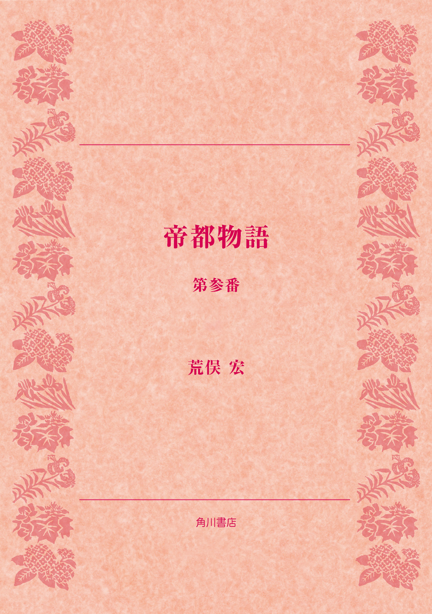

| 帝都物語 第参番 | |
| 荒俣 宏 | |

帝都物語
第参番
荒俣 宏

角川ｅ文庫
本作品の全部または一部を無断で複製、転載、配信、送信したり、ホームページ上に転載することを禁止します。また、本作品の内容を無断で改変、改ざん等を行うことも禁止します。
本作品購入時にご承諾いただいた規約により、有償・無償にかかわらず本作品を第三者に譲渡することはできません。
本作品を示すサムネイルなどのイメージ画像は、再ダウンロード時に予告なく変更される場合があります。
本作品は縦書きでレイアウトされています。
また、ご覧になるリーディングシステムにより、表示の差が認められることがあります。
まえがき
『帝都物語』の軍国時代編に位置する本巻は、風水についても軍事的側面に目をむけている。元来、風水は地形の読み方を主題とした占術であることから、軍事・兵法とも関係がふかかった。というのは、中国の戦争は日本のように平地で行なわれるのでなく、山中や谷間といった異質な場所でおこなわれ、したがって地形を読めるかどうかが大きな課題となったからなのである。
竜脈をあやつる怪人・加藤保憲がつねに軍人すがたで登場するのも、風水における陣立てや攻防の戦略という軍事面を象徴する人物であるがためなのである。本巻においても、加藤は辰宮洋一郎に次のように語る──、
「......これは警告として聞いておけ。大正大震災以来、君等が開始した帝都復興策は、すでにそれ自体、われら組織の陰の指示を受けたものだ。各官庁の集中、国会議事堂、宮城、そして商業金融街を中枢地域に寄せ集めること。次に、その中枢部に巨大な道路を走らせること。最大のポイントは、中枢区域を二重、三重に囲む環状道路を造らせる問題だった。いいか、これらの幹線道路は、戦車部隊が一気に宮城周辺まで攻めこむことを可能にした！」
と。加藤は帝都東京を、呪術ではなく軍事的に攻撃する方法として風水を活用しはじめていたことが、明らかになると思う。
これに加えて、本巻ではあらたに、ドイツから移入されたナチス型西洋風水ともいえるゲオポリティーク（地政学）が紹介される。ゲオポリティークとは、地理・地形を基本条件として国家の発展や膨張を計画する学問であり、風水のうちいちばん政治的な部分とふかくかかわりあう。なぜなら、それは一国の軍事的侵略や占領、あるいは他国攻撃の方法を教えるものだからであった。このゲオポリティークは、戦時中に日本でもかなり関心を集めたものであった。
そしてハイライトは、本巻の最後に登場する反閇である。これは古く陰陽師が土を踏んで、土にかくれた邪気や鬼を追いだし、大地をきよめる重要な儀式であった。角士がおこなう四股と同じく、陰陽師は大地を踏みかためて大地をきよめ、また新年を迎えては萬歳という儀式をおこなって新しい年をきよめることを仕事にしていた。このように、軍事にとっても大地に対する叡知はきわめて大切なものであったのだ。
ちなみに、本巻に収められた二・二六事件をテーマとする『魔王篇』は、加藤保憲に劣らぬ奇怪なキャラクターとして北一輝をおいた。辰宮雪子の悲恋とともに、著者が最も気にいっているエピソードである。
〈登場人物〉
平将門 平安期関東最大の英雄、中央政権に刃向かい、関東を独立国化したため討伐されたが、その一生は関東ユートピア設立のためにささげられた。現在もなお大手町のビルの一角に残る将門首塚は、すでに千年間、東京の中心を鎮護しつづけている。
寺田寅彦 日本を代表する超博物学者、夏目漱石の一番弟子。江戸末期にふとした事件から実弟を手にかけて死なせた父のやるせない思いを無意識に受けつぐ一方、物理学者でありながら超自然や怪異への限りない興味をいだきつづけた。迫りくる東京滅亡を必死で喰いとめようとする少壮の学士。
幸田露伴 本名は幸田成行。明治最大の東洋神秘学研究家の一人。その著『魔法修行者』『幻音論』などの奇作と並び、因縁めいた評伝『平将門』などは、『帝都物語』の読者には必携必読であろう。『八犬伝』の熱烈な支持者でもあった。また彼には『一国の首都』と題した長大な東京改造論があり、後年には寺田寅彦と親交を結び、渋沢栄一の伝記をも著している。
鳴滝純一 理学士。辰宮洋一郎の旧友で、怪事に巻き込まれた辰宮由佳理を助けようとするが、妹の変事に無関心な兄、洋一郎と対立する。
辰宮洋一郎 大蔵省の若き官吏。帝都改造計画に加わり、明治末期から大正にかけての歴史の奔流を目撃する。蔵相、高橋是清の補佐役。
辰宮由佳理 洋一郎の妹。強度のヒステリー症状ないしは一種の霊能を有し、そのために奇怪な事件に巻き込まれる。帝都に撒かれた怨念と復讐の種子は、彼女を通じて不気味に開花する。
辰宮雪子 辰宮由佳理の娘。品川のカフェで女給として働いているが、二・二六事件に深く係っていく。
北 一輝 日蓮の思想から『日本改造法案大綱』を唱え、法華経を唱してシャーマンとなる。二・二六事件を背後で操る魔人。
高橋是清 蔵相。五・一五事件以来の軍部の暴走に対抗する。
中島莞爾 陸軍少尉。北一輝の思想に傾倒し二・二六事件の首謀者の一人。辰宮雪子を深く愛する。
本吉嶺山 「天空さん」と称する霊がとり憑いた霊媒師。
石原莞爾 陸軍大佐。参謀本部作戦課長。二・二六事件を鎮圧した主要人物。
大谷光瑞 西本願寺の法主とともに内閣顧問の役職にある。仏教と神道の加持祈禱を総動員し、米英ソの戦争指導者を呪殺するという奇策を用いて戦局を覆そうとし加藤保憲にも協力を要請する。
小笠原真教 築地本願寺別院の僧侶。大谷光瑞の側近として府中に建設された鉄塔の秘密に係っている。
甘粕正彦 元憲兵大尉、大震災の際、無政府主義者、大杉栄を暗殺。世にいう甘粕事件の主役。満州の都、新京で映画会社の理事長をしている。加藤とも浅からぬ関係がある。
島村義正 朝日新聞社の撮影班の撮影技師として銀座の空襲の惨状を撮影中、ビルの最上階から都心部へ向けての砲撃を発見し、大砲を備えたビルの謎に迫るべく調査を開始する。
中村雄昂 大谷光瑞に仕える美少年。辰宮雪子と出会ったことから大谷光瑞の計画を妨害する存在、トマーゾを突きとめ、単身トマーゾの元へと向かう。
トマーゾ 年齢は百三十歳を越え、目も耳も口も不自由だが〝世界の眼〟という不思議な力を持つ宝石を口にくわえメソニック協会日本支部を牛耳る謎のイタリア人。大谷光瑞の呪殺計画を妨害する。
加藤保憲 明治四十年から帝都完全崩壊をもくろんできた怪人。陰陽道、奇門遁甲に通じ式神をあやつる。〝平将門の霊〟との戦いに敗れ目方恵子を伴って満州へ去り、馬賊の親玉となってソ連国境近くを荒らしまわる。大谷光瑞より敵国指導者の呪殺計画への協力を依頼される。
目方恵子 東北にある神社の宮司の娘。東京の大地霊、平将門に仕える神女として加藤を倒すために戦いを挑んだが破れ、加藤に満州へ連れ去られた。
魔王篇
プロローグ あり得ざる階
昭和十年八月末の一夜であった。
依頼されていた原稿を届けがてら、朝日新聞社の新しいビルを見物した寺田寅彦は、報道の自由という高い理想を象徴するこの社の主筆、緒方竹虎と、しばらく談笑した。
岡田首相の対外政策のことや、つい最近発生した「陸軍上官殺し」こと相沢中佐事件に、二人の話題が集中した。とくに寺田が問題にしたのは、陸軍省内で白昼堂々と起きた相沢中佐による永田鉄山軍務局長殺害事件だった。それは、暴力の季節の到来を告げる暗い兆しでもあった。
「緒方さん、自分は別に軍隊を否定するわけではありませんが、近頃はどうも異常すぎる。五・一五事件では、一部将校が犬養総理を有無をいわさず射殺した。今度は上官殺しです。自分らと意見の合わぬ相手を殺すというのは、あまりにも乱暴すぎる」
朝日新聞主筆緒方竹虎は大きな溜息をついて、相槌を打った。
「なあ、寺田君よ。いまはどうやら日本の転換期ということだ。昭和四、五年以来の不景気からこっち、時世はどうも方向を変えた。むろん危機意識がそうさせているのだが、国を守るという意味が悪いほうへ逆転しだしたらしい」
寺田はこくりとうなずき、真新しいビルの内装を見まわした。数日来悩まされている腰痛が、また再発したのを、緒方の目から何とか隠そうという気持から、視線をわざと反らしたのだ。だがそういえば、この朝日新聞社ビルも大正大震災後に建てられたものだった。あの大震災が市民の心を一つにまとめ、再建に向けてその精力を集中させたことは、日本にとってむしろさいわいだった。寺田はこういう震災復興のシンボルを見るたびに、五年ほど前までの熱気を思いだした。
けれども、大正の復興熱も世界恐慌とともに急激に冷え、いまはただならぬ不安の時代に突入していた。その証拠が、これまで日本の政治を支配してきた元老重臣や、経済と外交に力を注ぐ政党政治家へのテロル活動の増加であった。
緒方竹虎は、こうして根を張りだした暴力主義を憂い、寺田は軍部の政治への介入に不安をつのらせた。
「では、緒方さん、ここらで」
寺田は立ち上がって、一礼した。そのときズキンと腰が痛んだのを、奥歯で嚙み殺すように我慢した。
「おお、お帰りかね。気をつけて」
緒方の声に送られて、寺田寅彦は主筆室の扉を閉め、廊下を歩きだした。どうやら腰痛の一件を主筆に気づかれずにすんだようだった。
長い廊下をくだり、階段口へ向かおうとすると、いつもは明いていない運搬口の扉が、大きく開いていた。
何気なしにそこを覗くと、荷物運搬用のエレベーターがあった。寺田は腰痛のこともあったが、ものめずらしさに負けて、その通用口をくぐり、エレベーターの昇降ボタンを押してみた。
どこか下の方で、ウィーン、ウィーンというモートルの唸り声がおこった。同時にエレベーターの上部にある時計型指示盤の針が動きだした。
針は「四」のところを指して止まり、ゆっくりと扉が開いた。エレベーターの箱はガランとしていて、天井に赤味がかったランプが点っていた。
寺田は小首をかしげた。しかし建築物の構造にいつも興味を抱いている彼は、このエレベーターを探検してやれ、という気分になった。
ひょいと箱に跳び乗ると、待っていたかのように扉が締まり、また、ウィーン、ウィーンという唸り声がわきあがった。箱が上方に引っぱられ、寺田はめまいを感じた。何やら、ふつうのエレベーターとは違う重力の威圧を感じさせる。不思議な動きだった。
ガタン。
床が急に振動し、めまいが止んだ。
扉が、ゆっくりと開いて、どことも知れぬ階に出た。屋上階だろうか？ 妙に暗く、黴くさかった。
物理学者は背広を搔いこみ、用心ぶかく箱の外に出た。いったいどこなのだろう？
右側を見ると、数メートルも行かぬところに鉄扉が立ちはだかっていた。行きどまりになっているのだ。
次に左側を見ると、そこは廊下状になっていて、かなり遠くまでのびていた。通路の幅は四、五メートルもあろうか。薄暗がりの中では、ひどくだだっぴろい感じがした。
寺田は顔を通路の方に向けた。
あいかわらず黴くさい。空気の入れ換えをしていない証拠だった。つまりこの階は、いつも締め切りの状態にあるわけだ。
その通路にそって、二、三歩あるきはじめた。左側の壁には、ところどころ丸い窓が切ってあり、有楽町の夜景がかいま見えた。
新しい朝日新聞社ビルの特徴は、こうした丸窓にあった。聞くところによると、この丸窓は軍艦の意匠をまねたもので、建物全体も軍艦をイメージしてあるという。
寺田は、ふと、そんな噂話を思いだしながら、先をすすんだ。
右側の壁は打ち放しのコンクリートで、ちょうど丸窓と向かいあうようにして開閉扉が取りつけてあった。この扉も、どこやら軍艦内のキャビンのそれを思いださせる造りだった。
通路の長さは約十メートルほどだった。行きどまりには、反対側のそれと同じく、分厚い鉄扉が取りつけられていた。把手を回そうとしたが、寺田の力ではビクリとも動かなかった。
仕方がなくて、丸窓から外を覗いた。
かなり高いところだった。遠く日比谷公園や宮城の森が見えた。おそらく地上三十メートル近くはあるはずだった。
──地上三十メートル？
寺田は、自分がついさっき思いついた数字に、あらためて驚いた。三十メートルといえば、大震災後に定められた地上建築物の高度制限三十一メートルぎりぎりではないか。
──はて、ここは朝日の屋上階なのか？
寺田はそう自問しながら、エレベーターの方に踵を返した。歩いていくうちに、ほこりのたまった床のところどころが踏み荒らされていることを知った。壁側の扉口から、何か重いものを引きずりだしたような轍が、のびていた。その轍が、ちょうど丸窓の真下で止まっている。
──何だろう、この跡は？
寺田が片膝を付き、持っていた万年筆を物差し代わりにして、轍の幅を測ってみると、およそ二十センチメートルもあった。彼は万年筆を床に置いたまま、腕組みをした。何だか妙な気分だった。いったいこの跡は何なのだろうか。
寺田が最初に想像したのは、巨大な大砲だった。日露戦争のとき二百三高地攻撃に使われた、あの旧式大砲。あれには大きな車輪が二つあった。あの大砲が扉のむこうから引っぱりだされ、砲身を丸窓に向ける......
──ハ、ハ、ハ、ここから狙えば、宮城を砲撃することも可能だな。
が、彼はそこで急に真顔になった。不吉な！ 朝日新聞社の屋上に、宮城を狙う大砲が設置されているなどと！
寺田寅彦は、自分で自分の妄想を笑いとばすと、急いでエレベーターに戻った。下降ボタンを押すと、またもウィーン、ウィーンという唸り声がひびいて、箱が下りだした。耳が痛くなった。いつものめまいが、彼を襲った。
やがてエレベーターが止まり、扉が開いた。降りてみると、そこは四階だった。寺田はちょっと口をとがらせ、背広のえりを直してから、主筆室に面した廊下に出て、そのまま階段を下った。
考えれば考えるほど、奇妙な体験だった。寺田は朝日新聞社ビルを出ると、あらためて建物の上方を振り返った。
しかし、下からでは、屋上階にあった小さな丸窓の列は見えなかった。だが、よく見れば、この建物の全容はたしかに軍艦を思わせる雰囲気を持っていた。ゆるいカーヴを描きながらふくれていく側面は、なるほど軍艦の舷側そのままだった。
物理学者は、いまひとつ割り切れぬ思いを残しながら、有楽町駅に向かった。けれども、駅で切符を買おうとしてポケットを探ったとき、チッと舌打ちした。
あの屋上階に、万年筆を置き忘れたのだ。
彼はすこし思案したが、思い切って朝日新聞社に戻ることにした。
入口をくぐり、四階まで階段をのぼったが、さっきまで開いていた運搬口には錠が降ろされていた。そのときふたたび激しい腰痛に襲われた。寺田の額に脂汗がベットリとにじんだ。
──人を呼ぼう。
寺田はもう一度緒方の部屋にはいり、青い顔を主筆に向けた。亡霊のような彼の顔を見て、緒方も驚いた。だが彼は痛みのことはいわずに、さっき帰りがけにエレベーターを乗りまちがえ、屋上階に忘れ物をしたから、と説明し、運搬口をあけてくれるように頼みこんだ。
緒方は心配しながら電話で守衛を呼んでくれた。寺田の顔色が悪かったので、よほど大切な忘れ物と判断したのだろう。
ほどなくして、例の運搬口の扉があくと、寺田は足早やにエレベーターの前へ行き、ボタンを押した。後から守衛も尾いてきた。
「いやね、このエレベーターで屋上まで行ってしまったものでね」と、寺田はつぶやいた。
「はあ、そうでがすか」ごま塩頭の、いかにも朴訥とした守衛は、鍵束をジャラジャラ鳴らしながら、寺田とともに箱に乗りこんだ。
今度は、その守衛が上昇ボタンを押した。ウィーン、ウィーンと音がひびいて、めまいに襲われたところまでは同じだったが、その後がまったく違っていた。
開く扉のあいだを擦りぬけて外へ出た寺田寅彦は、狐につままれたように立ちどまった。
そこには、赤い通路灯に照らしだされた廊下があったが、左側に並ぶ窓はすべて四角だった。それに、外に見える景色も違っていた。彼が降りたあの屋上階よりも低い場所からの眺めだった。
「いや、違うな。これよりも上の階だ」と、寺田はいった。
「そりゃ妙でございますな。ここが屋上階でがすが」守衛がかぶりを振った。
「万年筆を置き忘れた階はね、ランプもなかったし、第一、窓が丸くて小さかったんだ」
守衛はさらにかぶりを振った。
「そりゃ妙でがす。そんな階はございませんですよ。それに、ここがたしかに最上階で......」
「ばかな」
「いいえ、何ならエレベーターの文字盤をご覧くださいまし。ほーら、屋上を指しております」
寺田は文字盤を見た。たしかに針が屋上を指していた。
それから約三十分というもの、寺田はエレベーターをすべての階で止めて、万年筆を探しまわった。しかし、ついに捜し物は発見されなかった。
「ということはつまり、君は〈あり得べからざる階〉に降りたということになる。ははあ、十三階だ！ アメリカのビルには十三階がないというからな」緒方は、寺田の話を聞くと、いたずらっぽく笑った。
「緒方さん、笑いごとではありませんよ。あの万年筆は愛用のドイツ製なんだ」
「すまん、すまん。しかしミステリーではないかね。天下の朝日新聞に亡霊階が存在したというのは。しかもそこにたまたま降りたったのが、有名な寺田寅彦先生というのは！」
寺田は、豪快に笑う緒方竹虎に愛想をつかし、不機嫌な顔で新聞社をあとにした。
──たしかにミステリーだ。
物理学者は夜の舗道を歩きながら、緒方竹虎が冗談まじりに口にした言葉を繰り返した。しかし、これは危険なミステリーだった。何故かはわからないが、寺田には不吉な予感がとり憑いた。朝日新聞社でいましがた体験した一夜の変事が、その後におこるであろう何か途轍もなく恐ろしい事件の前兆ではないのか？
寺田はふと、そう感じて、ほとんど本能的に夜空を見上げ、月を探した。
おぼろ月の青白い円盤が、遠い夜空の一角に見えた。
いまからもう八年も前、天文台の望遠鏡で月の異変を見て以来、寺田寅彦は、胸さわぎを感じると反射的に月を見上げる習慣がついていた。
しかし、その夜見た月はまだひっそりと静まりかえっていた。
寺田寅彦は溜息をつくと、足取りを早めて有楽町駅をめざした。彼の恐れた事件が、発生するまでに、まだすこし間があることを知った安堵感が、やわらかく彼を包みこんでいた。
──それにしても奇怪だ。さっき万年筆を忘れたあの屋上階は、いったいどこに消えたのか？
歩きつづけるうちに、そういう疑念がふたたび彼を捉えた。この腰痛が治ったら、一度あのビルを徹底的に調査させてもらおう。新聞社の新社屋がわざわざ軍艦のかたちに造られたというのも、考えてみれば不可解だった。
けれど、その夜寺田が決めたビルの再調査は、実現される機会を永遠に失ってしまった。九月にはいると同時に、寺田の容態が悪化し、床につく身となったからである。精密検査の結果、脊椎骨の損傷と判明した。医学的にいえば、転移性の骨腫瘍であった。
こうして夏が終わり、秋が来て、庭の栗の木が赤く色づいた葉をホロホロと落とすようになると、寺田寅彦は自分の死について考えをめぐらしはじめた......
巻一 暗い時代へ
一 高橋蔵相、軍部を叱る
どんよりした天候だった。まるで辰宮洋一郎の心を象徴するかのように、あたりはただ薄暗かった。
永田町の一角にギリシア様式の国会議事堂が建設されてから、まだ一年。日本の議会政治はこの新しい殿堂を得て、大いに勢いづかねばならなかった。
だが、大蔵省一筋につとめあげてきた辰宮の眼には、政党政治や官僚行政が日に日に萎縮してゆくようにしか見えなかった。
原因は、もちろん世界大恐慌を発端とする経済不安にあった。しかし、その危機に乗じて、軍部支配を達成しようとする陸軍の横暴が目に余りだしていた。
辰宮は議事堂二階の窓から、下の正面玄関を見おろした。そこにたくさんの軍服姿があった。まるで出入口を封鎖するかのように、将校たちが立ち並んでいる。正面脇の植え込みに立って、そこを通りすぎる政治家や官僚に目を光らせているのは、おそらく憲兵隊だろう。
辰宮は顔をしかめ、視線を閣議室の扉へ向けた。いま閣議室では、高橋是清大蔵大臣が大演説を繰りひろげているはずだった。相手は川島陸軍大臣だ。この日、高橋蔵相は業を煮やし、敢然として陸軍を批判するつもりで閣議室に乗り込んでいた。そのことが辰宮を憂鬱にしたのだ。これだけあからさまに陸軍批判を繰り返していれば、やがては血気にはやる青年将校に狙われるに決まっていたから。高橋蔵相はもちろんのこと、秘書官室の辰宮自身さえも。
そのとき閣僚たちのあいだに騒然とした空気が流れた。怒りにふるえた川島陸軍大臣が、拳をふるわせて立ちあがったからだった。
「では蔵相は、わが陸軍が政党政治家諸君を脅迫しておるといわれるのか。証拠を示されよ。そんな事実が、いったいどこにあるというのか！」
まっ白な髪をたくわえた老政治家高橋是清は、陸相に就任したばかりの川島義之陸軍大将のどなり声を、あっさりと受け流した。
「あんたも、それからあんたの前任だった荒木貞夫大将も、口裏合わせたように同じことをいう。政治家や新聞社が軍部に不利なことをいえば、憲兵がきてピストルで嚇すんだ。わがはいの秘書官たちも、憲兵が私邸の監視までしておる、と嘆いていた。九州のある新聞社は、軍部批判を中止せねば爆弾を落とすといって、軍用機に上空を旋回されたというではないか。こんなことじゃ世論も国論もあったものじゃない。みな軍部のいいなりだ」
陸軍大臣は、にがり切った表情でドサリと椅子にすわった。高橋はそれを見て、さらに語気を強めた。
「いいかい、川島さん、あんた五・一五事件を軍の暴力とは思わんのかね？ 犬養総理を暗殺して、昭和維新だの何だのと叫んだのは、ありゃ軍人じゃなかったのかね？」
「あの事件は一部青年将校の行き過ぎた行動である」川島がそう返事をした。
「じゃあ聞くが、近来陸軍省内で発生した相沢事件はどうなのかね？ 理由のいかんを問わず、軍人が上官を斬殺するとなれば、もはや軍規は失われたに等しい。あんたはお上にどうお詫び申しあげるつもりかい？」
高橋蔵相は丸い眼鏡の奥でギロリと目を光らせた。激論を聞いていた岡田啓介総理が、そっと片手をあげた。
「川島さん。自分は海軍出身であるから、陸軍の問題はよく知らん。しかし近頃は軍内部で皇道派と統制派の対立が激化しておるというではないか。現に、この八月、相沢三郎中佐が、こともあろうに軍務局長永田鉄山を局長室で斬殺した事件が起きたが、あれはいったいどういうことなのだ。皇道派の青年将校は、それにつづけとばかり陸軍幹部と重臣の暗殺を決行しようとしておるとも聞く。物騒きわまりないことだ」
川島陸相は一礼し、しばらく目を閉じたあとで口をひらいた。
「総理にご心配をおかけし、申しわけありません。しかし、この問題はいずれも不幸な誤解から生じたのでありまして、皇道派青年将校のあいだに人望ある荒木前陸相や真崎前教育総監がそれぞれ要職を退かれたのは......」
「わがはいが問うておるのは、そんなこっちゃないわい」高橋が叫んだ。「事情はどうあれ、陸軍内で上と下とが勝手に世の中を動かそうとしておること自体、お上の意向を無視する行為だというのじゃよ。君が軍をしっかり掌握できぬなら、さっさと辞表を出したまえ！」
岡田総理が、あわてて蔵相を制した。
「高橋君、それは言いすぎじゃ。わが内閣の陸相は、日本のために私心を捨てて誠心誠意つとめてくれておる。川島君はな、君以上に陸軍内部の問題を憂慮しておるはずだ。それ以上の暴言は、この岡田が許しません」
高橋是清は口をへの字に曲げ、いかにも言い足りぬといった面持ちで席に戻った。
「よろしい。本日の閣議はこれまで。自分は宮中に参内しなければなりません」岡田総理はそう言い残すと、まっ先に部屋を出ていった。
あとに残った高橋は、川島陸相を取りかこんだ軍人たちに嫌悪の目を投げつけてから、入口にあらわれた辰宮洋一郎を呼びつけた。
「おい、君。すぐに省へ戻るから車を用意せい」
辰宮は、軍人たちの冷たい視線を背中で撥ね返しながら廊下へ出ると、うしろも振り返らずに一階へ降りて、蔵相の専用車を呼んだ。
玄関口に車を横づけにし、扉をあけて待っていると、しばらくして高橋蔵相が二人の秘書官をともなって降りてきた。かれらは蔵相を挟むようにして後部座席に乗りこむ。間髪を入れずに辰宮が前方の助手席に跳び乗った。
バタンと扉を閉めるのと同時に、車が走りだした。正面をくぐりぬけて表通りに出るまで、何人もの憲兵が車の内部を覗きこんできた。
蔵相を乗せた車が通りへ出てから、三分ほど経った。辰宮がしきりにバックミラーをうかがった。
「どうかね、辰宮？」
「はい。やはり不審な車が尾いてきております。憲兵隊でしょうか、青年将校の一部でしょうか」
高橋は腕組みしながら、溜息をついた。
「物騒だねえ」
「蔵相」
「ん？ 何かね、辰宮？」
「しばらく陸軍攻撃をおやめになられてはいかがでしょう。このままですと、危険でございます」
高橋は軽く笑った。
「犬養さんの二の舞いになる、というのだろう？」
辰宮は返事に窮した。
「だが、そうはいかんよ。五・一五事件以来、政党政治家はテロルを恐れて、軍部の暴走を指弾しなくなった。せめてこの老骨が暗殺覚悟で物を言わなければ、日本の政党政治は護れんよ。静岡興津に隠棲されておる西園寺公も同じ意見じゃろう。宮廷政治でも貴族政治でも、軍部独裁よりはいくらかましだからな」
辰宮はうなずいた。たしかにその通りだ。陸軍はいま、上と下とで激しい対立抗争を開始していた。統制派といわれる陸軍エリート集団は、浜口総理時代のロンドン海軍軍縮条約締結に代表される政党政治の弱腰と独断専行を批判し、軍部で政治の実権を握ろうと画策していた。一方、実戦部隊として永久に出世の望めない立場にある青年将校の一群は、皇道派と称し、天皇の軍隊を私物化する軍事エリートを憎むこと深く、かれらを重臣もろとも一掃する過激な行動に出ようとしていた。昭和維新の旗の下、五・一五事件、相沢中佐事件と立てつづけに発生した〈愛国的行為〉は、皇道派の若い将校の血をますますたぎらせていた。
そうした中にあって、もはや政党も官僚も沈黙せざるを得ないのが実情であった。明治・大正・昭和三代の激動を生きぬいた高橋是清のような、筋金のはいった政治家を除いては。
辰宮は、ふたたびうしろを振り返った。怪しい車が尾いてきている。
「運転手、速度をあげろ！」
辰宮の指令を受けて、運転手はアクセルを踏んだ。大蔵省の建物が間近に見えた。車は逃げる鹿のように数十メートル走り、大きく曲がって省舎の横道に走りこんだ。
辰宮はすぐに後方を見た。さっきから追いすがっていた黒塗りの車が、そのまま道を走りすぎていった。しかし、黒塗りの車に乗りこんだ軍服姿の男が二人、鋭い視線を辰宮たちに投げつけた。それは一瞬の出来ごとだったが、燃えるような憎しみの炎が高橋蔵相の随員たちを総毛だたせた。
「やはり軍部の尾行隊です！」
高橋是清はソフト帽を被りながら、辰宮にそっと耳打ちした。
「用心することだ。犬死にはするなよ」
そのひとことが、辰宮洋一郎の背に、氷のように冷たい悪寒を走らせた。
二 運命の足跡
その夜、辰宮は十二時近くになって帰宅した。屋敷の中が、あいかわらず寒々としていた。すでに両親は鬼籍にはいり、不幸な出来ごとによって妻の恵子をも失った彼の家庭は、冬の露路うらのように暗く、わびしかった。
だから彼は、まるで憑かれた人間のように仕事に没頭した。これほど寒々とした自邸に引き返すくらいなら、連日徹夜仕事でもやって、疲れた体を省舎の長椅子にでも休めるほうが、どれほど好ましかったか。
すでに、この屋敷には由佳理もいなかった。雪子すら近寄ろうとはしなかった。いまから八年前の悪夢の一夜、彼は、親友だった鳴滝純一に負傷をおわせた。しかし鳴滝は、その事件をついに表沙汰にしようとはしなかった。
別に、旧友の辰宮を救いたかったからではない。ほのかに愛情と同情とを寄せていた妹の由佳理が、不憫でならなかったからだった。
正直にいえば、鳴滝は洋一郎を憎んでさえいた。あろうことか、妹を犯して雪子という娘を産ませた張本人こそ洋一郎だったと知ってから、彼は旧友を終生の仇と決めたからだ。
そうした経緯があった後、辰宮洋一郎は幸田露伴の仲立ちを得て、由佳理と雪子の世話を鳴滝に任せることにした。さいわいにも鳴滝の実家は平河町にあり、そこに彼の叔母が住んでいた。由佳理と雪子は、この鳴滝家に引き取られ、看護や日々の暮らしに要る費用を辰宮が毎月負担することで話し合いがついた。
だからいま、辰宮が帰る屋敷は、冬の荒野のように人気がなく、心を凍てつかせる場所でしかなかったのだ。
辰宮洋一郎は、その荒野に帰り着くと、自室に閉じ籠もり、赤く燃えるランプをみつめた。もはや彼の日課といってもよかった。空しい空間の中で、彼が唯一とりすがれるものが、部屋のランプなのだった。
辰宮は、ポッカリとあいた心の空洞を、ランプの灯で照らしあげた。何もかもが空しかったけれど、その空洞にたった一つ、影を投げかけるものがあった。それは大蔵省で手がけてきた財政の仕事だった。
すべてを失った彼に、それでも忠実に手をさしのべてくれた救いの女神こそ、財政問題だった。その難問に熱中すればするほど、彼は心の空洞を忘れることができた。そして、重要な役職に就けばつくほど、救いの女神はいよいよやさしくなっていったのだ。
財政家としてその名も高い高橋是清が、そんな辰宮の一途さに惚れこんだのも無理はなかった。辰宮に、予算問題で陸軍とわたりあう事務官の役を与えたのも、同じ理由からだった。しかも彼の期待に、辰宮は十分すぎるほど応えた。
だがそのために、陸軍内部における高橋蔵相と辰宮への怨念は、きわめて激しいものがあった。先日も、辰宮の屋敷に脅迫状が届くという事件があったばかりだ。「陸軍予算に手心を加えねば、貴殿の安全を保障しかねる」それはたしかに、陸軍関係者が送りつけてきた脅迫状だった。
しかし、脅迫者たちは肝心な点を見逃していたのだ。つまり、辰宮洋一郎が常人の心を朽ち果てさせた廃人だということ、したがってすでに生きる屍と化した男だということを。
その夜、憲兵の尾行に悩まされながら、ようやく屋敷へ逃げこんだ洋一郎は、わびしいランプの灯影をみつめているうちに、ふと、妹に会いたい、と思った。心から、そう思った。
彼の一家を崩壊させた加藤保憲にも、いや、旧友の鳴滝にさえ、由佳理をくれてやることはできなかった。彼は、幼い頃からずっと、由佳理を愛しつづけた。殺すほどに、愛したのだった。しかしその心情を理解した者は、ひとりもいなかった。誰もが、辰宮洋一郎を冷酷な家庭破壊者と見なした。おそらく、たった一人の女を除いては......
「恵子......」と、洋一郎はランプの灯にむかってささやきかけた。わずか一年ほどを共にすごした妻が──俤神社の宮司の娘だけが、たぶん洋一郎の心情を理解していた。
その辰宮恵子が、あの悪夢の一夜を最後に消息を絶って以降、彼女の行方は杳として知れなかった。当時復興院の総裁であった後藤新平が強引に見合わせた女だったが、いま思い返せば、恵子との出会いは運命的ともいえた。
だが──その女神もすでにいなかった。
辰宮はじっと目を閉じた。外を吹き荒れる晩秋の風の音が、耳を凍てつかせた。
この長い孤独な夜を、どうして過ごせばいいのだろうか？
彼は両手に顔を埋め、声をあげて泣いた。寒々とした荒野で、彼が唯一できたことは、誰に遠慮もなく泣きくずれることだった。墓場のように空ぞらしいこの場所へ、彼は、泣き濡れるために帰ってくる、ともいえた。
......そうやって、何時間泣きつづけたろうか。辰宮はしばらくうとうとしたあと、寒さのために目を醒ました。蒲団にはいろうと立ちあがったとき、机の上に置かれた茶封筒が目にはいった。墨で、辰宮洋一郎殿と、したためてあった。消印が二日前になっている。
彼はぞんざいに封を切り、一枚の便箋を取りだした。中身も墨で書かれていた。
前略
貴殿に折り入って御相談したき件有り。十一月二十五日夜八時、日比谷公園噴水前にて待つ。
☆
奇怪な文面だった。近頃急激に増した脅迫状のひとつに見えたが、文末に描かれた五芒星の印が辰宮の目を射た。
──ドーマンセーマン！
思わず、呪わしい言葉がくちびるからほとばしりでた。それはまさしくドーマンセーマンであった。加藤保憲がつねに身につけていた呪いの護符。
辰宮はあわてて封筒をひっくり返した。しかし裏面に差出し人の名はなかった。
三 頽廃のちまた
昭和十年秋は、一向に明るさを取り戻さぬまま暮れようとしていた。日に日に夜が深まり、闇が濃くなるにつれて、銀座から築地にかけてきらびやかに並んだ街のネオンサインが、その毒々しさを増すばかりだった。
人々は昼間、平然と物が言えなかった。だからその分、闇と闇のあいだに逃げこみ、罠のように光り輝く原色のランプの下で、酒に酔い痴れながら噂話を取り交わした。
東銀座の万年橋を越したあたりにある松竹ビリヤードクラブもまた、そういった夜の噂話が飛び交う「闇のはざま」であった。
もちろん、このビリヤードクラブに集まる客は、キューをかまえてみごと七色の玉を弾いてみせるダンディーばかりではなかった。ある客は、クラブの奥にしつらえたカフェの女給が目当てであったし、また別の客は、ここで時間をつぶすハイカラ文士や実業家から、ありもせぬ法螺話を仕込むのが楽しみで通ってきた。
その日、幸田成行は、キューを握ることにも飽きて、奥まったカフェの丸椅子に腰を下ろし、黙って煙草をふかしていた。すっかり白くなった口ひげをかすめて、青白い煙が天井へ昇っていくのを、彼は呆然と眺めていた。
もとより好きこのんでビリヤードクラブに入りびたっているわけではなかった。母とともに辰宮家を出て、すでに八年。二十歳になった雪子が流れ着いたこの店へ、ときおり彼女の様子を見にきているうちに、常連客となったまでのことだった。
幸田が吐きだす煙のむこうに、頰づえをついている辰宮雪子の顔が見えた。母親ゆずりの愛らしい顔が、濃い化粧のためにすっかり大人びていた。太くて黒い眉が、ふしぎになまめかしかった。
鳴滝家に引き取られてから五年目に、雪子はふいに家をとびだした。そして二年のあいだ、行方が知れなかった。鳴滝と幸田は手分けして、あちこち探し歩いた。そのあげく、品川のカフェで自堕落な女になり果てた雪子と対面しなければならなかった。
しかし二人には、この少女を叱りつける資格がなかった。いや、雪子がどのような悪場所に迷いこんだとしても、それは彼女の責任ではなかったのだ。彼女を地獄へ追いやった張本人は、ほかの誰でもない、鳴滝や幸田を含めた周囲の大人たちだったのだから。
幸田にできることは何だろう？
鳴滝にできることが、何かあるのか？
もしもあるとすれば、それは、黙って遠くから、雪子の地獄めいた一生を見守ってやることだけだった──。
「ねえ」と、長い睫毛がしだれかかる半開きの瞳が、ニッと笑いながら幸田成行をねめまわした。
「ねえ、おじさま」
幸田は片方の眉を釣りあげ、気のない返事をした。
雪子の紅いくちびるが、薄く横にひろがった。そのあいだから、白い歯がこぼれる。
「ねえ、鳴滝のおじさまがいらしてよ」
幸田はそれを聞くと、煙草を灰皿に押しつけて、ゆっくりとビリヤード場のほうへ目を向けた。
紫の煙がつくるとばりを切り裂くようにして、大柄の紳士が近づいてきた。もう初老を迎えた男だった。顎のあたりに深い皺がきざまれ、髪にも白いものが目立っていた。
男は幸田成行を見つけると、片手をあげ、巨体をひきずるようにして近づいた。
「よお、鳴滝君か。久しぶりじゃな」
大男は、文士の横にある空席に巨体を乗せると、ソフト帽を脱いだ。
「幸田先生、悪い知らせです」
露伴はまた片方の眉を釣りあげた。カウンター越しに、頰づえをついている雪子の艶っぽい貌が見えた。
「どうした？」
大男は、雪子のほうにチラと目をやってから、声をひそめて文士の耳もとにささやきかけた。
「寺田寅彦先生がお悪いようです。ついさっき、お見舞いに行ってきたのですが、脊椎骨に腫瘍が──」
「腫瘍じゃと？」
幸田は目を光らせ、大男を睨み返した。
「はい、たいそうおやつれでした」
大男の瞳が曇っていた。
幸田露伴は顎に手をやり、下くちびるを強く嚙みしめた。
「それはいかんな。せっかくの俳句友達が......」
「近いうちにぜひ見舞ってみてください。寺田先生も喜ばれます」
幸田はウンとうなずいて、そのまま物思いに沈んだ。
鳴滝もかたわらに腰をおろし、煙草の煙が充満したビリヤードクラブの遠景を見つめた。
「ねえ、鳴滝のおじさま、お酒はいかが？」
雪子が、長くて白い腕をしなやかにのばして、初老の男にグラスをすすめた。彼は笑みを浮かべ、白いワインが波うつグラスを受け取った。
彼女の腕にはえたうぶ毛が、シャンデリアの光を浴びて乳白色に輝いた。
鳴滝は思わず、その腕のつけねに視線を這わせた。しなやかな腕と、青白い胸とのあいだを、黒いドレスをふちどる絹が分断していた。
鳴滝はそこで、ハッと我に返った。それから、
「雪ちゃん、母さんは近頃体の具合が良いようだ」と声をかけた。
うら若いが、すでに成熟した女のなまめかしさを身につけた女給は、また頰づえをつきながら、フッと笑った。紅いくちびるがまぶしかった。
「そう。ありがと」
「どうだい、雪坊、仕事を早く切り上げられるなら、おじさんたちと食事を付き合ってくれんかな？ わがはい、雪坊が一緒だと食欲が大いにわくのだがね」
幸田成行がようやく物思いから醒めて、おどけた口調で女給に問いかけた。
雪子は、薔薇のように紅いくちびるを、もう一度咲かせた。
「あら、おあいにくさまね。もうじき、あたしの佳い男が来るのよ。今夜は先約なの」
幸田は渋面をつくり、かぶりを振ってみせた。
「やれ、やれ、また振られたか。齢はとりたくないもんだ。鳴滝君よ」
「雪ちゃん、佳い男っていうのは──」
鳴滝がそう問いかけたのを、文士が止めた。
「おいおい、野暮は訊かんこった」
けれども、雪子の瞳はやさしかった。
「ううん、いいのよ。おじさまたち、きっと心配するでしょうから。佳い男っていうのはね、陸軍の軍人さん。あたしより五つ年上かしら。とっても無口な人よ。だから、一緒にいると心が安まるの」
「ほお......」幸田は目を丸くした。まさか雪子に恋人の話を聞かされるとは思わなかったからだ。
「あ......」雪子が急に叫んで、頰を輝かせた。
「いらしたわ、佳い男が」
幸田と鳴滝が、ほとんど同時にビリヤード台のほうを向いた。はるか遠方にある扉が、いま閉じたばかりで、そのあたりだけが煙を吹き払ったようにくっきり浮かびあがった。
軍帽をまぶかに被った青年が一人、ビリヤード台の玉の動きに目をやりながら、ゆっくりとカフェのほうに歩いてくる。
やがて軍人は視線を正面に向けた。そして雪子の黒いドレス姿をみとめると、急に足取りを早めた。
「ほーら、ご紹介しましょうか？」雪子はいたずらっぽく幸田成行の顔を覗きこんだ。幸田も鳴滝も、あんぐりと口をあけたまま、返事ができない。雪子はそれを見て、上のまぶたを三日月のように美しくたわめた。
軍人は靴音をたてて、カウンターに近づき、雪子にむかって軽く敬礼した。彼女が紅いくちびるをすぼめる。
「いらっしゃいな、時間どおりね」
軍人は二人の紳士に目もくれず、あいていた丸椅子に腰をおろした。おかげで、二人は余計に渋面をつくった。
「待った？」軍人の声は、思いのほかやわらかく、しかも素直だった。
「いいえ、時間どおり」
「そう」
軍人は軍帽を取ろうとしなかった。丸椅子に腰かけて、まず雪子に目を向け、それから思いだしたように、そばにいる初老の紳士たちに注目した。
「ふふ、ご紹介するわ、おじさま。こちら中島莞爾工兵少尉殿。この七月まで津田沼の鉄道第二連隊にいらしてよ」
軍人はとたんに椅子を降り、二人に敬礼した。
「中島であります」
雪子は軍人にむかって、言葉をついだ。
「こちら、あたしのおじさま──ううん、おとうさまとおじいさまね。鳴滝おじさまと、幸田露伴おじさまよ」
軍人は、露伴の名を聞いて、かなり度胆を抜かれたようだった。
「露伴先生とおっしゃいますと、あの高名な？」
「もちろんよ、あの有名な露伴先生よ」
雪子がちょっと声を高くして、つけ加えた。
「これは失礼いたしました。自分は陸軍工兵少尉中島莞爾と申します」
「なるほど、雪坊の佳い男というわけかね。こりゃ頼もしい恋人だ」
幸田が笑うと、軍人は照れくさそうに軍帽を取った。
「で、どこの所属ですな」鳴滝が、かたわらから軍人に声をかけた。
「は、目下のところ砲工学校在学中でありますが、歩兵第一連隊に同郷の栗原中尉がおられますので、いずれそこへ配属になると考えます」
「栗原中尉？」と、幸田がつぶやいた。
「は、中尉をご存じでありますか？」
幸田はあわてて手を振った。
「いや、名を耳にしたことがある程度です」
雪子がいつのまにかカウンターを出て、若い軍人の左腕にからみついた。
幸田はそれを見とどけると、鳴滝をうながし、ビリヤードクラブを出た。
万年橋のたもとを吹きぬける北風が、肌にしみた。雪子の楽しい逢瀬に気をきかせたとはいえ、老残の身にはずいぶんとこたえる外の冷たさだった。
幸田は両手をたもとに隠し、妙に老人くさい仕種で鳴滝に声をかけた。
「雪坊も、じきに女になるな。早いものさ」
「しかし、放っておいては......」
「君、あいかわらず気がきかんな。余計な世話だというんだよ。雪坊も二十歳を越えたのだ。好きにさせるこったよ」
幸田はうしろを振り返りながら、橋のたもとに立ちどまって、連れを手招きした。
「それはそうとな、あの中島という青年将校じゃが、栗原中尉と同郷だといっていたな？」
「ええ、たしかに。でも、それが何か？」鳴滝は、表情を曇らせている幸田を、怪訝そうに見つめた。
「君、知らんか？ 栗原安秀歩兵中尉といやあ、皇道派の急進将校の名だ。昭和維新断行を叫ぶ直接行動派だよ」
「直接行動派ですって？」
幸田は背中をまるめて、声をひそめた。
「そうだ。在郷軍人から学生、それに部隊内の若手下士官を片っぱしから煽動して回っている男だと、もっぱらの噂だが」
鳴滝はふと眉をひそめた。
「すると、あの中島という将校も、彼に煽動されている一人ではないでしょうかな？」
「あるいはな......。噂によるとだ、栗原は昭和九年に戦車第二連隊にあって、戦車十数台を引率しての行軍中、大森で宿営という予定をくつがえして、西園寺公を戦車で襲撃する準備を開始した。上官がいくら説得しても、がんとして耳を貸さなかったそうだ」
鳴滝が大きくうなずいた。たしかにそういう事件のことを聞いたことがあった。
「で......」と、幸田が話をつづけた。「最後にはついにこの恐るべきテロルを中止したんだが、そのとき説得に当たったのが、なんと西田税だったそうだ。彼が必死に説得したので、やっと戦車攻撃を思いとどまったのじゃよ」
「西田？」
「西田税だよ。元将校で陸軍内に顔がきくが、いまは北一輝の片腕だ！」
鳴滝は思いもかけなかった名を訊いて、慄然とした。
「北一輝ですって？ 日本改造計画をぶちあげて、国内革命をあおりたてている北ですか？」
「さよう。西田は北一輝の日本改造計画を実現するため、血気にはやる皇道派の青年将校と連繫しているらしい」
幸田成行は夜空を見上げ、しばらく考えてから、またも口をひらいた。
「思いだしたよ。栗原はこの六月にも、満州から皇帝が来るというので、その機会を狙って軍事行動に出ようとしたが、同志に反対されて重臣射撃を中止した」
「そりゃ物騒だ」
幸田がこくりとうなずいた。
「そんなわけだから、栗原め、八月に起こった相沢事件には相当な衝撃を受けたらしい。自分はやるやると言っていながら、盛りをすぎた老軍人一人に昭和維新断行の先陣をきられたわけだからさ。つい先日も新聞記者に聞いたが、栗原は焦っているらしい。今度こそは本気で決起するつもりだ。どっちにしろ、ひどい時代になったもんだ」
鳴滝は、年老いた文士の肩を抱き、万年橋をそろそろと渡らせた。正面に、銀座のまばゆい灯が見えた。
橋の中央まで出たとき、向こうがわから数人の将校が駆け足で進んできた。鳴滝が文士の肩を抱いて橋の欄干に退くと、軍人たちは礼もいわずにそばを走り抜けていった。
軍靴の響きが、まるで帝都の喘ぎ声のように、いつまでもいつまでもこだました。
四 Ｋというイニシャル
灰色の外套をはおった女が、ビリヤードクラブの裏口から出てくるまで、若い軍人は街路灯の下で待っていた。
ついさっき、数人の将校があわただしく築地方面に走っていくのを見かけた。ほんのすこし胸さわぎが起こった。そういえば、先日も村中孝次元歩兵大尉が、市川の下宿を訪ねてきて、相沢中佐の公判に軍部統制派の横槍がはいった場合は、既成の権力にしがみつく貴族、軍幹部、ならびに政府官僚を武力襲撃する計画がもちあがっている、と知らされたばかりだ。
村中孝次は昭和七年の十一月事件に連座して免官となった急進派将校だが、中島にとっては予科時代の中隊区隊長であり、親しく軍人精神を教えこまれた恩師でもあった。
そういうわけだから、中島は、街を走り去る同志将校の姿を見るたびに、いよいよ決起かと全身を緊張させた。
「お待ちどおさま」
軽やかな女の声が、一瞬、中島少尉の緊縛を解いた。彼は振り返り、笑みを浮かべて雪子を迎えた。
「行こうか？」
「ええ」
「どこがいい？」
「そうねえ、いつまでも二人で顔を見合わせていられるところ──」
将校はふたたび笑みを漏らし、雪子の肩をやさしく包みこんだ。
「銀座ラスキン文庫。どうかね？」
女はかすかにうなずき、大きな瞳を見開いた。
「いいわ。ラスキン文庫で英国の紅茶ね」
「ああ、取っておきのブランデーを添えてね」
紅いくちびるが大きく開かれた。
「決まりね！」
二人は足早に表通りへ出て、そのまま銀座めざして市電通りをのぼっていった。
やがて天賞堂の大時計が見えた。二本の針が八時半を指していた。
雪子は軍人に笑みを返して、そのままラスキン文庫の階段をのぼった。
ラスキン文庫は、その名のとおり、英国の美学者ジョン・ラスキンにちなんだコーヒーハウスだった。御木本真珠の二代目御木本隆三はラスキンに傾倒すること深く、みずから銀座の一角にこの喫茶店を開設した。「文庫」とはいっても、ラスキンの著書や絵が展示されていることを除いては、英国直伝の実に落ち着いたサロンに違いはない。銀座を根城にする文士や社交家たちは、すこし落ち着いた雰囲気が欲しくなると、ラスキン文庫を利用した。
中島は雪子とともに、銀座の街が見おろせる窓際の席へすわり、英国紅茶をポットで注文した。
彼女が横顔を向けた。紅茶が運ばれてくるまで街の景色を眺めつづけた。中島少尉は椅子の背にもたれ、テーブルに両手を置きながら彼女を見つめた。
紅茶のポットが運ばれてきた。
軍人は白い手袋を脱ぎ、熱い紅茶を二つの茶碗に注ぎいれた。
「どお？」彼は紅茶をすすめた。
雪子が振り向いて、妖しく笑った。
「そうだ、占いをしましょうか？」
「占い？」
彼女は茶碗をひとつ取りあげて、ゆっくりと回し、そのまま口もとへ運んでひとくちすすった。
「おいしいわ」
「どんな占いかな？」
彼女がその問いかけにぶつかって、首をかしげた。
「あら？ 知らないの？ 英国伝来の紅茶占い。こうやって少しずつ飲んでいくと、最後にお茶かすが残るでしょ。それが未来を予言するアルファベットになるのね。やってみる？」
中島が笑いながらうなずいた。
雪子は茶碗を取り、紅茶を揺するようにして飲みだした。最後に、残った琥珀色の液体を一息であおって、テーブルの上に茶碗を戻した。
底のほうに茶のかすが残って、まだら模様をつくりあげていた。
雪子はその模様をしばらく見つめてから、急に顔をあげた。
「Ｋよ！」
軍人は不審そうに問い返した。
「けい？」
「ちがうわ。アルファベットのＫ。お茶の葉の占いにそう出たの。見て」
軍人が茶碗の底を覗きこんだ。たしかに、茶かすのまだら模様はＫというかたちに見えた。
「そうだね、Ｋだ」
「中島さんの未来を左右する誰かさんの名は、Ｋが付くわ。Ｋで始まる名の人が、中島さんの運命をひらくのね」
「............」
中島少尉は頭の中でＫの付く人名を探した。
Ｋ。
カ、
キ、
ク、
クリハラ......
「栗原中尉か！」少尉は急に表情を明るくして、雪子を見つめ返した。
「らしいわね」
雪子は頰づえをつき、わざと高く脚を組んだ。
「そうか。栗原中尉のあとについていけば、自分の運命はひらかれるのだね？」
「でも、ほかにだれかいないの？ 名前にＫの付く人が？」
中島は顎をさすって考えた。そして、
「いない」と答えた。
雪子は笑って、大きな目を見開いた。
「じゃ、その人ね。歩兵第一連隊の中尉さん。そうでしょ？」
中島は大きくうなずいた。昭和維新をだれよりも声高に叫ぶ急進派将校の筆頭、栗原安秀中尉が、やはり彼の未来を握っていたのだ。
雪子は、妙に目を輝かせだした少尉を見て、頰をふくらませた。
「また恐ろしいことを考えてるのね、中島さん。その栗原って人、政府や軍の偉い人を狙っているのでしょ？」
中島はくちびるに指をあて、シッと声を出した。それから周囲を見まわした。
「雪ちゃん、滅多なことは言わんでほしい。壁に耳あり、というからね」
雪子は不機嫌そうに、ぷいと横を向いた。
「いいな、軍人さんは。いつでも人が殺せるもの──」
そのひとことが軍人の胸を一瞬高鳴らせた。脂汗が彼の額ににじんだ。
「雪ちゃん！」
雪子は、高く組んだ脚を撥ねあげるようにして、中島の腕に寄りかかった。
「お茶の占いに出たＫが、誰だっていいのよ。でも、あたしだってね、殺してやりたいと思う人が世の中に一人くらいはいる、ってことよ」
軍人は眉を釣りあげた。
「今夜はずいぶんからむね。君が殺したいと思っているのは、誰？ 自分も知っている人？」
雪子は、逞しい男の腕に体をあずけながら、愛らしい目をすこし伏せた。
「ううん、中島さんは知らないわよ。大蔵省のお役人。もう五十歳を越した老いぼれだけどね」
「ほお。何をしている人？」
「いまは大蔵大臣の秘書官さんだってさ」
軍人は意外な表情を浮かべた。
「君とどんな関係があるの、その人は？」
「母さんとあたしを地獄に突き落とした張本人ってところね」
雪子の返事には、なぜか熱意がこもっていなかった。まるで他人ごとのような答えだ。「蔵相の秘書官か。ならば、陛下をないがしろにする国賊の仲間だね」
うら若い乙女は、長い睫毛を巻きあげるようにして目を開き、半分まじめに中島に言い寄った。
「ねえ、中島さん。あたしの代わりに殺してよ。その悪い老いぼれを」
「............」
「ねえったら」
軍人はもう一度あたりを探ってから、あらためて雪子に耳打ちした。
「秘書官の名は？」
「辰宮洋一郎......」
そうつぶやいた瞬間、彼女は頰を打たれたような衝撃を覚えて、口をつぐんだ。漏らしてはいけない名を人に告げてしまったことへの、深い後悔が彼女を溺れさせた。息が苦しかった。
中島少尉は気味悪い笑みをくちもとに残した。
「覚えておこう......」
女はあわてて作り笑いを浮かべ、わざとらしく男の手を握った。
「いいの、いいのよ。忘れて。あたしの怨みごとなんか」
しばらくは二人のあいだに重苦しい沈黙が流れた。
「ふしぎな女だ」と、中島が自分に言いきかせるようにつぶやいた。雪子はふりむいて、
「何？」
と尋ねた。
中島は、力ない笑みを残しながら、彼女に答えた。
「だってそうだろう。君は苗字も教えてくれない。ご両親の名も、生まれたところも」
「そんなこと、いまのあたしに関係ないわ」
軍人の目に密かな哀しみが宿った。
「ああ、いまにして思いだした。さっき紹介してくれた君の二人のおじさまに、自分が知りたかったことを教えてもらえばよかった」
雪子はちょっと眉を釣りあげた。
「あら、そうね。うっかりだわ、あたし。おじさまたちに釘を差しておかなくちゃね。中島さんにあたしの身の上を教えないでって」
「............」
中島は口をつぐんだままだった。いたずらに口をすべらせた冗談が、軍人の心を暗くしたことに、彼女も気づいたらしかった。
「ねえ、中島さん」
雪子が、いたたまれなくなって、軍人の腕をつついた。
「ん？」
男の視線は冷たかった。軍人の本性ともいうべき冷酷さが、彼の瞳に戻っていた。
「あたし、何だか思いっきり踊りたくなった。どこかへ連れていって」
「どこがいい？」
「赤坂──そうね、赤坂がいいわ。溜池のダンスホール、フロリダへ行きましょうよ。そしてあたしと、夜明けまで踊って？」
軍人は、いまにも泣きだしそうな彼女の瞳を見据えた。しばらくは、まばたきすらしなかった。
そして、長く重いみつめ合いの時間が過ぎたとき、中島工兵少尉はささやいた。
「いいよ。夜明けまで、君と踊ろう」
巻二 帝都に潜む兵器
五 双眼鏡は見た
十一月も晦日に近づいた日曜日。鳴滝純一は双眼鏡を首にかけて有楽町へ出た。
日曜日、それも年の瀬が近いとあって、有楽町の日劇から銀座の目抜き通りにかけては、大変な人出だった。
しかし、鳴滝が目ざしたのは日劇だった。入口で入場料を支払うと、そのまま階段をあがって三階へ行き、朝日新聞社の堂々たる新社屋が見わたせる窓をみつけ、そこから双眼鏡で外を眺めだした。
近くを通りすぎていく観客たちは、初老の男が窓にとりすがって双眼鏡を覗く姿に、小首をかしげた。中には、わざわざ窓際に来て、鳴滝の顔を覗きこむ客もいた。
しかし彼は、一心に双眼鏡を覗きつづけた。狙いは、もちろん新聞社の最上階あたりだった。何度も何度も壁面を調査し、そこに並んでいるはずの小さな窓を捜しもとめた。
しかし、三十分経っても、目ざす窓は発見できなかった。
──妙だな、こいつは。
鳴滝は諦めて、双眼鏡を降ろし、腕組みした。
たしかに、寺田寅彦が見たという最上階の丸窓はなかった。すくなくとも外側から調査したかぎりでは、軍艦に模した建物の最上部に丸窓らしきものは見あたらなかった。
病床にある寺田に依頼され、謎めいた朝日新聞社の最上階を探しだす仕事を引き受けた鳴滝は、半ば諦め顔で長椅子に坐りこみ、煙草に火をつけた。
気分がようやく静まったところで、上着の内ポケットをさぐり、黒革装の手帳をひっぱりだした。
寺田寅彦から依頼された調査は、新聞社最上階の丸窓さがしだけではなかったのだ。奇妙なことに、病床の物理学者は鳴滝に次のようなメモを手渡していた。
１ 大正大震災後、帝都に建てられた中高層建築物のうち、異常に高いものはないか。
２ 軍艦、大砲、要塞、あるいは戦車の外形を模した建物はないか。
３ 帝都中心部に、なにか兵器や武装を連想させる碑や像のようなものはないか。
考えてみれば、奇妙きてれつな要求だった。鳴滝はこの依頼に応えるため、日曜日を三度つぶして東京の中心部を歩きまわった。
そして──
朝日新聞社のあり得ざる階と同じように謎めいた建築物を、いくつか発見したのである。
第一に、寺田が気にかけた「異常に高い建造物」だが、浅草十二階や築地の五十メートル煙突のような途方もない建物は、もはや東京から姿を消していた。
しかし第二の、軍艦まがい、戦車まがいという建物は、時流を反映してか、結構新築されている事実が明らかになった。
まず、軍艦型ビルの朝日新聞社、円形要塞を思わせる日劇ビル。大久保には、これまた軍艦そっくりの八階建てビルが建ち、各階の窓は砲台に似せて作られていた。口さがない人々は、この大久保軍艦ビルの砲台窓が、ことごとく宮城に向いている、と噂しあった。あれは宮城を狙い撃つという謎かけではないか、と。
それから、新設成った国会議事堂だが、あのピラミッド型屋根も、何やら軍事的匂いがすると主張する建築設計家がいた。そういわれてみると、九段下にある壮麗な軍人会館だって、どことなく要塞めいていた。
また第三の、武装に関係ある像や碑だが、これはかなり多くが発見された。軍人会館には古い砲台があったし、千鳥が淵には大山巌元帥、須田町交差点には広瀬中佐、そのほか北白川宮、楠正成など、軍人武士の銅像が宮城周辺を取りかこんでいた。
鳴滝純一は調査メモを読み返すうちに、ようやく寺田寅彦の意図を見抜きはじめた。
──寺田先生は、大震災以後、知らぬまに地上が軍事的象徴にあふれだした事実を、知られたのだ！
だが、奇妙ついでに言えば、彼の頭を悩ませた問題がもう一つあったのだ。それは、地上に再度高層建築を建てようと夢見る設計家たちが、偶然にもこれら軍艦ビルや砲台ビルの設計に加わっていたことであった。
鳴滝が知り合いの設計士から聞いた話によると、地上における帝都復興計画は二つの派閥が争うなかで進展した。一方は、大地震にも倒れぬ高層建築物を建てることは可能だ、とする流派。そしてもう一方は、この際すべての建物を剛構造とし、骨組みを固定させた上に高度制限を三十一メートルに設けようと主張した一派だ。後者の意見に賛成したのが、大多数の官僚設計家や鹿島組のような大建設業者だった。ところが前者を主張する頑強な人物が一人いて、最後まで自説を曲げなかった。真島健三郎という海軍中将で、彼は柔構造の設計者として明治末年に築地の大煙突を建てた人物だった。
しかし、建築学にうとい鳴滝には、柔構造だ剛構造だといわれても、さっぱり見当がつかなかった。
「つまりだ、こう考えてみたまえよ」と、設計家の友人は、鳴滝に説明してくれた。
「いいか、柔構造というのは、たとえていえば高い煙突だよ。内部がガランドウで、仕切り壁とか梁とか、つっかい棒とかがない。一方、剛構造はその逆だ。建物内部を極力細かに区切ったり、耐震壁にしたりして、びくともしない構造物にする」
「要するに、柔構造というのは地震のことを考えない、と？」鳴滝が尋ねた。
「とんでもない。柔構造にはまったく別の計算がはたらいているのだ。それは震動だよ。知ってのとおり、建物をつぶすのは震動のエネルギーだ。おまけに、高い建物だと共振現象が起きて、揺れがますますひどくなる。そこで、共振を防ぐ方法が二通り出てくるわけだ。一つは剛構造で、これは建物が持つ固有振動数を極力小さくする。つまり、動かないように固定し、必死で地震に抵抗するわけだ。また、別の方法は、建物の振動周期を反対に長くしてしまうことだね。一見フラフラ頼りなげだが、大風が吹いても葦は折れないように、実際は丈夫なんだ。もっとも、柔構造で高層建築を行なえ、と主張するのは、いまのところ真島健三郎の一派だけだがね。なにしろ彼は五十メートルの築地大煙突をたてた実績がある。あれをビルヂングに応用しようというのだ」
......鳴滝は、友人の話を思いだして苦笑した。煙突を巨大にしたような高層ビルが帝都を埋めつくす光景を、ふと空想したからだった。
──だが、待てよ。
中学校で長年物理と数学を教えてきたこの男の直観に、何かが訴えかけていた。
──そうだ、軍艦もまた浮力を考えて、内部をガランドウにする。いや、柔構造を主張した真島が海軍中将だというから、軍艦型ビルはつまり、剛構造主義者に押さえつけられた人々の、せめてもの抵抗だったのかもしらん。
鳴滝は、地上のビルの形が軍事的な表象に変わりつつある原因を、なるべく政治の陰謀へ結びつけないようにしたかった。
日劇を出たのは、午後二時過ぎだった。その足で、省線のガードをくぐり、日比谷公園を見ながら右に折れていくと、堂々たる洋式古典建築の偉容を誇る明治生命館が見えてきた。
鳴滝は交差点を渡って、宮城側に立ち、そこから双眼鏡で明治生命館の最上階を眺めた。
明治生命館もまた、大正大震災後に造られた巨大な建物だった。ファサードを飾るギリシア式の列柱、アカンサス装飾、どれもが優雅な明治の西洋建築を思いださせる意匠であった。その並びに建てられた第一生命ビルのモダン趣味とは好対照な建物だったが、どちらも宮城に面する大通りを飾るにふさわしい巨大なビルだった。
鳴滝はその大通りを挟んだ交差点から、明治生命館の頂部を覗いた。そして、双眼鏡を横にずらしだしたとき、急に両目をレンズから離した。
──おや？
首をかしげ、目をこすって、もう一度双眼鏡を両眼にあてた。目の迷いではなかった。建物の最上階にずらりと並んだガラス窓の中に、一か所だけガラスが割れている場所があったのだ。
それは奇妙な発見だった。こんなに豪華な建築物なのに、その最上階で窓ガラスが割れたままになっているなどと！
まさか、下から石でも投げて割ったはずはなかった。あまりにも高すぎるのだ。
──あれは、内側から割ったものだな。
鳴滝は双眼鏡を目に押しあてながら、そうひとりごちた。割れた窓ガラスの部分を、さらに数分眺めつづけた。それから、もうこれ以上目新しい発見物はなさそうだと考えて、双眼鏡を下に降ろしかけたとき、
だしぬけに、明治生命館の最上階をよこぎる影にぶつかった！ 人影だ。
太陽の光線を反射しない割れた窓ガラスが、長方形の黒い斑をつくっていた。その斑の中に、突如として、赤味がかった服をまとった人間が現われ、手にした黒い道具を顔に近づけた。
人影が、男なのか女なのか、よく分からなかった。しかし赤い服を着ているのが、変に鳴滝の想像力を刺激した。双眼鏡の調節つまみを回して、その人物をさらに観察した。
──何ということだ！
明治生命館の最上階にあらわれた人物もまた、双眼鏡をかざして遠方を眺めているではないか。
鳴滝は咄嗟に後方を振り返った。そこに見えたのは、晩秋の陽を浴びる濠と石垣だった。まだ緑の残るこんもりとした森は、宮城を護る樹々だった。
あわてて顔をビルの方に向け直すと、赤い服をまとった不可解な人物が依然として双眼鏡をのぞきこんでいた。まるで、宮城の様子を密かに窺うかのようだった。
──まさか、宮城を盗み見しているわけがない！
鳴滝は心の叫びを何度も打ち消そうとした。しかし、赤い服の人物が示す行動が、もっと強力に彼の楽観を吹き飛ばしてしまった。
人影は、たしかに宮城を窺っていた......。
双眼鏡をかざして、彼はその不審な人影を見つめた。でっぷりした体型と、服の形式から察すると、それはどうやら男らしい。男が顔を横に向けると、さらに頭髪が見えた。その色！ 彼が一瞬かいまみたのは、もうすっかり白くなった老人の髪だったが、しかしそれは日本人のものではなかった。赤茶色の照り返しが、白髪のいたるところに見えた。あきらかに異国人の髪だ。
だが、そのあとすぐに、明治生命館最上階の人影は、割れた窓からすばやく身をひいた。姿が消える──。
鳴滝は、双眼鏡をすべらせ、消えていく人影を追った。
──いない！
赤い服を着た異国人は、もうそこにはいなかった。
あの男の正体を調べなければ。鳴滝純一はそう思って、大急ぎで交差点をわたった。息を切らせて明治生命館の門をくぐる。しかし振舞いが異常だったから、すぐに守衛に遮られた。
「どちらへ？」
鳴滝は言葉を濁らせた。
「君、すまんが、この建物の最上階へ昇らせてくれんか？」
「あの、失礼ですが、お客さまでございましたら、一階と二階で──」
「いましがた最上階の窓に異国人が見えたんだ。知り合いかもしれんので、確認したい」
「最上階に？ 異国人が？」
守衛の表情が硬くなった。無理もない。路上から最上階の中が覗けるわけがなかった。
「当ビルの最上階は、どなたにもお貸ししておりませんが」
「いや、何でもいいから頼む、ちょっと上へ昇らせてくれ」
守衛は手をあげて、奥にいた背広姿の紳士に合図をした。紳士は金縁眼鏡をキラリと光らせて立ちあがり、ゆっくりした足取りで鳴滝に近づいてきた。
「どのようなご用件で？」と、紳士が尋ねた。
「このビルの最上階を見学させていただきたいのですが。いや、怪しいものではない。自分は中学校教師です。建築に興味があるもので」
守衛が彼の言葉を遮った。
「いえ、いまのお話では、最上階に異国人がいるのを外からご覧になったとか──」
「異国人？」紳士は怪訝な顔をしたが、すぐに温厚な表情を取り戻した。
「結構でしょう。当ビルに関心を持たれる方はずいぶんおられましてね。わが社にとっても名誉なことです。君、ご案内しなさい」
「は」
守衛は一礼すると、鳴滝を奥の階段へ案内した。段をのぼりながら、守衛がさかんに繰りごとをいった。
「異国人など、いるわけがありません。第一、最上階はふだん使用いたしませんのです」
「いいから、見学させてくれたまえ」
最上階にあがってみると、そこはたしかにガランとしていた。人気もなかった。問題の割れたガラス窓を捜しあて、周辺を調べまわしたが、足跡らしいものはなかった。しかし奇妙な発見が、ひとつあった。割れたガラスのある窓から、近くの扉にむかって、何か重いものを引きずったような跡が、黒く残っていた。あるいは、舗道の上を泥だらけのタイヤが転がったら、こんな跡が残るだろうか。
「ああ、これは建物の仕上げの段階でついたものだと聞いています。最上階でもあるし、消し忘れたのでしょうかな。それにしても、このガラスはいつ割れたのかな」
鳴滝は床をくわしく調べまわした。まもなく、粉々に砕けたガラス片をいくつか発見した。まるで重量物に踏みつぶされたように細かく砕けていた。
「変だな。これは何か、相当に重いものが踏みつけていった跡だ」
鳴滝は腕を組み、ふと頭をあげた。窓を通して、はてしない帝都中枢部の眺望がそこに広がっていた。
前方に宮城、左手に警視庁、はるか彼方には新しい国会議事堂の白いピラミッド屋根も見えた。
ここからなら、帝都の中枢が手に取るように見わたせる！
鳴滝の背筋に、きわめて不快な戦慄が駆け抜けていった。
「ありがとう。参考になった」
彼は守衛に礼を述べ、走るようにして明治生命館の外へ出た。静かで重厚なビルの内部が、突然雑踏の巷に変わったとき、彼は奇妙な安堵感を覚えた。こうした西洋式の石造建築物は、どうも肌に合わないのだ。どこかしら威圧的で、どこかしらに翳りをひそませた、中世の重苦しい歴史を感じさせるから。
──いや、そうではない！
彼は舗装道路のふちを日比谷に向かって歩きながら、そう思った。
──そうではない！ この白じらしい威圧感は、古い日本を死滅させていく西洋文化の横暴に根ざしているのかもしれん。
そういえば、このところ日本でも、メソニックなる外国の秘密結社の陰謀が話題となりつつあった。つい先日の新聞にも、「中国を占領し、次なる文化占領の目標を日本に絞ったフリーメーソンの暗躍」などという煽情的な見出しが載ったばかりだった。
──そういえば、メソニックというのは中世の自由石工の友愛組織に源を発するそうだ。やつらは石造建築を通じて世界を奪取しようとした──かもしれない。
鳴滝は急に悪寒を覚えた。そして弾かれるように、さっき出てきた西洋式建築の殿堂を仰ぎ見た。胸さわぎが、さざなみのように彼の胸を駆け抜けた。
鳴滝は足を早めて有楽町に戻り、銀座の千疋屋で由佳理への土産に高価なバナナを買った。帰りの市電は、まだ三時過ぎだというのに混み合っていた。
六 闇に住む男
十一月二十五日夜八時を、すでに五分も回っていた。
予算編成に大わらわの大蔵省を抜けだして、たったひとりで日比谷公園まで歩いてきた辰宮は、大噴水の前で三本めの煙草に火をつけた。
冬に近い一夜、白い息を吐きながら見る噴水は、それでもなぜか熱気を感じさせた。冬の夜に見る噴水が意外に寒々としたものではなかったことを発見して、辰宮洋一郎は子供じみた興奮を味わった。
だから、煙草をくわえて、とびちる水しぶきを眺めつづけた。うしろから出し抜けに肩を叩かれるまで、彼は時間の経過さえ忘れたほどだった。
肩を叩かれて、うしろを振り返った。
そこに、黒い外套を着こんだ男が立っていた。かなりシャンとした人物だった。あるいは元軍人であろうか。男は、大きなマスクと黒塗りの日除け眼鏡をかけていた。もちろん顔を隠すための小道具だ。
「辰宮だね？」
男は、低い声で問いかけた。
洋一郎は眉をひそめ、相手の身なりをすばやく観察してから、かすかにうなずいた。
「手紙を書いたのは君か？」
「............」
「名をなのりたまえ」
「聞かぬほうがよろしい」
辰宮は気をふるいたたせようと、四本めの煙草に火をつけた。マッチの火が、ほんの一瞬、男の高い頰を赤く照らしだした。
「憲兵か？」
「いや、軍部の者ではない」
「脅迫かね？ 軍部向け予算に手心を加えよ、とでも？」
「軍部の者ではない、といっておる」
しかし、男の口調には軍人に特有な威圧があった。辰宮は口から紫煙をほとばしらせ、一歩男に近づいた。
「では、何の用だ？」
「満州で目方恵子という女に会った」
マスクをかけた人物は、冷たく固い声で用件を切りだした。そして、目方恵子という名が、辰宮の横っ面を平手で一発張りつけた。彼はあんぐりと口をひらき、火のついた煙草を歯のあいだから落とした。
「め・か・た？」
「そうだ」
「満州にいたのか、恵子は？」
辰宮は相手の胸ぐらにつかみかかった。しかし男は身のこなしが素早かった。大蔵省官吏の手首をつかみ止めると、それを捻じあげた。
「おっと、早まるな。話はこれからだ」
彼はそうつぶやき、外套のポケットから白く光るものを取りだした。
「その女に頼まれた。これを君に渡すように、と」
初老の官吏は顔を突きだし、男のてのひらに光る銀色の輪を見つけた。
「指輪！ しかも、恵子がいつも指にはめていた指輪だ」
男はせせら笑うように、その指輪を投げわたした。辰宮があわててそれを受け取った。
「理由は知らぬ。それを返せ、と頼まれたにすぎん」
「待て！ 妻はどこにいる。わたしの妻は！ 加藤と一緒なのか！」
「加藤？」
男がふたたびせせら笑った。辰宮はハッとして、両手で口を塞いだ。
「君がそこまで言うのなら、話は早い。恵子という女は、いま加藤の情婦のようだ」
辰宮がどなり返した。
「ばかな！ 恵子はわたしの妻だ！ どんなことがあっても、わたしのものだ！」
憎いほど白いマスクを剝ぎ取ろうと、片手を伸ばした。しかしまたも、手首を男に捻じあげられた。肩を弾ませて荒く息づく老官吏を、男は冷たく突き離した。
「おそらく、女からの縁切り状だろう。形見の指輪というわけか？ くだらん！」
老官吏が冷たい指輪を握りしめた。大噴水の水音が急に聞こえなくなった。彼の頭の中に、正体不明の男の声だけが反響した。
「さて、本題だ。おれはいま、満州に根を張ったさる外国資金の運用を依頼されている。仲介に立ったのが、その加藤という男だ。金額は数十万ポンド、いや、もっと融通してもよい。ただし表面には出せぬ資金だ。おれは最初、陸軍に貸しつけようと考えた。関東軍による満州国建設と軍事政策のために金が要るはずだ。しかし、加藤が君の名を挙げて、こう言うのだ。日本国の大蔵省に、裏金として融通してやれ、とな」
辰宮はかぶりを振った。
「無謀な。第一、日本国政府がそんな地下資金に手をつけられるものか！」
「まあ聞け」
男は、背中を向けるようにして話をつづけた。あいかわらず冷静な声だった。
「なんなら、日本国政府の満州支配の足しに、全額差しあげてもよい。ただ二つの条件を認め、その約束を実行してくれさえすればな......」
辰宮は目を丸くした。数十万ポンドという巨額を投げだす組織が存在する事実に、目がくらんだ。
「どんな条件だ？」
「なに、大したことじゃない。第一は、ドイツ国との協定を破棄させること。高橋大臣を動かせば、外交を操るのも可能だろう」
辰宮は返事をせずに、先をうながした。
「二番目は？」
「第二は、大正大震災以降定められた地上の建築制限を撤廃させること。とくに高層建築だ。地上三十一メートルを上限とする愚かしい制限を取り払え。そして十階、二十階の西洋式ビルを建てる許可を出すのだ。ただし、新しい建築設計にあたっては、東京にあるメソニック会館の指示を受けること」
「メソニック......？」
「............」
辰宮は声を詰まらせた。日本国内で治外法権的自由を享受する英米系ユダヤ財閥の結社──そのメソニックに、高層建築物の設計と実施を一任するとは、いったいどういうわけなのだ。
辰宮は瞳を険しくさせ、男を問い詰めた。
「まさか、その秘密資金というのはフリーメーソンの？」
謎の男は、背中を辰宮の方に向け、噴水を眺めていた。しばらく沈黙が流れた。
それから男が、ゆっくりと振り返った。
「......そんなに単純な資金ではない。おれも日本人だ。大日本帝国が本当に滅びるような策動には手を貸さない。今回の融資は、さる組織が日本に対して行なう挨拶のようなものだ、と思ってもらいたい。今後、日本の大陸進攻にともなって組織にも大利益が転がりこむようであれば、さらに大金を流す用意がある。だから、二つの条件というのは、いってみればごく控え目な担保にすぎん。もし万が一、日本の対外政策が組織の意向と合致しなくなったとき、組織はメソニックを通じて日本の帝都を武力制圧する」
「待ってくれ！」
辰宮はハンカチを取りだし、顔の汗を拭いた。
「日本政府が帝都に高層建築物の建設を許すだけで、担保になるのか？」
男のマスクがかすかにふるえた。
「それだけでよい。これは警告として聞いておけ。大正大震災以来、君等が開始した帝都復興策は、すでにそれ自体、われら組織の陰の指示を受けたものだ。各官庁の集中、国会議事堂、宮城、そして商業金融街を中枢地域に寄せ集めること。次に、その中枢部に巨大な道路を走らせること。最大のポイントは、中枢区域を二重、三重に囲む環状道路を造らせる問題だった。いいか、これらの幹線道路は、戦車部隊が一気に宮城周辺まで攻めこむことを可能にした！」
最後の恐るべきひとことが、辰宮洋一郎の後頭部を物理的な力で直撃した。彼は声をあげ、よろけた。
「まさか！ では、帝都復興にあたられた後藤新平総裁は、きさまらの傀儡になりさがったというのか！」
「いいや、後藤は本気だった。あの男は、本気で帝都復興に挺身した。しかし、諸官庁、国会、ビジネス街、そして商業街をことごとく宮城周辺に集中させ、あまつさえそこにだだっ広い道路を通し、旧来の濠や運河をつぶした〈近代都市化〉は、裏を返せば、東京の軍事占領を一気に容易にした、ということでもあるのだ」
「まさか......」
辰宮は呆然としてたたずんだ。
「それに、地上三十一メートルの制限内ではあるが、組織はすでに二、三の帝都攻撃用ビルを建設し終えている。いま、組織が最も熱望しているのは、山手地区の再開発だ。不運のことに、この地区は大震災で大きな被害を受けなかった。ここに戦車を走らせる大道路を通し、また宮城攻撃用ビルを建設するためには、政府が山手再開発構想をぶちあげるのが一番の早道だからな」
「きさま！」
辰宮がまた胸ぐらをつかもうとした。今度は右手がとどき、揉み合いにもつれこめた。
次の瞬間、横にはらった手が、男のマスクを引き剝がした。反動をうけて、黒眼鏡も吹っ飛んだ。
辰宮は、はじめて見る男の顔を睨みつけた。若くはなかった。しかし、冷たい灰色のくちびると、せせら笑うような狂気の瞳が、ほとんど反射的に、ある男を思いださせた。
加藤保憲──
が、そこにあばかれた顔は、加藤自身のそれではなかった。爬虫類のように冷えびえとした怨念を宿す顔。どこかに途轍もなく巨大な空洞に、激しい絶望と叡智を隠しこんだ死人の顔。
だが、それにもかかわらず、辰宮には、何かを思い起こさせる顔だった。心のかたすみに追いやられた記憶を刺激する表情だった。それも、あの大正大震災の......
「見たか、おれの顔を」
「恵子......」
辰宮洋一郎の口から、八年間ほとばしりでたことのなかった言葉が熱い想いのかたまりとともに、まろびでた。
七 ドイツから来た客
ナチスの政権奪取を背景として、ドイツ国内に一人の秘密外交官が勢力を伸長しつつあった。
彼の名はアルブレヒト・ハウスホーファー。ヒトラーの最も忠実な臣と呼ばれたルドルフ・ヘスの信頼を得て、この若き政略家は欧州、米国、東洋、そして日本を歴訪し、諜報機関からの極秘情報を回収するかたわら、各国の親ナチス勢力との連繫を強化しつつあった。
アルブレヒトがこれだけの重責をになう人物となったのには、もちろん理由があった。彼の父ハウスホーファー元大佐は、かつてウィルヘルムⅡ世の下で極東各地の軍事工作を手がけ、明治末期に一年ほど日本に滞在した大立者だったからだ。その父は、いまやドイツ世界戦略の支柱となった「地政学」の王者として君臨し、ミュンヘン大学の教授時代には、ほかならぬルドルフ・ヘスを育てあげたのである。
そのアルブレヒトが、父に聞かされた幻の東洋国日本を訪れたのは、日独防共協定にからむ事務手続きと、両国の太平洋戦略を話し合うためであった。
男は、ぞっとするほど敵意のこもった薄笑いを浮かべた。
大蔵省の老いた秘書官は、激しくかぶりを振り、目を塞いだ脂汗を吹きとばした。
「誰だ、きさま！」
「思いだすだろう、そのうちには」
男はそうささやき、外套のえりを立てた。
「いいか、大臣に相談しておけ。組織の目的は帝都攻撃ではなく、利益だ。いま教えてやった話はな、あくまでも担保だ、保険だ。政府が組織のめざす方向に活動する限り、帝都は安全だ。つまりな、満州では目下、途方もない利益が開拓されようとしておるのだ。その担い手は関東軍だが、そこに生まれる利益をもっぱら享受するのは、おれや加藤が加担している組織というわけだ。では、いずれな」
そう言い残すと、男は大噴水の周囲を回るようにして姿を消した。
辰宮はさっきから立ちつくすばかりだった。何十分かが過ぎ、ようやく、恐るべき陰謀を知らされた衝撃から解かれた彼は、片手に握っていた冷たい指輪に目を向けた。
たしかに、妻の恵子が身につけていた指輪だった。銀の台座には爪の先ほどの瑪瑙が載っていた。彼女は口ぐせのように自慢していた。この指輪には魔力があって、身につけている者に危険が迫ると、それを警告するのだと。いったいどのようにして瑪瑙が警告を発するのか、辰宮は聞きもらした。しかし、いま彼の手にあるのは、たしかにその指輪であった。
軍部、ならびに政府の重要人物と公的な会談を終えたあと、アルブレヒト・ハウスホーファーは不思議な要望を参謀本部に提出した。その要望というのは、地政学に関する父の講義にいつも出てきた「風水の都」東京を、ぜひとも自身で見学してみたい、ということであった。それに加えて、見学の際に、加藤保憲という元陸軍中尉が健在でいるなら、彼を案内役にしてほしい、という希望を表明した。
加藤保憲？
参謀本部は早速、聞いたこともないこの陸軍中尉の消息を調べあげるため、陸軍に問い合わせした。その結果、加藤なる将校は明治末年に軍規違反を引き起こし逃亡、いまだ行方がわからない、との連絡を受け取った。
そこで参謀本部は熟慮の末、加藤に代わって、軍内で一、二を争う理論家として名高い参謀本部作戦課長を案内役とすることを決めたのだった。作戦課長石原大佐ならば、ドイツ留学の経験もあり、ナチスの若き外交参謀を案内する役にも、うってつけだった。
帝都巡行の当日は、快晴に恵まれたにもかかわらず、アルブレヒトは終始不機嫌なままであった。
東京の各所に設けられた軍事施設を見てまわり、昼は九段の軍人会館で休憩を取った。西洋建築に東洋のエキゾチックな屋根をのせた軍人会館を見たときは、さすがにアルブレヒトも青い瞳をなごませたが、あとは終始、むっつりのし通しだった。
午後四時。予定された行程をすべて巡行し終えたハウスホーファーは、宿舎の帝国ホテルまで軍用車で送られた。しかし彼は車を降りるときに、案内役の作戦課長と通訳担当官だけで、ぜひ秘密会談を行ないたい、と申し入れた。
作戦課長は申し入れを受け、帝国ホテル内で両者の会談が約四十分にわたって行なわれたのである。
そのとき、両者がどのような話をしたかは明らかにされていない。わずかに、同席した通訳担当官の私的なメモが、今日まで残されているだけである。そのメモの要旨は、おおよそ次のような内容であった──
アル（アルブレヒト・ハウスホーファーを意味すると思われる。以下、アと略記する）「閣下ハ帝都ノ実情ヲ如何ニ見ラレルヤ？」
イシ（参謀本部作戦課長石原大佐を意味すると思われる。以下、イと略記）「オオムネ西欧列強ノ首府ニ似セタル形態ヲ整備シ終エタモノト認ム」
ア「帝都ノ防衛ハ万全ナルヤ？」
イ「不充分トイエド、逐次改善ニ向カイオルト信ズ」
ア「ソレハ閣下ノ誤認ナリ。本日、帝都ノ実情ヲツブサニ巡視シタル結果、東京ハ防衛面ニ於イテ明ラカニ劣化セリト認ム」
イ「如何ナル根拠ニテ、東京ノ都市計画ガ悪化二向カイオルト判断サレタノカ？」
ア「西欧都市ヘノ模倣ノ故デアル」
イ「何故？ カノなぽれおん三世ニオカセラレテモ、ぱりー市改造ニアタリテハ放射状都市ノ実現ヲ目指サレタリ。巨大道路ヲモッテ形成セル放射状都市ハ、一ニ反乱暴徒ガ迷路脇道ニ逃ゲ込ムヲ妨ゲ、マタ政府軍ノ重装備部隊ノ活動ヲ容易ナラシム。治安上有利ナル都市形態ナリ」
ア「サニアラズ。現ニぱりー市ハ、ぱりー・こみゅーんノ暴徒等ヲ制圧シ得ナカッタバカリカ、まるくすノ如キ危険人物ヲシテ、ぱりーホド攻撃シ易キ市、世ニ無シ、ナントナラバ、ドノ道モ宮殿ニブツカルタメ、ドコカラ大砲ヲ撃ツモ可ナリ、マタ戦車隊ヲ率イ中枢部ヘ直進スルコトモ可ナリ、ト言ワシメタリ」
イ「ソレハ事実カ？」
ア「事実ナリ。ワガどいつ軍モ、ぱりー市占領ハ作戦的に極メテ容易ト認メテイル。現ニ、ぱりー市ヲ模倣シタ満州ノ大連ハ、日本軍ニヨリ易々ト占領サレタデハナイカ」
イ「貴下ノ失望ノ源ハ、ソレナルヤ？」
ア「ソノ通リ。東京ハ元来、世界ニ類ナキ防備態勢ヲ持ツ〈都市ノ傑作〉デアッタ」
イ「ソノ根拠ヲ聞カセラレヨ」
ア「第一ニ、自然地形ヲ活カシタル構造。トリワケ運河ノ発達ト、大ナル直進路ヲ造ラナカッタコト。コレニヨリ、大軍ヲモッテノ東京攻メハ不可能デアッタ」
イ「承知」
ア「第二ノ長所ハ、政府重要施設ガ市内各所ニ分散シテイタルコト。コレニヨリ、東京ヘノ集中攻撃ガ不可能デアッタ。以上ノ美点ハ、江戸期ノ都市政策ノ遺産トモ称スベキモノデアル」
イ「承知」
ア「シカルニ、現下ノ東京ハ、以上ノ美点ヲコトゴトク破壊セル醜悪極マリナキ方向二進ンデオルコト否定シガタシ」
イ「父君閣下モ同意ナルヤ？」
ア「同意見デアル。ワガ父ハ、カツテ日本ヲ訪ズレ、東洋的都市構造ノスバラシサニ深ク感銘シタ者デアル。父ノ地政学ハ、東洋的土地戦略〈風水〉ニ学ビタルモノニシテ、目下ワガどいつデハ新タナル森林都市風土戦略ガ展開シツツアル」
イ「ソノ要点トハ何カ？」
ア「タトエバ、貴国ニ伝ワル女護島伝説デアル。
太平洋ノ孤島ナルはちじょーデハ、古来ヨリ男女ヲ別々ノ島ニ住マワセテイタ。ソノタメ、生活条件劣悪ナル孤島ニオイテモ、出産制限ヲ始メトスル分散自営的生活術ガ効果ヲ挙ゲ、長ク島民ノ繁栄ヲ見タ。コノ分散自営的生活コソ東洋ノ伝統ニシテ、美徳ナリ。ニモカカワラズ、カツテノ麗都東京ハ誤レル集中＝西欧型都市ノ道ヲ歩マントシテイル」
イ「納得」
ア「今ヒトツ、忠告シタキ件アリ」
イ「何カ？」
ア「帝都ニ奇怪ナル建築物ガ増加シテオルコトナリ」
イ「具体的ニ教示ネガウ」
ア「有楽町、朝日新聞社びる、大久保、軍艦びる、ナドデアル。イズレモ軍艦ノ形ヲ模シタル奇異ナ建物ナリ。他ニモ、宮城沿イニ幾ツカ疑ワシキ西洋式びるでぃんぐアリ」
イ「何故疑ワシキヤ？」
ア「思ウニ、ソレラハゆだや・ふらいまうれる、俗ニふりい・めいそんナル不逞財閥結社ノ意向ヲ反映サセタル建築物ナリ。コノ秘密結社ハ、ワガどいつニ於イテモ〈げるまん伝統社会〉ヲ破壊シ、邪悪ナル無秩序暗黒支配ヲ確立セント暗躍中ナリ。現下ノ世界情勢ヲ不安定ナラシメタ元凶、共産勢力ヲ煽動セル黒幕コソ、彼等ナリ」
イ「彼等ハ日本ニ於イテ如何ナル策動ヲ？」
ア「詳細ハ不明ナリ。タダシ、ソレラ宮城ヲ包囲シツツアル悪魔ノ巣ハ、イズレ武装シ、御国ノ動揺ニ乗ジテ帝都ヲ占領スルタメノ攻撃要塞ト成ルモノナラン」
イ「承知。貴下ヨリ頂戴セル貴重ナ忠告、参謀本部ナラビニ陸海軍ニ報告スルデアロウ」
ア「感謝」
イ「重ネテ謝ス」
ア「祈ル、神護」
イ「同感」
（外務省極秘資料、文献Ａ─38号）
巻三 日本改造法案
八 魔王との一夜
辰宮由佳理は、軽い寝息をたてて眠っていた。
鳴滝の実家は、それほど大きな屋敷ではない。中庭に面した六畳の座敷が与えられたのは、鳴滝純一の精いっぱいの善意によるものだった。ほかの家族が迷惑していることは、実際、鳴滝にもよく分かっていた。けれども叔母一家は、小さな子供までが平気な顔をして、病人をあずかっている気苦労やら不都合やらを、まるで外に出さなかった。
その心づかいに、鳴滝は感謝した。江戸庶民の心意気が、そこにまだ残っていたからだ。
しかし、辰宮由佳理はすでに、生きている亡霊にすぎなかった。兄に殺されかけた一夜以来、彼女には、生きていくための大義名分が失われた。
雪子が彼女を棄てて、家を出てしまったときも、由佳理には悲しみも湧かなかった。すべての出来ごとが、ちょうど映画のように眼前の銀幕にあらわれては消える。彼女はただ一人、だれもいない場末の映画館で、座席にまどろみながら物語の終わりを待つ客にすぎなかった。
昭和十年十一月二十九日の夜半は、隅田川の葦原に置き去られた野ざらしに霜が降りるほどの、寒いさむい時間であった。
と、いままで規則正しかった彼女の寝息が、ふいに止んだ。
六畳の間に集まった闇が、一瞬濃さを増したかと思われた。だが、まばたきする間に闇がうすれ、まるで胎内から水子でもひりだすように、ポッと鬼火をともしだした。
闇から生まれた鬼火は、白い障子に影を走らせ、由佳理が眠る蒲団の上でくるくると回転した。回転する輪がやがて、何重にもずれはじめ、最後に四つの鬼火に分裂した。
四つの鬼火は、それぞれが微妙に異なる彩りをそなえていた。血のように赤い火と、冷たい青色の火が、彼女の蒲団の上でぶるぶると震え、次いで、流れ落ちるようにして掛け蒲団の下にはいりこんだ。
ウーン
という呻き声が、すでに女の峠を越えた不幸な老童女のくちびるから、漏れでた。
同時に、掛け蒲団の四隅が、見えない力で四方から引っ張られたように、ぴんと伸びた。宙に浮いている二つの鬼火が、ふたたび震えだし、ゆっくりと天井へ向かってのぼりだす。それにつられて、洗い張りにでもされたようにぴんと伸びた掛け蒲団が、静かに、宙に浮きあがった！
蒲団が、吹きあげられる和紙のように、天井へ浮きあがっていく。
上空の鬼火が揺らぐ。
そのときだった。由佳理が突如両目を見開いたのは！ しかし、大きく剝きだしになった目は、どろんとして気味悪い白眼であった。
死人の目を見開いた由佳理が、また、ウーンと唸った。同時に、体がのけ反り、腹のあたりが上空に突きだされた。
両腕がだらりと垂れ、髪が電気に通じたように逆立つ。まっ白い咽喉がさらけだされ、白い敷き蒲団にグンと力がかかった瞬間、彼女の体もまた宙に浮きあがった！
空中に持ちあがった女の体が、とたんに硬直し、さらけだされた咽喉がすさまじい力で元の姿勢に引き戻された。そして、白目を剝いた顔が天井を向き、咽喉もとに青い筋が盛りあがった。
土気色をしたくちびるが割れ、白い歯のあいだから、血をしたたらせた舌が突きでたとき、灰色の髪が矢車のように八方へ引っ張られ、その勢いで両目尻を釣りあげた。
紫色に変わったくちびるのあいだから、赤い舌がうねうねと這いだした。それは、もつれあいながら天井へ伸び、炎のように下方へ反りかえった。
空中ではりつけになった体が、室内の緊張を動力にしたかのように、だしぬけに回転しはじめた。冷気が裂かれ、髪の毛が激しく空を切るたびに、障子紙が鋭い音を発して裂ける！
床の間の掛け軸が舞い狂う。天井板が一斉に震動し、戸袋が音をあげて開き、机の上の花瓶が突然ころげおち、電灯が謎めいた軌道にそって回転しだした！
女の体はさらに激しく回転し、回転し、回転し、回転速度がついに求心力の限界を突き破ろうとした瞬間、彼女の口から恐るべき絶叫が湧きあがった！
その絶叫とともに、由佳理の口から魂が脱けた。魂は、強力な遠心力に弾かれて天井を突きぬけ、屋根瓦を破って、冬の夜空に投げだされた。
麴町から平河町、そして市ケ谷、四谷の夜景が、魂の下を急速度に駆けぬけていた。魂の速度はさらに増加し、ついに下方の夜景が一様な灰色に変わった。しかし上空には、無数の星が静止して、青い燐光をまたたかせていた。
ふしぎだった。上空は静止し、下方の街並みに灰色の流れとなって駆け抜ける──静止と流動のはざまに生じた並行軌道に乗って、魂は飛んだ。一直線の火玉となって。
それは、わずか数秒の飛行だった。由佳理の魂は中野桃園町の一角まで到達したとき、急に速度を失って、地上に落下した。とたんに、いままで灰色の流れをつくっていた地上の眺めが結晶したように静止し、逆に天空の星が奇怪な舞踊を開始した。
星が舞い乱れ、やがて光の筋となって夜空を切り裂くと、次の瞬間、すべての狂おしい魔術幻灯劇に終止符を打つ闇のとばりが、彼女の魂を包みこんだ。
あたりが静止した。
魂は、小暗い闇の床に投げだされた。
かすかな振動が、魂の青い肌をふるわせた。
ミョウホウレ・ンゲキョウ・ナム
ミョウホウレン・ゲ・キョウ・ナム
............
ナムミョウホウレンゲキョウ
南無妙法蓮華経
南無妙法蓮華経
南無妙法蓮華経
............
キョウナム・ミョウホウレンゲ・
キョウ・ナム・ミョウホウレ......
振動を発生させている源が、やがて見えてきた。燈明の灯。白衣を着けた男。
手にした古い経典に記された黒い文字が、ゆっくりと回転していた。
南無妙法蓮華経
南無妙法蓮華経
南無妙法蓮華経
鋭いが、しかし奇妙に澄明な目をした男が、一心不乱に法華の経文を唱えていた。黒い口ひげが休まずに微動しつづける。
青い魂と化した由佳理は、冷たく暗い床の上で、力なく身を起こした。
男は流し目をくれて、青白い女の生霊が出現したことを確認すると、口の角に嘲笑を浮かべ、読経をやめた。
見るからに奇怪な人物であった。片手に数珠を、片手に古い経文を持ちながら、しかもなお狂おしい俗世から一歩も退こうとしない、生きる気力をみなぎらせた男だった。齢は五十ほどか。しかし、彼の髪も口ひげも異様に黒かった。
「出たか、生霊」
男は、ぞっとするほど威圧的な声を発し、経文を置いて印を結んだ。
由佳理の魂は金縛りに遭って、動けなかった。
男は印形を結んだまま、口もとに嘲笑を浮かべ、由佳理の生霊と対座した。
「名は？」
男が口にする質問には、うむを言わさぬ強制力があった。由佳理の生霊は震えわななきながら、答えた。
「た・つ・み・や・ゆ・か・り......」
「魔王！」と、別の声が近くの暗がりから響いた。
見ると、背後に三人の男が坐っていた。一人は軍服、一人は和服、そしてもう一人は洋服に身を包んでいた。「魔王」と呼んだのは、和服を着た瘦せぎすな初老の男だったらしい。
魔王と呼ばれた男は、和服の人物に笑みを返してから、低い声でささやいた。
「大事ない。これはおれが喚びだした生霊だ」
彼はそう告げると、ふたたび生霊に問いかけた。
「江戸の地霊、平将門の分霊を飲みこんだ女とは、おまえか......」
「ま・さ・か・ど」と、由佳理の生霊が繰り返した。
「日本を呪う怨霊でありながら、将門はなぜ東京を護る？ なぜ、われら生ける怨霊の邪魔をするのだ」
由佳理のくちびるが震えた。次第、次第に、彼女のものではない意思が彼女の思考を支配しようとしていた。ふるえるくちびるを嚙みしめることも、いまはできなかった。
「ね・む・り・を・み・だ・す・な・か・れ」
そのつぶやきを聞いて、白衣の魔王はあざわらった。
「睡りを乱すなかれ、だと？」
「ね......む......り......を......」彼女のものでないくちびるが、同じ言葉を繰り返した。
「よかろう」
魔王と呼ばれた男は、背筋を伸ばし、印を結ぶ指に力を籠めた。
「よかろう。おれは東京の地霊に援護をもとめぬ。いや、きさまら地霊を、おれの呪力によって永久に封じこめてくれよう」
「............」由佳理のくちびるが凍りついた。
魔王は、その不気味な両眼を見開いた。
「われらは決起する。東京を破壊する。日本国改造の犠牲として、東京を血祭りにあげる！」
「............」由佳理のくちびるは凍りついたままだった。
「しかし、きさまら怨霊に邪魔はさせぬ。おれはいま、きさまの呪力を封じるために、この生霊を虜とするのだ。見ろ！」
魔王は、由佳理に向けて、燈明の下に置かれた青白い塊を指し示した。
それは蠟でこしらえた稚拙な人形だった。しかし、その蠟人形には、長い髪の毛が不潔にまつわりついていた。
「これは生霊の髪の毛を混ぜこんだ蠟人形だ」と、魔王はささやいた。それから、膝もとに片手を伸ばし、数本の五寸釘をつかみあげた。よく見ると、その一本一本に、〈南無妙法蓮華経〉の墨文字が書き込まれてあった。
「見よ、将門。おれはこれから毎夜、その生霊を喚びだしては、この釘を人形に突き刺してみせる。この釘を百本刺し終わったとき、怨霊将門は永久に冥界に封じ込まれる。そして──われらは決起する！ 昭和維新のために！」
魔王と呼ばれた男は、こらえきれなくなって笑いをほとばしらせた。地獄の巨鯨があけた黒い大口のように、彼の口は大きかった。咽喉が何度も波打ち、そのたびに引きつった笑いが揺すりだされた。
「見ろ！」
笑いが一瞬とぎれたとき、魔王はすばやく釘をかまえて、蠟人形の左胸に突きさした。
ギャッ！ と、由佳理は絶叫した。すべてが闇の中に溶けこみ、次の瞬間、ドスンという音とともに彼女の冷えた体が畳に叩きつけられた。天井から、重い掛け蒲団が、狂気のように踊り狂っていた花瓶が、手文庫が、薬瓶が、雨のように降りかかった──
魔王と呼ばれた男は、古い法華経の経典をおしいただき、それを仏壇に納めてから、奥の壁を背にして並んだ三人の客に向き直った。
三人とも顔色が良くなかった。見てはならぬ光景を見てしまったことへの後悔と、それを打ち消すほど烈しい驚きと称賛とを、その表情に焼きつけていた。
魔王は軽く笑みを浮かべると、釘を刺したばかりの蠟人形を三人に示した。
「これでよい。伝え聞くところでは、かつて加藤保憲という生ける怨霊が、帝都破壊を画策したという。が、二度までも、将門の怨霊に邪魔され、ことが成らなかった」
三人の客は固唾を飲んで、魔王の言葉に聞き入った。
「しかし、おれは負けぬ。いま喚びだしたあの生霊を釘刺しにし、将門を封じこめるのだ。これでわれらの革命を阻止できる怨霊はいなくなる」
和服を着た初老の男が、やっと我に返ったらしく、おずおずと口を開いた。
「おれも数多くの革命同志を知っておるが、君のような神憑りはほかにおらん。あらためて魔王と呼ばせてもらうぞ」
白衣の男は、目だけで同意を示した。
「先生！」洋装の若者が、ふるえながら声をだした。
「何か？」
「ただいま出現した生霊は？」
「あれは東京のどこぞにすむ老女だ。しかし、おれの知る或る霊媒にいわせると、その昔平将門の分霊を飲みこんで蘇生した女だそうだ。以来、奇怪な霊力を持つに至った。将門は、あの女を仲介にして、霊力を発揮する」
「どのような素姓の女です？」
「知らぬ。しかし、幼女の頃、兄に殺害された、と霊媒は言うのだ。殺されるほど愛されたあの女は、死と至福のその瞬間、地霊の世界の壁を破って、平将門の霊をも目覚めさせた」
「さようですか」
魔王は、ふたたび笑った。
「西田よ、心配するな。法華の修法をきわめたこのおれが、生霊を封じこめる。そして次は、君達青年が革命を敢行するのだ。しかるのち、日本改造法案に即して、日本は全面的に改造され、神人類への進化をめざす階梯をのぼりはじめるのだ」
「先生！」軍服の若者も、ついに口をひらいた。
「おお、中島少尉といったね、君」と、魔王は穏やかな声で返事をした。
「見知りおかれたい、北一輝です」
若い軍人は、その名を聞いたとたん、畳に額をこすりつけんばかりに平身低頭した。
軍人はふるえ、わななき、しかもなお畏敬の念に打たれていた。
「さあ西田、新しい同志を送ってやりたまえ。それから大川君、君もそろそろだ」
大川と呼ばれた和服の男は、心得たとばかりに立ちあがり、西田税と若い軍人をうながした。
「さ、失礼しようか。おれもそろそろ監獄へ帰らんといかんわい」
中野桃園町の住宅地の一角に、三人の男が消えていった。そのうしろ姿を見送りながら、魔王と呼ばれた男はあいかわらず小声で、南無妙法蓮華経の七文字を唱えつづけた。
九 中島少尉の手紙
雪子さん。
先日は素敵な一夜をありがとう。あのとき、貴女が占ってくれたＫのイニシャルの件、憶えていますか。
自分の将来を決定づけるＫというイニシャルを、自分は昨日まで、栗原安秀中尉のことだと信じておりました。しかし、それは思い違いだったのです。
実は昨夜、自分は栗原、村中両先輩が私淑する西田税大兄を訪問いたしました。その折の感動がいまも胸のどこかに残っていて、こうして貴女に手紙をしたためているいまも、体全体が妙に熱っぽいのです。
西田税大兄を、貴女はご存じでしょう？ われら皇道派青年将校の先陣を切られた人です。大兄は陸軍士官学校在学中から、天皇の軍隊である帝国陸軍による真日本建設をこころざし、昭和二年七月、軍人による秘密結社天剣党を結成されました。『日本改造法案大綱』を経典とし、実行の剣をもって真日本建設を妨げる奸物を一掃することをめざした、結社です。
この西田大兄がわれら皇道派の先達としておられたからこそ、栗原中尉、村中大尉、そしてこの自分が国家改造を緒につける大任に目覚めることができたのです。
が、しかし、西田税をして、なお恩師、大賢と呼ばしめたさらに偉大な人物が、この東京におられたのです！
その方の名は北一輝。われらの聖典『日本改造法案大綱』の著者でもあらせられる北先生に、昨夜、自分はとうとうお目にかかりました。
この幸運、この感動を、貴女に直接お伝えできないのがもどかしくて仕方ありません。北先生は立正安国を説かれた日蓮の思想に傾倒されること深く、行を修してついに霊告を自在に得る霊能を得られた真の超人です。
昨日、自分はこの目でたしかに、北先生が生霊を召喚され、それを懲らす光景を目撃しました。その生霊は、日本改造計画にあらがう怨霊の血を引いた老女でした。姓は聞き漏らしましたが。もっとも、貴女が決して自分の苗字を教えてくれないものだから、他人の名前になど関心がなくなってしまったのは当然でしょう。
だから、雪子さん。もうこれ以上書かなくともお分かりでしょう。貴女が占ってくれたＫのイニシャルは、北一輝先生を指していたというわけです。いつか貴女に、北先生の日本改造法案についてお話しできる日が来るでしょうか。自分はいま、市川の下宿に先生のご著書を置き、暇さえあれば読みふけっています。
それからもう一つ、いい話があります。来年になったら、航空隊にいる兄が軍務で東京に出張されます。そのとき、ぜひ貴女を兄に引き合わせておきたいのです。たぶん二月下旬頃になるでしょう。どうか兄に会ってください。そして、それまでに貴女の苗字と──できれば生まれてからこれまでの貴女の生きざまを、自分に話してください。自分の愛は、たとえどのような告白を聞かされても、揺らぐものではありません。これは命にかけて真実です。
苗字を知らぬ雪子さんへ
中島莞爾
十 霊告と革命
東京中野の一角に、桃園町という閑静な住宅地があった。そこに自宅をかまえる北一輝は、日頃、日蓮主義をいかにして近代的な社会主義思想に盛りこむかを終生の課題とし、寸暇を惜しんでは法華経誦唱に没頭していた。
日蓮主義というのは、正法を建立して国家を安泰にする「立正安国」の思想である。もっと明確にいえば、法華経を手段とする世界国家の樹立が、日本という東洋の島国に与えられた存在目的だ、というのである。
もちろん、日蓮の思想はその背景に仏教の深い理論大系を引きずっていた。だが明治になると、日蓮主義の新しい指導者、田中智学が登場して、その教えをきわめて近代的な政治哲学綱領に置き替えてみせた。
頂点に天皇制をいただく日本国民が、日蓮思想をその原理として世界統一を実現し、もって至福平和の現世を創始すること。
この田中智学の発想は、もちろん神話であり、寓意であるはずだった。しかし近代化を果たし、現実に世界に影響を及ぼす国力を備えはじめた日本国内には、この理想を本当に実現しようとする実践革命勢力が生まれてしまったのである。
たとえば、井上準之助、団琢磨を暗殺した血盟団事件の首謀者井上日召。彼は、一君万民共存共栄という日蓮思想をないがしろにする一部財閥や元老などの「支配階級」を、暴力により討ち払う行動に出た。
井上日召は田中智学の影響を強く受けた。東京に出てから毎日、南無妙法蓮華経を唱えつづけた。彼の「日召」という名は、本名「昭」を二つに割ったものだが、これは「日がおまえを召している」の意味で、あるとき「ニッショウ！」と叫ぶ天の声の幻聴を体験したことに由来する。
関東軍を率いて満州事変を乗り切った戦略家石原莞爾参謀本部作戦課長もまた、熱烈な日蓮主義者だった。
石原大佐は、日蓮が例の蒙古来襲について述べたといわれる「前代未聞の大闘争、一閻浮提に起こるべし」という言葉を、時代にあてはめた。そして、史上最大の戦争が閻浮提つまり現世に発生した後、この世に法華経楽土が出現すると理解し、絶対平和を可能にする世界最終戦争研究に没頭した。石原によれば、英・ソ・日・米による準決勝戦で勝利した日米が、重工業を主軸とした大軍備拡張を達成したのち、最後で最大の「最終戦争」を開始する。そして最暗黒のあとに、永遠絶対の平和がおとずれる！
まだいる。宮沢賢治や高山樗牛は、日蓮主義に身を投じた文学思想家の代表である。
だがしかし、日蓮の思想を日本国改造プログラムの柱としたばかりでなく、かつて日蓮自身が雨を呼び嵐を呼ぶ呪術師として持っていた魔力までも獲得した霊能家は、北一輝をおいてほかにだれもいなかった！
北一輝は幼い時分から霊感や幻覚を体験し、夜半に恐ろしい夢を見ては叫び声をあげて目覚めることも多かった。彼には業病ともいうべき眼病があり、絶え間ない疼痛と、その治療に用いたコカインとに影響され、精神が異様に鋭敏化したという。
その北が法華経を読唱し超常体験を得る行を修するようになったのは永福寅造という街の法華経行者に接してからであった。何しろこの永福なる行者は、玉川稲荷の霊媒として、透視はもちろん、霊告、予言、念動、空中浮遊といった怪異を実行し、明治に流行した心霊研究の実験台にもなった呪術家であった。その人物を師とし、北一輝が身につけた霊能は、あの大本教の帝王出口王仁三郎さえ舌を巻いたほど強力なものだった。
永福寅造が北に教えたのは、法華経を読んで入神状態にはいるための技術だった。永福はまず見本として、みずから読経を行なってみせた。わずか数回、南無妙法蓮華経を唱えただけで、突然玉川稲荷が憑いて、永福の声や目付き、さらには顔かたちまでが一変する。霊はさかんに、油揚げを食わせろと騒ぎ、むさぼるようにそれを食うのだ。そして霊が満腹すると、求めに応じて人格転換をおこす。日蓮上人を、と頼めば、ひょいと日蓮が出てぺちゃくちゃしゃべる。では白隠禅師を、と言えば、またひょいと白隠に変身する。そればかりか、芸者や浪花節がたりや、果ては外国人の人格にも変化するのだ。
北一輝は、この奇怪な行者について、霊術を修めた。そして数年後には、一人で読経しても十人で読んでいるように聞こえるほどの超常能力を身につけたのである。
北は若い頃に、人類からやがて神類というものが進化し、地球を支配するようになる、と考えた。そうなれば地球は霊的国家を生みだし、現在の人類などは用済みになって滅亡する。
だから、人類の段階にとどまっている天皇をふくめた現在の人間は、万世一系とか永世繁栄とかいうような夢まぼろしを、無邪気に追っているだけ愚かなのである。なぜといって、次の時代は、人類でなく神類の世になるのだから。
そういうわけで、大魔王と化した彼の目に映る天皇は、日本を霊的に支配する超絶的存在ではなかった。自由に死霊や生霊と交信し、日蓮自身からの言葉を霊告される北一輝にとって、神秘的な神の世界は法華経とその霊的体験の側にあった。だから、天皇は現世的な社会を統合する機関の一部でしかなく、社会全体から見れば「国民」と同レベルの構成員にすぎなかった。
北一輝が主張する革命は、場合によっては天皇をも対象とすることさえあり得たのだ。
そしてここに、西田税をはじめとする皇道派青年将校とは相容れない、北一輝の突出した急進性があった。
青年将校たちは、日本を私物化する財閥、元老、軍部エリートを追放して、天皇と国民の固い絆を復活させるという目的に限って、たしかに北一輝の考え方と一致していた。けれど青年たちはまったく素朴に、天皇が神としての勅命を出し昭和維新を実現する、と信じていた。
他方、北一輝はすでに天皇が霊的能力を失い、ただの統治機関になりさがった事実を、冷酷に見抜いていたのだ。
北一輝は言う。
国家全体の財産権を持つのは社会であり、社会すなわち国家は天皇と国民をその機関分子とする生物である。であるから、国民一人の所有し得べき財産限度を三百万円とせよ。天皇はその歳費を国庫より受給すべし！ そして財産権を得たこの生物は、他のすべての有機体と同じように、進化する！
ところで、このわけのわからない生物つまり社会と対話し指令を仰ぐシャーマンには、北自身のような真の霊能者が就かなければならなかった。
また、シャーマンは、この生物がどういう方向に進化するかを、まえもって知っている必要がある。その進化指導書の名が、法華経なのだった。
北一輝は、その霊力を高め、より明確な霊告を受けることに、シャーマンたる自分の運命をかけた。
毎日のように、法華経をおしいただき、南無妙法蓮華経のお題目を唱える。あるときは力を籠め、呼吸を止め、一気に七文字を唱え、またあるときは息を吐きながら自然に唱える。次に、調子をつけてはやい速度でお題目を繰りかえすうちに、神がかり状態がやってくる。神がかり状態は、間断なく叩く太鼓の音でさらに増幅され、幻聴が起こる。日蓮をはじめ多くの死者の声が、さざなみのように北一輝の耳に寄せては返す。しかし両手はずっと合掌したままだ。筋肉が極度に緊張し、激しい疲労を生みださせる。
そして、ついに幻覚が現われる！
北一輝の閉じた瞼の裏が、忽然として極彩色の画面に変わる。あるときは、来襲する蒙古軍と、嵐を祈り招く日蓮の姿が、さながら絵巻をひらくように脳裡に映しだされる。
幻覚が進行するにつれて、彼の全身は痙攣をはじめる。そして鋼のように硬直した彼の体が、目に見えぬ力に動かされて、ふいに宙に浮きあがる！
北はこうして受け取った霊示霊告を、ことごとく日記に記録していた。彼が得た予言と、それに応じる現実界での事件とをつなぎあわせてゆく。この作業の積み重ねが、やがては、彼に「革命のとき」を示すことになるのだ。
北一輝の妻は、夫と同じように神がかりを体験した女だった。彼女は神がかり状態で急に手をふるわせ、お筆先をあらわすのである。北が、ふるえわななく妻の手に筆を握らせると、彼女は一気に霊告を書きはじめる。
魔王北一輝が夜中出あるくと、あとから尾いてくる鬼火を見ることもあった。電信柱のそばを通りぬければ、青い火花が生じ、街灯が一斉に明滅した。
北一輝が自宅の玄関に近づくと、電灯がひとりでに灯り、引き戸が勝手にあく。彼の家のそばを歩きすぎる通行人の中には、内から漏れでてくる法華経読誦の声に足をとられ、そのまま金縛りにあったり、失神したりする者もいた。
北一輝。霊能によって日本改造を実現しようとする法華経呪術の魔王。
「なあ、西田よ」昭和十年の暦もついに十二月にはいろうとする一夜、北一輝はふしぎに無邪気な、まるで女のようになまめかしい笑顔を向けて、こうささやいた。
「西田よ、帝都転覆と日本革命の実行を可とする霊告は、まだ下されない。君がさかんにけしかけておる素朴きわまりない青年将校が、無鉄砲にもクーデターを敢行したりせぬよう、心せよ」
西田税は、北の言葉を受けて一礼した。
「先生、かれらはあまりに一途すぎます。五・一五事件、相沢中佐事件とつづいた時世の下で、かれらはもはや事を起こすよりほかに行き場がないのです」
北一輝は澄明な瞳を伏せた。まるで貴人のように清しい顔であった。その彼が、他意のない笑みを浮かべると、童子のように無邪気に見えた。
「西田、革命は時期尚早。まだ霊告は出ぬ。素朴すぎる若者を暴走させてはならんのだ。かれら自身のためにもな」
「はい」
西田税が素直に返事をした。
魔王は童子のように無垢な笑みを浮かべ、路地の上を横ぎる電線をくぐった。とたんに、空中にビリビリと電気が走り、蛍光色を帯びた火花が飛んだ。近くの屋根にうずくまっていた猫が、総毛をさか立て、フーッと唸ったかと思うと、塀の陰に跳び降りた。
「猫か......」
北一輝は笑った。その顔が菩薩のように清らかだった。いや、妖女のようになまめいていた。
十一 辰宮、休職を命じられる
大臣室の空気がどこか変だった。異様な緊張が廊下にまでみなぎり、そこを通る官吏たちの話し声さえ低くさせた。
ときおり、高橋是清の大きな怒鳴り声が聞こえた。その声に、隠しようのない苛立ちがあった。
まるで大臣室内にいたたまれなくなったかのように、書類をかかえた事務官が戸をあけて逃げだしてきた。
しばし沈黙が流れたけれど、その静寂を高橋の声がふたたび割りくだいた。
「だから何だというのだ、辰宮！」大蔵大臣の老いた目には、殺気がみなぎっていた。
「辰宮、秘密資金に手を出すことだけはいかん！ わがはいがつねづねきつく戒めていたはずだぞ。それじゃのに、正体不明の満州財閥の遣い走りになぞ成りさがりおって！」
辰宮洋一郎は青ざめた顔を、まっすぐ老蔵相に向けた。
「大臣、わたしは遣い走りではありません！ 今回の奇怪な申し入れは単なる新興財閥や外国資金からの接近ではない。背後に武力威嚇をともなった危険きわまりない組織の申し入れだからこそ、慎重にご判断を、と申しておるのです！」
辰宮は、先日日比谷で対面した不気味な密使からの伝言を、高橋是清の耳に入れた。しかし老財政家は、その話を聞いたとたん、烈火のように怒りだしたのだった。
これには、誰よりも辰宮自身が度肝を抜かれた。高橋是清といえば、老獪な政治家としても知られた重臣である。彼は世界恐慌の嵐から日本を立ち直らせるために、赤字公債を乱発する政策をあえて実行していた。赤字のつけを一般市民や勤労者に回しても、まず日本経済の全体的な景気回復をはかろうと考えたからだった。
それには、赤字公債で搔き集めた金を、一気に支出して景気を刺激するのが早道だ。そして支出先としては、旧財閥が要求する重化学工業部門である。高橋は明らさまには言わなかったけれど、軍備拡大への投資だった。
満州ブームによって次々に新興財閥が生まれているいま、三井や三菱、住友などの旧財閥は古い付き合いの官僚や政治家の人脈を使い、軍部との太いパイプを築きあげて捲き返しを図ろうと動きだしていた。その接点に重工業振興と軍備拡大要求とが浮かびあがったのだ。
大蔵省の官僚たちは財閥と軍部をつなぐ媒介となり、その報償として赤字公債の引き受け先を得た。
だから、高橋がいまさら満州の秘密資金導入話に、純情正義漢みたいな反対をするわけがない、と辰宮は判断したのだ。しかし彼の見通しは甘かった。高橋はもっと先を読んでいた。
「辰宮、わがはいとて、きれいごとを言うつもりはない。だがな、これ以上財閥に弱味を握られると、軍部への歯止めが効かなくなる。旧財閥までがなりふりかまわず軍部に尻尾を振って、大陸侵略の甘い汁にありつこうという昨今、財閥と結ぶことは軍部に服従するも同然となった。これ以上軍部を強化させれば、立憲議会政治そのものが危うくなる」
高橋是清はそこまで言うと、急に口をつぐんだ。
「それは分かります。しかし、武力を持つ軍部と財力を持つ財閥を政治力で操作するのが──」
「寝言をいうか！」
高橋は、テーブルに置いてあった茶碗をひっつかむと、熱い茶を辰宮に浴びせかけた。
「寝言を......」
老大臣の手が、わなわなと震えていた。辰宮は気迫に押されて、あとじさった。たしかに、いまの発言は気やすめの楽観論にすぎなかった。もはや政治力で軍部を抑えられる情況ではなくなっていたのだ。
西園寺公をはじめ、天皇自身さえ暗黙のうちに認めた国家公認の学説「天皇機関説」までが、今年になって猛烈な批判にさらされ、軍部の力で叩きつぶされようとしているではないか。
天皇機関説を生みだした貴族院議員美濃部達吉博士は、排撃運動に狙われて議員を辞職、しかも自宅で右翼の襲撃を受け、負傷した。
美濃部達吉への攻撃は、単に学問思想への軍事テロルであるだけではなかった。高橋是清らが必死で護る日本の立憲政治を、理論の面で否定しようとする行動だった。
「おい辰宮」と、老いた老財政家はつぶやいた。
「きさま、二か月ほど休職せい。予算問題に片がつく三月になったら、休職を解いてやる。そのあいだに覚悟を決めておけ。いいか、次年度は、わがはいとともに軍部とぶつかれ、生命がけだぞ。われら暗殺されるも、あえてこれを辞さず、だ」
辰宮は撫然として大臣室を去った。休職命令は、彼にとってみれば全存在を否定されたも同然だったから。
しばらくは、思考能力も何もかも吹き飛んだ。心の中がぽかんと空洞になった。
どのようにして自邸に戻ったかさえ、憶えていなかった。いつにない早い帰宅に、あわてふためく書生や召使いたちを怒鳴りつけて、そのまま自室に籠もった。障子をかたく閉じ、脇机に坐りこんで、髪の毛を搔きむしった。
何が何やら分からなくなった。自分の考えがつねに大蔵省の考えと合致するはずだと信じていた、彼の密かな神話が、そのとき音をたてて崩れた。だから、高橋是清がなぜ彼を叱りつけ、休職を命じたのか、その真意を推測する余裕さえなかった。冷静に考えれば、辰宮がまた一件、赤字公債を引き受けようという、下心ある海外財閥を紹介したからといって、老獪な大蔵大臣が怒り狂うわけはなかったのだ──
十二 別れ
人の一生は短かい。
半恒久的な時間をゆっくりと消化しながら朽ちていく星、岩石、金属、そうした準生命体に比べれば、人の一生など問題にならぬくらい短かかった。
だが、それにしても人の一生が短かすぎることを、今日ほど切実に感じたときはなかった。
昨夜、寺田寅彦は鳴滝が持ってきた調査報告を読んだあとで、しみじみと世の無常を知った。
といって、狂おしいほど生きていたいという妄執に憑かれたわけではなかったのだ。
鳴滝の報告を一読して、謎めいた最上階を持つ建物が朝日新聞社だけではなかったことを悟った。では、いったい何軒ほど同じような怪建築があるのだ？
──おそらく、大震災後に建った復興建築物に、誰も知らぬ細工が仕組まれだしたのだ。
寺田はそうつぶやいた。ビルの持ち主、借り手たちがすこしも気づいていない秘密の仕組みが。
──それも最上階に集中している！
なぜなのだ。どういう目的があるのだ。寺田はその言葉を自分にぶつけた。鳴滝には、自分が抱いた仮説を話して、さらに調査を進めるよう依頼しておいた。だが、第二回めの報告を読むことは、たぶんあるまい......。
トン、トン
寺田がふせっている自宅二階の戸をノックする者があった。
戸口に目を向けた。入口の上部に嵌めこまれた磨りガラスに、黒い人影が映った。
やがて師走にもなろうというこの寒空に、わざわざ本郷くんだりまで見舞いに来てくれる人がいたとは......
戸があいて、黒い羽織を着た初老の男が現われた。大きな果物籠を手にもって。
「お加減はどうかね、寺田君」
幸田成行は、照れくさそうに微笑んで、ベッドに近づいてくる。
「あ......」
思いがけない見舞い客にぶつかって、寺田寅彦は顔をもたげた。
幸田がすぐに手を伸ばして、動こうとする寺田寅彦を制止した。
「そのまま、そのまま」
老文士は果物籠をちょっと持ちあげてから、それを近くのテーブルに置き、寝台のわきに立った。
幸田露伴は、十一月二十一日に本郷曙町二十四番地の寺田邸を訪れた。知り合いの案内で、二階にあがると、寅彦が陽射しの中に横たわっていた。白い蒲団地が光を反射し、目にまぶしい。
露伴は、一瞬老いた白い神を拝したような心地になった。
「ご容体がいまひとつと聞き、見舞いに参りました」
「これは......」
老文士は、包みこむように宏大な笑みを浮かべた。あたたかな手が、シーツの上にふわりと乗った。
「寺田寅彦君、まだ若いぞ。この老いぼれより先に逝くことはならぬて」
「わざわざお見舞いいただいて......」
そのとき、入口があいて看護婦が現われた。そして一礼すると、見舞いの幸田に何ごとか耳打ちした。老文士は、承知したといわんばかりに、小さく頷いた。看護婦はすぐにその場を立ち去った。
「五分だけだそうだ。先手を打たれましたよ、お宅の看護婦に」
「ハ、ハ」と、寺田は笑った。
「なあ、寺田君。わがはいとあんたがはじめて出会ったのは、ほんの数年前のことだ。それも築地のビリヤードクラブでね。しかし、鳴滝君に話を聞けば聞くほど、不思議なんですよ」
寺田は、やや黒ずんだ顔に笑みを浮かべ、見舞いの文士に尋ねかけた。
「何がです？」
「いやね、わがはいたち二人が、もっと大昔に──そう、それこそ明治四十年頃にも、出会っていて当然だった、ということです」
「ああ、鳴滝君が自分にもそう言いました。われわれは、ずいぶん昔から同じ事件にかかわりあっていたのですね」
「そうだ」
幸田露伴はシーツの上をさぐって、寺田の腕を力強く握った。寺田も片手を上げて、手の位置を知らせた。老文士は、シーツが盛りあがったあたりを両手で包みこんだ。二人の手と手が、はじめて握手を交わした。
しばらくのあいだ、幸田は無言で手を握りしめつづけた。寺田寅彦も、じっと文士の目を見つめた。
やがて、老文士は目を細め、ぎごちない笑顔をつくった。
「寺田君。早くよくなれ。君と一緒に、帝都計画の話をしよう。君が地底都市論、わがはいが高層都市論だ。そして二人して、辰宮君の尻をどやしてやろうじゃないか」
寺田がうなずいた。
「それから、月の話や、日本の美意識についての討論も──」
「ああ、ああ、そうだとも。このあいだ君とお仲間たちとで行なった放談は傑作だったよ。ドイツでは月見の風習がない、という話は面白かったね」
「ええ、高緯度地方では月が山の上まで昇らないから、月を見るという興趣が生まれない」
露伴の目に、ほんのりと涙がにじんだ。
「そうだ、そうだ、その話だ。ぜひ、つづきを聞かせてくれたまえよ。寺田君、寺田君」
「ろ・は・ん・先・生......」
寺田寅彦の胸が熱かった。想いばかりが咽喉に詰まって、どうしても言葉にならなかった。全身を包む疼痛と疲労感が、彼の涙腺を麻痺させていて、涙だけはあふれてこなかった。
幸田露伴は、こらえ切れなくなって手を離し、病人に背を向けた。
老文士の背中が、しばらく小刻みに震えていた。
一分ほどの時間が過ぎて、幸田はまた顔を向けた。表情がくちゃくちゃだった。
「いかんな、ハ、ハ。病人を力づけるつもりが、柄にもなく泣きだしたりして」
露伴は、鼻汁をすすりあげ、歯をむきだすようにして照れ笑いした。
寺田寅彦の目に、そのときはじめて、熱い涙が、ひと筋、伝い落ちた。
「ありがとう、幸田先生......」
露伴はまた、寺田の手を握りしめて、
「がんばれ。君は日本の今後に欠かせぬ人じゃ」
「寅彦は病苦にやつれました」
寺田が、か細い声でつぶやいた。
「何をいうね、寺田君」
幸田は、ただもう紋切型の慰めを口にするほかになかった。
「身体じゅうに疼痛がひろがっていきます。毎日、毎日。それがよく分かるから、ずっと観察しているのです」
寺田の声がふしぎに明るかった。俳諧の道を訪ねつづけた物理学者の目に、湖のような静けさと安らぎとが宿ってもいた。
「寺田君」と、老文士はささやきかける。
「痛みというのは、体の中からじくじくと湧きあがる。それで心持ちがあおられ、弱気になるのだ。だから、逆に君が上から、ずっとずっと高いところから、痛みを見降ろしてやりなさい。そう、山の頂きから谷底を眺めおろすようにして痛みがのたうつのを眺めていれば、心持ちが静かになる」
寺田寅彦は、老文士が教えてくれた病の際の心構えを、何よりも心あたたまる見舞いの言葉として、胸にしまいこんだ。
そして、病にふせる物理学者は、悲しげに首を振った。
「露伴先生、時代は暗くなる一方です。軍人独裁の危険な時代に突き進んでいます」
露伴がコクリとうなずいた。
「かもしらん。しかし、夜はいつか明けるんだ。そのときまで──」
握りしめあった手と手が、ともに震えた。
露伴には、言いかけた言葉を終わらせる力も残っていなかった。
「ありがとう」
寺田寅彦はそうつぶやき、目を閉じた。
面会が長くなりすぎた。見舞い客はあわてて立ちあがり、明るく笑った。
「また見舞いにきます。心よりご恢復を祈ります」
一礼すると、黒い羽織がくるりと回転し、そのまま病床を離れていった。
入口が静かにあき、また、音もなく閉じた。
寺田寅彦の全身に、鈍いが執拗な疼痛が拡がった。そして──
昭和十年十二月三十一日。幸田露伴の来訪を最後の喜びとしながら、寺田寅彦は、東京で永眠したのだった。
巻四 運命の日を待ちながら
十三 参謀本部の一室で
昭和十一年一月十八日。日中は春のようにあたたかく、数寄屋橋界隈に人出が多かった。日劇も盛況で、切符販売所に人だかりが絶えなかった。
自動車と市電が行き交う大通りを渡って、双眼鏡をぶらさげた大男が一人、宮城の方向へむかった。
大柄な初老の男は、第一生命ビル、明治生命館という順に、おのおの十分ぐらいずつ、双眼鏡をかざして最上階のあたりを窺っていた。
「これで三度めか」と、ひとりごちる者がいた。さっきから大男の行動を見張る、黒い外套を着こんだ人物だった。奇妙なのは、黒眼鏡とマスクをつけているので、顔がさっぱり見えないことだった。
しかし、双眼鏡を覗く大柄な男は、自分が尾行されていることに気づかなかった。明治生命館の観察を終えると、そのまま二重橋のほうへ歩いていった。
濠にそって植えられた並木が、葉を落として寒そうだった。しかし、うららかな日和がさいわいにも冷気を消してくれていた。
白いマスクの男は、外套からハンカチを取りだすと、汗を拭いた。厚着の者にはむしろ暑いくらいの陽気だった。
彼は交差点に立って、歩き去っていく大男のうしろ姿を見送った。尾行はここまででよかった。あの大男の魂胆は読めていたからだ。
折よく円タクが通りかかったので、彼は車に乗りこんだ。
「どちらへ？」
運転手が問いかけると、男はマスクも取らず、くぐもった声で答えた。
「参謀本部」
作戦課長室に石原莞爾大佐が戻った。長びいた作戦会議の後遺症とでもいうのだろう、石原は安楽椅子にどっかりと坐りこんで、腕組みした。
「頭の固い連中だよ」石原莞爾は、短く刈り込んだ頭を撫でつけながら、課長付きの秘書官に声をかけた。
「は？」
「満州問題さ。ここは、大陸に進出した財閥が重工業を育てあげるまで、中国やソ連を攻めないほうがいいのさ。十年。十年でいい。これだけ我慢すれば、わが軍は勝つ」
石原大佐は、まだ気分が鎮まらぬらしく、安楽椅子から立ちあがって、窓の方に近づいた。
そのとき、作戦課長室の電話が鳴った。
秘書が受話器を取り、用件を聞いて、石原に伝えた。
「来客であります」
「誰か？」
「満州の甘粕と申しております」
「甘粕......？」
石原は横目でギロリと秘書官を睨みつけた。そしてしばらく思案してから、絞りだすような声で返事をした。
「よし、応接室へ通せ」
「かしこまりました」
石原は腰のベルトに手をかけ、天井を振り仰いだ。
──甘粕正彦が、いったい何用あって？
甘粕正彦は、元憲兵大尉であった。陸軍士官学校に入学して、当時の教官東条英機中尉にかわいがられたが、戸山学校で乗馬訓練中に落馬、膝の関節をやられて現役を断念した男だった。
東条は甘粕の転身先を熟考し、彼を憲兵隊に配属させた。大正大震災が発生した大正十二年には、麴町憲兵分隊長となったが、震災の際、無政府主義者大杉栄を暗殺した。
しかし、軍法会議で十年の刑を言い渡された彼は、四年後に釈放され、昭和二年にフランスへ渡った。彼がそこで何をしたか、あきらかではない。ルーブル美術館通いと絵画修業で二年間をあそび過ごしたといわれる。
その甘粕正彦がふたたび活動を開始したのは、昭和四年の渡満以後だ。彼は満州にわたり、大川周明ら右翼の大物と連絡しながら同地で秘密警察の元締めにまで成り上がった。
軍籍を剝奪されたとはいえ、彼のうしろには、かつての教官東条英機がいた。そして甘粕がこの統制派軍人のために、陰謀、テロル、諜報、資金集めといった〈汚れた役務〉の一切を実行していることを、石原莞爾はよく知っていた。
事実、関東軍を動かして満州事変に勝利した石原を、体よく満州から追い払ったのは、東条と甘粕自身であった。
「甘粕め、いったい何のために？」
石原はひとりごちながら、応接室の扉をあけた。
部屋の奥に、黒い支那服を着こんだ男が、背を向けて立っていた。
「甘粕、満州からいつ出てきた？」
甘粕と呼ばれた男は、ゆっくりと振り返った。黒眼鏡をかけたままだ。
「二か月ほど前になる」
彼はそう答えると、そばにあった椅子に腰を降ろした。
「東京はあいかわらず面白い」
男のつぶやきを受けて、石原は皮肉な笑いを浮かべた。
「満州ほどではあるまい？ きさまと東条が牛耳っている土地だ。さぞや面白い事件が目白押しだろう」
「ハ、ハ、ハ。怨みごとはもうよせよ」
甘粕正彦はそういうと、長くて細い脚を交叉させた。
「今日は冬のわりに暑い。黒眼鏡、マスク、外套のいでたちでは、汗が出てかなわん」
石原も椅子に腰かけ、ベルトに拇指をかけた。
「またスパイか？」
「いいや」
「今度は何だ？」
甘粕はニヤニヤ笑いながら、石原大佐の質問をはぐらかした。
「ちょっと大事な商売でな。中国、朝鮮、満州に根を張った英国系の組織から、日本政府相手の取引交渉を頼まれた」
「英国？ きさまのことだ。ユダヤ財閥か、メソニックか？」
「メソニック？ 面白いことを言うじゃないか、石原」
石原はかぶりを振って、相手を黙らせた。
「ナチス・ドイツではユダヤ人狩りが始まる。ユダヤ財閥の資本による世界支配をつぶすためにな」
「だからフリーメーソンが、日本に鞍替えでもする、というのか？」
「かもしれんな」
石原大佐は冗談めかして、咳ばらいをひとつした。
「それならば、いいことを教えよう」
甘粕が膝を乗りだしてきた。
「どこのどういう組織か、という点は言えん。だが、その組織の先兵はすでに幕末から日本にはいりこみ、闇の活動をつづけてきた。そして最近にいたって、満州国建設を果たした日本の実力に関心を寄せはじめたというわけだ」
満州から来た人物は、そこでひと息ついてから、言葉をつづけた。
「この肩入れは、かなり本気だ。日本に投資し、見返りに巨利を得る──」
「いくら出すというのだ？」
「挨拶がわりに、軽く、数十万ポンド」
「なるほど。で、日本が手を組むのを拒絶した場合は？」
「たぶん、拒絶できない」
「なぜだ？」
石原がはじめて真顔になった。
「組織の手で、すでに東京の要所に宮城攻撃施設がととのえられているからだ」
石原は突然立ちあがり、甘粕の手首をつかみとめた。
「何と言った？」
「宮城攻撃の準備ができかけている」
参謀本部作戦課長は生つばを飲みこんだ。同じような警告を、これで二度受けたことになる。一度めは、アルブレヒト・ハウスホーファーと面談したとき。そして、今度で──
「きさま、いったいどういうつもりだ。日本転覆をくわだてる海外組織の手先をつとめるとは！」
「落ちつけ、石原」
甘粕の声にまったく動揺はなかった。
「おれは大杉と伊藤野枝を殺した。東条さんのために、殺し屋や死の商人の役目までこなしてきた。いまじゃ、満州の闇の警察署長よ。何故だと思う？」
石原は難問をぶつけられて、とまどった。しかし、数秒考えてから、
「きさまがニヒリストだからだ」
と答えた。
甘粕の表情が一瞬けわしくなった。
「さすが、世界戦略の鬼だけのことはある。おれの本音を見抜いているわい」
石原は、満州時代にこの男と付き合っているうち、彼がほとんど自暴自棄の刹那主義者、快楽主義者であることを発見していた。おそらく、甘粕の心は、戸山学校で落馬し現役軍人の夢が破れた段階で、完璧に朽ち果ててしまったのだ。
その後の彼の活動は、絶望と刹那的快楽の歪んだニヒリズムに支配された。だから、甘粕は日本を愛するその分だけ、やはり日本を憎んだのだ。
「石原、おれはきさまが好きだ。世界最終戦争の後に絶対平和が来るとか、戦争のたびに世界が進化するとかいった、日蓮宗のお題目みたいな夢を追っていられる、まるでコミュニストのようなきさまが好きだ」
石原は黙って、甘粕の独白めいた言葉を聞いた。
「東条さんは、おれに似て、夢を見ようとしない人だ。あの人の目の中には、現実以外に何もない。だからその分だけ勝負に強い。いずれ東条政権が誕生し、軍部独裁が実現するだろう。そのとき、きさまは日本にさえ居場所がなくなるぞ」
「それで？」
「だから、おれはきさまを愛するのだ。きさまはそうなってもなお、世界最終戦争の夢を見つづけていられる男だから」
甘粕正彦は、まるで自分自身の馬鹿さ加減を笑いとばすかのように、声を荒らげた。
「一つ警告しておく。皇道派青年将校の馬鹿どもが、昭和維新と称して、不逞重臣を暗殺する計画を練っている。今度は本気でやるだろう」
「狙いは統制派のエリート軍人追放か？ 相沢の軍務局長暗殺事件にすっかり刺激されたな」
「そうだ。岡田総理を殺し、川島陸相を嚇して、天皇に真崎甚三郎内閣、荒木貞夫関東軍司令長官の勅命を出させる。そのあとに将校たちは原隊復帰だ」
「なるほど。皇道派の重鎮である二人に政権が移れば、昭和維新大成功という寸法か」
「まあな」
「愚かな！」石原は本心から怒りをあらわした。
「真の維新は、軍備充実、軍規秩序のゆるぎなき達成、そして世界最終戦争の勝利にこそある──と言いたいのだろう？」
甘粕に先手を打たれて、石原は返事に困った。
「むろんだ！」
石原の苛立ちが、満州から来た男には楽しかった。
「たしかに、きさまは国家間の戦争を理論化し、勝利のための戦略を処方した。だがな、石原。日本軍の多くは、きさまのように高級な軍事理論など持ちあわせてはおらんのだよ！」
「何だと」
石原が気色ばんだ。黒い支那服の男は、気合を外すために、テーブルにあった黒眼鏡をかけ直した。
「怒るな、石原。これは事実だ。皇道派だ、昭和維新だ、と抜かしても、所詮は軍内部の覇権争いにすぎん。上も下も、いわば国内で政権争いにうつつを抜かしておるのだ。きさまなら、くだらんと言って一蹴するような、身内争いをな。そんな連中に、法華経浄土だの絶対平和だのが理解できるものか！」
石原は押し黙っていた。それから、しばらく間を置いて、
「話はそれだけか？」と、相手を突き放した。
「そうだ。彼等のクーデターが起これば、きさまの腕の見せどころだよ。反乱軍を一気に叩きつぶし、連中の理想が話にもならん愚かな甘えだということを、たっぷり教えてやれ」
甘粕正彦はそこまで言うと、椅子から立ちあがり、応接室の扉に手をかけた。だが、「そう、そう」と、言葉を付け加えた。
「さっきの帝都攻撃網の話だが、驚いたことに、それに気づいた民間人がいたよ。双眼鏡片手に、朝日新聞社だとか明治生命館だとかを内偵していた。正直いって、あれには驚いた」
「朝日新聞社だと？」
甘粕は意味不明な笑いを浮かべ、外套をひるがえすと、部屋から立ち去った。
石原莞爾は、そのまま応接室に残り、甘粕正彦が漏らした奇怪な情報を丁寧に反芻してみた。
そうするうちに、いままで断片的でしかなかった多くの不安と警告が、何だか一本のしっかりした線にまとまっていくような気がした。
たぶん、甘粕は海外の謎めいた組織に肩入れして、日本とその軍部が血であがなった利益を吸い尽くしてしまう陰謀に、力を貸すだろう。しかしその意図を、彼は事前に石原に打ちあけた。陰謀が成功するもよし、また、よしんば石原の防衛策が功を奏し、ついに自分自身が生命を落とす羽目になっても、それはそれでいい。どちらに転んでも、これからの日本はゾクゾクするほど面白い。
甘粕正彦という男は、つまりそういう人物なのだった。
石原莞爾もまた、何故かは知らないが、自分と正反対の生きざまに異様な情熱を傾ける甘粕正彦を愛していた。たぶん、彼は幸福な生涯を送れまい。だからこそ、つねに、最も幸福な死にざまを追いもとめているのだ。
石原莞爾は、そんなことを思いながら、窓の外に目をやった。東京はすでに、夕暮れの中に沈みこもうとしていた──
十四 甘粕正彦、トマーゾに会う
広い十字路からすこしだけ坂をあがった道路沿いに、メソニック会館の高い建物が見えた。
甘粕正彦は外套のえりを立て、夜陰にまぎれて入口をくぐりぬけた。人っ子ひとり見当たらぬ、寒々とした石段を駆けあがり、何度も角をまがった。
めざす部屋の戸口に辿り着いたとき、甘粕は外套を脱ぎ、木製の扉を二度、コツコツと叩いた。
それが合図だった。
待つまでもなく、がっしりした木の扉が軋みをあげて内側に開いた。
「どなた？」
女の声。
扉のすきまから、年とった女の色あおざめた顔が覗いた。
「甘粕です」
満州から来た男は、低い声で自分の名を告げた。女がうなずき、扉を開いた。
「トマーゾがお待ちよ」
男は軽く会釈しただけで室内にはいり、外套を長椅子の上に置いた。そのあいだに、女が奥の戸口へ歩いていき、そこをノックした。扉の向こうがわからは、応答がなかった。
年とったわりにはすらりと脚の長い女は、銀色のネックレスを光らせながら戻ってきて、甘粕に目で合図した。
彼が女のあとにつづいた。奥の扉があけられ、そこにあらわれた薄暗がりの中へ、甘粕はドンと押しこまれた。
目が闇に慣れるまで、わずかな時間を必要とした。やがて、部屋の奥に大きな安楽椅子が据えられているのを、識別できるようになった。
その椅子に、体の小さい──信じられぬほど小さくて細い人物が坐っていた。いや、小さいというよりは、長い歳月を経た末に体全体が萎縮してしまった、というべきだった。
椅子に腰かけた男は、黒っぽい地味な長衣をまとっていた。もしかすると支那服かもしれなかった。だが、そのために長い白髪がやけに目立った。
白髪は、たおやかな渦を巻くようにして老人の肩を越え、安楽椅子の下にまで垂れている。
いったいこの人物は何歳ぐらいだろうか。もはや目鼻立ちさえ定かでない、皺だらけの顔が、白髪の中央に沈みこんでみえた。
噂では、メソニック協会日本支部を牛耳るトマーゾは百二十歳を越える老人といわれていた。しかしその話は、おそらく神話だろう。甘粕が見るかぎり、安楽椅子に坐った皺だらけの小男は、九十歳を越えてはいないようだった......。
「満州から参りました」と、甘粕正彦は慎重な話し方で問いかけた。
「そ・う・か」老人の声はしわがれていて、聞きとりにくかった。
「トマーゾ。満州のメソニックからの報告です。満州に侵入した日本の旧財閥は、いよいよ重工業を興して、本格的な兵器生産に着手する模様であります。われらにとり重大な脅威となりましょう」
「そ・う・か」トマーゾという名の老人は、同じ返事を繰り返すだけだった。あまりに高齢で表情もわからず、おまけに白髪であるため、甘粕にはトマーゾがどの人種に属するかということすら分からなかった。
「フィリピンと北京のロッジからも報告があります。すでに同地では、ドイツ軍によるユダヤ人弾圧が開始されたもようです」
「............」トマーゾは答えなかった。
甘粕は長老の白髪に目を落とした。長く伸びた髪が先端あたりでいくつかの枝をつくり、まるで蔓かずらのようにうねうねと這いくねっている。生きている髪！
見ているうちに、ひとりでにうごめく白髪が、無数の白蛇の群れに思えてきた。
甘粕正彦は、ひたいにたまった冷や汗をぬぐい、トマーゾに最後の伝言をつたえた。
「カトーからも報告があります」
その瞬間、はじめてトマーゾが目を見開いたようだった。皺と皺のあいだに、かすかな水晶体の閃きが走った。しかし白髪の先端が、あいかわらず蛇の群れのようにうごめいていた。
「カ・ト・オ......？」
甘粕は、うやうやしく頭を下げてみせた。
「伝言です。カトーはもはや動かぬ、と。東京の地霊はあまりにも強大でありすぎた、と」
「カ・ト・オ・が......」
満州から来た男は、ようやく緊張を解き、自身の意見をさしはさんだ。
「トマーゾ。加藤をあてにはできません。あの男がふたたび復讐の炎を燃えたたせるには、いますこし満州で魂を養う時間が必要です」
トマーゾは、さらに目を見開いた。皺のはざまで、灰色の瞳がすばやく動いた。
やがて、甘粕正彦の鼻に、ほのかな香の煙がただよってきた。どこかに香炉があるらしい。目を上げると、薄暗い天井が紫色の煙にあふれていた。煙の筋が幾重にも這いうねり、さながら小さな白竜が空をよぎっていくようであった。
彼は香のふしぎな麻酔力にめまいを感じ、足を踏んばりながらトマーゾに注意を戻した。
だが、トマーゾの顔からは目の輝きがすでに失われていた──。
──あっ！
一瞬、甘粕は驚きに打たれ、たじろいだ。長老の口もとに、橙色の輝きを放つ目があった。丸い単眼だった。皺ともくちびるともつかぬ裂け目から、にょろりと突きだされた紫色の舌の先に、その単眼が光り輝いていた。
はじめ、甘粕は、トマーゾの舌先にも目があった、と勘違いした。だから恐怖にも襲われたのだ。
だが目を凝らして見つめると、単眼に思えた光り輝く玉は、彼の舌に乗せられた宝石であることがわかった。
トマーゾは一度、舌先を丸めて単眼を口の中に戻した。すると部屋の暗さが増した。
ふたたび舌が延びだし、包みをほどくように宝石をあらわにしたとき、部屋中がほのかな赤い光に満たされた。
「首尾は？」
いままでとは別人のように威圧的な声が、トマーゾから発せられた。しかし、単眼のような宝石をのせた舌は、びくりとも動かなかった。
甘粕は固唾を飲みこみ、返事した。
「大蔵省の官僚に話を持ちかけました。しかし高橋は拒絶したようです......」
「なぜだ！」
またも、力強い声が老人から響きでた。舌の先の宝石が輝きを強め、甘粕正彦の冷や汗にまみれた顔を照らしだした。
「いえ、充分に嚇したつもりです。帝都に設置した兵器についても、奴に匂わせておきました。が、大臣の逆鱗に触れ、休職を命ぜられる始末で」
「............」トマーゾは答えなかった。
甘粕が再度、冷や汗をぬぐうと、両かかとをぶつけて直立姿勢を取った。
「工作を続行します、トマーゾ。かならずや、日本の高官を落とします。万が一、不調の場合は、陸軍に直接話を持ちかけましょう。強力な伝手があります」
トマーゾの舌先に乗った小さな宝石が、ふたたび輝きを強めた。
「極東メソニックの組織を賭けて、日本の支配層をわれらの傘下に入れよ」
「努力します、トマーゾ」
甘粕の返事を聞くと、トマーゾは宝石を舌で巻きこみ、口の中に戻した。とたんに周囲が濃い闇に包まれた。
彼は呆然として、その場にたたずんだ。しばらくすると、最前の女秘書がやってきて、彼に、外へ出るよう促した。
甘粕は、通路に立った。木製の扉が締まるのを確認してから、あらためて身ぶるいした。
──あの石が、オクルス・ムンディ、「世界の目」か！
彼は何度も身ぶるいした。トマーゾは、目も見えず耳も聞こえず、言葉もしゃべれぬ三重障害のイタリア人であった。しかし、幼いときに奇怪な女戦士から譲り受けた魔力をもつ宝石──世界の目を口に含んだときから、舌の先に乗せたその石を通じて、世界を見、音を聞き、意志を言葉に変える能力を得た。いや、それだけではない。世界の目を所有する者は、強力な予言能力を獲得することができた。
地中海から中近東をさまよい、ロシアを経て、極東に流れついたトマーゾが、メソニックと呼ばれる秘密組織の長老となり、その予知力を活用して世界の富を奪取したいま、彼は日本をみずからの支配下に置く野望を抱いていた。
甘粕は足早やに石段を降り、外の夜景に身を隠した。ようやく安堵感を味わえたとき、あらためて、舌先に「目」を持つ超人トマーゾの不気味さに縮みあがった。
二度と会いたくない──
彼は、心からそう思った。しかし東条英機との固い約束があったのを、ふいに思い出してしまった。
──メソニックに使われながら、組織の内情を逆スパイせよ。
たしかに、東条の考えそうな策略であった。しかし甘粕は、たとえようもない戦慄と胸さわぎとを、いま感じはじめていた。
あのトマーゾという超人は、われわれの謀略をすでに知っている！ 知っていながら、あえておれに政府腐敗工作を命じているのだ！
甘粕は外套を搔いこんで、芝へ向かう道を下りだした。もうすぐ二月。東京が最も寒く厳しい季節を迎える頃合いだった。
十五 霊能者の群れ
東京は麴町に、東京心霊科学協会の建物があった。建物の名は鳥羽ビルといい、いかにも窮屈な雑居ビルだ。
その一室に協会の心霊相談所があり、協会を主宰する浅野和三郎は、「天空さん」と称する霊がとり憑いた強力な霊媒、本吉嶺山をその実験対象にして、摩訶不思議な心霊現象の研究に余念がなかった。
時代が暗さを増すにつれ、東京周辺には多数の霊術家が看板を掲げ、数百円、数千円の鑑定料を取っては、霊告や霊示を売いでいた。
不透明な時代だった。不況の影はなお色濃く、明日が見えなかった。
だから霊術家が繁栄を誇っていた。本吉嶺山も、高田馬場で峯姫稲荷の霊媒としてこの世界にはいってから、無数の依頼者をさばいてきたのだった。
彼は数奇な経歴をもつ霊媒だった。明治初期に千葉に生まれ、電話工夫となり、日露戦争のとき満州に出征した。ある日戦場で膝関節を機銃で撃たれ、帰還する身となった。
負傷して帰ったあとは電機屋となったが、埼玉の梅ノ木稲荷に詣でたとき、降神状態になった少女の霊媒に抱きつかれた。足の悪かった彼は驚いて昏倒し、そのまま数日間完全な意識不明におちいった。
家の者たちが仕方なく彼を精神病院に入院させようとしたとき、突然我に返り、「わらわは峯姫であるぞ」と口走りだした。
以来、彼は神がかりとなり、霊告を次々と発するので噂が噂を呼んで、数万人もの行列が彼の門前にできあがったという。
これが高田馬場の「峯姫稲荷」だった。しかしこのお宮はお金もうけに利用させ、当局の尋問を受ける不始末となった。彼は大いに恥じ、本式に御嶽に入山して修行し、新しく「天空さん」という背後霊を得て東京に帰ってきたのだった。
当代随一の心霊研究家で大本教の幹部でもあった浅野和三郎は、本吉霊媒が示す透視、物品引き寄せ、予見能力に、舌を巻いた。これこそ日本最高の霊術師と認め、依頼者の鑑定にあたる本吉の霊言を、一字一句にいたるまで記録保存した。
昭和十一年冬、浅野を筆頭とする心霊研究家たちの努力で、華族会館に「心霊写真展覧会」がはじめて開かれたとき、本吉が示した心霊写真は世の注目を集めた。しかもこの会が警視庁の主催だったことから、世間は心霊現象への関心を大いに深めたのだった。
しかし、好事魔多し、とはよく言ったもので、この心霊術騒ぎが特高、憲兵の耳にも届いた。熱烈な日蓮主義者だった石原大佐は、この一件を好機として、密かに霊術家大弾圧を敢行したのである。
なぜなら、人民の心が霊術家の言葉によって容易に支配され得ることが、一般に理解されだしたからであった。右なら右という命令を出すにも、霊告だと称せば、人々は易々と信用した。服従した。
石原大佐は、国内の言論統制にこれを利用せぬ手はないと考え、ちまたの霊術家たちを片っぱしから逮捕して、軍部が霊告や予言の内容を一方的に拘束してしまおう、と考えたのだ。
こうして、警視庁主催の心霊写真展に「まがいもの」が出品されたという嫌疑を口実とした、東京の霊能者狩りが断行された。
しかし、特高と憲兵の両方に取り調べを受けた霊能者の中にあって、取り締まり官を本当にふるえあがらせた人物が二人いた。
この二人は、即日釈放され、以後、二度と霊術師狩りに引っかかることはなかった。
二人のうち一人は、麴町の「天空さん」こと、本吉嶺山霊媒であった。取り調べ室で、係官に、「その天空さんとやらを喚び出してみせろ」と命じられたとき、彼はすぐに入神し、手をぶるぶる震わせて、またたくまに筆先をあらわした。彼の筆に憑いた「天空さん」は、係官の生年月日、生まれ故郷、これまでの経歴を、次々と書きだして行った。
どれもがズバリと当たっていた。本吉の腕はさらに激しく震え、みるみるうちに、ここに示すような奇怪きわまりない筆先を書きあげた！
本吉の口から、「これは汝の全未来を予言したる筆先なり」と告げられた係官は、あまりのことに机を覆した。同時に本吉はウーンと唸って白眼を見開いた。
そのとたん、取り調べ室の電話機がものすごい速度で宙に跳びだし、電話線を一気に引きちぎった。インク壺が天井にぶつかり、調査紙が恐ろしい勢いで壁に張りついた！
そして！ 係官が覆した大きな机が、あろうことか宙に浮かび、突如として床に叩きつけられたのである。
係官は重傷を負って昏倒した。同席していた事務官二人も壁に叩きつけられ、間髪を措かずに、取り調べ室の扉がもぎ取られ、廊下をはさんだ向かい側の壁に吹っ飛んだ。恐るべきことに、この異常な騒霊現象は、本吉霊媒が入神から醒めるまで、約十分間も継続したのだった。
しかし、特高の取り調べ官を最も恐怖させたのは、北一輝であった。
彼はかねてから、西田税を通じて青年将校に反乱をけしかける危険人物として、憲兵の監視下にあった。だから、心霊写真展まがいもの事件を恰好の口実として、特高が中野の北宅を襲い、彼を連行した。
だが、北一輝は取り調べ室でまったく平静を保ちつづけた。そして係官の一人に、「その霊告とやらをここで受けてみろ」と挑まれたとき、あの貴人のような顔に笑みを浮かべ、取り調べ室全体を根底から揺すぶるほど朗々とした声で、南無妙法蓮華経の七文字を唱えだした。
すでに、北の読経が開始された直後から、取り調べ室全体は異様な振動に襲われた。
ナムミョウホウレンゲキョウ
の一声で、取り調べ机の脚がバキンと折れた。つづいて、
ナムミョウ・ホウレンゲ
と響いたとたん、係官の後方にあった白壁が、轟音とともに裂けた！ さらに、
ナムミョウホウレンゲキョウ、ナム
と、波状攻撃のごとく繰りだされる聖言が物質化し、脇に並んだ窓のガラスをあっという間に砕き尽くした。
ミョウホウレンゲキョウ、ミョウホウレンゲキョウ
ナムミョウホウレンゲキョウ
ナムミョウホウレンゲ・キョウ
南無妙法蓮華経
南無妙法蓮華経
南無妙法蓮華経
南無妙法蓮華経
妙法蓮華経
妙法蓮華経
妙蓮華経
............
北の声が、たった一人の声が、十人にも二十人にも増幅して響きわたるようだった。そしてガラスというガラスが、まるで爆弾を投げこまれたように砕け散った。轟音が、次の轟音を呼び、また次の轟音を増幅させた。壁が裂け、天井板がまくれ上がり、土ぼこりが室内に降りそそいだ。
しかし、北一輝は合掌し、目をカッと見開いた姿勢で、さながら呪文を唱えるかのごとく題目を唱えつづけた。
こうして魔王は、その場で釈放されることになった。
彼は、童子のように無邪気な笑みを浮かべて、中野警察署を出た。署内はもはや恐慌状態だった。魔王が路上へ出たあとも、取り調べ室のあたりには悲鳴や怒鳴り声が止まなかった。
外へ出ると、西田税が待ち受けていた。北に目を見交わして、腹の底から笑い声をあげた。
「ハ、ハ、ハ、座興だよ、君」
西田は腕組みし、大きくうなずいた。
「これですこしは懲りたでしょう。インチキ霊術家を狩るのは結構だが、どさくさまぎれに魔王まで矛先を向けるとは。愚かな連中ですな」
頭上を走っていく電線が、ビィーン、ビィーンと空鳴りした。
北は上方へ目をやり、口もとを歪めた。放電の火花が、民家の屋根の上に散った。
「さ、高天原にお戻りを、先生。奥様も霊告が下るのをお待ちでしょう」
高天原とは、西田税や将校たちが、北の自宅にある読経の間を指して呼んだ名前である。魔王北一輝が霊的生活を行なう一室として、まったく当を得た名前であった。
「うん」
北一輝は黒い口ひげをすこし歪め、まるで女のようになまめかしく苦笑した。
夜道を歩いて自宅に向かう二人の背後に、青白い鬼火が尾いていた。
かれらが電線の下をくぐるたびに、電線たちはブーンと唸りをあげ、電信柱の上に火花が散った。
空気は痛いほど乾燥していた。やがて二月。まもなく春一番が吹き荒れだす季節だった。
十六 由佳理の苦境
ウーン、
ウッ。
蒲団に寝かされた辰宮由佳理が、信じられぬほど不気味な呻き声をあげて、白眼を剝いた。
くちびるが青白く変わり、ガチガチと歯が鳴った。
部屋全体が急速に暗くなり、天井に紫色の煙が這いくねった。
だしぬけに、由佳理を覆っていた掛け蒲団が引っぱられ、戸板のように硬直すると、そのまま音もなく宙に浮かびあがった。
──またか！
由佳理のかたわらで様子を見守っていた人物が、浮かんだ掛け蒲団の下にあらわれた病人を覆いこんだ。そして彼女の両肩を抱き寄せ、その青ざめた顔を自分の胸に搔いこんだ。
ウッ、ウッ、ウッ！
由佳理は、陣痛の激しい苦しみに喘ぐ妊婦のような叫びを発した。
目を皿のように見開き、しかもそこには虹彩がなかった。白目の両脇から、あざやかな朱色の血管が浮きだしていた。
初老の男は、身もだえようとする由佳理を必死で搔き抱いた。
「由佳理！ ユカ、ユカ！」
だが、病人の異常は止まなかった。手足が棒のように突っぱり、白髪まじりの頭髪は、電流に触れたように逆立った。
彼女の体が反った。それを懸命に止めようとする男の腕をすりぬけて、彼女の首は床に届かんばかりに反りかえった。
「ユカ！ ユカ！」
年老いた兄は、これまた老いの翳りを否めない瘦せ細った妹を抱きしめた。
ウッ！
ウーン......。
「ユカ、しっかりしろ！」
呻き声をあげる妹を胸に抱き寄せながら、辰宮洋一郎は叫んだ。
しかし、もっと恐ろしい発作が彼女を襲った。反りかえっていた全身が、突如、鋼鉄に化したかのように硬直し、抱きかかえる兄の腕を弾きとばした。
洋一郎はもんどりうって蒲団から転げおちた。悪魔のようにすごい力だった。
由佳理は兄を跳ねとばすと、体じゅうを痙攣させ、すでに宙をただよっている掛け蒲団に吸いつけられたように、空中に浮きあがった。
彼女の口が割れ、まっ赤な舌が、もつれるように歯のあいだから吐きだされた。
ギャー！ 絶叫が部屋を揺るがした。
由佳理の叫び声だった。白い寝間着の肩口が血の花を咲かせだした。白い布地に、赤い汚みがみるみるひろがっていく。
「由佳理、どうした！」
兄は身の危険も忘れて、病人を抱きとめた。そして力いっぱい、彼女の体を蒲団の上に引き降ろそうとした。病人の体がまたも弓なりにのけ反る！
「由佳理！ 由佳理！ 由佳理！」
肩口からしみだした血が、白い敷布を汚した。兄は息を殺して顔を彼女の胸に押しつけつづけた。何度も、さらに何度も、病人の胸が彼の顔を跳ねのけようとした。
洋一郎は必死で抱きついた。無我夢中で妹を抱き伏せつづけた。
何分間かの時間が、噓みたいにゆっくりと過ぎていった。由佳理は疲弊し、ぐったりして蒲団に横たわった。
洋一郎は激しく息づかいし、決心して両手をゆるめた──。
由佳理の体は、もう浮かびあがろうとしなかった。ぐにゃぐにゃの肉塊のように、黙って床に横たわった。
発作がようやく去ったのだ。
洋一郎は喘ぎ、汗を拭った。恐ろしい悲鳴を聞きつけたのだろう、鳴滝の叔母も駆けつけていた。
「辰宮さん！」
彼は障子のほうを振り返り、弁解した。
「すまん、騒がせました、発作はおさまったらしい」
だが、彼の声はかすれていて、聞きとれなかった。
「血が！」
その声にうながされて、辰宮はハンカチを取りだし、汚れを拭きとろうとした。
「あとは私がやりますから」
鳴滝の叔母がすぐに手拭いをしぼり、脂汗にまみれた由佳理の顔と体を拭きはじめた。
「迷惑をかけます。志穂さん」
鳴滝志穂は、甥の幼友達である辰宮を、ずっと前から知っていた。
「いいんですのよ、水くさい」
懸命に看護してくれる友人の叔母を見て、彼は一礼した。気がつくと、体じゅう汗ばんでいた。一気にふきでたその汗が、いま、急速に冷たくなっていた。彼は身ぶるいし、外れていたワイシャツのボタンをはめた。
──これは尋常な発作ではない。
辰宮はそう思った。三か月に及ぶ休職を申しわたされ、はじめて妹を親身に世話するようになってから、彼女の異常な発作の本質を知った。
これを救えるのは、医者ではなかった。
かつて加藤保憲が由佳理に対して仕掛けた神降ろしの霊術を、何者かがふたたび行ないだしたにちがいなかった。
だが、いまの彼には、由佳理を邪悪な魔術から護ってくれる味方がいなかった。明治の末年、加藤を敵に回して生命がけで妹を護ってくれた、土御門家の陰陽師平井保昌は、すでに世を去っていた。
また、失踪した妻、恵子とともに、加藤保憲との決戦に臨んだ地相占術師黒田茂丸も、北海道の大自然へ帰還してしまった。
そして、すでに三十年もの長きにわたって由佳理を見護りつづけてくれた幸田露伴も、年老いていた。
──誰が？
いや、いない。由佳理の苦境をいま救えるのは、兄である自分を除いて、誰ひとりいるはずもなかった。
彼は立ちあがり、柱にすがった。由佳理に魔術を仕掛けている悪魔の正体を、何としても突きとめなければ。洋一郎はいたたまれなかった。妹のために何もしてやれなかった自分が、殺したいほど憎らしかった。
だから、当てもないのに廊下に出て、よろよろと玄関口へ向かわないではいられなかった。外へ出て、寒気に挑むように駆けだした。だが、平河町を越え、麴町を過ぎ、ただ無茶苦茶に走りまわっているうちに、彼は、冷気からすばらしい叡智をさずかった。
──築地だ！ 築地へ行こう。
洋一郎は三宅坂を下り、日比谷を抜けて、銀座方向へ向かった。
十七 冬のビリヤードクラブ
黒いストーブの上に置かれたポットが、蓋を押しあげていた。白い蒸気が忙しそうにたち昇っていく。
ビリヤードクラブに置かれた四つの台は、いずれもふさがっていた。会社を引けた勤め人たちは、先行がなお暗い景気のことを忘れようとして、色あざやかな玉たちと戯れていた。
バーのほうにも、二、三人の客がいた。みんなカウンターに肘をつき、上半身をひねりながら、近くの台で展開している仕合の行方を見守っていた。
けれど、たったひとりだけ、ビリヤードの玉を無視する女がいた。キルト地の洋服を着、襟元に薄地の布を巻きつけた、雪子だった。
彼女はいつものように頰づえをつき、目の前に置いた手紙の文面を、ぼんやりと読み返した。これでもう三度めだった。何度読み返しても、そのつど文面の印象が変化して困った。しかし、たったひとつだけ、読むたびに感じられる印象があった。それは、中島少尉の熱意だった......。
雪子さん
先日はお手紙ありがとう。貴女がはじめて身の上話を書いてくださったので、正直大いに驚きました。自分には他人の秘密を詮索するなどという愚劣な趣味はないのです。しかし、愛する貴女に対してだけは事情が異なります。せめて貴女の苗字と、生まれたところを知りたいと、念願しておりました。
ですから、貴女が自由意志から、貴女自身のご両親について書き送ってくださったことに感謝します。やはり東京でお生まれになったのですね。母上の由佳理という名もすてきだ。ですが、貴女が父上だとおっしゃる加藤保憲というお方について、自分は何も情報を提供できません。
陸軍省に保管されている明治の士官録には、加藤保憲の名はありませんでした。せっかく貴女がお知らせくださったのに、父上と思われるお方に関する事実を何一つ発掘できなかった自分を、どうか責めてください。
しかし、貴女はあいかわらず、雪子とだけ署名になられましたね。貴女は加藤雪子といわれるのですか？
失礼。そんなことはどうでもよかったのです。たとえ貴女が天涯孤独の身の上でも、まったく支障はありません。自分の兄は、家柄や身の上ではなく、人柄を大切に考えてくれる人ですから。書き忘れましたが、その兄が、来たる二月二十三日に上京します。帰りは二十五日で、自分も東京駅に見送るつもりです。さいわい、早退願いが受理されましたから、正午頃東京駅のステーション・ホテルで三人して昼食会を開きましょう。
兄は貴女を気に入ると思います。そして二人の結婚を祝福してくれるでしょう。
二十五日にお店へ電話します。
早く貴女に会いたい。早く会って、貴女を抱きしめたい。この気持を文字でしか伝えられぬ自分が、もどかしい限りです。
中島莞爾 拝
雪子は、手紙を読み返すたびに、胸が熱くなるのを覚えた。打ち放しのコンクリート床から、じわじわと上ってくる冷たさでさえ、胸の熱さに触れて溶けてしまうような感じがした。
そのとき、遠くの出入口がかすかに開いて、外套も羽織らない紳士が、あいだを擦りぬけて店にはいりこんだ。足がもつれているようだった。
ひゅうと吹きこんだ外気が、熱くほてった雪子の頰をぴしゃんと平手打ちした。彼女は目が醒めて、入口を見た。
「いらっしゃい──」
反射的に、客を迎える挨拶が口をついて出た。けれども、紳士の顔を見たとたん、彼女のくちびるが凍りついた。
突如、ビリヤードクラブに、場ちがいな沈黙が襲った。
「............」
雪子のくちびるが、呪縛をふり払おうとするかのように痙攣した。しかし、どうしても言葉にならなかった。
「............」
ビリヤード台の角にたたずんだ紳士も、同じように押し黙ったままだ。
ビリヤードに興じていた客たちは、怪訝な表情を浮かべて二人を見くらべた。そして、冬のさなかに背広姿でやってきた紳士がつぶやいた、わずかひとことを耳にした。
「助けてくれ......」
雪子は弾かれたように椅子から降り、紳士の前まで近寄った。寒さにこごえているその手を引いて、客たちを目で制しながら、奥のカウンターへ紳士を導いていった。
紳士はうなだれていた。さっきまで雪子が坐っていた椅子をあてがわれると、人形みたいに従順に、そこへ腰をおろした。
あわててウィスキーを取り、小さなグラスに入れて差しだす。彼はそのグラスに目を向け、それから雪子の異国人めいた貌を覗きこんだ。
「ゆ・き・こ......」
彼女はわざと視線を外した。
「何か用？」プイと横を向いたままの姿勢で、雪子は冷たく返事した。だのに、真紅に塗ったくちびるが、激しくわなないていた。
「ユカが......おまえの母さんが、危篤だ」
乱れた髪を撫でつけもせず、白黒まだらの無精ひげを剃ってもいない、こんなにやつれはてた洋一郎を、雪子ははじめて見た......。
「母さんが？」
彼女はなるべく感情を押し殺そうと努めた。
「発作がつづきっ放しだ。昔のように、何者かが霊術をしかけているらしい......」
「あたしは霊術家じゃない！」
その声には敵意があった。激しい怒りがあった。
辰宮洋一郎は、黄色くなった歯をわずかにかいまみせた。
「わかっている。しかし──」
「しかし、何なの？」
雪子は声をあげて洋一郎の言葉を奪った。
「あたしが悪魔の娘だから、狐憑きになるぐらいは訳ないだろう、とでも言うの？」
紳士はグラリとして、カウンターに腕をぶつけた。彼の肩が小刻みに震えた。
「ええ、そうよ。あたしは狐憑きよ」若い女は、黄色い派手なリボンでしばった髪を力いっぱい振った。
「でもね、あんたの役に立つのは金輪際、いやなの！ 母さんを救うのは、あんたよ。あんたの償いなんだ！」
ビリヤード台の客たちが、また顔をあげて二人を注視した。彼女の剣幕がすさまじかったので、周囲の空気が硬くなった。
「頼む」
辰宮洋一郎は頭を下げた。
「由佳理を苦しめている人間を、この手でやつざきにしてやりたい。手掛かりだけでもいい、占ってみてくれ」
雪子は、洋一郎のために注いだウィスキーを横取りすると、それを一気にあおった。
沈黙が流れた。
洋一郎はうつむいたままだった。
女がようやくグラスを置き、エプロンのポケットに入れておいたカードを取りだした。
慣れた手つきで、二度、三度と札を切り、それをきれいにそろえてテーブルに置いた。彼女は、すこし躊躇してから、白い指を這わせて札を一枚引き抜いた。
一瞬、美しい表情に驚きのさざなみが立った。
洋一郎は顔をあげ、雪子が告げるであろうカード占いの結果を、待った。
さっき引き抜かれた札が、パチンと音をたててテーブルに叩きつけられた。
スペードの十三。
隅に記入された「Ｋ」の文字が、洋一郎の前で、勝ち誇ったように嘲った。
Ｋ──
「不吉だわ」と、雪子がつぶやいた。
「母さんを苦しめている人のイニシャルは、Ｋ」
洋一郎は目をあげて、雪子の手にすがりついた。肩がふるえていた。
「もっと分からんのか？」
若い女はその手をふりほどき、遠くを見つめた。くちびるが青かった。
「Ｋ──」
これで二度めだった。以前、中島少尉の未来を決定する人物の名を占ったときも、出たのはやはり、Ｋ。
「雪子！」
洋一郎が叫んでも、彼女は答えなかった。
「おい、雪子！」
洋一郎が出した大声で、客たちが三度、目を向けた。紳士は他人の視線に気づき、くちびるを嚙みしめると、急に立ちあがってビリヤード台のあいだを駆けぬけた。
出入口の扉が叩きつけられ、外気がふたたび店の中を吹きあれた。
辰宮洋一郎の姿が店から消えたとき、雪子は急に力が抜けて、椅子にへたりこんだ。目の前に、不吉な黒い札があった。スペードの十三。Ｋ。死を予告する印──
彼女は、放り出しておいた中島からの手紙を思いだし、手早く折りたたんで、胸に差しはさんだ。
──そうだ、中島さんを占ったときのＫ。あれは、北一輝！
最後に口走った名前が、金槌のように彼女の脳裡にある狂気の鐘を叩き回った。
──なぜなの？
そうつぶやいた彼女の瞳に、重く不透明な不安のとばりが覆った。
巻五 昭和維新、断行さる！
十八 高天原
南無妙法蓮華経
南無妙法蓮華経
ナム・ナム・ナム
ミョウホウ・ミョウ・ミョウホウレン
レンゲ・ホウレンゲ・ゲ・ゲ・ゲキョウ
キョウ・キョウ・ウ・ウ・ウーン
南無妙法蓮華経
南無妙法蓮華経
南無妙法蓮華経
ナムミョウホウレンゲキョウ
ナムミョウホウ
ナムミョウホウ
まるで三十人もの僧が読経するかのように朗々とひびく声だった。波が打ち寄せ、また引くように、言葉が旋律を生んだ。
魔王はかたく目を閉じ、合掌して、全世界の怨敵をたった一人で調伏する日蓮もさながら、一心に法華経の題目を唱えつづけた。
高天原には──東京中野の小さな家に築かれた霊の聖域には、魔王北一輝と、その妻すず子の二人だけが坐していた。
魔王は神降ろしの祈禱を行ない、そばに坐る妻は、その神霊がみずからにとり憑いて霊告を啓示する瞬間を待っていた。
魔王は読経した。北家が家宝とも考える法華経の古い経典を供え、読経をつづける。
しかし、その夜の北一輝は、めずらしく焦りを感じていた。いくら読経を繰り返しても、生霊を喚びだせないのだった。
すでに八十本を越える釘を突き刺され、針の山みたいになった蠟人形が、彼の膝もとに転がっていた。そして、まだ刺していない釘も、二、三本......。
魔王は読経の声に一段と力を籠めた。
声がふたたび分割され、今度は五十人もの合唱が響きわたった。
が、生霊は、なお現われてこない。
──おのれ、敵は封じ札を使いだしたな！
女のようにのっぺりとした魔王の顔に、かすかな憎悪が走った。
現われなかった。東京の地霊を統治する大怨霊、平将門の分霊を飲みこんだ女は、依然として喚びかけに応じようとしなかった。
──将門め！ 卑劣な手を使いおって！
貴人のように端整だった北の表情が、すこしずつ鬼のそれに変わりだした。
いま、高天原全体は、耳も聾するばかりの読経の声であふれかえり、荘厳な共振現象を起こしはじめていた。
家全体がゆらゆらと揺れ、燈明の灯が乱舞した。
──来ない！
北一輝は突如両眼を見開き、歯を食いしばった。生霊は、彼の喚び声が聞こえないような護符を張りつけたのだ。耳と目を塞いで、北一輝の召喚の声を、やりすごそうとしているのだ。
魔王は怒った。
ならば、わが読経のとどろきを用いて、護符を破ってくれん！ 生霊の耳を引っぱりだし、この振動を聞かせてくれん！
膝もとにあった釘が、共振しはじめた畳の動きに応じて、ぴょんぴょんと跳ねだした。
しかし魔王は読経をやめなかった。
──生霊よ、来い！ そして、わが呪いの釘を受けよ！
そして、高天原をゆるがす読経の声が最高潮に達したとき、だしぬけに妻のすず子が降神状態におちいった。
彼女は全身を痙攣させ、両手首をキツネのように曲げると、畳の上でクルクル回転しはじめた。顔が蒼白に変わり、目尻が異様に釣りあがった。
くちびるが醜くひきつれ、舌が捻じくれながら突きでた。よだれがダラダラと落ちる。
瞬間！ 彼女は、カッと叫んで、頭をのけぞらせた。
全身が、二寸か三寸ほど空中に浮きあがっていた。
両手首をあいかわらずキツネのように曲げ、首を後方にのけぞらせていた。炎のように紅い舌だけが、もぞもぞと動きまわる。舌なめずりでもしているのだろうか？
魔王は、思いがけないときに生じた降神状態を怪しみ、きびしい声で妻に問いかけた。「いでましたるは、どなたの霊か？」
「............」
「どなたの霊か？」
「............」
魔王は、無言のまま痙攣しつづける妻を見据えた。
「平将門だな！」
彼がそう口走ったとたん、妻すず子は首を起こした。
「わ・れ・を・み・だ・す・な！」
魔王は、はじめて勝利の笑みを浮かべた。
「やはり将門。出たな」
北一輝が依童の力を借りず、直接邪霊を喚びだせたのは、これがはじめてだった。
彼は勢いこんだ。もしもここで将門を調伏できれば、生霊をなぶりものにする必要もなくなるからだった。
東京に巣食った強力な地縛霊さえ退治できれば、帝都はもはや革命者の手中に落ちたも同然だった。霊性を失った都市を破壊するだけなら、ごく少数の武力で十分だ。たとえば、青年将校が二連隊か、三連隊、決起するだけで......。
魔王は合掌する手に、これ以上ないほどの力を傾注した。
「将門！」
ものすごい怒号が、高天原をふるわせた。
「将門！」
妻すず子に宿った霊が、喚びかけに答えた。
「わ・れ・を・ね・む・ら・せ・よ」
すず子のくちびるがふるえた。
「眠らせるとも！ 永久にな！」
魔王は嘲って、ふたたび読経を開始した。
南無妙法蓮華経
南無妙法蓮華経
南無妙法蓮華経
南無妙法蓮華経
............
彼の声が次々に木霊をひいて、七色に変化した。その声が、音響ばかりでなく色彩を生み、高天原を虹色に照らしだした。
ナムミョウ
ナムミョウホウ
ナムミョウホウレンゲ
ナムミョウホウレンゲキョウ！
音響はさらに力を増した。振動が起こり、色彩が飛び交い、ついに光り輝く形が出現した。四角形。三角形。台形。そして巴紋にそっくりの魂の形が、彼の高天原に現われた。半透明の形が、無数の光を反射させながら、重なったり分離したりした。
そのあいだにも音響は高まり、高まり、ついに人間の耳では捉えられぬ超高音を突破した！
そのとたん、妻のすず子が畳の上に体を投げだした。口から泡を吹き、白目を剝いて！──やったか！
魔王は思わず歓喜の声を発した。
さしもの怨霊平将門も、女の体を棄てて退散した。冥府へ逃げ戻ったのだ。
「平将門、退散！ 尻尾を丸めて逃げ戻ったわ！ ハ、ハ、ハ、ハ」
魔王は合掌を解き、その場に立ちあがって高笑いした。
足もとに横たわった妻が、全身を痙攣させてのたうち回った。
「わがこと成れり！」
北一輝はそう絶叫し、手にした数珠を引きちぎった。空に跳ねとばされた百八つの小さな珠が、雨となって女の体に降りそそいだ。
高天原には、まだ色彩が乱舞していた。木霊が鳴りやまなかった。無限の変化を見せる形の乱舞も消えなかった。
すべてが──すべての邪霊たちが、高天原に屹立する大魔王を讃美した。
十九 二月二十三日の霊符
辰宮由佳理が、久しぶりに自邸へ戻ったのは、二月十六日であった。それからほぼ一週間。兄は一睡もせずに妹を看護した。
二十三日の午後になって、かねて鳴滝純一を通じて来駕を依頼した霊能家本吉嶺山が、辰宮家を訪れた。
寒い一日であった。滅多にない大雪が降りだし、気温はさがって、東京の市民を縮みあがらせた。
しかし霊能家本吉は、雪の中を歩いてきた。そして挨拶もそこそこに病室へはいって、十分間ほど、由佳理の容体を観察した。それからしばらく瞑想し、別室に移って、辰宮に和紙と硯を所望した。
要求された品物は、まもなく手もとに届けられた。
「さて、辰宮さん。天空稲荷の申されるには、病人を苦しめておるのは鬼であります」
霊媒は、どこか朴訥な話し方だった。
「鬼？」
辰宮は、霊能家の言葉を再確認するように、そうささやいた。
「いかにも」
本吉はふたたび目をつむった。どのように説明すべきかを、頭の中で思案しているようすだった。
「どのような鬼です？」
「さよう」霊術家が目をあけ、用意された硯を手もとに引き寄せて、墨を摺りはじめた。
「さよう、生きた鬼であります。その霊能は、あるいはこの本吉を上まわるかもしれませぬな」
彼は苦笑しながら、墨を摺りつづけた。
辰宮が膝を乗りだし、墨を摺っている霊能家の手を止めた。その目に絶望が映っていた。
「では、由佳理は？」
霊能家がかすかにうなずいた。
「この本吉にでき得る限りのことは、やらせていただきましょう。いま、この紙に〝天空稲荷大明神〟と書きますから、病人の掛け蒲団に貼ってくだされ」
「はい」
辰宮洋一郎の声に元気がなかった。長いあいだの看病疲れで、彼の体力もいちじるしく衰えていたのだ。
「それからな──」
霊能家がそこまで言いかけて、急に口をつぐんだ。
「それから？」
「ふむ」
披は墨を摺る手を休めると、兄の顔をまっすぐに見据えた。
「ご病人を裸にしなされ。体じゅうに神字を書きつけて進ぜようほどに」
「神字？」
「さよう。わが国神代に用いられていた聖なる文字じゃ。漢字の渡来とともにすたれたが、江戸末期以来、これを復興させようと尽力する人たちが出ております」
辰宮は頭を下げた。要は、霊術の様式ではなく効力なのだ。その神字なる呪符が、由佳理にふりかかった災いを払ってくれれば、それでよい。
「本吉先生！」
「うん。よく見ていなさい」
霊能者は、和紙にむかって筆を降ろした。紙の上に黒々と点が付けられた。しかし彼の手はそこで動かなくなった。
全員が、霊能者の筆に視線を集めた。
二分、三分......。
突如、筆がぶるぶる震えだした。筆が震えるのと同時に、紙の方もザラザラ音をたてて動きだした。
「えいっ！」
裂帛の気合が沈黙を引き裂いた。
筆が、堰を切ったように動きだし、またたくまに、天空稲荷大明神、という文字を描きだした。
本吉は筆を硯のわきに置くと、文鎮を除けて和紙をつまみあげた。
「これを」
辰宮がその紙をおしいただくように受け取る。
「それでは病人を裸にしてください」
付き添いの看護婦と女中が、由佳理の寝間着を解いた。青白い肌がさらけだされた。しかし、由佳理の乳房にはまだいくらかの張りがあった。
本吉霊媒はふたたび筆を取ると、顔や頸、胸、腹、そして襦袢のすそをひらいて、腿と脚に、見知らぬ符号を書きつけていった。
「よろしいでしょう」
詐しが出ると、看護婦たちはまた由佳理に寝間着を着せた。その上に掛け蒲団がかけられると、辰宮は待っていたように和紙を取り、病人の上に乗せた。
これですべての手続きは終わった。
「結構です。これで鬼除けの儀式は終了しました。あとは病人が気をたしかに持ち、鬼の誘いを撥ねつけるだけです」
本吉霊媒は兄に一礼し、音もたてずに立ちあがった。洋一郎はそのまま額を畳にこすりつけた。
「ありがとうございました、先生！」
霊能家は軽く会釈をすると、廊下に出たが、そこでふと足を止め、辰宮に最後の忠告をした。
「もう一つ、この家にあるもので霊力いちじるしい物を、護りとして病人の身につけてやりなさい」
「霊力いちじるしい？」
洋一郎はハタと思案した。
「何でございます、それは？」
「さあて」
霊能者は病室をひとわたり眺めてから、辰宮の指に目を落とした。
「それがよい」
そこに輝いている瑪瑙の指輪を、彼は指し示したのである。
「これ！」
辰宮は驚いて目を上げた。それは、数か月前に謎の男から受け取った銀の指輪だった。
「そうですか！ 恵子が護ってくれる！ これは失踪中の妻にゆかりある指輪です」
霊能者はにこりと微笑んで、立ち去った。
洋一郎がつけていた指輪は、すっかり細くなった由佳理の指に移されることになった。兄が自分の手で、恵子の霊力を受けとめた銀の指輪を、妹の指にはめてやった。兄は、心の底から恵子に祈った。どうか妹を護ってくれよ、と。
そして、この日以来、辰宮由佳理の生命さえ危くした激烈な発作は、あたかも噓のように起きなくなったのである──
二十 霊告下る
二月二十四日夜。赤坂。曇り空であったが、昨日降った大雪が二十センチもつもっていた。しかし悪天候をものともしない熱気にあふれた若者たちがいた。
栗原中尉が所属する歩兵第一連隊の週番司令室に、村中孝次が磯部浅一を連れて入室した。
磯部は最も熱烈な北一輝信奉者の一人だった。だが彼も村中も統制派の謀略にはめられ、陸軍を追放されていた。その危険な民間人が歩兵第一連隊に乗りこむというのは、異常な出来ごとであった。
週番司令室には、他に三人の将校が集まっていた。野中大尉、香田大尉、そして週番司令の山口大尉である。
村中は、迎えにでた野中大尉の手を握り、興奮した面持ちでささやいた。
「霊告が下った！」
「えっ！」と、野中が驚きの声をあげた。
「和尚がか？」
「ああ、おれは二十一日に高天原へ行っていたのだ」
野中は声を弾ませた。
「で、和尚が出したお経の内容は？」
歩兵第一連隊の決起将校たちは、北一輝を和尚と呼んでいたのだ。
「起つべし！ 討つべし！」
「そうか！」
村中は、内ポケットに入れた紙切れを取りだし、野中大尉たちに示した。
それは二十一日に、北邸の二階にある仏間──すなわち高天原で、身を浄め袴姿となった北一輝が、数時間の読経の末に祈り寄せた霊告だった。それを北自身が墨塗りの盆に乗せて、階下に待機していた村中孝次の許へ運んできたのである。
司令室に集まった将校たちは、その和紙をうやうやしくおしいただき、踊るような筆跡を拝した。
〝御稜威尊シ兵馬大権干犯如何 答 大義名分自ヅト明ナルハ疑ナシ他ハ末節ニ過ギズ〟
将校たちは文面を読んでから、顔を見交わした。
「村中、この霊告は、われらの企てが和尚に了承された、ということだな？」香田大尉が念を押した。
「そのとおり。大権干犯、つまり天皇の大権を犯して日本を私物化せる奸物どもを討つのは、大義名分がおのずからあきらかだ、という意味だ！」
「そうか」青年たちの表情が輝きだした。
「それから北先生はおっしゃられた。宮城を固め、陛下を擁して錦の御旗を手にすれば、この戦は勝ち！ 敵がいくら攻めかかろうが、どうにもならん。逆に、陛下を擁さずば、重臣を何人殺したところで、維新は成らず、と」
将校たちは一斉に立ちあがり、宮城の方角に向かって敬礼すると、となりの者同士で手を握りあった。
「それから磯部、安藤輝三大尉への説得は成功したのか？」
将校たちから尋ねられると、磯部は笑い、自分の胸をポンと叩いた。
「成功した。歩兵第三連隊をこの維新に動員できる男は、中隊長の安藤を措いてほかにいないからな。二十三日朝、つまり大雪が降った昨日に、安藤から連絡がはいった。決起する、とな。あの男の統率力をもってすれば、われら維新軍は一騎当千だ」
「そうか、よかった！」
村中が磯部の肩を叩いた。磯部はにやりとして、
「なに、北先生が示唆された宮城占拠の錦旗革命に、安藤が心を打たれたからだよ」
村中はゆっくりと椅子に坐り、ふたたび一通の封書を取りだすと、中から、折りたたんだ白い文書を引っぱりだした。
将校たちが、テーブルの上に置かれたその文書に目を向けた。
「高天原の仏間で、おれが一気に書きあげた。北先生と西田さんも同意してくれた。決起趣意書だ」
将校たちは目を輝かせて、趣意書の文面に目を通した。野中大尉は、決起将校代表として自分の名が記されているのを見て、満足そうにうなずいた。
「よし！」
その言葉を待っていたかのように、磯部浅一が新しい話題にはいった。
「さて、同志諸君。最後にもう一度、北先生の日本改造法案の要旨を確認しあっておきたい。われわれはこの法案を実現するために起つ」
「よろしい」香田大尉が同意した。
磯部は大きくうなずくと、これまた胸ポケットから大判の和紙を一枚取りだした。
「では、読みあげる。
一、天皇は全日本国民と共に国家改造の根基を定めんがために、大権の発動によりて三年間憲法を停止し、両院を解散し、全国に戒厳令を布く」
「よし！」集まった四人の青年が声をそろえて同意を示した。
「一、華族制を廃止し、天皇と国民とを疎隔し来たれる障害を撤去して、明治維新の精神を明らかにす」
「よし！」
磯部が唾を吞みこんで、先をつづけた。
「一、二十五歳以上の男子は大日本国民たる権利において平等普通に衆議院議員の被選挙権および選挙権を有す」
「よし！」
「一、従来国民の自由を拘束して憲法の精神を毀損せる諸法律を廃止す。すなわち、治安警察法、新聞紙条例、出版法など」
「よし！」声が一段と高まった。
「一、天皇は自ら範を示して皇室所有の土地山林株券などを国家に下付す」
「よし」声がすこし和らいだ。
「一、天皇は在郷軍人団をもって改造内閣に直属したる機関とし、秩序を維持すると共に、地方の私有財産限度超過者を調査しその徴集に当たらしむ」
「よし！」
「一、工業のトラスト的カルテル的組織は資本乏しく列強より後れたる日本には特に急務なり」
「よし」
「一、国家は自己防衛の外に、不義の強力に抑圧さる他の国家または民族のために戦争を開始するの権利を有す」
「よーし！」
最後の合唱は力強かった。磯部が満足して腰をおろすと、代わって村中が立ちあがった。
「同志諸君。ただいま読みあげられた日本改造法案は、北一輝先生が大正八年八月、上海の宿で四週間におよぶ断食を行なったのち、ついに霊感を得て書きあらわされた原案に基づくものである」
将校たちは一斉にうなずいた。
「よし、つづいて行動計画の最終打ち合わせにはいる」野中大尉が立ちあがり、きわめて軍人的な無駄のない口調で語りだした。
「第一、決起は二月二十六日未明五時」
その声が響いたとたん、司令室が水を打ったように静まり返った。
「第二、決起後の陸軍上層部に対する折衝には、村中君、磯部君、香田君が当たること」
野中は三人の顔を見て、同意を確認した。
「第三、部外からの参加者は、二十五日午後までに歩兵第一連隊に集合させること」
沈黙。
「第四、襲撃目標！」
全員が一瞬、呼吸を殺した。
「岡田総理」
沈黙。
「高橋蔵相」
沈黙。
「斎藤内大臣」
沈黙。
「鈴木侍従長」
沈黙。沈黙──
「牧野元内大臣！」
そして沈黙が破られた。
「よし！」
野中は将校たちを制し、確認事項の読みあげをつづけた。
「次にわが方の兵力は歩兵第一、第三、近衛歩兵第三、野戦重砲第七各連隊の一部を使用のこと。よろしいか？」
全員が緊張してうなずいた。
「作戦の確認も願いたい」と、香田大尉が要求した。野中は目を上げて、了承を示した。
「では作戦について。一、決起後は陸軍省、参謀本部、首相官邸、国会議事堂、警視庁──そして、宮城を攻撃す！」
「えっ！」と、一斉に驚きの声があがった。室内に異様な空気が流れ、青年たちが誰かれとなく顔を見交わしあった。
「待て。おそれ多くも天皇の御所を汚すとは」
そのとき村中が口をはさんだ。
「いや、さきほども言ったように、これは北先生からの示唆だ。われら決起後、ことを運ぶためには二つの重要会議を有利に展開させねばならん」
「しかし封鎖だけでいいのではないか？」
「いや、宮城の各部門を警備する近衛軍はすくなく見積もっても四百名は居るぞ。そやつらを追い払うには、攻撃するしかあるまい」
「待て、待て。村中。きさまがいま言いかけた二つの重要会議とは何なのだ？」
「一つは、陸相官邸に陸軍内部の統制派を集め、真崎、荒木大将、柳川平助中将ら皇道派に与する諸将への不当人事を撤回させる。次いで現在の陸軍幕僚を全員追放、あらたに真崎ないし柳川による維新内閣を成立させる」
「しかし、内閣は天皇の勅令をもって──」
「そこだ、第二は、以上の如きわれらの要求は、宮中会議にかけられ、天皇の大御心によって実現される。しかし、この宮中会議に奸臣や統制派幕僚を参加させてはいかん。そこで近衛歩兵第三連隊は、おそれ多くも宮城坂下門に突入、衛兵を討伐したのちにこれを占拠封鎖し、参内しようとする奸臣どもを一切阻止する」
「なるほど。そのための攻撃か！」
「そうだ」村中が固い声で返事した。
「で、誰が坂下を攻撃する？」
新しい質問にぶつかって、今度は野中大尉が回答に立った。
「近衛歩三の中橋基明中尉だ。宮城の一角を封鎖する役目は、天皇の親衛軍である近衛でなくては、どうにも名分が立たんだろう！」
「なるほど、今回の決起では、中橋の一隊が鍵を握るな」と、香田大尉がつぶやいた。
「しかしだ！ 天皇の軍隊が、本当に動いてくれるのか？」
野中は怒りを宿した目で、山口大尉を睨みつけた。
「だから、そのために中橋は中隊付きの斎藤特務曹長を同志に引き入れた。しかし、ことは慎重を要する。万が一にも坂下門占拠が失敗したら、目的の達成は困難になるから、決起直前まで下士官兵には昭和維新の大業を知らせない。しかも、二十六日午前四時、未明の明治神宮参拝という名目で営門から出発させ、その後に実弾を配布し、決起を明かす計画になっている」
山口は腕を組み、思案しながら顎をしごいた。
「危いな......」
「いや、念には念の策も手配済みだ」
「ほお？」
「近衛隊百数十名は、目と鼻の先にある赤坂の高橋蔵相邸を襲撃し、昭和維新への決意を固めさせたのち、坂下門へ向かうのだ」
村中がさらに話の決着をつけた。
「心配は要らん。自分が最も信頼する若き同志、中島莞爾少尉にもこの一隊の指揮をさせる！」
「おお、中島君をか。これは頼もしい。若いが、一途な男だからな」磯部はそう言って、自信ありげに拳を握りしめた。
話は決まった。
昭和十一年二月二十六日未明！ それが昭和維新の幕明けを告げる輝かしい出発点となるのだ。
磯部浅一は喜び勇んで電話機をとり、中野の北一輝邸に連絡した。交換手に局番を告げると、しばらくして電話線の彼方から魔王の声が響いてきた。‐
「磯部か？」
「はい。ただいま最終会議が終了しました」
「いつだ？」電話線の彼方の声が、訊いた。
「二十六日。予定通りに」
「止めても聞く君たちではあるまい。高天原からの霊告を繰り返す」
「は！」
「〝大内山ニ光射ス、暗雲ナシ〟！」
「は！」
「起つべし！ 討つべし！」
「は！」
──その瞬間、日本のありとあらゆる時計が停止した。たった一本のか細い電話線を通して、霊界の彼方から伝わってきた魔王の指令が、歴史を転換させようとする熱い魂の群れに、いま、最後の決断をうながしたのだった。
二十一 実現しなかった約束
約束の日が来た。ゆるゆると──あくまでも、ゆるゆると。まるで雪子をなぶるように、わざと道草を食いながらやって来た。
二月二十五日の朝、雪子は前夜の興奮に寝つかれず、明け方にやっと眠りにはいった。
そのせいか、目覚めるのが相当に遅れてしまった。朝の七時には起きて、念入りに化粧するつもりだったが、築地の安下宿のおかみに叩き起こされたときは、午前十時を大きく回っていたのだった。
「雪ちゃん、起きたかいね？」
下宿のかみさんが、でっぷり肥えた頰を戸のすきまから押しこんで、丸く開いた分厚いくちびるをパクパクさせていた。
雪子は眠い目をこすり、髪をかきあげながら、柱時計を見上げた。
「あら！」
時計の針が十時三十五分を指している。
「大変！ 間に合わないわ！」
雪子は蒲団を撥ねのけ、椅子にかけておいた新しいストッキングを履きだした。
「いやだねえ、雪ちゃん。お寝坊かい？」
「今日は早起きしなきゃいけなかった日なのよ。とても大事な日なの。でもさ、おばさん、何の用？」
「おっと、忘れちゃったよ」かみさんは丸い頰をさらにふくらませて、笑った。
「いえね、電話があったのよ、クラブから」
「お店から？」
「そうさね」
「あら、妙だわ。あたし、ちゃんと、今日は休みますからって、断っといたのよ」
「いえね、伝言なのよ、伝言。今朝、二度ほど店に電話がはいったんだってさ。中島少尉さんて人から──」
「中島さんから？」
「そうよ。何でも急に予定が変わって、お兄さんが午前十時の汽車で東京駅を発つことになったんだって。ここ数日の大雪でしょ。汽車の遅れが心配になったらしいわ。お兄さん、航空隊の中尉さんだから」
「え、十時！」
雪子は驚いて、また時計を見上げた。そんな時刻は、とうに過ぎている。
「大変だわ、中島さん、東京駅で待ってらっしゃる──」
「落ちつきなさいよ、雪ちゃん。それがさ、ついさっき、新しい電話がはいってね。中島さんも急な用事で、一度市川の下宿にお戻りなさるんだって」
雪子は、ストッキングを腿にまで引っぱるために高く突きあげた脚を、突然畳に落とした。
「え？」
「そんなにガッカリしないどくれよ。あたしゃね、ただ伝言を持ってきただけなんだからさ。あ、もう一つ。中島さんね、午後三時には用事を済ませるから、四時頃ステーション・ホテルの食堂で待っててほしいってさ」
かみさんは愛嬌あるくちびるをほころばせると、顔を引っこめた。
トントンと階段を下っていく音。
雪子は脚を組み、頰づえをついた。あんなに固く約束したのに──
中島は、今日かならず兄に引き合わせ、結婚の内諾を取る、と言明していた。
「自分にとって、二十五日ほど重大な日はないのだからね」と、彼は言った。
だのに──今朝になって約束を反古にするとは、いったいどういうわけなのだろう。
雪子は考えた。
兄上の予定が変わった？ そうか、そうなのだわ。別に中島さんのせいじゃないんだ。
けれども、この予定変更はつまり、二人の結婚を彼の家族に認めてもらう機会を、みごとに失ったという事実を意味するのだ。
雪子は急に悲しくなった。楽しみにしていた土産をもらいそこなった少女のように。
彼女は十二時を過ぎるまでは、履きかけたストッキングを何度も蹴りあげながら、手もちぶさたに時間を過ごした。蹴っても、蹴っても、ふわふわとした半透明の靴下が、彼女のしなやかな腿の上に降ってきた。それが妙に面白くて、毛糸玉にじゃれつく子猫みたいに遊びたわむれた。
十二時が過ぎて、ようやく鏡台に向かう気になった。眉を描き、紅を差し、髪をとかしてから、お気に入りの赤いブラウスを着た。それに黒の外套をはおって、首に紫色のマフラーを巻きつけた。
そういえば、今日の天気はどうなのだろう。外が奇妙に明るいのに気づいて窓の外を見ると、雪が屋根という屋根を覆い尽くしていた。空の色は鉛色だ。
外出の仕度を済ませ、わざと短靴をはいて外へ出た。ここ数日残っていた雪が、今日も全然溶けていない。彼女はまず銀座の千疋屋へ寄ってみた。二階のパーラーで珈琲をすすり、数寄屋橋をわたって、有楽町の駅に着いた。
プラットホームが、濡れて歩きにくかった。でも、省線に乗ってしまえば、東京駅までは一駅だった。
約束の時間にはまだ早かった。彼女は丸ビルに立ち寄り、ハイカラな舶来商品を見てまわった。そうして、待ち合わせ場所のステーション・ホテルに着いたのが、午後四時半だった。彼女の夢をうち砕いた中島に罰を下すつもりで、わざと三十分遅れてみせた。
ホテルの食堂にはいって、ひとつひとつテーブルを回った。だが奇妙にも、中島莞爾の姿がなかった。
彼女はすっかり気分を害し、席を取って上等の珈琲と洋菓子を注文した。いつも食べてみたいと思っていた高価な洋菓子だったが、今日ばかりはいくらおいしいものを口にしても、ちっとも満足感が湧いてこなかった。
何度も席を立っては、あちこちのテーブルを探し歩いてみた。ひょっとして、彼女を見つけそこなった中島が、食堂の隅にでもいるのではないか。そう思って、探してみたが、結果はいつも失望に終わった。
やがて時刻が六時を過ぎた。
遅かった。中島が約束の時間に二時間も遅れるなどとは、これまでにないことだった。
雪子は、沈みこんだ気持を奮い起こそうとして、高価なビフテキを注文した。
けれど、肉が咽喉を通らなかった。二口か三口、手をつけたあと、ナイフとフォークを投げだし、赤ワインだけを飲みほした。
そして七時。
中島は姿を現わさなかった。
不安が彼女の胸いっぱいに広がった。
七時三十五分になったので、思い切って店に電話を入れてみた。すると、案のじょう、中島からの連絡がはいっていた。
「いいかい、雪ちゃん、伝言を読むぞ」電話口で、クラブの支配人が、折りたたんだ紙をひろげる音がした。
「ええ、お願い」
「中島さんからの伝言だ。急用で約束が果たせなくなった。幸せに。以上だよ」
「ありがとう」
そうつぶやいて電話機を置いたとき、雪子の心に不可解な不安が押し寄せた。
「幸せに、ですって？」
まるで永遠の別れを気取るような挨拶ではないか。約束を二度もすっぽかしたくせに、ダンディーを気取るなんて！
彼女は柳眉をさかだてた。わけもなく腹が立った。自分で自分の気持を抑えることが、不可能になった。
「どうしよう。フラれちゃって......」
八時すこし前に、ステーション・ビルの食堂を出て、駅の正面玄関へ回った。三十センチにもなる雪が、あいかわらず丸ビルも何もかも飲みこんでいた。
雪が積もった夜は、都市から騒音が消える。動くものが見えなくなる。そう言われる。
そして二月二十五日の夜は、いつもの雪景色とすこしも変わらない白銀の世界を、東京の街に現出させていた。
だが──どこかが変だった。何やら心を騒めかせる不穏な気配が、その日に限っては、あったのだ。
雪子は諦めて円タクを拾い、中島と一夜をすごした思い出のダンスホール、フロリダへ行ってみることにした。しかし溜池まで走るのに、三十分以上も時間がかかった。原因は、道路に積もった雪だ。
「大雪だものね。何年ぶりかしら......」と、彼女はひとりごちた。
フロリダで踊って、ウィスキーを飲んでいるうちに、夜の十一時を回った。雪の夜道へ放りだされたけれど、さいわいなことに赤坂にはまだ飲み屋が看板を出していた。
雪子はいつしか酔いつぶれ、酒場のテーブルに突っ伏して二時間ほどうたた寝した。雪の一夜が静かに過ぎようとしていた。
目が覚めると、周囲が冷えこんでいた。酒場の女主人が掃除を終え、手酌で温い酒を飲んでいた。外に吊ってあったのれんが取りこまれ、出入口の脇に立てかけてあった。
すこし頭が痛かった。なぜ自分がこんな場所で酔いつぶれたのか、すぐには思いだせなかった。
「お嬢さん、お目覚め？」
酒場のおかみが、眠そうな声でささやきかけてきた。
「何時なの？」
おかみはチラと柱を見上げた。
「三時半を回ってるわよ。もう看板」
「そう......」
雪子は外套を搔いこみ、勘定を払って、たてつけの悪い引き戸をあけた。
雪の夜の底冷えする空気が、さっと吹きつけた。
「お嬢さん、マフラー忘れたわよ」
「ありがとう」
椅子にからみついていた紫のマフラーを頭巾のように被って、彼女は街路へ出た。
深い雪が積もっていた。一足踏みだすごとに、靴がズブズブと雪の中にめりこんだ。
冷たかった。ストッキングを突き破るようにして、雪の冷たさが彼女の足を襲った。
気分が悪かった。ふらふらと揺らぎながら、坂をのぼっていくうちに、たまらなくなって道ばたにうずくまった。
しばらくじっとして、めまいが去るのを待つしかなかった。そうしていると、中島少尉の顔が瞼の裏に浮かんできて困った。
赤坂見附──
雪子はやっとの思いで立ちあがった。近くに近衛歩兵第三連隊の兵営があった。それから六本木の方へ進めば、歩一。麻布のほうには歩三、そして、もっと宮城に近づいたあたりには、新議事堂に総理官邸......。
なぜ彼女がそう思いついたのか、なぜ、そこへ行けば中島がいると思ったのか。一切は神の配剤というほかになかった。しかしそのとき、彼女は憑かれた木偶人形のようにふらふらと、青山へ向かって歩きだした。近衛歩三か、歩一か......とにかくこの近くにある兵営を片っぱしから尋ねても、中島に会いたかった。どうしても、会わずにいられなかったのだ。
街路灯に照らされた雪が白かった。まるで彼女の未来のように、ガランとしていた。なにもない白さ。白紙。雪に覆われた広い道路は、赤坂見附から青山一丁目へと向かっていた。
先が読めないほどつづいた雪の白さに、彼女は恐れを感じた。背筋に悪寒が走り、思わず立ちすくんだ──
そのときだった！
音という音がすべて死に絶えたかに見えていた雪道の彼方から、異様な物音が響いたのは。
軍靴の音だった。雪を蹴立てて進んでくる軍靴。四列縦隊の兵士たちが暗い夜道を走る。
軍靴の響きが、音を忘れた赤坂の雪道に、まるで夢のようにひろがった。
雪子は呆然として、雪道につっ立ちながら兵士の隊列を見つめた。
七十人、八十人、いや百人か？ 正確な人数は分からなかった。それでも、確実に五十人は突破していたろう。四列縦隊で行進してくる軍隊の先頭に、武装した将校が見えた。
まだ夜明けの気配さえ見えぬ暗闇の中を行進する軍隊は、またたく間に雪子の目前に迫った。
「女！ 邪魔するな！ どけ！」
先頭を走る将校が、白い息を激しく吐くのが見えた。将校は懸命に腕を振って、脇へ退け、と合図していた。
しかし、雪子は金縛りにあったように身動きできなかった。ただ口を開き、舌を震わせているうちに、驚くほどの速度で先頭が雪子を巻きこんでしまった。
彼女は突き倒され、雪の吹きだまりに叩きつけられた。その耳元を、何十何百ともつかぬ軍靴が、ドッ、ドッ、ドッという心臓の鼓動によく似た響きを発しながら、通り抜けていった。その音が遠ざかるまで、彼女は雪の中に顔を埋めつづけた。
──この真夜中に、行進？
立ちあがって、兵士たちのうしろ姿を見送ったとき、ふたたび不吉な予感が彼女を襲った！
──中島さん！
行進していく兵士の中に、恋いこがれる将校の姿を見たような気がした。彼女は髪を乱し、マフラーを投げすてると、四列縦隊の軍団を追いだした。
縦隊は一糸乱れぬ歩調で雪を蹴立てる。雪子も必死に駆けた。もつれる足を踏んばり、雪の中を這うようにして。
しかし軍団の行進は早かった。見る見る距離がひろがって、暗がりの中に消えた。
雪子は狂ったように駆けた。奇怪な夜の行進軍に、中島が混じっているような気がして、仕方がなかったから。高い塀がつづく雪道を、走りに、走った──
やがて塀が切れ、小さな脇道が見えてきた。脇道のむこうには、巨大な武家屋敷じみた家があり、重々しい表門の屋根が黒くそびえていた。目を凝らすと、その表門あたりに、先ほどの四列縦隊が停まっていた。遠くで、将校が指令を発しているらしかった。
雪子は近寄ろうとして足を取られ、どうにか電信柱にすがりついた。だがそのとたん、エイッという裂帛の気合が表門のあたりから湧きあがった！ つづいて、ギャッと叫ぶ男の声！ 突然、あたりが騒然となり、下士官兵たちがバラバラと駆けだし、雪の道路へ跳びだした。その列のあいだを、将校らしき男たちが数名、軍剣を引き抜いて屋敷の中へ踏み込んでいった。間髪を措かずに、誰かの絶叫が響いた──
「天誅！ 高橋是清、天誅！ 蔵相、覚悟せよ！」
雪子は思わず、わが耳を疑った。高橋是清。大蔵大臣高橋是清にまちがいなかった。
そうだ。巨大な表門をかまえた赤坂の武家屋敷といえば、ほかでもない、高橋是清の私邸ではないか！
だが、屋敷の内から湧きあがった悲鳴と銃声が、雪子の思考力を奪い去った。彼女はスカートをまくり、雪道を転がって、その表門へ辿りついた。
とたんに、外で待機していた下士官兵が彼女に銃剣を突きつけた。一瞬、表門の門柱を眺める余裕があった。そこに血がベットリとこびりつき、下の雪にも赤い汚みがひろがっていた。警備の巡査らしい男が血まみれになって倒れ伏している！
雪子は腰を抜かして、尻から先にへたりこんだ。あまりの恐怖に声が出なかった。くちびるも、両手も、ただ震えるばかりだった。
──父さん！
その刹那、彼女が心の中で叫んだのは、本能的に弾きだされたその一言だった。
辰宮洋一郎の悄然とした姿が、ふいに瞼に浮かんだ。大蔵大臣！ そうだ、父の洋一郎にとっては、かけがえのない人物なのだ！
そう思った瞬間から、信じられないほどの力が湧きあがった。彼女は立ちあがって、もと来た道を引き返した。そして赤坂の手前に交番を見つけると、泣き叫びながら飛び込んだ。
そのとき、交番の時計が示していた時刻は、ちょうど午前五時であった。雪子は事情も告げずに電話機にかじりつくと、辰宮家の番号を交換に告げた。
二月二十六日午前五時──
帝都を揺るがす武装反乱軍事件が、公共通信網によって世に知らされたのは、雪子が洋一郎にかけたこの電話が、最初であった！
二十二 瑪瑙の警告
二十六日午前五時。辰宮洋一郎はたまたま、由佳理の看病のため夜なべをしていた。まもなく白じらとしてくる時刻が、看病の人間にとっては一番辛い。
しかし洋一郎は眠らなかった。疲れた体が、かえって眠気を吹き飛ばした。
さいわいなことに、大雪の降った日に行なったまじないが効いたらしく、由佳理はその後発作を起こさなかった。
書斎の電話がけたたましく鳴りだしたのは、ちょうどそのときだった。役所からか？ 洋一郎は立ちあがり、廊下へ出ようとした。
が、立ち上がった拍子に、足が病人の掛け蒲団に引っかかった。真綿の詰まった蒲団が下へ引っぱられ、そのあおりで、胸に置かれていたらしい由佳理の手が、だらんと蒲団の外に垂れた。
そして──
指にはめられていた銀の指輪が、彼の目を射るように強く輝いたかと思った瞬間、鋭い閃光が火花となって部屋に散った。
ビシッ！ という、固い物体が砕ける音。
──何ごとだ？
洋一郎は驚き、由佳理のそばに走り寄った。しかし妹の身に大事ないことがわかると、とりあえず電話口に出てみようと決めた。
息を切らして電話を取ると、待ちくたびれた交換手が不機嫌な声で電話を取り次いだ。「お話しください」
カチンと音がし、わずかなあいだだけ、真空の音がひろがった。そして次の瞬間──
「高橋大臣が！ 大臣が襲われるわ！ 早く！」と、絶望的な悲鳴が湧きあがった。女の声にまちがいなかった。
「え？ え？ もしもし？ もしもし？」
辰宮は両目を見開いて、そう繰り返した。先方からの声が、また響いた。
「早く赤坂へ！ 父さん！」
「父さん？」
辰宮は一瞬硬直した。それから、やにわに電話機をガチャガチャ鳴らした。
「誰か？ あんたは？ 蔵相がどうしたんだ？ もしもし、もしもし、もしもし！」
電話線の向こう側から、雑音のあいだを泳ぎわたるようにして、不明瞭な声が届いた。「大臣が、殺されるわ──」
たしかに涙声だった。女が泣きながら、必死に事件を知らせようとしているのだ。
辰宮は反射的に思った。
──暗殺！
その徴候はすでにあった。何年も前から高橋是清の暗殺を叫ぶ暴徒が出没していた。
「やられた！」
彼は電話を放りだすと、血相変えて由佳理の部屋に戻った。白い外套を着こみ、帽子をかぶりながら、
「車！ 車！ 高橋大臣邸だ。大至急！」
屋敷中が彼の怒鳴り声で叩き起こされた。
書生が寝間着のまま、車庫へ走る。しかし外は大雪が積もったままだ。
「急げ！ 急ぐんだ！」
身仕度を終えた辰宮は、外へ出ていく途中で、蒲団のあいだから突きでた由佳理の手を、元に戻してやろうと屈みこんだ。
指にはめられた銀の環が見えた。そして、大きな瑪瑙が──
割れていた！
縦に、まっ二つに！
危険を警告する霊的な瑪瑙だという。それは目方恵子の形見でもあった。
──不吉な！
辰宮は眉をひそめ、口を曲げた。
だが、いまはおのれの安全を図っている場合ではなかった。高橋蔵相が賊に襲撃されたのだ。蔵相を死なせるわけにはいかなかった。辰宮の──辰宮の唯一残された生き甲斐が、いまや暴徒に踏みにじられようとしていた。
車が動きだすのに七分かかった。辰宮は座席で苛立った。ようやく道へ出てはみたが、折からの大雪だった。路面がすべって速度を上げられない。
だが、天のさいわいというべきか。平河町から大通りを一気に北西方向へ走れば、高橋邸まではごくわずかな時間で辿りつけた。
途中、百人近い歩兵連隊の兵士が四列縦隊を組んで行進してくるのにぶつかった。
妙だった。高橋邸が夜襲されたのなら、かれらは逆向きに行進していかなければならないはずなのだ。
「いえ、旦那様。あれは近衛師団でございます。宮城を急遽守護するために出発したのでしょう」
「そうか。とにかく急げ！」
それから数分後、車は、異様な動揺に包まれた高橋邸に到着した。ヘッドライトが、血ぬられた門柱を照らしだした。
辰宮は声をあげ、車から転げ落ちるようにして雪道へ跳びだした。静止に出た巡査を振り払い、邸内に駆けこんで、二階の十畳間へ上がった。
血みどろであった！ あまりにもむごたらしい光景であった！ この十畳間で就寝していた蔵相は、なだれこんできた暴徒に銃弾を浴びせられ、さらに数度斬りつけられて絶命。畳が血の海のようだった。
「蔵相！」辰宮は絶叫すると、死体を護る巡査を撥ねとばして、血塗られた老人の体にむしゃぶりついた。
「蔵相！ 蔵相！ 辰宮です！ 辰宮です！」
しかし老人は答えなかった。体から、まだ血が噴きでていた。辰宮は老人を強く抱き締め、そばに突っ立っている書生にむかって吼えた。
「何者だ！ 暴徒は！」
書生はまだ少年だった。顔色が蒼白で、歯の根もあわぬほど震えおののいていた。
「将校たちです！ 近衛歩兵第三連隊の──」
「なにィ──！」
辰宮は突如立ちあがった。
「近衛だと？」
「は、はい」
ほんの数分前、雪道を行進していった武装集団。あの異様に緊張した近衛師団の兵たち。
「やつらか！ おのれ、暴徒めら！」
辰宮は、巡査が握っていた銃を奪い取ると、そのまま飛ぶように階段を降りていった。一瞬の出来ごとに、銃を奪いとられた巡査も、呆然自失のありさまだった。
彼は走った。中庭を抜け、表門を抜け、大通りを右に折れて、赤坂見附の方向へ駆けだした。走った。走った。さらに走った──
そして、見えたのだ！
ほんのかすかな夜明けの気配を感じさせる空と、白い雪に覆われた地とのはざまに、隊列を組んで行進していく黒い軍団の影が。
「きさまら！ 待たんか！」
辰宮洋一郎は怒りの咆哮を発し、銃をふりかざした。しかし黒い軍団は停まろうとしない。彼はさらに数十メートル追いかけ、軍団の最後尾についた兵士が見分けられるようになったとき、振りかざしていた銃を前方に突きだした。
ガーン！
すさまじい銃声が辰宮の手の中で炸裂した。
アッと声をあげ、雪の中に倒れこむ兵士が見えた。
「待たんか！ きさまら！ なぜ蔵相を殺した！」
狂乱した男が発砲しはじめるのを目撃した将校が一人、列を離れて最後尾へ回った。
「撃つな！ われわれは近衛軍である！」
将校が叫び返した。
「きさまらか！ 蔵相を殺したのは！」
辰宮は両足を踏んばり、銃をかまえた。
「許さん！ 大蔵省の辰宮洋一郎が、許さんぞ！」
指に力が籠もり、重い撃鉄が引きつれた。
ガーン！
ガガーン！
銃声が、たてつづけに辰宮の指に応えた。手の中で白煙が湧きたち、火薬が火花を散らした。
将校は雪の中に身を伏せ、さらに叫んだ！
「撃つな！ 民間人に用はない！」
しかし、逆上した辰宮の耳には、相手の声が届かなかった。
「この辰宮洋一郎は、大蔵省を護る！」
「タ・ツ・ミ・ヤ......」と、相手の将校が口走ろうとした。しかし、その声が名を言い終わらぬうちに、まったく別種の銃声が響きわたった。
キュン、キューン！
キューン！
ダキューン！
同時に、大蔵省の役人が不気味な死の舞踊をおどるように、二、三度、手をふりあげた。彼が持っていた銃が放りだされ、雪の上におびただしい血が噴きだした。
「しまった！」
将校は咄嗟に振り返り、銃撃を行なった下士官兵の前に出て両手をひろげた。
「撃ってはならん！ おまえたちは近衛兵だぞ。陛下の軍隊が民間人を撃てば、陛下に申しひらきができんぞ！」
将校の絶叫を聞いて、兵士たちはようやく銃口を下に向けた。
将校は、前方に倒れ伏した辰宮に駆け寄ると、心臓に手をあてた。
だめだ、絶命した！
将校はすぐに軍団に追いついてきて、発砲した兵士たちに命令した。
「死んだ。いいか、誤って射殺したのは、このおれだぞ。おまえたちは無関係だ。近衛軍は一切関与していない。撃ち殺したのは、陸軍鉄道第二連隊の、このおれだからな！」
近衛兵たちは一斉にうなずいた。
「よし、進め！」
近衛兵団は、血みどろの死者を路上に残して、宮城をめざした。
雪があつく降り積もった電車道に、辰宮洋一郎は横たわりつづけた。彼の瞳に光はなかった。心臓も鼓動しなかった。流れ出た血が赤い溜りをつくり、雪をすこしずつ溶かしていた。
暗かった。洋一郎がいま目のあたりにしている世界は、どこまでも暗く、どこまでも悲しかった。地獄の青い炎も見えなかった。ただ、あの世をつくりあげている唯一の空間──冷たく茫漠とした闇が、そこにひろがっていた。
巻六 戒厳令下の怪異
二十三 宮城占拠作戦
二十六日午前四時三十分。近衛歩兵第三連隊を非常呼集した中橋基明週番司令中尉は、夜間の明治神宮参拝と称して、約百二十名の下士官兵とともに兵営を出た。
下士官兵は明け方前に叩き起こされたが、なぜこんな夜中に行進をせねばならないのか、まったく理由がつかめなかった。
そして、門営を出るとすぐ、さらに奇妙な出来ごとが起きた。中橋週番司令は、兵営の角を曲がったところで連隊をいったん停止させた。なぜ行進が中断したかといえば、兵に実包を配布するためであった。
これは実包訓練である。
と、中橋が行なった説明にも、つじつまの合わぬことが多すぎた。
ここで近衛師団の下士官兵、百二十名は、未明の雪中行進に与えられた名分や意義がすっかり分からなくなった。兵士たちはキツネにつままれた気分で、実包入りの銃をかかえて四列縦隊をつくった。
ここで、さらに意図不明の命令が出されたのである。中橋は師団を二等分し、約六十名の一隊を今泉小隊としてシャム公使館近くに待機させた。そして残りの一隊を突入隊とし、中橋自身と中島莞爾少尉の指揮により、高橋是清邸へ行進していった。
この段階まで来ても、突入隊の兵士たちは事の真相をつかみかねていた。だのに、奸臣を成敗するために高橋是清邸に侵入する、という命令が出た。小隊は五時五分前頃、目的地の赤坂表町高橋邸に到着。そのうちの一隊十数名が中橋と中島に率いられ、邸内に乱入した。
中橋と中島は先頭を切って二階十畳間に突入し、寝ていた高橋蔵相を銃撃した。
ここに至って、下士官兵たちはかすかに真相が分かりかけた。
──これは内戦なのだ！
と。
蔵相襲撃を成功させた中橋週番司令は小隊を集合させ、陸軍鉄道第二連隊というまったく場違いな部隊に所属する中島少尉の指揮にしたがうように、と命令した。
中島少尉は、いまだに訝っている突入隊を一喝すると、先頭に立って総理官邸へ向かった。
赤坂の電車通りから、突入隊の転進を見送ったのは、中橋中尉ただ一人だった。
「さあ、これからわれら近衛将校が一世一代の大喧嘩をする番だ」
彼は自分に気合を入れるように、白手袋で横っ面を張りたてた。そしてシャム公使館付近に戻り、待機させていた一隊に、
「たったいま、高橋蔵相が襲撃された。われらはただいまから赴援隊となり、宮城警備に向かう」
と号令を発した。
隊は即座に四列縦隊をつくり、近衛の本領を発揮する機会に恵まれたとばかりに、勇躍して宮城坂下門へ進軍を開始したのである。
ここまでは、完璧に筋書きどおりであった。天皇を手中に押さえて昭和維新を断行する、などと題目を唱えたところで、ほとんど思想訓練を受けていない素朴な近衛の下士官兵を動員するのは、どだい無理な話と諦めていた。だから中橋は、練りに練った策略を仕組んだのである。自分が外へ連れだした中隊を二つに割り、一隊に高橋邸を襲撃させ、もう一隊には宮城に駆けつけさせる。襲撃に対する防衛だと言えば、誰も疑いはしないだろう。
つまり、明治神宮参拝のはずが、実包装備訓練に化け、ついで本物の実戦に転じる、という寸法だ。
「駆足、すすめぇ！」
中橋中尉の号令が響いた。実包を装塡した今泉小隊は駆足態勢になり、半蔵門の方向へ進軍しはじめた。
小隊はあっという間に宮城に到着し、二重橋の奥にある正門守衛隊の控所にはいった。
中橋はここでも間髪を入れなかった。
「命令あるまで休憩！」
兵士たちはとたんに騒めいた。高橋蔵相を襲撃した暴徒が、宮城へ攻めこんでくるのではなかったのか？ すでに夜は明けている。
そのうちに下士官兵が、向こう側に見える警視庁の建物を指さした。屋上から白煙があがっている。機銃も設置されたようだった。周囲に有刺鉄線を張る着剣兵も見えた。
「おい、妙だぞ！ 警視庁に軍がはいってる」
「本当だ。今日はいったいどうしたことだ？ 何が起きたんだ」
「わからん。何もかもわからんぞ」
兵士のあいだに不安が高まった。朝になって、状況が見えてくればくるほど、焦りが広がった。
「門間少佐殿、近衛歩三の中橋週番司令であります！」
中橋中尉は、率いてきた兵士を休憩させると、宮城正門の守衛隊司令官に敬礼した。
「おお、赴援隊か？」
「は！ そうであります」
「おおい、いやに手回しがいいな。日頃の訓練の成果だな。驚いたぞ！ たったいま電話がはいった。首相官邸も警視庁も、陸相官邸も襲撃された。岡田総理・斎藤内大臣もやられたらしい。電話が鳴りっぱなしだ！ とにかく陛下をお守りしろ！」
「了解しました。近衛歩兵第三連隊七中隊は坂下門を守備いたします。これより全隊はいったん宮城内にはいります」
中橋がふたたび敬礼した。そして司令室を出ようとしたとき、門間少佐が急に声の調子を変えた。
「おい、中橋！」
中橋中尉は凍りついたように立ちどまった。
「何でありますか？」
「きさま、その血？」
いままで気づかなかったが、中橋の袖口にべっとりと血糊がついていた。彼はあわてて、それを隠した。
「これは──」
「何か、その血は？」
「は、銃撃を──」
「何だと！」
中橋は顔色を変えた。
「失礼しました。実は、わが隊が兵営を発った際、高橋邸を襲った暴徒と──」
「待て！」
門間少佐は兵を呼び、電話通報の内容を調べた。たしかに高橋蔵相邸襲撃の報もはいっていた。しかしその報告は、たったいまだ。
──手回しが良すぎる！
門間は慎重を期し、兵営を出発した時刻を中橋に問いただした。それから兵を走らせ、近歩三の下士官兵に同じ質問をさせた。
少佐はその二つをつけあわせてから、疑いぶかそうに中橋を見つめた。
「早すぎる。出発はどう見ても五時前だ。まだ襲撃が開始される前ではないか！」
「しかし」
「とにかく宮城内へはいられては困る」
中橋は無意識に拳銃をさぐった。面倒なことになった──。
「待て。とにかく近歩三に連絡を取り、おまえが正規の赴援隊であることを確認したのち、あらためて警備の任を命ずるから」
「そんな暇はありません。正門内の立ち入りがだめなら、坂下門の守備だけでも、われらに」
門間少佐はすこし考えてから、手短に返事した。
「よろしい。認めよう。ただし、指揮は今泉少尉、西条兵曹長に取らせる。おまえはこの司令室に残り、近歩三への問い合わせが終了するまで行動をとるな！」
中橋は心の中で舌打ちした。思いきって拳銃を発射し、正門を武力占拠してしまおうか、とさえ考えた。
しかし、ここに連れてきた小隊は昭和維新の真相を知らぬ！ いま、かれらにそれを説明している暇もなかった。
が、そのとき急に、中橋の頭にひらめくものがあった。
歩兵第三連隊だ！ 安藤大尉の率いる歩三なら、皇道派の思想教育が新兵にまで行き届いている。現在、警視庁を占拠する彼等の小隊を、ここに導けば、銃撃戦でも勝負になる。
中橋は咄嗟にそう判断し、門間少佐の提案を受け入れた。
雪が、ふたたび降りはじめていた。
好機だ！
中橋は七中隊に命令を下すからと称して、いったん軍団のほうへ戻った。そして兵たちに、不逞重臣、奸臣と考えられる人々の名を挙げて、かれらを一歩たりとも坂下門に入れるな、と命令した。
雪がひどくなってきた。中橋中尉はほくそ笑み、司令室の隙をついて土手に登った。そこからなら、警視庁が良く見えた。事前の打ち合わせで、歩三連隊は警視庁屋上から宮城を監視し、宮城占拠極秘作戦を援護することになっていた。
だから、手旗信号を送れば、歩三が援軍に駆けつける！
中橋は、宮城占拠という史上かつてなかった行動が、また一歩成功に近づいたのを知った。
彼は雪にまぎれて土手をよじのぼり、手旗信号を開始した。昭和維新の成就は、いま、彼の双肩にかかっていた。宮城を占拠、天皇を虜にすれば、戦は勝ちだ！
心の中に、晴ればれとした高笑いが広がりだした。勝てる！ 勝てるぞ！
中橋は土手に立ち、腕をふりあげた。
右──左──左、
上──横──横、
下──右──右──横。
彼がうちふる大きな手旗が、警視庁の同志に向かって絶叫を発した。
──勝てるぞぉ！
──勝てる！
──維新は成った！
だが、勝利の美酒に酔い痴れるのは、一瞬早すぎたのだ。中橋の行動に疑惑を持った特務曹長が一人、手旗を振りだした中橋の背後から襲いかかった。
「きさまぁ！ やっぱり──」
中橋は羽交締めにされて、身をよじった。
「おーい、賊だ！ 賊だぞぉ！」
特務曹長の声を聞きつけて、一斉に兵が押し寄せてきた。中橋は捕縛され、不審な将校として司令室に軟禁されたのである。
雪が激しく降りだした。北一輝が、西田税が、そして中橋基明が、革命の成就そのものを左右する重大作戦と見た宮城占拠は、こうして幻に終わった──。
二十四 中橋中尉の私憤
二十六日朝八時。中橋基明中尉はただ一人、軟禁された司令室を脱出し、降りしきる雪をついて二重橋を離れた。
腹立たしかった。実に腹立たしかった。
彼が命をかけた宮城占拠の秘密作戦は、もはや地にまみれ、機銃掃射された兵士のように絶命した。
中橋は、持って行き場のない怒りを雪にぶつけるようにして、電車通りをつっ走った。
とにかく態勢を立て直し、宮城占拠計画を再開することが急務だった。さいわい、残りの近衛連隊が、中島少尉に率いられて首相官邸に進撃している。かれらを呼集し、捲土重来を果たさねば。
永田町までの距離は、彼の足で二十分とかからなかった。官邸に到着すると、正門はすでに維新軍が占拠していた。
「栗原中尉、やったな！」中橋は下士官兵に敬礼すると邸内にはいり、栗原を探した。
邸内はすでにごった返しだった。拍手喝采する右翼や、事件を取材する新聞記者。そして驚くべきことに、憲兵隊までがはいりこんでいた。皇道派に好意を持つ憲兵だろうか？
首相官邸襲撃を担当した歩兵第一連隊の栗原中尉は、未明に機関銃隊約三百名を非常呼集した。そして全員を営舎前に整列させ、決起を告げた。
みなぎる緊張を叩き砕くように、栗原が「出発！」と叫ぶと、全員が駈足前進を開始した。
五時十分過ぎ。栗原隊は、めざす首相官邸に到着し、鉄扉を重機射撃により打ちやぶって、官邸内にどっとなだれこんだ。めざすは岡田総理ただ一人。一隊は十五畳の寝室に乱入したが、寝床はすでに蛻の殻だった。すぐに捜索が開始され、まもなく中庭に隠れていた総理を発見、これを射殺した。
どっと上がる大歓声。奸臣を討ちはたした維新軍の意気が天を衝いた。
「やったな、岡田を蜂の巣にしたそうだな！」
中橋は、栗原を見つけると、勇んで抱きついた。栗原は大笑いして、何度も中橋の肩を叩いた。
「やった！ やったぞ、中橋！ きさまの方も大成功だったな。高橋は死んだ」
「ああ」中橋の顔が輝きを取り戻した。
「で、問題の宮城占拠は？」
「それが──」
近衛将校の声がふいに沈んだ。
栗原はすぐに察しをつけて、中橋の肩を叩いた。
「心配するな、中橋！ 宮城占拠の失敗ぐらいは屁でもないぞ！ いいか、三歩の野中大尉は警視庁を占拠してくれた。湯河原の牧野伯爵は河野大尉が、鈴木侍従長は安藤大尉が、それぞれ仕止めた。渡辺大将も機銃で蜂の巣にした。それから陸軍大臣の官邸も占拠したぞ。いまな、香田、磯部、村中の政治交渉三人組が、予定どおり川島陸相に維新内閣樹立を迫っておるところだ」
「そうか、よかった！」中橋の愁眉は、いくらかひらいた。しかし、宮城占拠の失敗が彼の全身をいまだに熱くしていた。
「来るか？ 中橋、これから朝日新聞社を襲撃する」
「おお、行くとも！」
中橋は口惜しさを晴らす機会が与えられたことを喜び、すぐに中島少尉と近衛歩三連隊を呼集した。
二十五 階上の狙撃者
二十六日朝、九時をまわった。
朝日新聞社は、帝都に軍事クーデター発生との報を受けて、記者を緊急出社させた。そして決死の探訪隊を組織し、首相官邸や陸軍大臣官邸が並ぶ三宅坂方面へ潜入させた。反乱軍が占拠した地点がどことどこなのか、正確なところはまだ摑めない状態だった。
一方、本社ビルには情報を受ける側の記者が集合し、噓とも真実ともつかない報告が刻々と入信する中、一喜一憂をいたずらに繰り返していた。
「岡田総理、高橋蔵相、渡辺教育総監は、やはり殺されたようです」と、記者がメモを持って飛びこんできた。
「おーい、西園寺公は大丈夫なのか？ 政党政治を護る人々は、みな危いぞ」
給仕が原稿を持って、机から机を渡りあるく。外では、また牡丹雪が降りだしたのに、だれ一人気づく者はなかった。
しかし、雪の中を走ってきたトラック二台と乗用車、それに側車をつけたオートバイが数台、轟音をあげて朝日の玄関に横着けしたときは、さすがに記者たちも窓辺へ群がった。向かいの日劇ビルも騒然となった。
「おい！ 反乱軍じゃないのか？ 新聞社を乗っとるつもりだ」
記者たちが見守るなか、トラックから降りてきた数十人の兵士が電車道に機銃を据え、日比谷方面にむけて攻撃態勢をとった。日劇前に集まった民間人を威嚇する兵士もいる。
市民のあいだから声があがった。歓声か、それとも悲鳴か？ いや、拍手さえ湧きあがったのが異常だった。
「おい、見たか？」と、記者の一人が指をさした。日劇の女優たちが向かいの窓からハンカチを振っているではないか。
「何だ、あれは？」
「市民が万歳しているぞ！」
「万歳だって？」女優に目を奪われていた記者が、階下に視線を戻した。
日劇側の窓に、人がどっと集まってくる。見ると、拳銃を構えた将校が、市民に向かって何ごとか訴えていた。それに応えて、市民が拍手したり万歳しているのだ。
「えらく受けが良いな、反乱軍は──」
「あたりまえだ。青年将校だからな。年寄りの重臣や幕僚よりは断然絵になる！」
「でも、連中は何をしに？」
「帝都中枢が戦闘状態にはいるかもしれんので、守りに来てくれたのとちがうか？」
やがて、乗用車から二人の将校が降りてきて、足早やに朝日新聞社の玄関をくぐった。「われわれは昭和維新軍である。今回の決起について、朝日にわが趣意書の掲載を求めるものである。代表に面会求む！」
栗原中尉が拳銃を突きつけた。一階にいた社員たちが悲鳴をあげた。一緒に侵入してきた中橋は天井に向けて威嚇射撃を行なう。
「主筆の緒方を出せ！ さもなくば、破壊するぞ！」中橋は威勢がよかった。宮城占拠失敗でむかつく気分を、ここで大いに晴らそうというのか？
誰かが素早く四階に電話を入れた。まもなくすると、緒方竹虎がエレベーターの箱から降りてきた。栗原も中橋も、一斉に拳銃を構えた。緒方は鋭い目で将校を睨みつけた。
「われわれは民間人である。危害を加えないでいただこう！」
「緒方か？」中橋中尉が銃を向けて、荒々しい声を発した。しかし主筆はひるまなかった。
「そうだ！」
中橋は、左手に持っていた紙切れを握りしめ、右手で銃を構えた。絶叫が、彼の口からほとばしった。
「きさまらは国賊だ。朝日は日本を滅ぼす！」
緒方は、咄嗟に危険を悟って、将校に体を密着させた。これだけ接近すれば、むやみに発砲できなくなる。緒方はさらに名刺を取りだし、中橋中尉の鼻先に突きつけた。みごとな機転だった。将校は金縛りにあったように身動きできなくなった。
「待て！ われわれ記者を撃つのはいい。しかし社内には女や子供がいる。弱い者を全員退避させてから発砲しろ！」
中橋は、突きだされた名刺をもぎ取りざまに叫んだ。その手がワナワナと震えている。「よし、早く出せ」
とたんに一階が騒がしくなった。栗原中尉が、銃を持った手を大きく振って、退避の合図をした。受付の女性や給仕が外へ逃げていく。玄関口が一斉に騒がしくなる。各階にも連絡が伝えられ、階段からドヤドヤと人が降りてきた。
緒方はふたたびエレベーターに乗り、四階の自室へ戻った。そして女性タイピストを廊下に連れだし、エレベーターに押しこもうとした。だが、階下で銃声が聞こえた。壁に弾丸が撃ちこまれたらしい。エレベーターのランプが二、三度明滅し、ウィーン、ウィーンというモートルの音が湧きあがった。誰かがエレベーターで上ってくる。
中橋中尉は、緒方竹虎がエレベーターへ逃げこんだ瞬間、鼠を追う猫のように威嚇的にあとを追った。扉が締まり、モートルの音が聞こえた。追うのが一足遅れたのだ。上昇ボタンを叩きつけるように押してみたが、上りだしたエレベーターは止まらなかった。
ガチャガチャやっているうちに、箱が四階で停止したのが分かった。中橋は、階段の壁に趣意書を貼りつけ、椅子や机を覆しにかかった栗原の一隊に呼びかけた。
「栗原！ 上へあがるぞ！」
栗原は顔をあげ、中橋に合図した。
「頼む。おれたちは決起の趣意書を貼ってまわる！」
中橋中尉が銃を構え、昇降ボタンめがけて弾丸を撃ちこんだ。とたんにモートルの音が再現され、箱が降りはじめた。
扉が開いたとき、中橋は近歩三の下士官兵を一人呼び寄せて、エレベーターに跳び乗った。扉が締まり、箱が上昇しだした。
「中尉、何階へ？」
「四階だ！」
「は！」
下士官兵は四階ボタンを押しつづけたが、エレベーターは停まらず、そのまま上昇していった。兵が無茶苦茶にボタンを押しまくる。しかし操作が利かないのだ。
やがて、箱を大きく揺らせて、扉がひらいた。最上階らしかった。
中橋はすぐに外へ飛びだし、左方向を向いた。
そのとき、そこに見た光景！
中橋近歩三中尉は、思わずわが目を疑った。そこには青光りする最新式の大砲が並んでいた。細長い床にそって、ずらりとだ！ いったい何門あるのだろうか？ 中橋は目測した。どう数えても十門以上はあった。
同乗した下士官兵が油断なく、大砲のまわりを窺った。しかし、かれら反乱軍とは何のかかわりもない侵入者が、そこに一人いた。
「誰か？ そこにおるのは──」兵士が叫んだ。中橋も銃を構えた。
手前から六門めか七門めのところに、黒い人影が潜んでいた。その影が、いま、ゆっくりと動きはじめる。
「出ろ！ 撃つぞ！」と、尾いてきた兵士が威嚇した瞬間、人影が銃を連射した。軽機銃だったろうか。轟音が炸裂し、近衛兵の全身に命中した。兵士は吹きとばされ、壁に激突して息絶えた。彼の体から、何か所にもわたって血が噴きだしていた。白眼を剝きだして──
中橋は衝撃のあまりたじろいだ。それまでの威勢もどこかへ吹っとんだ。
「きさま！ この兵器は何だ？ なぜここに並んでいる？」中橋は辛うじて尋問の声を絞りだした。
兵器の影にまぎれた黒ずくめの男が前進しだした。それも、気味わるい笑い声を引きながら──
「将校めら、邪魔すると皆殺しだぞ！」黒眼鏡までつけた男は、銃を中橋の顎に突きたてた。近衛将校が息をつまらせた。
「いいか、朝日最上階に置かれた兵器の件は忘れろ。他言無用だ！」
中橋は、あらためて兵器を見た。間違いなく最新式だった。ふと窓に目を転じると、それぞれの大砲に向かいあって、小さな丸窓が切ってあった。窓の彼方に、かれらが占拠した警視庁と、宮城の一部が見えた！
「な、何だ、これは？」中橋が銃を放りだして、そう訊き返した。しかし黒衣の男は平然としている。銃口を中橋の頭蓋に向け、彼を一歩も動かさぬ決意をあらわにしていた。
「見ての通り、攻撃兵器だよ」
「どこを？」
「窓から見える場所を狙うのさ」
「きさまら、反乱鎮圧軍の秘密狙撃兵だな！ おれたち維新軍を狙い撃ちにする気で、こんなところへ大砲などを！」
黒眼鏡の男は笑いだした。
「見当違いだな。われわれの狙いは、きさまら愚かな将校ではない」
「ならば、どこだ、狙いは？」
男はあいかわらず嘲笑しながら、目線を窓の外へ投げるようにした。
「あそこだよ」
中橋の震える瞳にも宮城が映った。まさか、この兵器で宮城を砲撃するなどと──
「いいな、忘れろ」
近衛軍中尉は歯をガチガチ鳴らし、壁に背を押しつけた。そして両目をむいて、さながら亡霊に出食わした女のように悲鳴を発すると、エレベーターに転がりこんだ。
とたんに扉が締まり、ウィーン、ウィーンという唸り声が湧きあがる。中橋はあまりの恐ろしさに箱の中でへたりこんだ。
エレベーターが一階に到着し、狂人のように譫言を口走りながら中橋中尉が飛びだしてきたとき、反乱軍のあいだにどよめきが起きた。
「どうした、中尉！」
栗原中尉と中島少尉が駆け寄り、同志を抱き起こそうとしたが、相手は怯えて身をすくめ、ギャア、ギャアわめきながら壁づたいに玄関へ逃げていった。
「中橋！」
中島少尉はすぐにエレベーターへ顔を向け、内部をうかがった。入口のところに血がこびりついている。
「変です、栗原中尉！」
指さされた場所を、栗原も見た。新聞社の上階で流血戦が発生したのか？ 栗原は咄嗟に、民間人を傷つけるのは世論を操作する上で得策ではない、と判断した。
「中島、きさま上階へ行け。民間人を射つのはやめるんだ！」
「は！」
中島少尉は、長くすらりとした脚を床に突きさすような歩き方を見せて、エレベーターに向かった。だが、それよりも早くエレベーターの扉が締まった。少尉が降下ボタンを押したが、一瞬の差で箱が上昇を開始してしまった。
箱の動きを示すランプが次々に明滅し、最上階で止まった。あとは、降りてくるエレベーターを待つだけだ。
そしてエレベーターの箱が降下を開始し、途中どの階にも停まらずに一階に到着した。
扉が大きく開かれた。しかし──
「ワッ！」と、中島が悲鳴をあげた。
開かれた箱の中に、血まみれの下士官兵が倒れていた。少尉が走り寄り、抱き起こしてみたが、絶命していた。体に無数の創傷があった。機銃を撃ちこまれたのだ。
「栗原中尉！ 朝日の最上階に機銃を持って抵抗する輩がおります。近衛兵が一人やられました！」
「何？」栗原の表情がこわばった。彼は、手近にいた四人の兵を集め、中島少尉とともにエレベーターに乗りこんだ。めざすは最上階だ。
高速度で上昇する機械が、箱の中の兵士たちに不快なめまいを味わわせた。しかし、同志の仇をとろうと殺意にふるえるかれらは、他のことを考える隙さえなかった。
やがて、箱が大きく弾んで、最上階の扉があいた。
栗原はすぐにエレベーターを降り、大きな通路の左右を見まわした。そこはふだん倉庫代わりに使用されている階らしく、椅子や机が積んであった。
「誰かいるのか！ 抵抗すれば射殺するぞ！」
栗原の警告が、だれもいない階に響きわたった。ただガランとした空間で、とても銃撃戦が展開されるような場所ではなかった。
「中島、ここが最上階か？」
中島少尉も拍子抜けしている様子だった。たしかに人気もないし、乱された跡もなかった。だが、エレベーターの箱に残って、最上階ボタンを押しつづけていた兵士が、急に大声をあげた。箱の天井を指さしながら──
「中尉、あれは？」
示されたのは、箱と出入口のあいだであった。そのすきまから、血が一滴、二滴、糸を引くようにしてしたたり落ちている。
「おい、この上だ！ この上に銃撃した奴がいる」
全員がエレベーターに戻り、最上階のさらに上をめざした。しかし。いくら上昇ボタンを押しても、箱は上にあがらなかった。かれらは諦めて階段を探しにかかった。だが、いくら探しても、そこから上へ昇る階段はやはり存在しなかった。
そうこうするうちに、下から下士官兵が駆けのぼってきて、活字ケースその他の破壊が終了したという報告をもたらした。
もうこれ以上長居はできない。栗原は夢見心地のまま集合を命じ、朝日新聞社からの退去を指示した。他の新聞社へも趣意書を持参せねばならないのだ。階上の抵抗者を探している余裕はなかった。
「退去せよ！」
命令が下った。中島は、荒れ狂う中橋中尉を取り押さえ、トラックに乗せた。彼がなぜ発狂状態におちいったのか、理由が想像できなかった。
「大砲、大砲」中橋はトラックの窓から両手を出し、朝日新聞社ビルの屋上を睨みつけた。そして、気味わるい高笑いが、彼のくちびると咽喉を痙攣させた。
中島少尉はあわてて彼に跳びかかり、窓にしがみついた上官を無理やり座席に押さえこんだ。
二十六 怨霊たちの逆襲
皇道派将校決起の報は、その日のうちに、西田税によって北邸にもたらされた。
北一輝は、報告を聞くと、まるで女のようにのっぺりとした顔に笑みを浮かべた。
「宮城はどうか？ 占拠したか？」
西田は、急な質問を浴びて、すこし口元をゆがめた。
「まだそこまでは。しかし、すぐにも占拠いたしましょう」
北は大きくうなずいて見せた。
「そこが肝心だよ。いいね。磯部にも村中にも、釘を刺しておくように」
北一輝はそう言い残して立ちあがり、妻のすず子に命じて白袴を持ってこさせた。それを着け、法華経の経典をおしいただいたとたん、そこに魔王があらわれた。
魔王は、あいかわらず女のようになめらかで端整な顔で、西田に言った。
「革命軍、勝利のために、最後の霊告を下そうぞ！」
魔王はすず子をしたがえ、そのまま二階の仏間へあがった。
やがて雨戸が引きだされ、仏間に夜が戻った。外の雪のせいでもあるまいが、高天原は闇の冷たさに閉ざされていた。
すず子の手で燈明があげられると、いよいよ魔王の読経を待つばかりになった。魔王は仏壇の前に坐り、無数の釘を打ちこんだ蠟人形を取りあげると、妻に手わたした。
「これは？」
魔王はかすかに微笑む。
「生霊を封じるための人形だったが、あの生霊を護る強力な背後霊に邪魔されて、召喚ができなくなった。だから、おまえがそれを持て。平将門の霊を、おまえに乗り移らせるから──」
すず子は、青白い顔をキュッと引き締めた。そして人形を膝の上に置き、数珠を握って読経しはじめた。魔王も勝ち誇ったように笑い、降霊のための恐るべき読経を開始した。
ナーム・ミョーオ・ホーオ・レン
ナーム・ミョーオ・ホーオ・レン
魔王の声は、底知れぬ力を宿した息の長い朗詠からはじまった。力強い声は、やがて伸びのびとした歌声に変わり、聞く者の心を夢ごこちにさせた。そして歌声がうねりを生みながら繰り返されるにつれて、調子が早まった。だが、調子が早まったとたん、魔王の声は変調を見せはじめ、やがて七色の音色を高天原一帯に響かせていった。人格分離が開始されたのだ。読経の声が、たちまち十人、二十人の合唱と変わった。
ナムミョホーレンゲキョ
ナミョホーレンキョ
ナミョーレゲキョ
ナミョーレゲキョ
ナミョーレゲキョ
ナミョーレゲキョ
ミョーレゲキョ
ミョーレゲキョ
ミョーレゲキョ
読経の声はやがてすべての音を入り混じらせ、まるで地獄の亡霊がすすり泣くような、不明瞭な唸り声を形成していった。
約三十分後、すず子の全身に痙攣が起こりだした。降霊は近い。
目を閉じ合掌していた魔王が、そのとき両目を見開いた。仏間を閉ざしていた闇は一瞬のうちに真紅に染まり、サーチライトのように魔王の周囲を照らしまわった。
そして真紅の画面が仏壇の上部に固定されたとき、そこから霧のように細い煙がたちのぼって、あっという間に仏間いっぱいに広がった。
それは三次元スクリーンともたとえられる、霊界から投じられた銀幕だった。このスクリーンに映像がうつしだされたとき、仏間は幻覚の舞台となるのだ。そして──
ついに霊界からの映像が照射されはじめた。前方に宮城が浮きでた。周辺はまっ白い雪。その雪を蹴散らして、何百、何千もの兵士が攻めこんでいく。魔王の頭を、肩を、踏みつけるようにして次々にあらわれる兵士は、そのまま前方の宮城へ突撃する。
──革命！
兵士たちが銃剣につけた旗に、北一輝が待ち望んだ二文字が染めぬかれていた。
革命。これであった！ 日本を改造する真の軍団が名をもつとしたら、それは〈革命軍〉を措いてほかにない。
その革命軍が、いま、宮城を攻め落とそうとしていた。どの兵士も、凜々しい黒の軍服に身を固めていた。かれらはすべて、天が遣わした純真なる美青年だった。
美しい革命軍が、数百、数千の戦士たちが、純白の旗をひるがえして二重橋前まで攻め寄せた。
この幻影を見つめる魔王は、勝利の笑みを浮かべた。あとは将門だけだ。東京を永遠の睡みの地と定めた怨霊を、血祭りにあげればよい。
突然、かたわらにいたすず子が空を搔きむしり、後方にのけ反った。彼女の硬直した体が宙に浮き、大きく一回転して床に落ちた。
女の眼が緑色にまたたき、口が裂けて、狼のように長い牙が突きだした！
「将門、出たな！」
魔王が歓喜して叫んだ。
「見るがよい、帝都の滅びる光景を！」
そう叫んで高笑いした魔王の頭上から、さらに黒ずくめの戦士が跳び出していく。先頭の青年将校たちは、すでに二重橋を渡りかけていた。
魔王は笑った。勝利だ！ 将門は手も足も出ない。宮城は落ちる！
と、高笑いの振動がいまだ魔王のくちびるを震わせている最中に、魂を凍りつかせるほど不気味な悲鳴があがった。突然──あまりにも突然の絶叫だった。同時に、二重橋の下に広がる濠から、水柱が何本も立った。空中から爆弾を投下されたような、不気味な水柱だった。
そして、ブクリと大地を揺るがす音を引いてあらわれた巨大な水柱が、二重橋もろとも、革命軍を空中へ放りなげた！ 水柱という水柱が、次々に生まれる。沸騰した水面のように、巨大な水泡がふくらみでては、弾け割れた。
革命軍はひとたまりもなく地上に倒れ伏せられた。白い旗が血に染まり、宮城前の広場に屍骸の山が築かれていった。濠の中から青白い巨大な馬があらわれた。馬は、盲目の目を見開き、殺意をみなぎらせた歯をむきだしにして、革命軍を蹴散らす。
血しぶきが、赤い霧となって魔王の視界を塞いだ。すべてが赤い。復讐をあらわす赤色に染まった光影は、さらに殺戮のクライマックスを映しだした。
宮城の濠から、漆黒の駿馬にまたがった武将が出現したのだ！ 後方にそびえる石垣と比較すれば、身の丈が一丈を超える巨人に見えた。その巨人が、これもまた巨大な黒馬にうちまたがり、青い蛍光を放って燃える剣をかまえていた。
魔剣は、突如、空に一の字を描いた。ただ空を斬っただけなのに、剣の一閃は魔風を喚び起こし、すさまじい陣風が革命軍の黒い戦士たちを吹き払った。革命の二文字を染めぬいた旗が、次々に吹き払われる！
そして巨人は、水柱のあがる濠の中に身を沈めた。水面に、強力な化学反応を連想させるような赤い泡が湧きあがり、宮城を同じ色に染めあげた。
革命軍は全滅していた。黒い屍体が広場の玉砂利を埋めつくし、その上を、魔風が何度も吹きぬけていった。
「馬鹿な！」
魔王は忍耐の限界に達し、立ちあがりざまに燈明を打ち払った。
──ウーン
すず子の口から呻き声があがり、ぶくぶくと泡を吐きだした。
「将門！ きさま！」
魔王は合掌し、数珠を揉みあげてから、それを力いっぱい投げつけた。
数珠が妻の体にあたり、百八の珠が雨のように彼女に降りかかった。
「消えろ！ 去れ！ 怨霊！」
高天原に、低く太い声が響いた。魔王を慄然とさせ、すず子を失神させた笑いは、仏間をはげしく揺すった。
階下で霊告が下るのを待っていた西田税は、だしぬけに家が揺れ動きだしたとき、度胆を抜かれて柱にしがみついた。何事が起きたのか？
魔王は、波のようにうねる仏間の畳を走って、すず子の上に覆いかぶさった。
笑い声はさらに高まり、やがてピシッというガラスが割れるような物音を立てたところで、静かになった。闇が戻り、仏間の揺れもやんだ。
魔王はしばらく動かなかった。あまりにも信じがたい出来ごとが起きたため、自分の手足を自分が動かせるのだ、ということさえ信じられなかったのだ。
「革命軍が......敗れるのか！」と、魔王はつぶやいた。
──将門の怨念が、日本改造をも踏みつぶす！
北一輝は、やっとの思いで体を起こした。下にいるすず子は完全に失神していた。しかし、いったいいつ書いたのか、半紙には霊告が記されていた。北はそれを目読し、ふたたび口惜しさにくちびるを嚙んだ。それは将門の戯れごとだった。
目を彼女の膝もとに向けたとき、奇妙なものが見えた。人形だった。それも、縦にまっ二つに裂けている──。
将門の分霊を飲みこんだ女も、北一輝の魔力から解放されたのだ。
「な・ぜ・だ......」北一輝はつぶやいた。
関東に自由の天地を実現させようとして討たれた将門が、その遺志を継ぐ北一輝の革命に、なぜ敵対するのだ......？
北一輝には、どうしても分からなかった。ただ、明確になった事実が、まぎれもなく一つあった。
革命は破れる！
呪わしい予言だった。とても、西田や青年将校たちに伝えられなかった。
彼はよろける足を踏んばって、階段の手摺りに上半身をあずけた。ふと気がつくと、階下から、顔色青ざめた西田税が、彼を見あげていた。
「霊告は......？」
西田の声もふるえていた。
北一輝は、乱れた黒髪から汗のしずくをたらし、息を弾ませていた。
「で、出た」
西田の表情に、いくらか赤みが戻る。
「何と？」
「〝国家人ナシ、勇将真崎アリ、国家正義軍ノタメニ号令シ、正義軍速ヤカニ一任セヨ〟と出た」北は、半紙の文面を読みあげた。
西田税はその文面を素直に〝吉兆〟と受け取った。しかし、実のところは、すず子に乗り移った将門の霊が、敗れるとわかった革命軍をわざと奮いたたせ、虐殺の楽しみをさらに高めようとして書かせた、悪意ある戯れごとだった。
北一輝は、西田を叱る言葉すら発見できなかった。しかし、これ以上西田を調子づかせれば、反乱将校たちは将門の思うつぼにはまるだけだ。
──せめて、かれらを助けなければ。
北はふいにそう決心し、はじめてふだんの口調を取り戻した。
「西田、霊告はかれらを〝正義軍〟と呼んだ。いいか、正義軍だぞ、革命軍ではないのだ。正義のため、義のために起った軍だ。以後、全員に正義軍と名のらせろ。いいな！」
しかし西田は、ここでも北の意志を誤解した。
「わかりました。正義軍ですね。これはすごい。革命軍よりもさらに上等だ！」
ばかめ！ 北は心の中で呪った。おれがなぜ、正義軍と名のるよう指示するのか、おまえには真意が見えていない。革命は──失敗するのだ。だから、彼の処罰を考えたとき、正義を旗印にしておく以上の良策は、ないというのだ！
北は急に思いたち、西田に命じた。
「おい、首相官邸に電話をいれろ。栗原中尉が占拠しているはずだ」
西田はすぐに電話口にかじりつき、折良く官邸に戻っていた栗原隊に連絡をつけた。北は、中尉を電話口に呼びだした。
「北だが」
「は？（雑音）」
「北だ、北一輝です」
「（雑音）、はい」
「陸軍大臣への要求はどうなりました？」
「磯部の報告では、真崎、荒木両大将が、台湾総司令の柳川中将に維新内閣を組閣させたらいいと......（雑音）......ですが」
「柳川？」
「はい......（雑音）......台湾です」
「ばかな！ 台湾などにいる人間が、この急場に間に合いますか！ それは真崎らの時間かせぎです」
「はい」
「いいですか、君たち決起将校はまず全員一致で、真崎大将に事態収拾を要請しなさい。真崎が内閣を組む組まんは、あとの話でよいから。それから君たちは軍事参議官に働きかけ、かれらに真崎内閣を進言させるのです。そうすれば、陸軍上下一致ということで、天皇も勅命を出すでしょう」
「はい......（雑音）......（雑音）」
「栗原君？ この電話は盗聴されていませんか？ ずいぶん雑音がはいるが？」
「（雑音）......と思います」
「え？」
「大丈夫だと思います」
「そうですか。では磯部を──」
代わって、電話口に磯部が出てきた。その声が弾んでいる。かれらは昭和維新が成功したと勘違いしてしまっているのだ。
「......（雑音）......磯部です」
「磯部か」
「はい」
「いいか、真崎大将に事態収拾を一任しなさい。ただし、君たちの処遇については一切の要求をしてはいかん。真崎に任せるのだ。たとえ自決の要求であっても、これを君たちからしてはいかん」
「......（雑音）......了解しました」
「それから、さっき出た霊告を伝えよう」
「は」
「〝国家人ナシ、勇将真崎アリ、国家正義軍ノタメニ号令シ、正義軍速ヤカニ一任セヨ〟」
「正義軍？......（雑音）」
「そう、正義軍」
「（雑音）......驚きました！ われわれは決起して以来、尊皇義軍と名のってきました。
霊告とぴったり一致します」
「よろしい。正義軍で通しなさい。革命という言葉は出さぬほうがよい」
「はい。正義軍です、われわれは！」
磯部の声が、また弾みだした。
「磯部」
「は？」
「最後に尋ねるが、宮城占拠計画は？」
「失敗でした。ですが、失敗はたったそれだけです。昭和維新は大成功といってよいでしょう、先生！」
「わかった......」
北一輝は、祈るような気持で受話器を置いた。やはり将門の怨霊に敗れたのだ。勝ちめのないクーデターだが、北一輝は宮城占拠の成否に運を賭けていた。この作戦さえ成功すれば、十数名の将校だけで日本を改造する可能性も出てくるはずだった。
たしかに、反乱軍は千数百名の下士官兵を戦力としていた。しかし──
と、北は思った。下士官兵のような連中に革命は任せられない。
「先生、どういたします、われわれの方は？」
西田がすっかり興奮している。
「真崎の行動を見守るしかあるまい......」
その一言は、西田には意外であった。しかし、岡田総理をはじめとする現内閣と、陸軍の奸物どもを血祭りにあげた輝かしい戦果が、この激情家の目をも、すっかり曇らせてしまっていた。
巻七 革命の終わり
二十七 交渉団活動す
昭和維新を断行した青年将校たちが、単純なテロルの集団と一線を画する点は、かれらに折衝機関ともいうべき言論部隊が加わっていたことだった。
首相を射殺したり蔵相を葬ったりすることは、ごく少数のエリート将校の集団だけで用が済んだろう。しかし、テロルのあと、帝都中枢を占拠し、決起の趣旨を天皇に知らせて大御心を拝するためには、何としても千人ほどの占拠部隊を必要とした。天皇が決起将校の心を知り、みずからすすんで維新内閣の組閣を命じるまで、かれらは立てこもっていなければならなかった。その意味で、この出来ごとはテロルではなく、たしかに戦争であった。そして戦争であるからには、話し合いの上で和平を図るための交渉団が存在しなければならなかった。
この交渉団を引き受けたのが、西田税を通じて日本改造法案を叩きこまれた磯部と村中、それに将校側の香田大尉であった。香田大尉は、永田鉄山軍務局長を斬り殺した相沢中佐と親しかった。相沢の意志を継いで維新を成功させるのが、自分のつとめだと信じていたのだ。
そして、昭和維新交渉団を形成する三人は、二月二十六日朝、歩一の丹生誠忠中尉が率いる約百七十名の中隊とともに、陸軍大臣官邸に到着した。
官邸はすでに栗原隊によって占拠されていたので、丹生中尉がそれを引き継いで、周辺の交通を遮断した。
一方、交渉団のほうは香田大尉を先頭に官邸へはいり、官邸詰めの憲兵と対した。
「国家の重大事につき陸軍大臣に至急面会したい。取り次げ！」
三人の後方には、銃剣をかまえた下士官兵が並ぶ。
憲兵は異変を知って、抵抗する構えを示した。香田は、死を覚悟して立ちふさがった憲兵たちを怒鳴りつけた。
「われわれは暗殺隊ではない。国家重大事について面会したいのだ。早く大臣にそう伝えてこい！」
あわてて憲兵が引っこんだ。つづいて、いかにも度胸のすわった女という感じの、四十路をいくつか越えた婦人があらわれた。
「せっかくでございますが、川島は風邪のため床に就いております」
「それでも面会ねがう。国家重大事でありますから」香田大尉が詰め寄った。
「わたくし、川島の妻でございます。病人を引き合わせするわけには参りません」
香田は苛立って、しばらく押し問答をつづけたあと、強引に邸内に踏みこんだ。川島陸軍大臣はようやく面会に同意し、約一時間後に本格的な交渉がはじまった。
しかしその間に、事件を聞いて駆けつけた麴町憲兵分隊が磯部に詰めよって、交渉が終了するまで憲兵隊の邸内警備を認めさせた。このため、陸相官邸には約五十名の憲兵がはいった。つまり、反乱軍と鎮圧軍とが邸内を自由に歩きまわるという、異常な状態になったのである。
そして交渉が開始された。いや、正確には交渉ではない。強迫である。香田大尉は陸相の前で決起趣意書を読みあげ、野中四郎歩兵大尉以下十数名の決起将校名簿を、大臣に差しだした。
つづいて帝都の地図をひろげ、今朝実行された襲撃と占拠の情況を説明した。大臣は口をへの字に曲げたまま、ひとこともしゃべろうとしなかった。
香田大尉による決起説明が終わると、今度は村中が立ち、早口で要求項目をまくしたてた。
「一、決起の趣旨を陸軍大臣を通じ天聴に達せしむること」
「なに、わしが陛下に君等の襲撃事件を報告申しあげるのか？」と、川島が言った。
「そうです。次に、
一、兵馬の大権を干犯したる宇垣大将、小磯中将、建川中将を即時逮捕すること。
一、軍閥的行動をなし来りたる中心人物、根本大佐、武藤中佐、片倉少佐を即時罷免すること。
一、ソ連威圧のため荒木大将を関東軍司令官に任命すること。
一、前各項実行せられ事態の安定を見るまで決起部隊を警備隊に編入し、現占拠地より絶対に移動せしめざること」
「わかった！」
川島陸相は大声で返事をすると、こう付け加えた。
「君等の要望はわかった。陸軍大臣として自分にできることはやる。しかし、勅許を得ねばできんこともある」
「陸相！」と、叫び声があった。青年将校に同情した少将の叫びだった。
「それではなまぬるい。閣下が断乎迫れば、実現できる要求です。大臣は、若いものたちの決起の目的を、はっきり認めてやりなさい。そして、いますぐ宮城に参内なさい！」
村中はうなずき、陸相にむかって言った。
「ともかく、事態収拾につき、いますぐ官邸に、真崎大将、山下奉文少将、満井中佐等を召集して下さい。そしてわれわれと協議し、結論を出しましょう」
川島は、とても自分一人の意志で参内はできないと思い、名前が出た将軍たちをここに呼ぶことに同意した。ついに、将校たちが企んだとおりの軍事会議を開くところまで漕ぎつけたのである！
やがて、連絡を受けた将軍たちが、ぞくぞく官邸の大広間に詰めかけた。真崎甚三郎、山下奉文、そして満井中佐。どの顔ぶれも、決起将校に好意的といわれた人々だった。磯部も村中も、武者ぶるいが出るほどの興奮に酔った。
これで会議はこちらのものだ。議事一決して、宣言がこのように出るだろう──
今回の決起は義軍の行動である。昭和維新の大令を拝し、要望事項を即時実行すべきである。
と。
磯部も村中も、すでに地に足がつかなかった。これほどみごとに事態が進展するとは、かれら自身も想像していなかったからだ。
だが、そこに呪うべき隙が生まれた。そしてこの隙をついたのが、日本軍部にあって最も恐るべき人物であったことは、かれらの不運であった。
二十八 最終戦争の企画者
参謀本部作戦課長石原莞爾は、戸塚の自宅で事件発生を聞くと、急ぎ本部へ駆けつけた。すでに参謀本部周辺は決起部隊に封鎖されていたが、彼は封鎖線を強行突破した。
──これはテロルや反乱ではない。内戦だ。
石原は、事件の概況を摑んだところで、そう判断していた。陸軍内部の若手が、腰抜けの政治屋になりさがった老幕僚どもに売った喧嘩だ。
だから、石原はかれらを頼もしい連中だとも思った。彼がつねづね考えている軍備と戦争の進化にともなって、軍人自身も進化していかなければならない。今回の決起は、あるいは軍隊の新しい波となるかもしれなかった。
しかし、当初石原が抱いたかれらへの期待は、時間が経つにしたがって、急激にしぼんだ。
朝八時頃、陸相官邸を占拠した将校たちが交渉部隊であるとの情報を受けて、石原は単身、陸相官邸へ向かった。
まず、正門に到着して驚かされた。反乱軍が機銃を設置して封鎖線を張っていたが、そのうしろにたくさんの憲兵隊がうろついていた。憲兵隊も、反乱軍と一緒に警備にあたっているとは！
「うつけた将校め！」
石原は怒りを感じた。これは内戦なのだ。反乱軍と鎮圧軍との決戦だ。それが、こともあろうに鎮圧側の憲兵を占拠区域で自由にさせている。まるで、鎮圧してくれ、といわんばかりに。
石原は正門を通ろうとした。早速決起軍が銃剣を突きつけてきた。
「何者か？」
石原は騒がず、逆に下士官兵に尋問した。
「おまえたちの決起の目的は何だ？」
「昭和維新である」と、兵士が答えた。
「その内容は？ 維新内閣の陣容は？」
「............」
「答えんか！」
石原が怒鳴った。
しかし兵士は沈黙し、首をひねるばかりだった。周囲にいた下士官兵にも、同じ質問を次々に発していった。だが、
「丹生中尉殿の命令であります」と、答えを繰り返すばかりだった。
石原は呆れはてた。要するに、下士官兵は昭和維新の意味を何も知らないのだ。ただ単に、信奉する上官の命令に従っているだけにすぎない。
「ことが成ったら、自決の覚悟はあるな？」とも、尋ねてみた。
しかし兵士たちは一様に、えっ！ と驚き、顔色を変えるだけなのだ。
石原は邸内にはいった。さらに驚かされたのは、新聞記者だの、支援の右翼だの、街の仕出し屋だのが邸内を歩きまわっていたことだった。
──何というていたらくだ！
生命を張って決起した反乱軍が、もう勝利者気取りだ。民間人や鎮圧軍まで占拠地に入れて、浮かれ騒いでおる！
石原は、戦争を軍人の聖なる事業と考えていた。戦争に民間人を巻きこめば、戦争が技術ではなくなり、単純な生存競争に堕してしまうことを、いつも警告していた。そういう泥沼の小ぜりあいに、進化などは作用しない。鍛えぬかれた軍人、磨きぬかれた兵器によるトーナメントが、来たるべき世界最終戦争と、その後に来る絶対平和のための階段だった。
にも、かかわらず！
軍人が民間人を巻きこむという、石原の一番嫌いな情況が、そこにあった。
彼は、すでにこの段階で反乱軍の実力を見抜いてしまった。自然に、悲しい笑みが浮かんだ。
石原が大広間にはいりこんだとき、反乱軍と陸相を含めた会議の真最中であった。石原は近くの椅子に腰をおろし、会議の成り行きを見守ることにした。しかし、そばにいた栗原中尉が、目ざとく、作戦課長の侵入をとがめた。
「石原大佐殿！ あなたを会議に呼んだ覚えはありませんぞ。退去！」
栗原の言葉を、石原はせせら笑いで撥ねつけた。
「お手並み拝見といきたいものだな」
石原の声を聞きつけた磯部が、すっとんできた。
「おい、石原は統制派だ。青年将校をからかうつもりだぞ」
栗原は拳銃を引き抜き、石原大佐に突きつけた。かれらの計画では、この石原莞爾というハッタリ屋も血祭りにあげる予定なのだった。
「大佐殿。大佐殿の考えとわれわれの考えには、根本的相違があるように思います。お答えねがいます。大佐殿は維新に対してどんなお考えですか？」
石原は、わざと横柄な態度をとって椅子にふんぞり返った。そして、栗原を見下すように、目で笑った。
「きさまらのお題目なんぞ、さっぱり分からんよ」
栗原は顔色を変えた。
「何！」
だが、石原は動じない。むこうで会議をつづける陸相や真崎までが、こちらのやりとりを見守りだした。
石原はさらに態度を大きくした。
「何が維新だ！ さっき表の下士官兵に問いただしたら、何が何だかわからん、と答えたぞ。きさまらだって、どこまで分かっているというんだ」
磯部が怒って立ちあがった。栗原も拳銃の引き金に指をかけた。
「撃つなら撃て！」
石原はどなりつけ、ふたたび冷やかに言った。
「参考までに教えてやる。維新とはな、軍備充実、軍人の資質向上、そして世界最終戦争の勝利。それしかない。軍備を充実すれば昭和維新になるといっておるのだ。それを、きさまらの占拠戦術は何だ？ 民間人は出入りするわ、憲兵に警備はさせるわ──」
「黙れ！」
栗原が指に力を入れようとした。しかし磯部が射殺に同意する素ぶりを示さなかった。石原は腰をあげ、陸相のほうへ歩きかけた。
「いいか、警告はすでに発したぞ。きさまらが言うことを聞かねば、軍旗をもってきて討伐する！」
大広間が一瞬、水を打ったように静まり返った。反乱軍の占拠区域で、これほどはっきり〝討伐〟と言い切った男はいなかった。陸相も真崎も、そして後にマレーの虎と異名をとる山下奉文少将も、あまりのことに口をあけたまま呆然とした。
石原はニヤニヤ笑って陸相のそばに着いた。
「陸相。反乱軍が推している真崎君と、二人だけで協議するがよいでしょう。余計な連中にくちばしを入れさすことはない」
石原はそう告げて、食ってかかった斎藤少将や山口大尉との舌戦を一人で引き受けた。しかし混乱が大広間の各所で開始されては、さすがの石原にも収拾がつかなくなった。そこで、参謀本部の者は軍人会館、陸軍省の者は偕行社へ集合し、いったん冷却期間を置くことにしよう、という話になった。
石原は、山下少将と、反乱軍側の磯部をともなって玄関口に出た。そして、邸外に集まった兵隊たちに、退却案を伝えようとしたとき、待ちかまえていた幕僚の連中が駆け寄ってきて、石原を取り囲んだ。まっ先に詰めよったのは、反乱軍に奸物と名指しされた片倉少佐だった。
「作戦課長殿！ なぜ暴徒とお話などされるのですか。即座に討伐命令を下してください！」
その訴えを聞いて、顔を上げたのは磯部だった。磯部は片倉少佐のことをかたときも忘れなかった。なぜなら、彼を罠に誘って軍規違反の罪をひっかぶせ、陸軍から追放した張本人が、この片倉だからだった。
「片倉！ きさま、まだ文句をつけるか！ あきれはてた野郎だ。天誅を加えてやろうぜ」
磯部は拳銃を引き抜き、やにわに片倉へ突っかかると、そのこめかみに銃口をあて、間髪を入れずに引き金を引いた。
ブシッ！
銃声と、得体の知れぬ鈍い音響が、玄関口に集まった男たち全員を慄然とさせた。時間が一瞬だけ凍りついた。
そして、凍りついた時間を砕いたのは、ふたたび磯部だった。彼は剣を引き抜き、片倉の前に立ちはだかった。
「撃たんでもわかる！」片倉はそう叫んで、よろめいた。顔面にどっと血潮があふれ、雪の上にボタボタとしたたった。そばにいた憲兵が、気を失いかけて倒れる片倉を支え、斬りかかろうとする磯部を遠ざけた。かかえられて正門へ後退していく片倉の跡に、鮮血が点々と散った。
「やるなら陛下の命令でやれ！ 磯部！」
片倉は最後の叫びを残して、失神した。石原があわてて磯部をとりおさえ、剣を納めさせた。
「きさま！ 相手は無抵抗だぞ！」
石原の怒鳴り声を浴びて、磯部はやっと我に返った。宿怨の姿を、思いがけぬところで見つけて、逆上してしまったのだ。
石原莞爾は、ここではっきり反乱軍に見切りをつけた。こいつらは、深慮遠謀をもって維新を断行するというのではない。単に、私憤に駆られ、逆上しただけにすぎん！
川島陸相が玄関口に出てきた。陛下に拝謁する決心を固めたのだ。石原は、すれちがいざまに、川島陸相を叱咤した。
「すぐに戒厳令を布きなさい。断乎、反逆者を鎮圧です！」
二十九 鎮圧軍出撃す
二月二十七日午前六時、九段下の軍人会館に真新しい板看板が掲げられた。
戒厳司令部
前日、青年将校が岡田、高橋等の重臣を殺害した事実を知らされた天皇は、激怒した。彼が最も信頼する臣下を殺戮した兵たちは、断じて義軍ではない。すみやかに鎮圧せよ、と。
こうして帝都に戒厳令が布かれ、司令官に香椎中将が任命された。だが、戒厳司令部を実質上動かしはじめたのは、戒厳参謀に任ぜられた石原莞爾大佐だった。
二月二十八日。戒厳司令部は反乱軍に対し最後通牒を送った。即座に占拠を解き、原隊に帰らぬ場合は、戦車隊によって砲撃する。
それに対し、反乱軍から、今朝連絡がはいったのだった。
否。
同日、午前十時半過ぎ。参謀本部ドイツ班の馬奈木中佐から、石原課長に電話がはいった。そのとき戒厳司令部にいた石原は、異様な客と対面中であった。
石原は、その客を待たせ、机の上に置かれた受話器を取った。
「石原だが」
「あ、馬奈木であります。ただいまドイツ大使館におります」
参謀本部にあってドイツ軍との情報交換を担当する馬奈木中佐は、この日朝早く、ドイツ大使館へ出かけていた。
二十八日は反乱軍の交通遮断が厳しく、大使館員が建物に近づけない、という訴えからだった。そこで馬奈木が護衛に行き、大使館内で大使等と善後策を協議した。石原への電話は、その報告であった。
「課長、ドイツ大使館ではさかんに、今回の将校反乱は海外秘密財閥組織の援助によるものではないか、と懸念しております」
「秘密財閥だと？」石原は声をひそめた。
「はい、ドイツ本国から石原課長に宛てて、アルブレヒト・ハウスホーファー閣下からの警告が入電しております」
「読みあげてみろ」
「は。将校決起は、メソニックの陰謀にあらずや、とのことです」
「メソニック？ フリーメーソンか」
「ドイツ大使館は真剣であります」
「よし。ハウスホーファー閣下に打電せよ。石原、ご忠言かたじけなく、と」
「了解」
「オットー駐在武官に伝えよ。反乱将校の背後で国際陰謀団が糸を引いておる、などという流言を、くれぐれも漏らさぬようにと」
「は」
「電話口には、余人はおらぬだろうな？ 壁に耳あり、というからな」
「了解。ここにはオットー武官とゾルゲ氏しかおりませんから......」
「ゾルゲ？」石原は、聞き慣れない名前に眉をひそめた。
「ゾルゲ氏は、ナチス機関紙『ゲオポリティーク』の派遣記者でありますから」
「地政学誌のか？ それならハウスホーファーの部下だろう。安心できるな？」
「は。身許のたしかな人物であります。ただいま、二・二六将校反乱の記事を作成中であります」
「よし。早期に帰営せよ」
「了解しました」
石原莞爾は電話を置き、事務官にむかって命令を伝えた。
「帝都周辺に待機せる全戦車隊に出撃命令を出せ。反乱軍の占拠区域を砲撃する！」
「えっ！」と、面会中であった客が声をあげた。黒ずくめの男だった。
「甘粕、聞いてのとおりだよ」石原は薄笑いを浮かべて、甘粕正彦に語りかけた。この朝、重大事件をもって面会を求めてきた彼であった。石原は司令室に、この危険な人物を迎えていたのだ。
石原大佐は、聞こえよがしに命令を伝達しつづけた。
「それから、戦車隊の一隊にだけ、特別なる秘密指令を伝えよ。一隊は、反乱軍鎮圧とは別に、有楽町朝日新聞社、日比谷第一生命館、大久保軍艦ビルに、各戦車一台を派遣の事。そして反乱軍鎮圧開始と同時に、各建物の最上階のみを砲撃せよ。以上だ！」
「は！」
事務官はメモを書きあげ、司令室から出ていった。そこに残されたのは、石原と甘粕の二人だけだった。
「やられたね......」と、甘粕が皮肉な笑みを浮かべた。
「何のことだ？」と、石原。
「いやね、いまの戦車隊への特命さ」
「............」
「おい、石原。きさま、一石二鳥のすごい手を考えだしたな」
「何を言うか」戒厳参謀は憮然とした。
「隠すな。横須賀をはじめ各地から戦車を集めるのはいいが、ちと数が大げさ過ぎやせんか？」
「これは戦争だ」
「ふん。反乱軍鎮圧の手は、もう打ってあるくせに」甘粕が歯をむきだして、下から石原の表情をねめあげた。
「どんな手を？」
「将校と下士官兵を分離させてしまう手をだ。どうせ、下士官や兵のほとんどは将校の命令にしたがっただけさ。だから、その上の連隊長に命じて、兵に直接指令を下させる。おまえたちは原隊へ帰れ、とな。なにしろ将校よりも偉い連隊長じきじきの命令だから、兵としては従わざるを得ない。あとに残るのは、首謀者の将校十数名と、忠実な下士官が数十、といったところだろう」
「............」
「反乱軍の討伐は、これですでに幕だよ。たった数十人で占拠地域を防衛できるもんかね。中隊突撃で終わりさ」
「............」
「だが、石原、きさまはその上に、戦車隊まで呼び集めるという。反乱軍を戦車攻撃しておいて、実は海外秘密組織の武装拠点をついでに吹っとばそうという魂胆だ！」
「そこまで読んだか」石原は、ようやく笑みを取り戻して、満州の危険人物を睨み返した。
「その通りだよ。きさまが口ききしようという海外組織の攻撃設備をつぶすことが、本当の狙いだ。やつらに宮城を狙われては、たまらんからな」
甘粕はせせら笑い、椅子から立ちあがった。
「そんなところだろうと思ったよ。二十六日の朝も、朝日新聞社に乱入してきた反乱軍に、屋上の攻撃施設を見せて、嚇してやった。下手に武力反乱を起こせば、きさまらを吹っとばす、とな」
「ほお。わが日本軍の手助けをするとは殊勝なことだな」
「ばかを言うなよ」
「ほお」
「あんな連中にドタバタ動かれたら、組織が築こうとしている帝都攻撃網が警察や憲兵に発覚せんとも限らんからな」
石原は背を向けて、笑った。
「なるほど──」
「だから」と、甘粕が急に真顔になった。
「きさまら戒厳司令部にも、戦車攻撃をやってもらっちゃ困るのさ」
石原はふいに振り返り、満州から来た男を見据えた。
「どういう手を使って、おれの攻撃を止めるつもりだ？」
「ふふ。あわてるなよ。反乱軍が事前に投降してしまえば、戦車攻撃の名目がなくなるだろう」
甘粕は電話を取り、交換手に局番を知らせた。ほどなくして電話がつながった。甘粕が二、三分にわたって、先方と話しつづけた。それから受話器を耳から離して、石原に手わたした。
「出てみろ。反乱軍の陰の指導者からだ」
石原はじっと甘粕をみつめ、ゆっくりと受話器に耳をあてた。雑音。そして──
「石原さんか？」と、男の声が問いかけた。とても澄みわたった、朗々と張りのある声だった。
「石原だが......」
「北です」
戒厳参謀は、その名を聞いた瞬間、慄然とした。北一輝！
「北君？」
「北です。あなたにお願いがあります」
石原は、北一輝と話をしたことがなかった。法華経の行者で、霊告を下すという噂は知っていたが、自分のように日蓮主義を哲学として深める一派とはかけ離れた、町の祈禱屋のたぐいだと考えていた。
しかし、北の声は、予想以上に威圧的だった。
「どんなことだ？」
「反乱軍を救ってほしいのです」
あまりにも唐突で、あまりにも非常識な頼みであった。石原は思わず笑いを逸した。
「気はたしかかね？」
「たしかです」
「かれらは逆徒だ。武力鎮圧する」
「はい、かれらは革命に敗れました」
「敗れた？ 北君、諦めがいいな」
「宮城占拠計画に失敗したときに、勝負は決しました」北一輝の声は、気味悪いほど穏やかだった。しかも、北の敗北論は石原の考えとも一致していた。
「北君、君も法華経かね？」
「はい。一殺多生です」
「で、どう救えというのだ」
「首謀者を自決させてやってください。下士官以下の兵は原隊復帰に」
「それで終わりかね？」
「もう一つ。かれらは義のために起ったのであり、革命を企てたのではありません」
「つまり、戦争ではない。正義を貫く訴えだったと？」石原には、ようやく北の筋書きが読めた。
「そうです」
沈黙が流れた。北一輝も口をつぐみ、石原莞爾からの返答を待った。
石原が、こらえきれなくなって笑った。
「北君、愉快な提案だった」
「............」
「参謀本部作戦課長ならびに戒厳司令部参謀として、返事をしよう。
否だ！」
電話の向こうで、驚きから生じた沈黙が流れた。石原は、とどめを刺すべく、声を高めた。
「なぜなら、反乱将校等はすでに軍人ではないからだ。君のような民間人からの指示を受けて決起した将校など、断じて軍人ではない。君のように、右翼の仮面を被って青年将校をたぶらかす社会主義者を盲信する者たちは、軍人の名に値しない。
したがって、戦車攻撃を断行する！」
石原はそう告げると、電話を切った。
石原莞爾と北一輝。二・二六事件を舞台として対決した二人の怪人は、こうして、最初で最後の対話を終えたのだった。
石原は甘粕を振り向きもせず、ダイヤルを回して人を呼びだした。そして、
「中野桃園町の北一輝邸へ、憲兵を急行させろ。反乱の首謀者だ！」と指令した。
甘粕正彦は、一部始終を見守っていた。そして石原が席へ戻ったとき、入れ替わりに立ちあがった。
「終わったな、すべて......」と、満州から来た男がつぶやいた。
石原莞爾は甘粕を見上げた。
「どうにも分からん男だな、きさまは。なぜ北一輝のところへ電話した？ 北が捕まれば、クーデターを煽動する人間がいなくなるぞ。帝都の守りが厳重になって、きさまの海外組織には活動しにくい情況となる」
しかし、相手は黒眼鏡をつけ、戸口に歩きかけていた。そして把手を握ったとき、振り返ることもなく、つぶやいた──。
「おれはな、どんな相手にも忠誠を尽くさんのだ。忠誠の代わりに、裏切りをもって対する。これを、生きるための銘としている。表よりも裏。それがおれの生き方だ。
ただし、もう一つだけ忠告してやろう。北が逮捕されれば混乱がおさまると思うな。次は、海外からの侵略が開始されるぞ。
おれが首を突っこんでいるメソニックもそうだ。それから──」
「それから？」石原が、彼の言葉尻をつかんだ。
「それから、ソ連からの工作員も日本を赤化すべく活動中だよ。その証拠にな、さっききさまがドイツ大使館に電話したとき、出てきた人物の名──」
「ゾルゲか？」
「そうだ。やつは、ソ連の秘密諜報機関だよ」
石原莞爾は息をつまらせた。思いもかけなかったことだったから。
「ハ、ハ、ハ。さて今度は反乱将校どものところへ交渉に行くとするか。占拠を中止させるためにな。きさまに戦車攻撃をさせる口実を、つぶしてやるよ......」
満州から来た謎の男は、肩で扉を押して外へ出ていった。その嘲笑だけが、石原の耳を搔きまわした。
三十 死の都へ
二月二十九日の朝が来た。鎮圧軍による武力攻撃開始の時間が迫った。永田町一帯にはビラが配られ、攻撃が終了するまで市民は家内に留まっているよう指令が下った。
つづいてラジオの特別放送が、戦闘区域内の住民に向けて放送された。
「万が一、流弾あるやも知れず、市民は次のようにご注意ください。
一、銃声のする方向に対しては、障害物を並べてこれを避けること。
二、なるべく低い所にいること。
三、屋内では銃声のする反対側にいること」
午前八時。帝都の緊張は極限に達した。憲兵と警官隊の決断で、激戦となることが予想される三宅坂と赤坂地区の住民は、すべて付近の小学校に避難させられた。
そしてラジオ放送は、アナウンサーの悲痛な涙声をもって、占拠地に立て籠る兵への呼びかけを行なった。
「兵に告ぐ
いまからでも遅くない、原隊に帰ろう。
いま帰れば、罪を許される......」
また同時に、空からは戒厳司令部の説得ビラが撒かれた。
下士官兵ニ告グ
一、今カラデモ遅クナイカラ原隊ヘ帰レ。
二、抵抗スル者ハ全部逆賊デアルカラ射殺スル。
三、オ前達ノ父母兄弟ハ国賊トナルノデ皆泣イテオルゾ。
石原莞爾の作戦は、まったく完璧であった。反乱将校にではなく、下士官兵に向けて説得工作や連隊長命令を流しつづけ、ついに将校を孤立させたのだ。
そして同日午後二時、赤坂山王下の山王ホテルに立て籠って討死を決意していた安藤隊が、安藤中隊長のピストル自決をもって原隊に帰ったのを最後に、鎮圧は完了した。帝都動乱の嵐は、わずか四日間で静まった。
いま帰隊すれば逆賊としない、という戒厳司令本部の言葉を最後まで信じようとしなかった将校は、山王ホテルでは、自決を敢行した安藤ただ一人であった──
鎮圧が完了した午後三時。自動車に乗りこんだ石原は、「勅命下る、軍旗に手向かうな」と書かれた灰色の大アドバルーンを見やった。彼は最後まで失望していた。下士官兵はおろか、首謀者の将校までが甘言に乗って、あっさり身柄をあずけることに応じるとは......。かれらは、次に軍法会議の法廷闘争を、と考えているのだろう。が、殴り倒してやりたいほど甘い見通しだった。そんなことを、現在の陸軍が許すわけがなかった。
戦車の砲撃を浴びて抗戦してくれるほうが、はるかによかった。いや、これは、海外秘密結社の攻撃基地を砲撃できる機会を逃したから、言うのではない。石原は、軍人と軍備と、そして戦争そのものの進化を信じたかったのだ。
残り雪が電車道の両側にうずたかく積み上げられていた。石原を乗せた車は、夕日だけを残して、濡れそぼった車道へ乗りだしていった──。
エピローグ 残された人々
三十一 遺書
夏の午さがりは、生と死の境が定かではなくなるほど、けだるい。蟬の声が麴町区の街々を睡みにさそい、路を走る市電も夢のように揺らいでみえた。
かげろうが、坂道のかなたに立って、まっすぐに伸びているはずの道を、ふしぎに歪めていた。
学帽に陽除けをつけ、白い開襟シャツを着た小学生たちが、捕虫網を高くかざして、道をよぎっていった。蟬の声だけが、真夏の午さがりには似つかわしい音であった。
辰宮雪子は、すだれを下げた縁側に片膝をついて、まぶしそうに青空を見上げた。膝を立てると、浴衣のあいだから膝小僧が顔をだした。彼女はちょっと微笑んでから、浴衣の裾をととのえた。
裾が乱れたことぐらいで、笑みが口もとに浮かぶ自分が、信じられなかった。どんなに耐えがたい悲しみや嘆きも、人を完全に無感動にすることはできないのだ、と彼女は思った。
夏のけだるさのせいかしら？
彼女は、悲しみさえが自分の中で好ましい快感に変わりつつあることを知って、胸を押さえた。心臓が、いつものように鼓動していた。いつものように？
雪子は、この半年に集中して起きた不幸の数を確認しようとして、座敷を振り返った。
奥に、由佳理が伏せっていた。去年の冬以来、床についたままだった。母は、起きあがろうとする意欲のかけらも、見せようとはしなかった。
めずらしく、さわやかな風が座敷のほうに吹きこんできた。遠くで、ガラガラと玄関をあける音が聞こえたところを見ると、来客があったらしい。玄関からの涼しい風が、ここまで渡ってきたのだ。
「どなた？」と、雪子が声をあげた。
廊下を踏む軋み音が聞こえた。重々しい音だから、大柄な客が訪れたのだろう。
「あ、おじさんか」雪子はちょっとくちびるを咲かせ、横を向いた母に目で合図してから、客を迎えにでた。
涼しい風をともなって、鳴滝純一が歩いてきた。大柄な男が、片手をあげ、雪子に挨拶した。
「雪ちゃんか。どうだね、母さんの容体は？」
若わかしい肢体を薄地の浴衣に包んだ姿が、老境にはいろうとする鳴滝には、まぶしすぎた。彼は麦藁帽を雪子に渡すと、はじめに奥の座敷へはいった。そこに仏壇がある。菊の花が活けられた仏壇に、真新しい位牌が立っていた。鳴滝は正座し、手を合わせて瞑想した。
あとを追ってきた雪子が、廊下に坐って、同じように合掌した。
「もう半年か。早いものだね」鳴滝は目をあけ、雪子のほうに顔を向けながらつぶやいた。
「はい」雪子が無表情に答えた。
辰宮洋一郎が二・二六反乱の際、巻き添えを食って射殺されたことは、公的に秘せられていた。大蔵省では事故死の取り扱いを通した。
むりもなかった。高橋是清大蔵大臣の死さえ、一般には公表されず、当初は重傷と報道されたのだから。すべては、経済界への衝撃を懸念した政府の指示だった。高橋是清の葬儀がとり行なわれたのは、何と、事件後一か月を過ぎたときなのだった。
だから、辰宮の死が闇に葬られたのも当然だった。それに第一、高橋邸襲撃を近衛中隊が実行したという、重大な問題がかかわっていた。近衛軍が臣民を傷つけたということは、まがりまちがえば、天皇が襲撃を認めたという結論にも辿りついてしまう。そこで当局は、高橋邸を守って負傷した巡査のことも、一切記録から抹殺した。
「雪ちゃんには、辛い半年だったな......」鳴滝は、まるで二十年前の辰宮由佳理を見ているような錯覚にとらわれる自分を、叱りつけた。
「ねえ、雪ちゃん。昨日ね、築地のビリヤードクラブへ出かけた。露伴先生とね。そしたら店の主人が、君に渡してくれ、と手紙をことづけるんだよ。何でも、半月ほど前に店に届いたらしい。むろん、君宛てにね」
「............」
雪子は返事をしなかった。奇妙な胸さわぎがしたからだった。
「驚いちゃいけない。中島莞爾少尉のご家族からだよ。少尉の遺書の中に、君宛てのものがあったんだ。少尉の兄上がね、どうしても君に渡したいといって、わざわざ上京されたらしい」
「............」雪子の手がかすかに震えた。
鳴滝はそれを見て、すこし間を置いた。数分間、沈黙が流れた。蟬の声が、その静寂をいっそう深める。
「兄上がね──」鳴滝は、ふたたび話をはじめた。「兄上が、あの日雪子さんに会えなくて残念であった、と言われたそうだよ。でも、君が店をやめたあとだった。雪ちゃん、君は店の主人に、本名を教えなかったね？ そして、辰宮の家の住所も？」
「ええ」雪子は小さな声で答えた。
「だから、遺書を届けようがなくなって、結局主人が預かることになった。おじさんが昨日でかけていったらね、主人は胸を撫でおろしていたよ。これで役目が果たせたってね」
初老の大男は、ふところから書状を取りだし、彼女の前に置いて座敷を出た。
「母さんを見舞ってくる。それ、読んでおやりよ。いいね」
来客が次の間に消えたあと、雪子はおずおずと書状を取りあげた。昔のように、巻き紙に墨で書いた手紙だった。
雪子さんへ
としたためられた表書きが、雪子の瞳をうるませた。その白い書状を抱きしめ、胸に押しあててから、彼女は文面に目を走らせた。
読んでいくうちに、涙があふれでて困った。けれども、文面の最後にさしかかったところで、彼女は目を見開いた。そのまま書状を膝に置き、しばらくは顔を押さえて泣いた。ただ、今度の涙は嘆きのそれではなく、後悔の涙だった。
雪子は泣いた。いくら後悔しても、もう元へは戻せない罪を呪って。
彼女が犯した、重い罪を呪って──
雪子さん
百万年語り明かしても、語り尽くせぬ愛を抱いたまま、自分は冥府へ下ることになりました。自分は百万年のあいだ、貴女を愛しつづけようと心に誓っておりました。
しかし、二月二十五日のお約束の日、思っても見ない事が起きたのです。第一に、二日前から降りだした大雪のため、兄の出発が急遽早まってしまったのです。お店へ電話しましたが、貴女に連絡できず、自分は仕方なく伝言を致しました。
一度、市川の下宿に戻り、着換えを済ませて東京駅へ戻ろうとしました。しかし下宿には、思いもかけず村中孝次大尉が訪れておりました。そこではじめて、二十六日払暁に昭和維新断行を知らされました。自分は即座に歩兵第一連隊におられる栗原中尉の許へ急行せよと命令されました。
とるものもとりあえず、赤坂へ行き、歩一の栗原中尉に面会したところ、近衛歩兵第三連隊の中橋中尉を助けて高橋蔵相邸襲撃を敢行せよと申し渡されました。
自分は午後七時半、歩一で待機することになりました。夜半に近く、中橋中尉が迎えにこられましたので、拳銃一丁と実弾五十発を受領、近歩三の兵営へ向かいました。
あとの行動は、貴女に申しあげるべきことではありません。しかし、以上の如き次第により、自分はついに貴女にお目にかかれぬまま、決起せねばならぬ仕儀となりました。
雪子さん。自分は今後百万年待つことに決心しました。百万年が過ぎ、現世の因果が一巡し、自分と貴女とがこの世でふたたび巡り会える日を、待つことに決めました。
本日七月十二日、自分は同志達とともに刑を受けます。身はたとえ水底の石になろうとも、大君のために何を惜しむことがありましょう。自分を生かしてくれるのは貴女ですが、しかし死ぬのは大君のためであります。世の人は知るや知らずや、如月二月、さきがけて咲いた花の心は、悔なしの一語に尽きます。
雪子さん。自分は心残りというものを持たぬ喜びに、いま感謝しているところです。われら同志は死してのち鬼神となり変わり、御国の行く末を守護したてまつる誓いを致しました。そして百万年のあいだ、自分は鬼神となって、大君と御国と、そして貴女を守りつづけます。
ほどなくお別れです。ほんのわずかのお別れです。貴女の花のような咲顔を今生の思い出として、冥府へ参ります。
書き忘れました。貴女に、ひとつだけお伝えしておきたいことがありました。二十六日決起の朝、自分は高橋邸襲撃ののち、首相官邸へ向かう途中、抵抗する一民間人を射殺いたしました。その民間人が、大蔵省の辰宮洋一郎と名のったのを、自分はしかと聞きました。その名が、長いあいだ自分の心に懸かり、安らぎませんでした。しかし七月五日に死刑を言い渡された日、ついに思いだしたのです。辰宮洋一郎とは、貴女がいつか、殺したいほど憎んでいると言われた、その人物の名だったことを。
自分はこの事実を、確信をもって貴女に伝えます。辰宮氏がどういう人物であったかは知りません。しかし、襲撃の朝、自分はその名をなのった一民間人を射殺いたしました。
あのとき、貴女が本気で、殺してほしいと頼まれたかどうか、自分には判断がつきかねます。あるいは、貴女にとって最も大切な方であったかもしれません。しかし、百万年後に貴女と再会するのに、隠し事をしたくはありません。
雪子さん。さようなら
七月十二日朝 莞爾
悲しみが最も似つかわしくない季節だった。
父の死も、母の衰弱も、そして愛を誓いあった男の刑死も、あらゆる不幸の輪郭が不明瞭になってしまう、そんな夏のけだるい午さがりだった。
けれど、中島莞爾の遺書にしたためられていた最後の報告が、まるでうねりのような悲しみを彼女に届けた。
辰宮雪子は、そのまま顔を押さえ、嗚咽を繰り返した。
蟬の声が、いつしか止んだ──。
代わって、どこか遠くに銃声がとどろくような気がした。勇者たちの死をいたむ銃声だった。
雪子は顔をあげ、はじける泡の中にひろがった真夏の空を見た。そして中島莞爾という男の名を忘れようと心に決めた。その名を二度と口に出すまい、と思った。
百万年が過ぎるまでは──
「魔王篇」完
戦争篇
プロローグ 鉄塔の怪
すり切れた絨毯のようにひろがった武蔵野の平地を、暗い曇り空が包みこんでいた。
昭和二十年一月二十七日の午後である。灰色の重い雲が、雑木林を押しつぶすかのように、低くひくく垂れて、まだ枯れ残る地表の緑草を透かせば、コンクリート壁にそっくりなその空が見わたせた。
気分が沈みこみ二度と陽気には戻れない、そんな陰気な午後だった。〝戦闘日和〟などという言葉が、もしもあるならば、きっとその日のような天候を指すのだろう。中島飛行機工場が米軍の攻撃目標になってからすでに一年を経過する。Ｂ29が爆撃しに来るのは、いつもこういう日だった。
だから、中島飛行機工場では午前中の消火訓練が念入りに行なわれた。工場のどこを爆撃されても平気なように、ほぼ五十メートルおきに防火水槽が置かれた。工場に勤労奉仕する婦人たちがバケツ・リレーで水槽の水を工場内に運びこむ。みんなが真剣に訓練するので、見ているうちに、なぜだか悲しくなった。だいいち、焼け石に水みたいなバケツ・リレーで、Ｂ29の撒きちらす爆弾の火が食いとめられるのだろうか。
だれもが同じ疑問を抱いていた。しかし、そういう疑問を胸にしまっておくと、いつか口に出したくなるから、なるべく忘れるようにするしかなかった。そうでなくとも、灯火管制のしかれた夜は不安が高まって眠れなくなる。明日の見とおしが、いやでも悪い方へと向いてしまう。だから、せめて明るい昼のあいだは、ありとあらゆる明日への不安を忘れていたかった。
だのに、中島飛行機工場に動員された勤労婦人たちのわずかな希いを、おだやかでない機械音が踏みにじった。その日、約七十機のＢ29が千葉方面から帝都に侵入し、高度一万メートルで武蔵野の原野をめざしたのだ。
Ｂ29の編隊は、ぶあつい雲の上を飛びつづけた。雲は木更津あたりから出はじめ、荒川付近でかなり厚さをましていった。
一万メートル上空を飛行することは、零戦や飛竜、飛燕といった日本側の戦闘機には手が届かない高度を保つ、ということだ。おまけに雲の上なら、Ｂ29の編隊を地上で目撃される心配もない。
そういうわけで七十機のＢ29は、白昼堂々、帝都の中枢部へ、やすやすと侵入したのだった。
その間、米軍が誇る巨大な爆撃機Ｂ29が、地上へ送りとどけた〝気配〟は、かすかなプロペラ音だけだった。どうにも緊迫感のないこの空襲に、いや気でもさしたのだろうか、編隊の最後尾についていた一機が、ふいに速力を落とした。そして灰色の空をすべるように旋回すると、西へ針路をとりだした。
ほかの編隊は、まるで脱落するように方向を変えた一機を見捨て、そのまま武野蔵の中島飛行機工場を爆撃に向かった。
単独飛行にはいった一機は、やがて高度を落としはじめた。ボーイングが開発した六十トンに達する巨大爆撃機を、白い雲が包みこんでいく。西の空を覆った雲は、中島飛行機工場上空のそれよりも、ほんのわずか明るいのだ。
操縦席にすわった米軍パイロットが、白い霧のように外を流れていく雲を見やった。高度が落ちてきたので、切れ切れの雲のあいだに、ボロ絨毯みたいにへたりこんでいる地表が窺えた。
──疲れきった土地だな、東京は。
パイロットはひとりごとをつぶやいた。たしかに東京の地相エネルギーは勢いを落としている。しかし、連日の空襲で破壊しつくされつつある東京に、いったいどんな力が残されているというのか。
東京は、いずれ滅びる。米軍に征服されるのだ。そのあと米国政府が東京をよみがえらせるはずだが、しかし今はまだ敵国の首都だった。徹底的に破壊して、東京市民の死体の山をきずかなければならない。
「ヘイ、マイク、ジャスト・ザ・プレース！」
とつぜん、後部席からパイロットに呼びかける声がした。Ｂ29は十人ほどの搭乗員を運べるが、度外れた大声だった。よりによって騒々しい兵隊を乗りこませたものだ。
マイクと呼ばれた操縦士は苦笑し、機体をすこし傾けて地上のようすをうかがった。
雲のあいまに、鬱蒼とした森がひろがっていく。ただし、四方がきっちり四角に断たれているから、天然林ではない。
広大な森を眺めていると、ふいに巨大な瓦屋根が目にとびこんできた。これもきちんとした方形だ。建てものの中央から石畳の太い道が伸びている。
個人の邸宅という感じではなかった。何というか、もっと──そう、神聖な場所だ。
「オークニタマ・シュライン？」と、後部席の兵隊は目を丸くしながらささやいた。
「メイビー」マイクはうなずいたが、確認するためにもういちどウインド越しに地表を 見下ろした。
はじめて見る土地は、どこも同じように見える。マイクがまだ飛行訓練学校にいた時分だが、故郷ロングアイランドの田園地帯を空から眺めたことがあった。黄色や緑色や褐色の斑が行儀よく並んだ光景が、いま目の下にひろがる府中の一角と重なりあう。
さっき見た地図によると、ここはもう府中のはずだ。東京の郊外、民間施設だったところを軍部が接収したという、調布飛行場にほど近い。
「命令の内容が解せないな」操縦士はうしろを振り返りながら、そう答えた。
「ホワイ？」と、大声がまた戻る。
「鉄塔を爆撃しろというんだ」
後部席の兵隊は、おどけて口を歪めてみせた。
「鉄塔を？」と、ふたたび大声の兵隊が繰り返した。
「イエス......」マイクは言葉をふいに途切らせて正面を向き直り、計器の情況をチェックした。多少高度は落ちているが、まだ二万四、五千フィートはあるはずだった。零戦が追いかけてきても、この高さにまでは届くまい。だいいち操縦士が寒気にやられるだろうし、機銃だって凍りついてしまう。
「オーケー、確認した。府中だ。あの社が大国魂神社だ」
「オークニタマ？ どういう意味だい？」
「おれだって詳しいわけじゃない。しかし、〈偉大な国家の霊〉と解釈できるんだそうだ」
「国家霊か。ずいぶん仰々しい！」
「ハ、ハ、ハ」
「でもな、そういう言い回しを前にも聞いたぞ」
「同じ言い回しだって？」Ｂ29を操縦するマイクは、真顔になって訊き返した。
「そうだ、ヒトラーだよ。やつは言った、〈民族霊〉だって」
「ジャップが国家霊で、ナチが民族霊か。やつらには個人の霊なんか必要ないらしい」
「ハハ......」
操縦士はふたたび下界に視線を落とした。府中の大国魂神社がゆっくりと後方へ退いていく。やがて、凡庸でめりはりのない平坦な田園地帯が視界にあらわれだす。
そばで通信士が本隊と交信している。マイクは微笑みながら、そのやりとりに聞き入った。
──こちら本隊、中島飛行機工場周辺は視界不良のため攻撃を見合わせる。
──了解。
──計画を変更し、銀座地区の無差別爆撃を開始する予定。○○時○○分までに東京湾沖へ帰還せよ。
──了解。当機は府中の攻撃目標を探査し、任務遂行に努力します。
──了解。吉報を待つ。
ひとあたり交信が終わったとき、とつぜんマイクが低い声をあげた。驚きの声だった。
平坦で単調な大地の一角に、どす黒い色をした円筒形がふいに頭をもたげたからだった。上空から見る地上は、いつもきまって平面に見え、立ち上がるような三次元立体を強調する建てものには、滅多にぶつからぬものだ。しかしその黒い円筒形は、巨大なキノコの笠のように張りだした頭部を突きたて、Ｂ29に挑みかかった。
マイクは一瞬息をのんだ。
実際は、はるか下方に建つ鉄の塔にすぎないのだ。しかしその塔は目の遠近感を狂わせ、四次元物体と呼びたくなるような鮮烈な立体性を発揮して、かれの目の前に迫ってきた。
兵隊になる前にロングアイランドの故郷で見た、立体映画そのままの跳びだし方だった。先端に鉄のマッシュルームを載せたような巨塔が、ふいにＢ29に襲いかかったのだ。
「ダムニット！」米兵たちが異口同音に罵詈を口走った。これまで見たこともない、奇怪な鉄塔だった。
「ホワッツ・ザーット！」
マイクは隣りの通信士と顔を見合わせ、言葉を途切らせた。
黒い円筒形の塔は、立体映画もさながらに地表から飛びだして見えるばかりではなかったのだ。それは、まばたきする間に大きくなり、黒光りするその鉄櫓を急激に伸ばしはじめていた！
まるでＢ29の胴体に接近しようとしているかのようだった。
伸びる塔！
咄嗟に浮かんだ言葉が、それだった。マイクは眉を寄せ、縦皺をつくり、注意ぶかく鉄塔を観察した。
──これがそうか！
サイパンを出撃するときは、何という奇妙な命令だろうかと呆れた。しかし今、実物を見て、かれは命令の真意を了解した。
鉄塔を破壊せよ。なぜ、この鉄塔を破壊しなければならないのか？ 答えは現物の異様な形態が出してくれた──危険すぎる、あまりにも危険すぎる建造物だったからである！
「オーケー、命令遂行に移る」マイクの緊張した声が、Ｂ29の内部を流れる空気をこわばらせた。
爆撃機が急激に高度を下げていく。
雲のかたまりが、白い霧となって上方へ飛び去る。地表の視界がぐんと良くなる。眠くなるほど単調な平面の一角で丸い頭を突きたてる黒の鉄塔が、降下速度よりもさらに速く巨大化する。マッシュルーム状の頂部は、まるでトンボの複眼みたいに組みあわされたレンズの小窓から成り立っている。たくさんの小窓が六角形の光を反射させている。これはたしかに複眼だ。
Ｂ29は降下をやめなかった。計器が高度一万フィートを指した。周辺の樹々に比較しても、黒い鉄塔は並外れて大きい。高さは二百フィートもあるだろうか。マイクの実感覚にいちばん近い例を探すとすれば、ニューヨークの自由の女神像だ。あの白い女神像を、そのまま不気味でどす黒い鉄塔に置き直した印象──そうだ。まさに、あの女神像の高さだ。
頂部が半球をかぶせた形になっているので、シャフト部分がどうなっているのか定かでなかった。しかし、上空から見た感じでは六角形のようだ。
頂部に穿たれた無数の小窓が、かすかな橙色の光を発していた。塔脚部分は、鉄骨が複雑にからまりあっている。一度だけ見物したことのあるエッフェル塔に似ていた。
「爆弾投下用意！」跳ねるような叫び声が機内にこだました。
「投下用意！」
「用意！」
命令が順送りに伝達されていく。緊迫した空気が、言葉を震わせた。機内が一斉に暗くなる。
一瞬、Ｂ29の内部は静まり返った。機械の霊廟、そんな冷やかな空間に一変した。
しかしマイクには脇見する余裕がなかった。操縦桿を握り、巨大な鉄塔の真上を機体が通過するよう、細かな調整にかかっていた。
そのときだった──
府中大国魂神社の近くに位置した不可思議な鉄塔から、だしぬけに、強烈な閃光が発射されたのは。閃光は純白で、どんよりした曇り空を一瞬、空白の色に染めあげた。目前のすべてのものが白い泡となって溶け落ちるような、そんな強烈な閃光だった。
マイクの目がくらんだ。同時にＢ29は、エアポケットにはまったかと錯覚するほど烈しく急降下した。いや、降下などというなまやさしい状態ではない。それはあきらかに墜落だった。
エレベーターのケーブルが切れたなら、きっと同じ情況がおとずれるに違いない。機体は音も立てず、悪魔のように静かに落下していった。全身にふしぎな抵抗感が生じる。
搭乗員の一人が悲鳴をあげた。マイクはその声に弾かれ、必死に機首を引き上げた。落下が止まり、かろうじて水平飛行をとり戻した。
搭乗員全員の顔から血の気が失せていた。機体がまだ烈しく揺れつづける。しばらくは言葉を口にする者さえいなかった。
それでも、最初に我に返ったのはマイクだった。額を濡らした脂汗を、むりやり拭い去って、しわがれた声を絞りだした。
「爆撃用意！」
「用意！」
かれの一声が、米兵たちの恐怖心を振り払った。Ｂ29は大きく右旋回し、あらためて大国魂神社上空から、問題の大鉄塔に接近しだした。
こんどは仕止めなければ──
マイクは自分にそう言い聞かせた。理由の明確でない戦慄が、かれの両手をわななかせた。もういちど、あの閃光にやられたら、飛行機は墜落するのではないか。
だから、急降下していくのが恐ろしかった。あの鉄塔が視野にはいってこないのに、くちびるがふるえて仕方なかった。
「爆撃開始！」と、無意識にマイクは口ばしった。緊張に耐えられなかったのだ。
搭乗員もマイクとまったく同じ気持だったのだろう。爆弾投下ボタンに指をあてた兵隊が、大きくうなずき、一度だけ喉を鳴らしてから、狂ったようにボタンを押しつづけた。
かなりの高度から、爆弾が投下された。最初は先端部が横位置をとって外へ押しだされるが、重力の作用によってすぐに垂直方向へ向く。下へ落ちれば落ちるほど、弾丸の速度は速くなる。
早くも大国魂神社の森に爆弾が落ち、火柱をあげはじめた。柱に落ちた弾丸は、派手に土煙をあげる。
鉄塔が見えた！
「爆弾投下！ 投下！ 投下！」
マイクが操縦桿を引きちぎるように引き上げながら、絶叫する。全身が悪寒にあたったみたいに痙攣する。
しかし次の瞬間、またも鉄塔の頂部から純白の閃光が発せられた。その光を浴びたとき、Ｂ29のプロペラが一瞬凝固した。マイクの目に、急停止したプロペラの羽根が見えた！
とても信じがたい光景だった。
マイクは悲鳴を発し、両眼を閉じた。電流が通じたモートルのように、Ｂ29の機体が急速に回転しだした。遠心力がはたらいて、搭乗員たちを合金の内壁へ叩きつけた。
回転が勢いを増した。悲鳴と恐怖と、そして激しいめまいが混じりあい──
とつじょとして死の闇が米軍爆撃機を包みこんだ。
昭和二十年一月二十七日。帝都上空に侵入し、銀座を無差別爆撃して去った七十機のＢ29のうち、サイパンの米軍基地へ帰還しなかったのは、マイケル・ラッシュ中尉の操縦する一機だけであった。
巻一 帝都防衛陣
一 辰宮雪子、府中へ向かう
京王電車で府中に帰りつくまで、雪子は涙を見せなかった。厚い雲のあいだから降ってきた焼夷弾の恐ろしさと、腹の底にひびくようなＢ29のプロペラ音とが、こわばった雪子の心から去ろうとしなかった。
彼女は一月二十七日に、噂に聞いたＢ29をはじめて見た。巨大な空飛ぶ怪物が数十機、雲塊のすき間にかいま見えたとき、本物の悪魔を目撃したような気分になった。もし悪魔がこの世にいるとしたら、それはきっとＢ29のような姿をしているにちがいない、と心から思った。
その大編隊が、白昼に銀座と有楽町を爆撃したのだ。ふつう空襲は、狙いをつけた街の外周部分から爆撃していくという手順をとる。まず外側にぐるりと火をつけ、火災の輪によって市民を閉じこめる。すると市民は逃げ場がないから、中心に集まらざるを得ない。そこで次に中心部へ爆弾を投下するのだ。
しかしその日の銀座爆撃は、すこし方法が違っていた。おそらく厚い雲のせいだったはずだが、Ｂ29の編隊は出し抜けに中心部を攻撃してきたのである。
銀座のビル街がやられ、また人出の多い有楽町駅が攻撃目標にされた。大型の直撃弾を浴びた駅の構内には、あっというまに死体の山ができあがった。
もちろん、空襲のときに雪子が有楽町駅にいたわけではなかった。銀座八丁目の裏手で、元料亭のおかみと一緒に小さな飯屋をひらいていた。空襲警報がけたたましく鳴りひびいたので、コンクリート製の防空壕にはいった。銀座の歩道や庭先には、大小無数の防空壕が掘られていたから、特別に恐怖感というものはなかった。
爆撃機が去ってしまうまでは、いつもと変わらない空襲だった。けれど、有楽町駅が直撃されたらしいと、口伝えに報らせが届いたときから、事情が大きく変わってきた。
雪子は、火の手があがる銀座通りを歩いて、有楽町駅に達した。そして──
これ以上はない地獄絵図にぶちあたった。
ホームが直撃弾を浴びたことは確実だった。爆風が走って、ホームに立っていた乗客をなぎ倒し、階段の客を一気に跳ねとばした。線路の上といわず、改札口といわず、死体が折り重なって通行もできなかった。たまに、鮮血にまみれた負傷者が運びだされていったけれど、担架の外にだらんと垂れた手が、生気なく揺れていた。
すでに東京は何度も米軍の飛行機に爆撃されてきた。Ｂ25の時代にも、焼夷弾を浴びて黒焦げになった死体が道路に山積みされた。
けれど、最新鋭機Ｂ29が登場した半年前から、空襲の規模は段ちがいに大きくなった。爆弾と焼夷弾が、雨あられのように東京の市街地に降りそそいだ。
雪子が何よりも驚いたのは、Ｂ29が飛ぶその高度だった。途轍もなく高いところを飛行しているのに、その機体が少しも小さく見えないことが、衝撃に輪をかけた。はるか下を蜻蛉のように飛びまわる零戦と、見かけの上では大きさに差がないのだ。
たぶん、Ｂ29は皇軍の戦闘機よりも三、四倍は大きいに違いなかった。
有楽町駅を集中攻撃してきた敵は、まさしくこのＢ29だった。一直線に階段を走り降り、改札口を抜けていった爆風が、客たちの手足をもいだ。肉片をちぎり飛ばし、手荷物や持ちものを路面に叩きつけた。
あっという間の出来ごとだったのだろう。呆然とした死者の表情が、その唐突さを物語る証だった。中には十メートル以上も吹きとばされた人がおり、コンクリート壁に激突して、おびただしい血をほとばしらせた。
その血が、乾燥した砂塵を吞みこんで、黒い濁流をつくり、階段を次々に流れ落ちた。
改札口のそばまで近づいた雪子は、あまりのむごたらしさに顔をそむけた。警官に消防隊、それに軍人の姿も見えたけれど、だれもしばらくは立ちすくんだままだ。
気分が悪くなり、修羅場から去ろうとすると、靴の底がべとついて足が重い。空襲で流された血が、彼女の足をからめ止めるのだ。
銀座通りに戻りつくまで、警官隊や野次馬と何度もすれ違った。けれど、そのたびに気分が重くなっていく。
──なぜ、市民が戦争に捲きこまれなきゃならないの？
雪子は何度も自分に問いかけた。燃えあがる火と、黒い煙とが、彼女の目をうるませ、喉を絞りあげた。
東京都民はだれも、焼け野原と死体とは見慣れているはずだった。だが、数寄屋橋の流れに浮かんだ死体や、小さな子供の黒焦げ死体を見ると、涙がこみあげてきて仕方がなかった。
やり場のない怒りだけが、涙のこぼれ落ちるのを妨げた。夕方になって、ふと思いたち、母の住む府中へ行く気になったときも、涙は出なかった。
けれど──京王電車が彼女を郊外に運び、焼け野原を遠くに置き去って、昔と変わらない緑の田園地帯を目の前にひろげてみせたとき、辰宮雪子は緊張がゆるんで涙を落とした。
外の景色が滲んでみえた。夕闇がすぐそこまで来ているはずなのに、溜池や濠の水面が異様に光った。
涙の粒が、何度も頰を伝った。
しかし雪子は、それを拭いもせず、茫然として車窓の外を眺めつづけた。
府中駅が近くなったわけでもないだろうに、向かいの席にすわっていた軍服の男が、ゆっくりと腰をあげた。まもなく夕陽に切り替わる寸前の、やわらかい日だまりに、長い影がひとつできた。その影は胸ポケットをまさぐると、彼女に白いハンカチを差し出した。
雪子は気がつき、そばに立っている男の顔を見上げた。
見おぼえのない顔だった。しかし、思いのほか若い。つややかで品のよい笑顔に釣りこまれて、雪子は微笑み返した。
「これは......？」
軍服の男はうなずき、白い歯を見せた。
「お使いなさい、お嬢さん」
白いハンカチをあらためて示されたとき、彼女は、自分が涙を流していたことに気づいた。
軍服の男は、ふたたび微笑した。
「どうなさいました？ どなたかお知り合いに、ご不幸が......」
「はい......いいえ」
辰宮雪子は返事にこまった。あわてて、袂を目もとに押しあて、くっきりした濃い眉のすみをなごませた。
「......有楽町で、いやな光景を見てしまいましたの」
男は、その返事を受け取ると、急に同情の気持を瞳にあらわした。やさしい眼だった。目尻の皺の寄りぐあいから察すると、やはり四十歳に近い齢かっこうにみえる。在郷軍人というわけでもあるまいに、こんなりっぱな男性が、よく内地に残っているものだ。けれど、職業軍人には決して見られない哀れみの心をもつ人物だった。
「あ、現場におられたのですか。それは大変でしたね」
男はそういうと、軍帽を脱いだ。坊主頭というほどでもないが、髪を短く刈りそろえてあった。
「ええ、府中まで来たら、急に悲しくなりましたの」
雪子は、母親ゆずりの形のよい眉をすこし曇らせ、目を伏せた。それから、いったんハンカチを受け取り、丁寧に畳みなおして軍服姿の男に手わたした。
「お気づかいくだすって......」
「いえ、要らぬお節介だったようですね」
二人は会釈しあい、しばらく会話をとぎらせた。冬枯れの景色が消え、やがて家がたて混みはじめた。電車も速度を落とし、灰色のプラットホームにすべりこんだ。
端のほうにぽつんと立っている駅標が、何だかとても寂しかった。
「やあ、府中に着きました」
軍服姿の男は、そういって笑いかけた。雪子が風呂敷包みを取りあげようとすると、すばやくそれを手に持った。
彼女は、一瞬、啞然とした。なるほど、お節介な男だな、と思った。しかし、丸い顔と、屈託なく笑うその表情とを向けられると、相手の親切をむげに拒絶するわけにもいかなかった。
「あの、ひとりで持てますから」と、雪子が声をかけた。
「いいえ、かまいませんよ。自分もこの駅で降りますから。ですが、大きな包みの割には重くない。やっぱり要らぬ世話でしたかな、ハハ」
彼女が携えてきた風呂敷包みは、大きさの割に重くなかった。それはそうなのだが、淑女の役に立つのが男子の本懐、なんぞと勝手に決めこんで、男は雪子の荷物を担ぎあげ、さっさと電車から降りてしまった。
ゲートルを巻いた脚の運びが、なかなか力強かった。
辰宮雪子は、この見知らぬ男のうしろ姿を見送りながら、ふと、鳴滝純一を思いだした。鳴滝は、幼い頃から母を恋していたという。しかし結局、加藤保憲にかどわかされてボロボロになった母を、忠犬みたいに守ることだけで満足させられてきた人物だった。
だのに、鳴滝はいつもやさしかった。雪子に対しても、まるで伯父か恩師のように寛大なふるまいを見せた。
電車の中で行きあわせたこの男も、どこかしら鳴滝に似たところがあった。たいした代償も得られないだろうに、それでもひたすら他人の面倒を見ずにいられない。
そういえば、以前に住んでいた麴町区の屋敷のまわりには、そうした江戸っ子気質の住民がたくさんいたものだった。
雪子は小走りにプラットホームへ降りた。ひんやりした外気が彼女の頰をぴしゃりと打つ。
先に降りて待っていた男が、くすりと笑った。
「さすがに府中までくると、のどかですな。戦争のことを忘れるでしょう」
「あら──」と、雪子も白い息を吐いて、忍び笑いした。
「あたしの母が、ここに住んでますの。前に住んでいた麴町は、米軍に狙われていますから。でも近頃じゃ、日本軍の調布飛行場があるこのあたりも、Ｂ29に狙われるって話ですわね」
男は肩越しに雪子を振り返り、また笑った。
「なーに、ここには国家鎮護の大社、大国魂神社があります。敵の飛行機なんぞ、一機たりとも侵入るもんじゃござんせん」
軍服姿の男は、話に東京の下町なまりを混じえていた。
「あの、失礼ですが、下町のほうの──」
「やあ、失敬しました。自分は小笠原真教といいます。築地の本願寺別院におります坊主ですわ」
「あら、築地の。あたしも以前、万年橋のたもとにあるカフェにおりましたの」
男はもういちど振り返り、しげしげと雪子を眺めた。それから、刈りこんだ頭を振って、
「そいつァ奇縁だ。自分はなまぐさ坊主ですから、松竹のカフェやらビリヤードクラブにはずいぶん通いましたよ。ほら、京橋寄りの」
しばらくぶりに、築地のビリヤードクラブが思いだされた。築地小劇場で見た松井須磨子の芝居も──それから、まるでインドのおとぎ話に出てきそうな大本堂がある築地本願寺のことも。
「あたし、そのビリヤードクラブを知ってましてよ」
「ほお！」
小笠原と名のった男は、頰をリンゴ色に輝かせた。こんな郊外で帝都の住人に出会えたことが、何よりも嬉しいらしかった。
しかし、築地の名が出てから、急に雪子の瞳が曇った。思いだしたくないことまで一緒に思いだしてしまったらしい。彼女の口から、ふいに、中島という言葉がこぼれそうになったからだ。ビリヤードクラブで育てた愛と、あまりにも酷かったその終焉と。
「お差支えなくば、お嬢さん、お名前を教えてくださいませんかな。袖すりあうも他生の縁と申しますからな」と、小笠原が声をかけた。人の心を読むのが商売の僧侶だから、雪子の瞳がすこし曇ったことの意味を察したらしい。彼女は彼女で、心の動揺を気づかれまいとして、明るい声に戻った。
「雪子といいますの。辰宮雪子」
彼女は目をひらき、相手を見やりながら会釈した。地味なモンペ姿だったけれど、彼女の眼差や咲顔のつくり方に、濃厚な色香がただよっていた。辰宮雪子は、素顔でいるよりも、欧米のバタくさい化粧をさせたほうがよく似合う、派手な目鼻だちの女だった。
小笠原真教は、そんな雪子の気質を直観で感じとったらしい。美しいけれど、意地っ張りで気のおけない東京の女は、かれにとっても好ましい話相手だった。
「ほほう、雪子さんてのはなかなかの名だ。この戦争さえなかったら、自分はまっ先にあんたを口説いてるところですけれど。悲しいねえ、戦争は」
雪子はすこし緊張をゆるめた。改札口をくぐると、駅前のさびれた商店街が見わたせた。
「お坊さんがご冗談を。本気にしますわよ」
「ハハ、そう願いたいものですね」築地本願寺の僧はまるで旦那衆みたいな気易さで返事をする。
二人はそのまま街なかをすすんだ。三叉路にぶつかって、小笠原が左右を見まわしたとき、雪子が問いかけた。
「小笠原さん、どちらへ？」
問われた僧は、すこしためらいながら答えた。軍服を着けているし、話の口調がべらんめえだから、とても僧侶とは思えない。
「いえね、こっちの用事は大国魂の先なんですよ。ちょいと離れた原っぱの中に、大きな鉄塔がある」
雪子はうなずいた。
「あれなら知ってますわ。たいそう物々しい鉄の塔ですことね。母なんか、浅草の十二階みたいだわ、って申してましてよ。むかし大地震のときポッキリ折れた展望塔に似た塔を、またなぜこんな郊外に？」
小笠原は手荷物を示しながら、口をへの字に曲げた。いかにも迷惑そうな顔付きで。
「ま、時節の折から、軍部の秘密ってやつだから、返事は勘弁してくださいな。あの鉄塔は、皇軍勝利の最後の切り札になるかもしれんという、かなり訳ありの物件でしてな。府中の市民にとっちゃ迷惑かもしらんが、もうしばらくの辛抱です」
「そうですの。じゃ、あたしはこちらへ」
雪子は右寄りの道を示し、丁寧に頭をさげた。小笠原は弾かれたように挨拶を返し、風呂敷包みを雪子の胸もとに押しこんだ。
「またお会いできますよう」
小笠原は、自由になった両手を合わせた。合掌する姿が、雪子の心をより一層なごませた。
「きっとご縁がありますわ。小笠原さん、またお近いうちに」
本願寺の僧は二、三歩踏みだしてから、急に思いだして雪子を振り返った。
「雪さん、とおっしゃいましたね。さっきもいいましたがね、いや、とてもいい名だ。自分が知っているご婦人の中で、二番めにすてきな名ですよ」
辰宮雪子は、長い睫毛を巻きあげるようにして目を見開いた。
「ありがとう、小笠原さん。でも、気になるから訊きますわ、ひとつだけ......」
「何なりと、どうぞ」
小笠原真教は笑みをたたえながら、彼女の質問を待った。夕陽が色あせようとしていた。
「お訊きしますわ。あなたが一番めにお好きな婦人の名を、どうぞあたしにお教えくださいましな」
本願寺の僧は、思わず口をあけ、声にならない笑いを漏らした。
「雪さん、こいつは一本参りましたよ。申しましょう、婦人の名前のうちで最高といえば、武子しかありません。九条......た・け・こ。ハハ」
「九条......武子？」
「さよう。築地に住まわれたことがおありならば、ご存じでしょう。貧しい人びとを救い、病院を建て、婦人運動の先頭にも立たれた歌人」
雪子はその麗人の名を聞いたとたん、反射的に、もう一人の人物を思いだした。
「そうでしたわね──西本願寺法主であらせられた大谷光瑞さんの妹さま。大谷家の姫君でしたわね」
小笠原が大きくうなずいた。
「そいつをご存じなら、話が早いってもんですよ。自分はお上の──おっと失敬、その大谷光瑞さんの側近です。もっとも、光瑞さんは、葬式屋商売は自分の気質に合わんからとおっしゃられ、本願寺から出てしまわれましたけれどね」
辰宮雪子は、かすかに眼を輝かせた。本願寺の異色ある〝帝王〟、大谷光瑞についての武勇伝は、彼女にも馴染みだったからだ。それから彼女は、別れの言葉の代わりに、軍服姿の僧侶にむけて声をかけた。
「ありがとう、お教えくだすって。でもね、いつか雪子という名が、あなたにとって第一番の女を意味することになるかもしれませんわよ、小笠原さん」
逆光を浴びて立つ中肉中背の影法師が、肩をふるわせて笑った。彼女のひとことが、よほど気に入ったらしい。
「雪さん、ぜひまた近いうちに」
小笠原真教は、手を振り、大国魂神社の方向へ立ち去った。
暮れなずむ夕空のかなたに、府中の大鉄塔が浮かんでいた。辰宮雪子はその異様な塔に見惚れ、しばらく街路のただ中にたたずんだ。
二 病む母
府中駅前の小さな商店街を抜けると、あたりのたたずまいは急に田園めいてしまう。雑木林のつづく、やや小暗い茂みの一角に、粗末な造りのしもた家がある。辰宮由佳理は、その離れを借りて暮らしていた。
戦争が激しくなり、東京空襲が開始された昭和十九年、鳴滝純一は由佳理母子を説得して府中に疎開させた。府中が選ばれたのは、彼の知りあいがその土地で商売をしていたからだった。
辰宮家当主だった洋一郎が死んでからというもの、麴町区の屋敷は火が消えたように寂しくなっていた。そして、悲しみは物狂いの種をも養う。由佳理の精神は、昭和十一年に発生した二・二六事件を境に、もはや取り返しのきかないところまで崩壊した。娘時代に経験した恐ろしい神降ろしの魔術合戦すら、今は思いだすことがないほど無気力におちこんで。
彼女が魔人加藤保憲を忘れてしまった事実は、なるほど、一見すると神の恩寵に思えた。けれども深く考えてみれば、帝都の破壊者に連れ去られ、将門の霊をみずからの体に喚び降ろした体験すら色あせるほどの、そんな底知れぬ衝撃を彼女が受けたことの証──とも解釈できるのだ。
辰宮由佳理は、現に生きて呼吸してはいるけれど、同時に朽ち果てた死者の一員なのだった。彼女の心はいつも冥界を向き、遠い車窓から故郷の人々の出迎える姿を探しもとめる帰省客のように、兄洋一郎の亡霊が出現することを待ちのぞんでいた。
由佳理は離れの一間に住みついて以来、ほとんど人と話をすることがなくなった。見舞い客といっても、古い馴染みの幸田露伴翁が一、二度、心の病人の様子を見にきてくれただけだ。
一日中、彼女は八畳の部屋に坐し、ぼんやりと夢に耽っていた。まだ眩しいほど明るかった十代の思い出や、大正大震災の恐怖──それからどうしても名を思いだせない一人の悪魔のかすかな記憶などが、同じ銀幕に重ね写しされた映画のように、ごちゃごちゃと果てしなく映写されて──。
由佳理は、部屋の白壁と障子に大写しされる夢を、ただぼんやりと眺めつづけた。べつに感動があるわけではない。悲しみが押し寄せてくるわけでもない。しかし、肝心なのは、その果てしない夢を、だれかが見てやることなのだ。
見守ること──思い出という映像を見守ってやること。それが由佳理の最後の仕事のように思えた。
だから、心朽ち果てた老女は、残された時間を〝夢見ること〟にあてようと決心した。
一月二十七日の夕方、雪子が府中へ到着したときも、彼女は過去と未来とが入り混じったふしぎな夢の観客であった。
中庭の折り戸を抜けて、雪子が離れの間に近づいたとき、辰宮由佳理はとつぜん両眼をあけた。かれこれ三時間ほどつづけた静座のおかげて、足が心地よく痺れていた。まるで下半身だけ冥界へ旅立ったような、えもいわれぬ幸福な気分だった。
それでも彼女は爪先を立てて痺れを去らせると、畳の上を摺り足で歩いて障子のそばに寄った。
コトン──
戸の音がかすかにひびいて、うしろ向きの雪子を振り返らせた。障子のすきまに、青白い顔をした母が立っている。
雪子は精いっぱい明るく笑いかけた。敷石を一つ跳びこして縁側に近寄り、風呂敷包みを板張りの上に置いて、
「どお、母さん、お加減は？」
母が力なく微笑み返す。雪子は無理に笑いをとりつくろい、縁側に置いた包みを指し示した。
「これ、何だと思う？」
「さあ」由佳理は静かに答えた。関心がないわけではないのだろうが、かといって目を輝せるというふうでもない。
「やあね、母さん。この前、自分で頼んでおいたくせに」
雪子がクスクス笑って、包みを解いた。母の瞳にほんのすこし感情の乱れが生じたけれど、娘はそれに気づかない。
由佳理は障子をあけて縁側に出ると、包みのそばにすわった。
「何？ 雪ちゃん」
「やだな、秘薬だってば。ほら、霊草をこんなにいっぱい。上野の黒焼き屋さんにまで出掛けてね、やっと集めたの。幸田のおじさまがいたものだから、いろいろと教えていただけたけれど、とにかく苦労したのよ──」
彼女はそこで何ごとか思いだしたらしく、プッと吹きだした。
「──黒焼き屋の旦那ったらね、てっきりあたしが惚れ薬を仕入れにきたと勘違いしたのよ。イモリの黒焼きがいちばんなんですってね。これを相手に服ませれば、恋しくて切なくて、どうしようもなくなるらしいのよ。それでね、あたしは上野か浅草の遊女か何かで、恋しいお方が応召してしまわないよう、色ごとの特効薬を仕入れにきたんだろうって。失礼しちゃうわね、ほんとに」
雪子は腹をかかえて笑った。しかし由佳理は黙ったままだ。
「母さん、心配なんでしょ？ 言いつけられた通りの品物がはいったかどうか、って。大丈夫よ。いいこと、これから一つずつ当たってみるから」
彼女は胸のあいだから紙切れを取りだし、それを丁寧にひろげた。
「さ、いいこと？」
用意をうながされて、由佳理は包みを解く。なかから、和紙にくるまれた乾草のようなものがあらわれた。
雪子はそれを確認し、胸もとに挟んでおいた紙を取りだした。
「母さんに頼まれた薬草は、次のとおり。まず最初に、稲藁が一束。どう、その干し草の山のなかから探しだせるかしら？」
母が、ふるえる手で包みの中を搔きまわした。やがて、二、三十本ほどを束ねた藁が出てきた。
「あ、それよ、それ。しかもこの藁は赤米のものよ。赤米は稲の先祖みたいなもので、今では宮中の儀式用にしか使われない貴重なものだから、とっても苦労したわ。出雲まで行って、分けてもらったのよ。
さ、いいこと？ 次が菖蒲に蓬に梅。葉と花があるでしょ。乾燥させてあるから、粉にもできるし、丸めてお団子にもできる。これで薬玉をつくるって言ったわね、母さん。
それから三つめが変なものよね。榊に萱の小枝。でも、榊っていうのは薬種屋さんに行ってもよく分からなかったの。植木屋さんで訊いたら、青木で代用できるというんで、青木をいれておいたわ。この小枝で何をこしらえるつもりなの？」
母は黙って微笑するだけだった。
雪子の言葉がまたツンとかん高く舞いあがった。
「それから、こいつがとても厄介だったんだな」白い歯がこぼれて、ちょっとあらっぽい言葉があとにつづいた。
「ほら、これ、香木。反魂香っていう名前よね、母さん。これがなかなか見つからなかったわ。上野の黒焼き屋さんでやっと買えたけれど。でもね、いったい、この変な薬を何に使うのよ。のんきに香を聞くの？ 府中だって米軍機に狙われてるっていうのに」
「いまにわかるわ」と、由佳理がはじめて口をひらいた。どこかしら悪戯っぽい響きをこめて。
むかし、辰宮由佳理は無邪気な娘だった。空涙を流しては、純情な鳴滝純一を困らせたりしたことがあった。
雪子は母の声を聞いて、すこしだけ安堵した。心と体のバランスが順調なようだ。
「いまにわかるなんて、母さんのいじわる！」
由佳理の瞳に、一瞬だけ影がよぎった。
「おまえがしばらく、ここに住みさえすれば──」と、母はつぶやく。
そのつぶやきに謎めいた音色はなかった。なかったけれど、雪子の胸を奇妙にときめかせた。
「ねえ」と、三十歳を過ぎたつやっぽい女が、これもまた若やいでみえる母親にしなだれかかった。
「物資統制の折から、苦労してこれだけの品物を集めたのよ。すこしは目的を教えてちょうだいな」
しかし母親は冷やかに言い返すだけだった。
「すぐにわかるわ、ほんとうに......」
三 冬の嵐
その夜、辰宮雪子は母の部屋に泊った。
冷えこみの厳しい一夜だった。離れには、古めかしい火鉢がひとつ置いてあるだけで、
これといった暖房設備もなかった。
夜の十時に火鉢を脇へ移動させ、押入れから布団を出した。部屋の中央に二組の床をのべて、まず由佳理が先に夜着に着替えた。脱いだかすりの着物を衣桁に掛け、床にはいった。
娘の雪子は、割りあてられた掛け布団を母のほうに重ねてやり、自分は丹前をはおった。
「雪ちゃん、夜半は冷えこむわよ」
「平気、平気」そう答えると、彼女は押入れにあった搔巻を引っぱりだし、それを上から被るようにして床にはいった。
灯火管制もあって、電灯の代わりに小さなロウソクを点して、二人の枕元に置いた。
「ねえ、母さん、ロウソクぐらい点しておきましょうよ」
母親は、枕にのせた頭を小さく動かした。同意の合図だった。
それから、ひとしきり雑談に花が咲いた。戦争中でさえなければ、どうということもない母と子の会話だった。ただ、ロウソクのそばに防空頭巾が揃えて置いてあるところが、平常時の夜半ではない。
雪子は、汚点のついた天井を見上げながら、静かな声で母親にささやいた。
「そういえば、母さん、鳴滝おじさまの行方が知れないわね」
由佳理は目を閉じていた。しかし、娘の話は耳にしていたようだ。やがて、眠そうな声で返事があった。
「どこかへ疎開なさったのよ。あの方もお齢だから、麴町や平河町には住めないでしょ」
「疎開するんなら、母さんもご一緒に連れてくだすってもよかったのに──」
「足手まといだわ」
「でも、水くさい」
「いいことよ」
床にはいって三十分ほどが過ぎた。
冷気が深まり、布団にたまったわずかな温もりがいよいよ貴重になった。
ロウソクは安定した炎で燃えている。由佳理が静かな寝息をたてはじめた。雪子も目を閉じ、体を丸めて、眠りがおとずれるのを待った。
そういう姿勢で、どのくらいの時間を過ごしたことか。雪子は寝つかれぬまま、障子の方向に寝返りを打った。
そのときであった──
何か激しい閃光が、閉じた瞼を透過して雪子の瞳に届いた。遠くで、バリッバリッという耳障りな金属音が響いた。
瞼の裏側が閃光に痛められて、一瞬、紫色をした輪が浮かびあがった。閃光に打たれて生じた残像だろう。
驚いて、両目を見開いてみた。しかし紫色の輪は一転して黄色の色彩を帯びて視野を塞いだ。黄色い輪のほかには何も見えない。それでも目が慣れてきたとき、ふたたび閃光が走った。
今度は、はっきりと目撃できた。稲妻そっくりの閃光だ。障子のむこうが純白の輝きにあふれ、庭樹の黒い影をうつしだしたかと思うと、次の瞬間には消えて元の闇に戻った。
こんな夜更けに嵐でも来るのか。雪子はふるえながら体を起こした。部屋の中は薄暗かった。そのせいだろう、障子越しにバリバリと轟いた雷鳴も、鬼の出現を思いださせる不気味さがあった。
部屋の内の暗さ。そして外の圧倒的な明るさ。これでは話が逆だ！
咄嗟に思いついたのは、米軍機の夜襲ということだった。Ｂ29が府中上空へ侵入し、焼夷弾か照明弾を投下したにちがいない──。
が、それにしては空襲警報が鳴らない。雷鳴のような轟音が響いたほかは、物音の気配ひとつないのだ。
横に寝ている母親のほうに目を向けてみた。彼女は安らかな寝息をたてている。起こしてみようかとも考えたけれど、真夜中の怪光の正体を見届けるのが先決、と思い直した。
底冷えのする夜半だった。雪子はそっと床を脱けると、胸もとで両手を交叉させ、背を丸めながら障子の方向へ歩いた。
すると、また雷鳴のような轟きが湧きあがり、ほとんど間髪をいれずに白光が輝いた。部屋の内部もふいに照明され、白い畳に彼女の影があざやかに浮きあがった。
雪子は身ぶるいした。
──これは夜半の嵐じゃない！
だいいち、何度も輝きでる白光は、稲光りとは性質の違うものだった。稲光りならば、閃光がひらめいたあとにドロドロと音がするはずだ。
だのに、この白い輝きは、奇怪な音響のあとに現われる！
ふるえる手で障子の桟をつかみ、彼女はそれを静かに引きあけた。そのとたん、冷気が勢いこんで室内に流入した。
大気が異様に搔き乱されていた。雪子の髪が鬼女のように逆立った。
氷みたいに冷たい風は室内を走り抜け、彼女の足もとを払うようにして外へ逃げていく。中庭の中央につむじ風が立ち、枯葉をワッと舞い上がらせた。
寒気が彼女の頰を何度も打った。そしてその刹那、純白な閃光が炸裂弾のようにひらめき、光の輻で彼女の両目を貫いた！
一瞬は何が起きたのか理解できなかった。どこもかしこも白い閃きに晒され、あらゆる輪郭が消失した。白い、ギザギザした線が、鋭く夜空を二分し、その残像がしばらく彼女の視覚を麻痺させた。
──空襲じゃないわ！
思わず、そんなつぶやきが口をついて出た。なぜなら、今しがた発生した閃光の源は空中にあったからだ。爆弾ならば地上で炸裂するし、照明弾だってあんなに早く消えたりはしない──。
閃光が再度、夜空を純白に照明した。驚くべき明るさだった。しかし今度は雪子にも冷静な観察本能が戻った。まず気がついたのは、白い火花の存在だった。閃光が輝きでるのと同時に、シュッという摩擦音をともなった無数の火花が、夜空に飛び散った。
そして第二に、黒く巨大な影は閃光のただなかに浮かびあがった。その影から、斜め上空に向けて、ギザギザの稲光りがひらめきでるのだ。
──鉄塔！
驚きが、彼女の内なる声を絶叫に変えた。
閃光のはざまに一瞬かいま見えた影は、まさしくあの大鉄塔であった。
浅草の十二階によく似て、しかも頂部にキノコの笠を被ったような建造物。高さはどれくらいになるだろう。たぶん五十メートル以上にはなる。これだけ高い建造物はほかに見つかるまい。
ふたたび、白い閃光が躍った。キノコの笠にそっくりの鉄塔頂部から輝きでた白光が、まるで竜のように夜空を翔けた。
火花が飛ぶ。無数の火花が、鉄塔の最上部から噴きだされる。
気がつくと、空気がビリビリと振動していた。まるで静電気に触れるように、頰や爪の先がひきつった。
髪の毛も逆立ったままだ。彼女は瞳を見開き、その不気味な光景をみつめた。あの鉄塔から高周波の電波が送りだされているのだろうか。その影響を受けて、膚がざわめきだした。二の腕あたりに粒起がはじまり、その不快な感触が肩のほうまで上っていく。
そして最後に、ほんものの落雷が発生した！ 鉄塔の周囲にひき起こされた異様な電気の流れが、大気中の電気的性質を搔き乱したのだ。やがて空中放電が開始され、黄色い輝きに包まれた雷が鉄塔に落下した。
すさまじい光景だった。鉄塔から放出される純白の閃光と火花。それから、搔き乱された電気に誘導されて生じた、黄色と紫色の電光。耳を威圧する雷鳴──
不気味な輝きに照らされた部屋から、だしぬけに呻き声が湧きあがった。
雪子は胸騒ぎを感じて振り返った。
やはり母親の声だった。由佳理は夜具の中で身もだえ、苦しげに呻き声を発している。
目だけは閉じられていた。悪夢にうなされている。夜の大気を搔き乱す電気の嵐に、そうでなくとも感応しやすい由佳理の神経が刺激されたのか。
彼女は激しく寝返りを打ちはじめた。右に左に、蛇のようにのたうち回り、しまいには夜具の外へ転がりでた。
「母さん！」
由佳理は一度、むーんと唸った。苦しげな唸り声だった。
あんまり苦しそうなので駆け寄ろうとしたとき、彼女はハッと両眼を見開き、ひと声だけ絶叫した──
と・ま・あ・ぞ・おおおお！
その絶叫が、乱れに乱れた大気に最後の動揺を与えた。雪子は立っていられなくなり、母親に抱きつくようにして倒れこんだ。
「母さん、母さん！」
鉄塔から、またも閃光がひらめきでた。火花が踊る。小悪魔のように踊り狂う。
辰宮由佳理は目を剝き、歯を食いしばって、閃光を凝視した。背骨が硬直している。
娘は彼女を抱きかかえて、夜具の中に引き戻そうとした。冷気がさらに激しく振動する。
しかし、雪子の力では母親の体を動かすことができなかった。彼女は全身を硬直させ、白眼を剝いて唸った。
むーん
むーん
むーん、むーん、むーん！
息苦しさが、唸り声の間隔をまたたくまに縮める。由佳理は苦しさのあまり胸を搔きむしり、ふたたび絶叫した。
「と・まあ・ぞおお......とま・あ──・ぞォォォ！」
トマーゾ──と、雪子の耳には聞こえた。トマーゾ？ まるでイタリア人の名のようだった。しかしそれを確認するひまもないまま、辰宮由佳理が畳の上に倒れこんだ。
雪子は母親の上に覆いかぶさった。乱れ狂う電気と、悪魔のような閃光とから、すこしでも母親を守ろうとする本能が、彼女にその行動をとらせた。
閃光がまたもひらめいた。火花が、火花が、火花が──そして火花が散る。どす黒い巨塔の──まるで男根のようなシャフトが、空白のなかに浮かんでみえた。
四 小笠原氏、計画を遂行す
「遅くなりましたな」
ひんやりとした鉄扉を閉め、白い息を大きく吐きだしてから、小笠原真教は言葉を発した。コンクリートのたたきに、直接机や椅子を置いた粗末な事務室だった。
向かいがわに立つ、大柄な男が、不満そうな顔で黙礼した。刈りこんだ髪、そして口ひげが、どことなく軍人を彷彿させる。しかしこの男は建設現場の作業服を身につけていた。
「午後に米軍機が銀座を無差別爆撃したよ。有楽町駅がやられたんだ。電車が動かない」
小笠原は弁解しながら、革張りの長椅子に腰かけた。とにかくあたりがうそ寒い。
「ときに、どうだね、佐野君？」
小笠原にそう問いかけられて、口ひげをたくわえた大柄の男は前へすすみでた。
「残念ながら、思うにまかせません」
「それは困る。お上も待ちくたびれておられるのであるから」
「はい、猊下には申しわけない限りでございます」
小笠原真教は腕組みし、現場の指揮にあたっている佐野技師長を見上げた。
「で、障害は何かね？」
「出力でしょう。出力が弱すぎます」
「ならば、強力な発電機を揃えればよろしかろう」
「はい、そのつもりです。さいわい府中は多摩川に近い。冷却水が楽に調達できますので、強力な発電機を動かせる予定です。それに──」
「それに？」と、小笠原は身を乗りだした。
「は、実におもしろい現象を発見いたしました。無線電波送信実験により、鉄塔周辺に強力な電磁場が生じますと、自然に落雷を呼ぶのです。この落雷はかなりの電力に換算できますから、出力に転用できるかもしれません」
佐野技師長は、そこまで話して、やっと明るさを取り戻した。
「──ですから、塔上に落雷誘導装置といったものを取りつけ、そのエネルギーを吸収する手段が考えられるわけです」
小笠原が声を荒らげて、話を中断させた。
「君、考えられるというだけじゃ済まんのだよ。戦争は重大な段階にさしかかっておる。欧州の同胞ドイツはいまや敗戦が濃厚なんだ。わが日本としてもここらで起死回生の奇策を講じる必要がある。お上は、あらゆる犠牲を払っても今回の計画を遂行するお考えだ。物資や技術者、費用の問題ならば、遠慮なく申しいれてくれ。自分が何とでもする。ことは日本の命運にかかわるのだよ。近ごろはＢ29の爆撃もここらあたりに集中しだしているというではないか。米軍に気づかれたかもしれん。急ぐしかあるまいよ、塔の建造を。え？」
佐野は一礼した。小笠原の激励に対し、感謝の気持を伝えたかったのだろう。しかし本願寺の僧は、さらに細部の問題をつつきだした。
「計算によれば、霊波をアメリカまで届かせるには、最低五百馬力の直流ダイナモが要る。また、増幅装置としては高性能の真空管も必要だろう。アメリカ側へは、工作員を派遣して、お上の霊波を受信させ、それをさらに増幅させるための中継所を設置する。だから君は、発信装置の開発にのみ専心すればいいんだ。
そこで、君の計画だがね？」
佐野技師長はうなずいた。
「直流ダイナモが用意できたと仮定しまして、あとは電気の発振をいかに増幅させるかが焦点です。こちらで強力な電波発信ができれば、いろいろな問題も自動的に解決しますから」
「で、見通しは？」
「使用するのは、敵国アメリカで開発されたテスラ・コイルです。これを使って高電圧を得る。しかしコイルにすさまじい抵抗がかかりますから、液体空気でコイルを冷却し、抵抗値を下げるのです。そのためにも大量の水を必要としますから、ここは立地条件として最適でしょう。完成できる自信があります」
小笠原はようやく愁眉をひらいたようだった。
「それは結構。アメリカのルーズベルト大統領に向けては、お上がみずから呪詛するといわれておるからして──」
「え、大谷光瑞猊下おんみずから加持祈禱なさる？」
「シッ！ 滅多なことを口走るでない。戦局をひっくり返すには、もはやこの手あるのみ。お上は先日、この計画のためにすばらしい呼称を与えてくだされたよ」
「呼称を？」
「さよう。〈霊的国防計画〉というのだよ。とりあえず我等の目標はアメリカを潰滅させることだ。あの強大な国を混乱させるには、大統領を狙うよりほかにない。お上もよくよくお考えになってのことだ」
「霊的国防！」
「どうじゃ、よい名称だろうが？」
佐野技師長は目を細め、敬礼して同意をあらわした。小笠原真教も、満足したのか、ゆっくりと立ちあがり、言葉をつづけた。
「近衛文麿さんのご提案なんだよ。君も知ってのとおり、近衛さんは陛下のご信任も篤いお方だ。東条英機さんとも通じておられる。
近衛さんは考えられた。武器による本土防衛はもはや限界である。銃後の守りにつく帝国婦人や国民学校の児童たちの士気には頭が下るけれども、現に本土爆撃が開始されておる今となっては、あたら国民の生命を無駄に散らせるだけだ。まして──」
佐野技師長も、聞きながらうなずいていた。小笠原は宮城の方角に一礼すると、また言葉を継いだ。
「まして天皇陛下におかせられては、臣民の全滅を見るに忍びないものがおありであろう。何か方策はないものか。帝都を護る手立てはないものか。近衛さんが、上海から帰られたお上に相談されたのは、かれこれ十か月前になる。
お上は近衛さんと知恵を絞られたという。憲兵政治みたようなことをやっておる東条さんや、軍部の武力主義、精神主義のやり方では、とても勝ちめがない。いや、下手をすると日本を滅ぼしかねない。そのときにお上は、上海で耳にした奇怪な日本人についての噂を思いだされたのだよ」
佐野技師長は興味をもって話に聞きいった。とりわけ中国大陸で勇名を馳せる大谷光瑞の発案が知りたいと思っていた。
なにしろ光瑞という男は、ヨーロッパはおろか、インドネシアから南洋、さらに中国の奥地ゴビ砂漠まで探検しまくった冒険家である。西本願寺の帝王の地位にすわり、九条武子という美貌と才智、それに俠気までも併せもった女性を実の妹とし、今は内閣顧問の役職にもある。
佐野自身は見たことがないが、六甲山のふもとには、まるでおとぎの国の宮殿のような大邸宅「二楽荘」を建て、美少年ばかりを集めた武庫中学を設立していたという。光瑞は自他ともに許す美少年趣味の人物であった。むかしから管長や法主は美少年を好むとの噂があったけれど、大谷光瑞のそれはそんな隠微なものではない。天下堂々、次の日本を背負う指導者は、すべからく美男子でなければならぬと信じていた。
大谷光瑞もまた、実に堂々とした美丈夫だった。役者のように整った、派手な目鼻立ち。西洋人のように大きな顔と手足。そして六尺をゆうに越す大男。それでいてバランスのよくとれた体軀の持ち主でもあった。
佐野は、西本願寺の帝王が聞いたという上海での噂に、心を引かれた。
「小笠原さま、その噂というのは？」
「いやなに、満蒙開拓団を通じて流れてきた、満州帝国での噂ばなしなんだがね。あそこの新しい都──そう、新京だが、そこに満映という映画会社がある。満州国の文化を高めるためというわけで、甘粕正彦が切り盛りしておる会社だ」
「えっ！ 甘粕──」
佐野が驚いて声をあげた。
「おや、君は知らんのか？ 満州の影の帝王と呼ばれる甘粕を？」
「いや、まさかあの──大杉栄殺しの甘粕が、満州で映画づくりをしておるとは思いませんでした。わたしは技術屋ですから、どうも世間にうとくなります」
「ハハ、甘粕のバックには、恩師の東条英機が付いている。満州では関東軍さえ甘粕の命令に逆らえない。影の軍隊さえ持っておる。しかしね、大杉殺しの一件で日本を追われたときも、やつはパリかどこかで美術館通いにふけったそうだ。もともと芸術への素養はあった。
それで満州にも文化の華を咲かそうと、目下人気絶頂の女優李香蘭や、監督の内田吐夢なんぞを集めて映画制作にはいっておる。で、たまたまその一本が、上海へも流れてきた。いや、なにね、劇映画じゃなく満州の近況を伝えるニュース映画だった。語り手が、新京放送局職員の森繁久弥とかいう若僧だった。自分もお上の側近だから、上海にいてその映画を見せてもらった。そしてその一本に、何とも形容のしがたい不気味な男が登場してきよったのだよ。名を──加藤保憲といったが」
「か・と・う？ はて、聞かん名ですが」
「そうだろうとも。やつは馬賊の親玉となって、ソ連国境に近いあたりを荒らしまわっておるからな。日本軍よりも、むしろソ連軍のほうに恐れられているらしい──」
「ちょっとお待ちを」と、佐野技師長がくちばしをはさんできた。腑に落ちぬ、といった風情で。
「何かね？」
「はあ、その加藤という男は日本人でございましょう？ 日本軍とも敵対しておるのですかな？」
小笠原は思案げに腕組みした。痛いところを衝かれたのだ。しばらく沈黙が流れた。
「実際、奇妙な男なのだよ。たしかに日本人ではあるらしい。その証拠に、やつが引き連れている女も、日本の婦人だ。たしか目方恵子という、中年だがかなりシャンとした女なんだ。映画にも、ちらりと写ったから、よく憶えているよ。しかし、そのくせ関東軍に攻撃をしかけてくる。各地で戦闘を繰り返したが、加藤は一度として敗れたことがない。それがどういうわけか、甘粕正彦の知り合いというので、表向きはソ連兵と対峙する民間軍隊の指導者、そして裏向きは関東軍を痛めつける獅子身中の虫の素顔ということで、撮影隊が山奥の馬賊村へはいりこんだわけだ。
──そういう事情は、まあ、どうでもよいが、加藤は東洋の魔術に長けておった。関東軍を叩くには、八陣の図とかいう罠を仕組むのが手っとり早い、と映画の中で豪語するのだ。しかもやつは、大正の大震災を起こして帝都を破滅させたのは、実は自分だと、大法螺吹きおった！ しかも、あろうことか今次の大戦で日本は滅びると予言しおった。軍事力では、欧米はおろか、満州の国境で睨みを利かせるソ連にさえ勝てない、と。
驚いた満映の会見員は、加藤保憲に質問をぶつけたね。それならばおまえは、どういう手立てによってソ連軍と戦うのだ、と。
そしたら加藤は、さっき言った日本婦人を抱きながら大笑いした。そして映画の中で豪語したのだ。おれなら呪術を使う、スターリンを呪い殺す自信がある、たった一人で大国ソ連を降伏させてみせる──そう断言しおったのだよ。
これにはお上も腰を抜かした。上海の劇場では、場内にいた日本人客がみんな大笑いしたんだが、お上だけは──光瑞さんだけは血の気を失ったね。そして早速、満州の甘粕正彦のところへ無電を打たれた。映画に出て来た怪人物と、ぜがひでも接触をもちたいから交渉をたのむ、とな。
お上は、近衛から日本防衛の新方策について相談をもちかけられたとき、おそらく加藤保憲のことをすぐに思いだされたに相違ない。武力が役に立たんというのなら、次は霊力しかないだろう。日本の霊界に関係する者として、お上は霊力の壁を本土に張りめぐらそうと決意された。そして仏教と神道の加持祈禱を総動員し、憎い米英ソの戦争指導者どもを呪殺する秘密行動をとることになされたのだ！」
小笠原は、息つぐ暇もなくまくしたてた話を、そこでやっと中断させた。苦しかったのか、肩で息をし、額に脂汗を浮かべた。
「なるほど、霊的国防というのは要するに霊力の戦争なのですな。魔力と魔力のぶつかりあいなのですな」
「ああ、さよう」ようやく呼吸が楽になった小笠原は、小声に戻って相槌を打った。
「お上は、この秘密行動を近衛文麿から依頼された。毎日一度、時間を決めて、全国の寺社が狙いを定めて一斉に敵国の指導者調伏の加持祈禱を実行する。各寺院、各神社にあって最も霊力のいちじるしい僧侶・宮司が、専心この呪殺事業に参画するのだ。君は知らんだろうが、米国のルーズベルト、露国のスターリン、そして英国のチャーチルを対象とした呪殺の秘密祈禱は、すでに六か月前から開始されておる」
「えっ！」と、佐野は二度めの悲鳴を発した。
しかし小笠原は真顔のままだった。
「それにもかかわらず、呪殺の効果があがらぬからこそ、お上は府中にこの鉄塔建設を思い立たれたのだぞ！」
佐野技師長は口をつぐんだ。小笠原が汗を飛ばして語った説明で、いよいよ責任の重大さを思い知らされた。
さきほどから、鉄塔の基部に造られた事務所を小刻みに振動させるダイナモの回転音が響いていた。
小笠原はそれに気づき、話題を切り替えた。
「動いておるのは、ダイナモかね？」
「は。ドイツ製であります。それを日本で改造し、五百馬力の力を発揮できるよう尽力しております」
「うむ」西本願寺の僧侶は胴ぶるいしながらうなずいた。
そのとき、佐野技師長は、もう黙っていられないといった顔付きで、急にくちびるを嚙み、僧侶の正面に立ちふさがった。握り拳がふるえていた。
「どうした、佐野？」
「は、ひとつだけ、まことに厄介な障害がございます」
「障害？」
「は、先ほど申しました落雷利用の一件にもかかわることでして。実は、雷が発生しますと同時に、あきらかに人為的な性格の妨害電波が鉄塔を直撃いたします──」
「何だと！」小笠原真教は一瞬顔色を変えた。
「妨害電波だと！ 君、この鉄塔の秘密が敵に知られたとでもいいたいのか？」
佐野技師長は一歩退いた。そして一礼し、ふたたび緊迫した声で事情を説明した。
「わかりません。妨害電波の発信地さえ捉めません。しかし、米国か英国のどちらかが出す妨害電波です。真空管を使って増幅し、音声化して記録に取りましたところ、それはまさしく英語でした！」
「英語だと！ その電波に乗ってくる英語は、いったいどんなことを話しているのだ、え、君？」
小笠原の顔が怒りのために朱に染まった。その気迫が、弱気な技師長をちぢみあがらせた。
「詳細な記録は保管されてございます。しかしわたしが憶えておりますのは、次のような繰り返しの文句です。
The Power of Christ Compels You......
The Power of Christ Compels You......」
「どういう意味か？」
「キリストの御力が汝を撃破する──といった意味合いと考えられます。これはカトリックの悪魔祓いに使われる文句の一部です」
「何だと！ 悪魔祓いだと！」
「はい、だから不気味なのです、小笠原さま。どうやら敵は、こちらの計画に気づいたようです。おそらく強力な悪魔祓い師に命じて、悪魔を打ち払う儀式をラジオに乗せておるのです」
小笠原真教の額から、冷たい脂汗がボトボトと落ちた。
「これはいかん。敵も呪殺返しに動きだしたのだ！ お上に報告せねばならん。佐野君、鉄塔の完成を急ぎたまえ！ もはや一刻の猶予もならんぞ」
巻二 陰謀と野望
五 内なる敵
昭和二十年は、年明けから不吉な空気が流れていた。
むろん戦局は泥沼と化すばかりだった。華々しい戦果があがった初戦に比較すると、物量にものをいわせる米軍の反攻だけが目立つ。南方各地や太平洋域では玉砕の悲報があい次いだ。
本土から遠い島々で発生した日本軍玉砕は、それでも何とか体裁をつけて国民に知らせることができるにはできたのだ。しかし米軍機が直接本土へ乗りこんできて、無差別爆撃を開始するようになると、話は別だ。もはや体裁をとりつくろうこともできないのである。
東京空襲は、まさしくその象徴的出来ごとだった。年が明けて昭和二十年は、元旦からＢ29が出撃してきて、浅草方面を徹底的に痛めつけた。
次に攻撃目標は帝都のシンボル銀座地区に絞りこまれ、すさまじい爆撃が敢行された。一月二十七日の空襲では、実に百八十二トンもの爆弾が投下された。有楽町駅周辺が狙われ、死者が二百人近くも出たことを、誰よりも深刻に受けとめたのは、むろん、都民自身だった。
しかし二十七日の空襲は、もっと別の──考えようによってはＢ29の出現以上に恐るべき兵器の存在を、都民にむけて暴露したことでも、画期的な出来ごととなった。
空襲が開始され、有楽町駅に爆弾が雨のように降りそそいだとき、日劇をはさんで隣りあった朝日新聞社の撮影班が、決死的ニュース映画を屋上から撮っていたのだ。
撮影技師島村義正は、銀座の惨状をカメラレンズの中から目撃していた。はるか上空を旋回するＢ29をカメラにおさめ、つづいて方向を有楽町駅に転じたときだ。
駅の構内は混乱をきわめていた。あちこちから黒煙があがり、そのあいだを客が逃げまどう。
島村技師は日劇ビルをかすめて、駅の内部を望遠で撮影した。さかんにカメラを回しているうちに、また激しい爆撃がはじまったのだが、彼は一瞬、レンズから目を離した。
──何だ、今のは？
彼はそう自問したという。
最初は、目撃したものの真意がよく摑めなかったし、信じられなかった。
しかし、カメラを回していて二度めに同じ出来ごとにぶつかったときは、さすがに血相を変えた。
なぜなら──
有楽町駅を大破させた爆弾は、上空からではなく、まったく水平方向から撃ちだされているからだった。
そんなばかな。
島村も最初はそう思い、目撃したばかりの光景を否定した。しかし、二度までも同じ事実を見せられては、黙っていられなくなる。
爆弾は、たしかに水平方向から撃ちだされていた。その証拠に、有楽町駅の側壁に大穴があいたのだ。これは爆弾を真横から撃ちこまねばできない痕だ。
空襲継続中は、ほとんどの都民が防空壕へ避難するので、弾道をいちいちチェックする人間はいなかった。消防隊も消火と負傷者の運搬にいそがしい。つまり、空襲のさ中になら、地上から爆弾をぶっぱなしても、誰ひとり気づかない、ということなのだ。
実は島村も、有楽町駅が真横から砲撃されているとは最初のうち気づかなかった。彼がたまたまこの事実に気づいたのは、偶然の結果にすぎないのだ。
すでに述べたように、島村技師は朝日新聞社の屋上でフィルムの撮影に従事していた。ところが自分の足もとで激しい爆発音が聞こえ、大きな振動まで発生したことに度肝を抜かれた。
彼はひょいと下を覗き、覗いた瞬間に最上階の窓の外から黒い砲身が突きでてくるのにぶつかった。
むろん、撮影技師にとっては、足もとの窓から突きでてきた黒い金属の筒が、異様に見えないはずはなかった。島村がカメラ回しを一瞬手びかえ、屋上の手摺りから身を乗りだして、一階下の窓から出ている砲身を確認しようとしたのも、当然の行動だったろう。
しかし島村が身をのりだした刹那、朝日新聞社最上階から突きでた砲身は、轟音を発して弾丸を撃ったのである！
すさまじい音響だった。
その音にごまかされて、島村も当初は、日本軍の反撃と錯覚した。Ｂ29を迎撃する日本軍の高射砲か何かだろうと考えた。
ところが！
その砲身は決して味方ではなかったのだ。上空にいるＢ29を狙うなど、とんでもない。空から爆撃されている有楽町駅に向けて、それは真横から砲撃を開始した。砲身は火を噴き、黒煙をあげた。
あまりといえば、あまりの仕打ちだ。島村には信じられなかった。朝日新聞社の最上階に大砲があったのも驚きだが、それをほんとうにぶっ放しているやつがいること自体が、衝撃的だった。
真横から発射された爆弾を浴びて、有楽町駅はもろくも崩れていく。コンクリートが割れて、石が飛び散る。島村はまたもや我が目を疑った。
無理もない。とても信じがたい出来ごとなのだから。おそらく悪質な冗談でも何でもないだろう。空襲のどさくさにまぎれて、都心部に大砲をぶっ放しているやつがいる。敵国のスパイか──あるいは、
東京を破壊したがっている変質者か？
島村は、最上階から突きでた砲身をカメラに収め、もっと詳しく撮影しようと、階段を伝って一気に階下へ降りた。踊り場を駆け抜け、日劇に面した側の通廊を見わたせる角へ出た。左手に窓が点々と連なり、折りから照る午後の陽光を受けいれていた。
だがしかし、見わたすかぎり、廊下には紙屑ひとつ落ちていない！
あんまり驚いたので、一階分よけいに下ってしまったのかもしれなかった。
島村はとりあえず、手近な窓から頭を突きだしてみた。上空にＢ29の編隊が見えた。有楽町駅からあがる黒煙......そして、さらに頭を上方にひねったとき、今度はあの黒い砲身が仰ぎ見えた！ 一本ではない。二本......三本が、上の階の窓々から突きでている。そのうちの一本が、轟音を残して弾丸を発射する。建物全体が大きく振動した。
──やはり降りすぎたか！
島村は舌打ちし、さっきの階段へ戻って上へ上り直した。段を三つ分まとめて飛び越え、またたくまに上階に着いた。
踊り場を出て、今度こそは不届きな大砲の首根っこを押えつけてやれる、と思った。
だが、外へ出てみると、そこは屋上だった！ 砲弾を乱射する兵器を設置した階が、存在しないのだ！
これには島村も度肝を抜かれた。昭和十年から朝日に勤めるベテランのカメラマンだのに、こんな奇怪な出来ごとに巡りあうのは最初だった。だいいち、階段では絶対に行けない、などという階が朝日本社内に存在すること自体、初耳だった。
島村はふたたび手摺りに走り寄り、身を乗りだして下を見た。
たしかに、どす黒く不気味な砲身が三本突きでていた。それも、屋上のすぐ下だ。彼はどうしようもなくて、カメラを回しつづけた。
その間にも、朝日新聞社の秘密武器は情容赦なく弾丸を発射し、有楽町駅からさらに先にある帝国劇場の方向へまで砲撃範囲を拡大した。
──ここからなら、宮城も狙える！
島村は、ふいに、そう直観した。だが、その先のことを考えるには、情況があまりにも切羽詰まりすぎていた。
上空を旋回したＢ29の大編隊が、再度降下を開始し、焼夷弾と爆弾を大量に降らせたからだ。
屋上にいた映画報道班は、大急ぎで階段下へ避難した。島村技師もカメラを担いで、夢遊病者のように階下へ退避した。
投下された爆弾が炸裂し、地獄の音響を島村の耳にも伝えた。映画撮影技師は耳をふさぎ、一刻も早く空襲が止むのを神に祈った。
六 帝国ホテルにて
電話のベルが鳴りわたった。
すぐに受話器を取りあげた手は、まるで女のそれのように白く透けて、しかも細かった。
「はい、大谷でございます」
応対したのは、まだ十五歳を過ぎてはいない少年だった。短く刈りこんだ髪が、うなじやこめかみや、額の生えぎわなどをあらわにし、まぶしいほど清純無垢な印象を与える。目は大きく切れ長で、ちょうどインド人のようにすっきりしている。しかし、そうかといって肌は浅黒くない。むしろ、白子のように白く透き通っているのだ。
くちびるはすこし肉厚で、紅色をしていた。あごが尖り、肉のたるみを一切見せていない。
少年は、その美しい目を見開き、受話器を耳に押しあてた。紺色の詰め襟と、腕のあたりを取り巻いた赤い蛇腹の帯が、美少年姿をさらに飾りたてていた。
「帳場でございます。ただいま、近衛公の御使者が見えられました。大谷さまにご面会を願っておりますが」
美少年は、すこしだけ目を伏せ、白い歯を打ち鳴らすように金属的な声をだした。
「お待ちしておりました。お通しください」
「では──」
美少年は受話器を置き、次の間へ向かった。
ふくよかな絨毯が敷かれ、革張りの安楽椅子が中央に据えてある、広びろとした部屋。
「猊下」と、美少年は安楽椅子に向かって声をかけた。
椅子の背もたれは大きかった。だから、反対側にすわっている人物がすこしも見えなかったのだ。
「何ごとか？」安楽椅子の陰から、これもまた妙に甲高い声が響いた。そして、回転式の安楽椅子がゆっくりと半回転したとき、紫色に金糸の刺繡をほどこしたインド風の法衣をまとう人物があらわれた。
大柄だった。頭髪はきれいに剃り取ってあった。体も大きいが、手と顔がさらに大きかった。濃く、太い眉。二重瞼の大きな瞳。そして筋の通った鼻。さながら歌舞伎役者のように華やかな容貌だった。
男は、二匹の黒猫を膝に乗せていた。銀色の瞳を反射板のように輝かせた、美しい黒猫だ。その黒猫をそっと撫でながら、男は美少年を見据えた。
「中村、使者が来たのか？」
「さようでございます」詰め襟の美少年は軽く一礼した。彼は名を中村雄昂といった。大谷光瑞が興した美少年だけの精鋭中学にあって、とくに光瑞の眼鏡にかなう少年だった。その美しさは言うに及ばず、すでに中国語、フランス語、ロシア語に堪能で、ドイツ式の礼儀作法をも身につけていた。しかも中学では中国の仏典研究に専心する学徒でもある。
中村少年は、それでも六尺に近い身長があった。贅肉をまるで付けていない瘦身は、鞭のようにしなやかだ。
「よし、来られたら、ここへお通し」
西本願寺の法主として君臨し、あの怪建築、築地本願寺を建てさせた南方通の冒険家。公爵九条家の姫を妻に迎え、その九条家からはさらに下の姫が大正天皇の妃として嫁入りしたため、皇室の縁戚ともなった良血。大谷光瑞は表向き、本願寺法主を退いたが、それでも宗教界、文化界、政治経済界に隠然たる影響力を行使していた。
とりわけ、中国、インドネシア、内南洋などの植民地や租界に対する政策は、この光瑞の提言を仰がなければ一歩も前進しないありさまだった。
東条英機すらが、この怪人には一目置いていた。日本の命運を握る華族政治家、近衛文麿もまた光瑞を頼りにしていた。大谷光瑞の印象をひとことで言うとしたら、〈美しい海坊主〉という言葉が、なぜか思い浮かんでくる。頭がずんぐりと大きいのだ。その光瑞は、いつも伴として、飛びっきりの美少年を連れていた。なにしろ美少年のことならば、武庫中学に候補生をたくさん集めているのだから、選びだすのに苦労はなかった。
昭和二十年一月末、戦局がいよいよ重大時期にさしかかった現在も、大谷光瑞は平然として美少年を身のまわりにはべらせていた。まだ十五歳ほどの少年であるから、召集令状が来るおそれもなかったのだ。
大谷光瑞は、安楽椅子から巨体を持ちあげた。膝にいた二匹の黒猫が、音もたてずに絨毯に飛び降りる。真紅の絨毯に降りた黒猫の毛艶が、まるでビロードのように光り輝いた。
光瑞は巨体を軽やかに運んで、中村少年のそばに立った。そして、インドか、あるいは中国の法衣に似た紫色の衣をひるがえしながら両手をひらき、美少年を胸の中に抱き寄せた。
長身の美少年は、まるで森に隠しこまれる犠牲の処女のように、光瑞の胸に溶けこんだ。
美しい海坊主は、しばし、この上なくみごとな貢ぎものをむさぼったあと、少年の背に回していた両手をほどいた。
「中村、話が終わるまでは誰も入室させぬように」
「心得ました、猊下」
「よろしい」
大谷光瑞は、日本舞踊のようになめらかな手つきで少年を別の間に行かせた。むかし、公家や大谷家の主人たちは、こういう手つきで人払いをしたにちがいない。人を払うというよりも、こちらへ招くような振りだ。
中村少年は丁寧に一礼し、黒檀色の扉を閉めた。
待っていたかのようにノックが聞こえた。入口をあけると、黒い背広の紳士が二人、茶色のカバンをかかえて廊下に立っていた。
「近衛公の御使者ですね？」
少年は、流し目を送るようにして二人に質した。
紳士たちは返事の代わりに、すばやくうなずいた。立ち聞きを警戒しているようだった。
「どうぞ」
中村少年が二人を室内に通した。紳士たちも足早に入室し、後方の一人がうしろ手に扉を閉める。動作が妙にせわしない。
「猊下は、いつまで帝国ホテルにご滞在か？」
先頭の紳士が訊いた。茶色のカバンをかかえた、白髪まじりの人物だった。
「予約は二月十日まででございます」
美少年の金属的な声を聞いて、紳士はうなずいた。それから、次の間に通じる扉をノックすると、中から、
「おはいり」
という声がした。
二人の来訪者は頭をさげ、静かに黒檀色の扉をあけた。
金糸の刺繡を配した紫色の法衣を着た、坊主頭の大谷光瑞がいた。黒猫を二匹、胸に抱きかかえ、その背をやさしくさすりながら立っていた。
「光瑞です。待ちくたびれた」
「これは恐縮です」二人の来訪者は、おそろしく背の高い人物に向かい、もういちど最敬礼した。異国じみた衣服をまとっている大谷光瑞が、さながら異星人のように思われた。時局が時局だけに、こんな奇怪な服装をしていたら、すぐにも特高か憲兵に目を付けられるにきまっている。それでも平然と、アジアの民族服を着て帝国ホテルを闊歩できるのが、光瑞のすごさだった。
「猊下、近衛公からの書状でございます」
来訪者がカバンの中をさぐり、大判の封筒をさしだした。大谷光瑞はあごをしゃくり上げ、片手をのばして書状を受け取った。
ふたたび二匹の黒猫が絨毯の上に飛び降りた。光瑞は猫のことを気にもとめず、書状の封を切った。
書面はきわめて簡明なものだった。近衛文麿が書いて寄こしたのは、霊的国防策の進展情況のことだ──
猊下
霊的国防策の実行につき、役務分掌の件で同意が得られましたので報告申しあげる。
一、日本仏教界、露国スターリン呪殺のこと。
一、日本神道界、米国ルーズベルト呪殺のこと。
一、その他修験系イスラーム教界、英国チャーチル呪殺のこと。
以上、三霊界の分掌により、来る二月十一日紀元節未明を期して、同盟国首脳呪殺 のための合同修会を開催することを決せり。猊下におかれては、当日ぜひとも靖国神社大神殿にご来駕あらせられるよう。
一月二十九日
近衛文麿
大谷光瑞は文面を一読し、それをすぐにマントルの火へ投げこんだ。秘密通信のあと始末は、燃やすに限る。
「了解した。ときに仏教界の反応はどうか？」
美しい海坊主は、その美しい瞳で来訪者をねめつけた。なにか尻のあたりをどやしつけられるような、奇妙な感触があった。
年齢の高いほうの来訪者は、声を落として問いに答えた。
「法華教の関係者がいまだ意気盛んであります。国柱会の田中智学は一殺多生を実施する絶好の機会、と申しております。スターリン一人倒して、ソ連軍の士気を消し飛ばすのが一番、と。京都の諸寺も加持祈禱に参加、必ずや二月十一日にスターリンを呪い殺すといきまいています」
「神道界はどうか？」
「は、やはり大国魂神社が中心でしょう。宮司は国魂の名にかけても、ルーズベルトを呪い殺す決意です。すでに境内での百度参りも実行に移されております」
「よろしい。やはり頼りになるのは西本願寺と大国魂神社だ」
「しかし、雑司ケ谷の護国寺に上野寛永寺、増上寺、法隆寺、東大寺も、こぞって独自の敵国元首調伏のための加持祈禱を開始いたしております。これでは統一がとれません」
大谷光瑞が大きな眼球をギロリと動かした。
「かまわん。しかし最も強力な呪詛の霊波は、築地本願寺が建てる鉄塔と、霊地を提供した府中大国魂神社とが、合同で放射することになる。この霊波がソ連やアメリカまで届かなければ、あとの加持祈禱の効力は推して知るべし。勝負はわれらの戦い方ひとつにかかっておる」
「御意」と、来訪者は同意を示した。
大谷光瑞は巨体をかがめ、絨毯の上にいる黒猫たちをふたたび抱きあげた。
実際、巨大な男であった。光瑞はすでに老齢に達しているはずだったが、来訪者たちには四十歳か五十歳の壮年に見えた。それほどに衰えが感じられないのだ。
「近衛公に伝えてほしい」巨人は、抱きあげた黒猫をテーブルの上に置き、そこにあったワイングラスを取った。そして真紅の液体をゆっくりと口もとに運び、いきなりグラスを呷った。
「近衛に伝えろ──」光瑞の声がいちだんと甲高くなった。「府中に建造する鉄塔と、それから上海の無憂園にある電波塔を使って、かならずや連合国側の首脳を呪殺してみせる、と」
彼はそう断言すると、次の間に控える美少年を手招きした。美少年が近づくと、光瑞はそのくちびるを、危険なほど美少年の耳もとに押しつけ、まるで美少年の愛らしい耳朶をねぶるように、ひとことささやきかけた。
中村少年は、かすかに頰を赤らめ、一礼して次の間にさがった。しばらく時間が流れたのち、少年が洋紙製の封筒を運んできた。
紫の法衣をまとった巨人は洋封筒をつまみあげると、それを無造作に来訪者へ投げわたした。
近衛文麿の使者は怪訝な表情で封筒をみつめ、中の文書を引きだした。ドイツ語のタイプ活字で埋まった、白い便箋だった。
「それはドイツ軍参謀本部から打電してきた報告のタイプ浄書だ。日本語で要点を説明してやろう。ナチスが密かに行なっている星占いによれば、この四月十二日に枢軸側大勝利の吉報が天から舞いこむ、という。いいかい、枢軸側の大勝利だ！」
「つ、つまり、日独伊三国同盟が世界の覇権を握るわけですな──」
「そうだ。君は、信じられんという顔をしているな」光瑞は嘲いながら、ワイングラスを卓に置いた。
「なるほど、たしかに戦局は日本に不利だ。こうして連夜、米軍機が東京を爆撃しにくることひとつを取っても、隠せぬ事実にはちがいない。しかしそれも武力戦での話だ。鉄塔が完成し、日本の霊的武装が成立したあかつきには、米国も露国もわれらの敵ではない。わしは霊的進撃が開始される日を、今年の三月と踏んでおった。そこへ、ドイツから報せが飛びこんできた。
四月十二日、枢軸大勝利の吉報が世界に流れる！
そのとおりだ。わしの予想するとおり、枢軸側は勝つ。日本は英米露三国を、ほぼ一瞬にして壊滅させるはずだ」
来訪者二人は、大谷光瑞の熱っぽい演説を聞くと、退出の意志を示した。一人が後方へさがり、黒檀色の扉をあけた。
すると光瑞は、西洋ルネサンス期の魔法使いもそのままに、袖口の広い紫色の法衣をひろげて来訪者に近づき、茶色のカバンを持った年長の紳士を胸に抱きとめた。
まるで、魔法の帳に包みこまれるような風情だった。紳士は面喰らい、光瑞のなすがままに身をゆだねた。巨人は来訪者を抱き、両手を彼の背に回して、しばらく抱擁の感触を味わった。そのあとでゆっくり腕を解き、来訪者を放免した。いったいどの国の風習なのだろうか？ チベット？ 蒙古？ ペルシャ？ 世界中を探検してまわった偉大な男には、異国風の挨拶やふるまいが決して不自然に見えなかった。
二人の来訪者は、美少年がそうだったように、なぜか頰を紅色に染め、次の間の出口をくぐり抜けると、別れの挨拶を残して通路の奥へ消えた。
七 生きている白髪
昭和二十年二月一日。
闇と寒気と、ふしぎな寂しさとが混じりあい、彼女の周囲を閉ざしていた。
さっきから妙に気になる刺激があった。
ほとんど規則的に繰り返される明滅。一瞬、何か白々とした光が明るく照ったかと思うと、闇に戻る。その闇がしばらくつづいて、ふたたび白い光が照る。闇が戻る......。
刺激といっても、まぶしいとか、癇にさわるとかいったものではない。時計の音や心臓の音が、ふだんはとくに気にならないのと同じだ。
辰宮雪子は、横になったまま動かなかった。いや、正確にいうと動けなかった。全身が眠りこんでいて、彼女の意識から出る命令に反応しようとしない。
雪子のほうも、べつに動きたい気分でいるわけではない。このまま正体もなく眠りほうけたほうが、むしろ心地よかった。
明滅が繰り返される。
繰り返される。
繰り返される──
明滅が。
長い闇と、それから一瞬の光。
雪子は横たわりながら、ぼんやりと明滅の数をかぞえていた。
ふしぎなことに、音が聞こえなかった。聴覚が麻痺したのか。それとも冷たい床に耳を押しつけすぎて、鼓膜が凍りついたのか。
ただ、視覚だけが──おそらく通常の視覚ではなく、心眼というものにちがいない──機能していた。そのおかげて、繰り返される明滅を感知できているのだ。
横になって、身動きもせず、脈を搏つ闇に全身をあずけていた。けだるいけれど、ある種の至福が感じとれた。
明滅を繰り返す闇。
やがて──数時間もつづいた単調な風景に変化があらわれた。それまで完璧に消えていた白光色が、闇の片隅でかすかに消え残り、次の明滅までそこにとどまるようになった。ちょうどロウソクの灯が点ったように。
その光の残滓は、すこしずつ勢いを得ていった。白くて細い帯が、闇のなかを伸びていく。
白い帯は伸びていった。すこしずつ、雪子が横たわるあたりに近づいてくる。
はじめ一本に見えていた白色の帯が、分岐を開始した。縦方向に裂け目が走り、二本の細い帯に分かれたあと、それぞれの白帯から蛇の舌によく似た細い線があらわれだした。
そうして分裂していく白帯に、また次の変化が生じた。全体に動きが兆した、というのだろう。白い帯が、風にあおられる晒し布のようにへらへらとはためくのだ。
しかし、外力によって動かされる感じだった白帯に、すぐさま自主的な動きが付け加わった。こんどは蛇が這うように、うねうねとした気味わるい動きになった。
そして、這いうねる白い帯は糸をほつれさせながら前進し、とうとう雪子の素足に触れた。
凍りつくように冷たい感触。
雪子は悲鳴を嚙み殺した。
白い帯がさらに彼女の足首を取り巻いた。抵抗を示さないのをよいことに、うねうねとふくらはぎへ這いのぼっていく。
そのとき、急に、白い帯の正体がわかった。
髪の毛！
それは白髪の束だったのだ。しかも、この白髪は生きていた。まるでゴルゴンの髪のように、無数の白蛇となって這いうねっていた。
雪子は反射的に悲鳴をあげた。そして身もだえしようとしたとき、両方の足首が白髪にからめとられたことを知らされた。
立てないのだ。動けないのだ。
次の瞬間、彼女の左手首に、あの凍りつくような気味わるい感触が生じた。視線を向けると、白髪が蛇のように手首に巻きついている。白い蛇はゆっくりと脈動しながら、この腕をめざして這いのぼっていく。
雪子は絶叫した。
しかし、なぜか声が出せなかった。
気がつくと、白髪は彼女の喉にも巻きついていた。生きている白髪に縛りつけられ、体の自由が奪われた。
それはさながら、蜘蛛の糸にかかった蝶を見るような光景であった。雪子は弱々しく手足を動かす。けれども、そんな身もだえでは白髪の呪縛から脱けられるわけがなかった。
逃げる努力にも疲れ果て、じっと動かなくなった雪子を、ひととき、闇がやさしく覆い隠した。
しかし、そのときである。
白髪の様子に奇妙な変化があらわれだしたのは。
いままで長くながく伸びてきた白髪は、何を思ったのか、急激に縮みはじめた。それと同時に彼女の体が運ばれる。運ばれて、運ばれて、ときにはゴロリとひっくり返されながら、闇の奥へ引きずりこまれるのだ。
白髪がなぜ縮みだしたのか、理由はすぐに分かった。しっかりと獲物を捕まえた白蛇が巣穴へ戻るように、生きている髪の毛はその持ち主の方へ戻ろうとしていたのである。
やがて、白く輝く人影が見えてきた。
老人だった。全身が白髪に覆われ、その髪は蛇のようにのたうっていた。髪の毛が生きている。髪の一部は床に根を張り、ぴんと伸びていた。それがいくつもあって、支え棒のように老人を立たせている。
雪子は目を見開いた。そして老人をみつめた。これまでに見たこともない人物だった。顔つきも体つきも、どうやら日本人ではない。まず、肌の色が異様に赤かった。この赤さは血の色かもしれない。だとすれば、純白の透けた肌をもっているにちがいない。
それから体つきもそうだった。脚が長すぎるのだ。老齢のために背が丸くなり、胸がしぼみ、腹も窪んでいたが、脚だけはシャンと伸びていた。
雪子は魅入られたように、その老人をみつめた。みつめて、みつめて、さらにみつめつづけた。だが、老人は目をつむったままだ。
白髪の輝きがまぶしかった。
そのまぶしさに耐えてみつめつづけていると、ようやく老人がくちびるを動かした。いや、動かしたというよりは、痙攣させたといったほうが真相に近い。
老人はくちびるをふるわせ、まるで洞穴のように黒く奥ふかい口腔をあけた。そして、ぽっかりとあけた口から、奇妙に赤くてヌメヌメした舌を突きだした──
舌の上に、真紅の絨毯を思わせる分厚い舌の上に、一個の丸い玉が載っていた。
黄色味を帯びた玉だった。何かの宝石のようだ。
その丸い玉は舌の上で一回転したかと思うと、唐突に目を開いた！
虹彩そっくりの円が、玉の中央にあらわれ、その周囲に青色の輻が放射された。
それはたしかに目だった。宝石が目に変化したのだ。
赤い舌の上に坐った目玉は、雪子をじっとみつめると、闇の冷気をふるわせるようにして、言葉を発した。いや、言葉を発したのは、その宝石の目玉を支えながらヌメヌメとうごめいている分厚い舌だったのかもしれない。だが、目玉と舌が発した言葉だけは、明瞭に彼女の耳に届いた。
それは、こう聞こえたのだ──
トマーゾ！
と。
八 魔を払うために
「それじゃ、見たのね、雪ちゃんも？」
辰宮由佳理は、落ち窪んだ目を半びらきにして、雪子の話に聞き入っていた。由佳理の髪には、かなり白いものが混じっている。一本一本の毛からも艶が失われ、うるおいがなかった。
昨夜見た悪夢を打ちあけるうちに、雪子は母の反応がとても鈍くなっている事実を知った。
老女、と呼んでしまえば残酷にすぎるかもしれない。しかし母の肉体がすでに亡びかけていることは確かだった。目のまわりにできた隈、色あせたくちびる、そして深く刻まれた額の皺。とくに彼女は娘時代から、広くて丸い利発型の額が愛らしかったのだそうだ。そのすてきだった額にも、今は、荒地を走る溝のような線が幾本となく刻まれていた。
それにもう一つ、辰宮由佳理の心は、兄を失った悲しみの日に滅びていた。ガランとした心の中に、たまさか、平将門だとか加藤保憲の霊がのり移ったりはしたけれど、由佳理にとってはどうでもよい話だった。
ただ、そうした懐しく哀しい霊魂たちの訪問とは別に、近頃、異様に彼女の心を動揺させる霊が降りはじめていた。この異質な霊は、これまでに感じたことのない悪寒を彼女に与えた。ゾクリと鳥肌の立つような、ほとんど生理的な嫌悪感だった。
新しい霊は、彼女の肉体を占領するたびに、きまって異国の名をつぶやいた。それも声を発するのではなく、内臓に特有のヌラヌラした粘液をしたたらせる赤黒い舌が突きだされ、その上に乗った黄色い玉がとつじょ目を見開くのだ。
トマーゾ。
舌の上に乗った眼球がつぶやく名は、いつも同じだった。
トマーゾ。
三国同盟に加わったイタリアで聞かれる名だが、しかしその声には親愛の情のかけらもない。
トマーゾの霊がはじめて由佳理にとり憑いたのは、昨年のことだった。その体験が今でも脳裡に灼きついている。府中の離れ家で独り寝の一夜をすごしたときのことだった。夜半をまわった晩秋の時刻に、彼女は夢の中で目を醒ました。
闇が厚く閉ざしていた。上も下も、左も右も。ちょうど、まっ暗闇の虚空で宙吊りにされている気分だった。
由佳理は身動きもせず、しばらく闇のなすがままに体を任せた。闇が、黒い爪先で彼女の白髪を撫でまわした。
気がつくと、闇の情況に変化が生まれていた。白い閃光が、ときおり思いだしたように明滅するのだ。その光を何度か感じてるうちに、規則正しい明滅を繰り返している事実がつかめた。
単調な明滅。
だが、その単調な光の脈搏ちに合わせて、奇怪な物体が由佳理に接近しつつあった。奇怪な物体？ まさしくそうだった。こいつを形容するのに、まず最初に思いつくのが「奇怪」という言葉だった。
大きさはそれほどでもない。何やら白い帯のようなものがたくさん蠢いている。いや、動物を例にとれば、巨大な磯巾着に近かった。白くて長い触手をうねうねとうち振り、桃色を帯びた中央の口腔をひらく姿。
奇怪な物体は頃合いを見はからい、無数の白い触手をのばして彼女の体に巻きつけた。触手の肌ざわりがまた呪わしかった。さわられただけで嘔吐感が突きあげるのだ。
必死にもがいた。触手をふりほどこうとした。萎えた右手をほんのわずか上げたとたん、別の触手が手首に食いついた──
触手？ いや、ちがう、ちがう。それは磯巾着の毒棘をもつ触手ともちがっていた。右の手首に巻きついてきたのは、白い蚯蚓がもつれあう様を思わせる、束になった髪の毛だった。
白髪は生きて、這いうねっていた。ひと束ひと束がすべて蛇の動きを真似て、おぞましく、まがまがしく、彼女の肌の上を這いずりまわった。
そして次の瞬間、髪の束は急激に捻れてコイル状に縮みあがり、すさまじい力で彼女の体を引っぱりこんだ。
白髪を放射状に投げだした桃色の肉盤が、ぐにゃりと形を変えた。中央に、暗い洞がぽっかりとあいた。ちょうど、生まれたばかりの雛鳥が大きな口をあけたような眺めだった。
由佳理は白髪の触手に捕まって、その不気味な大口へ引き寄せられていく。
彼女は目をつむった。息が苦しかったし、手首と足首が引きちぎれるほどの激痛に軋んだ。体がバラバラに分解するかと錯覚するほど、白髪の引力は強烈だった。
そして、あっという間に、巨大な口腔へ投げこまれたとき、激しく頰を張りつけられる衝撃を感じて、我に返った。
悪夢から目醒めた由佳理は、今度もまた闇のなかにいた。そして夢で見たのと同じような白い閃光が、規則ただしく闇を照明していたのだった。
「だから、雪ちゃん......」辰宮由佳理は、咳きこむように背を丸め、すこし言葉をとぎらせた。
この女がほんとうに自分の母親なのだろうか、と雪子は思った。雪子本人だって、自分が若いとは決して思わないが、それにしても由佳理の衰えぶりには気にかかるところがあった。府中に来てから、衰える速度が何倍にも増した感じなのだ。
「だから......トマーゾがとり憑くきっかけをこしらえたのは、あの鉄塔だと思うのよ」
と、由佳理は切れ切れに言葉を継いだ。
「母さんも悩まされていたのね、あのトマーゾっていう怪物に？」
「そう」由佳理の返事には力がなかった。
「鉄塔が大国魂神社のそばに建てられたのは、十月頃だったかしら。それから四か月、毎夜、電波送信実験とかで頂上から白い火花を出すの。かならず雷を呼んでね、しまいには空が裂けるんじゃないかと思うほどの雷光が、鉄塔に落ちる。とても恐い眺めよ。
そうやって、バリバリ電気が流れたときに、トマーゾはここへやってくるの。たぶん──電気に乗って」
「電気に乗って？」思いがけない言葉にぶつかり、雪子は大きな瞳をしばたたいた。
「そうよ」
「まさか！」
由佳理は娘の不信感を無視して、話をつづけた。喉のあたりに寄った多くの皺が、言葉を絞りだすたびに痛いたしく伸び縮みした。彼女の顎の先が、心なしかふるえている。
「トマーゾが夢に現われるのは、いつも鉄塔で送信実験が始まるときよ。落雷の音に驚かされて、夢から醒めたことが何度かあるもの」
「ねえ、母さん」雪子は急にあらたまって、母親の暗い瞳をみつめた。彼女の粗末なかすりの着物に、朝の光がキラキラと照り映えた。
「何？」
「あたしと母さんの夢に出てきたトマーゾという人だけれど、心当たりはないの、何か？」
由佳理は首をかしげた。半開きの瞳が、どこか遠くを眺めはじめた。
「さあ、ないわよ」と、由佳理がささやく。
しかし、母の回答は娘の疑問を解決しない。
「思いださないの？ 異国人だから、きっと洋一郎父さまか──ひょっとすると、鳴滝おじさまの知りあい？」
由佳理はかぶりを振った。
「いいえ」
「でも、妙じゃないの？ 鉄塔が何だか変な実験をはじめると、トマーゾとかいう謎めいた異国人の霊があたしたちにとり憑いてくる。どういうことよ？」
由佳理は力なく目を伏せた。そしてゆっくり立ちあがると、文机へ歩いてゆき、上に置かれた茶渋色の包みを取りあげた。
「だから、これを買ってきてもらったのよ」
彼女は包みをほどき、赤と白の糸を巻いてこしらえた薬玉を娘に見せた。てのひらにすっぽり収まる大きさだ。青草の芳ばしい香りが座敷にひろがりでる。薬玉の中に薬草がしまいこまれてあるようだった。
「菖蒲は邪を払い、疫病を寄せつけない草よ。それから蓬は無病息災、梅は汚れを払って清浄を呼び戻すの。わざわいをはらう草木よ」
「わざわいを──は・ら・う？」雪子が物問いたげに繰り返した。由佳理は半開きの瞳をすこし押しあけ、ささやいた。
「むかし、幸田露伴先生に聞いたことがあるの。古くから日本人は〈わざわい〉に対して、三通りのふるまいを示してきたって」
「三つの？」
「そうよ。まず最初が〈斎い〉ね」
「まあ、あのお祝いのことなの？」
「現代語でなら、祝いといってもいいでしょう。古くはね、わざわいを近づけないようにすることを意味したの。良いことが続くには、わざわいを近づけないのが一番よね。お祝いに贈りものをする風習も、きっとそこから出たのでしょう。わざわいを寄せつけない魔力のある護符。これを差しあげるのも、お祝いだものね」
「それで、二番めは？」雪子は興味をもって母親に問いかけた。
「ええ、二つめは〈忌み〉よね。これは祝うことの逆。わざわいに近づかないようにすることよ」
「ははあ、お通夜に使われる忌中だわ」
「そして最後が〈祓い〉ね。祓うとは、わざわいを消滅させること。わざわいそのものを消してしまうのだから、根本的な解決になるわ」
「あら、そう？ でも、いちばん大変そうね」
「もちろんですとも。たとえばね、この薬玉を、わざわいに向けてぶつけるとするでしょ。わざわいを祓うためには、そういう行動を起こす必要があるの。だから、いいこと、雪ちゃん、祓いの儀式は呪物を水に流したり、神木の枝で払ったり、はっきりした行動をともなうの」
雪子は、母親ゆずりの濃い眉をすこしこわばらせた。
「へえ、母さんは祓いのことをよく知ってらっしゃるのね」
由佳理が頰をうす紅色に染めた。
「それから赤米の稲藁だけれど、あれはつないで縄にしたわ。それに、榊と萱も使って占縄をこしらえて、この離れのまわりに張りめぐらすの。わざわいを近づけないように──」
「あ！ 祝い、よね」
「そう、祝いのわざ。露伴先生に教えていただいたの。赤米の縄は鬼をも遮るって」
雪子は母の話にうなずいた。
「わかったわ。鬼というのはトマーゾのこと。そうか、母さんは鉄塔の閃光に乗ってとり憑きにくるトマーゾの霊を祓うために、あたしに変ちくりんな草や薬を買わせたのね」
「わかった？」
母がそうささやいたとき、急に雪子は瞳を険しくした。くちびるを嚙みしめ、母の手の上の小さな薬玉をみつめたあと、こう切りだした。
「母さん、もしかしたらトマーゾは、加藤保憲が送って寄こした邪霊じゃないかしら？」
「か・と・う......」と、つぶやいたとたん、由佳理は薬玉を落とした。動揺がその貌にまで広がった。
「か・と・う......」彼女は、遠い悪夢を思いだしたようだった。
「そうよ。むかし母さんをたぶらかし、平将門の霊をとり憑かせたやつ。あたしはよく憶えてないけど、東京を壊すことに生命をかけた魔人──」
由佳理はくちびるをふるわせ、皺だらけの手で娘の膝を押えた。
「そんな男の名を口にしないで！」
「でも──」
「決して、決して」由佳理の瞳に、はじめて炎が燃えた。雪子はその気迫に押され、反論できなかった。
沈黙。
しばらくは気まずい静けさが部屋を包みこんだ。二人とも、静けさを破るきっかけをどう見つけようか考えているうちに、十分が過ぎた。
由佳理が咳きこみながら、沈黙を破った。
「トマーゾという邪霊は、たぶん加藤保憲とは関係ないわ。それよりもずっと恐ろしい敵──もしかしたら、加藤よりもさらに強力な破壊者かもしれない」
「破壊者ですって？」
「そんな気がするの。あのトマーゾという邪霊は、だれかを呪っているんだわ」
「呪う！」
雪子も反射的に身をふるわせた。祓いに対抗し、逆にわざわいを生みだす呪術、すなわち呪いという言葉の重さが、そうさせたのだ。
「母さん？」
由佳理は黙って目を閉じた。呪いの重さにわなないたのは、雪子だけではなかったのだ。
ふたたび沈黙が流れた。老いた母は薬玉を手もとに搔き寄せ、こうささやいた。
「強大すぎる呪いがかけられることもあります。だれにも祓えないような、大きすぎるわざわいが。今度の戦争は、そんなわざわいの一つかもしれないわ」
「............」雪子は沈黙して、母の言葉に耳をかたむけた。
部屋じゅうが水を打ったように静まり返ったその瞬間、遠くでサイレンがけたたましい叫びをあげた。
──空襲警報！
しかし由佳理は指ひとつ動かさずに静座しつづける。雪子も躊躇した。
母親のささやきは途切れなかった。
「いま、わたしたちは祓うに祓えない大きなわざわいに見舞われているのだわ。たぶん、あのトマーゾもそんなわざわいの一部でしょう」
沈黙がつづく。
雪子は言葉を失くしていた。ただ耳だけを澄まし、母の声を待つのだ。
「この戦争は、だれにも祓えない大きなわざわいだわ──」
「負けるとおっしゃるのね、母さん？ 日本が戦争に──」
「負けます。このわざわいに対しては、祓いはもちろんのこと、斎いも忌みも役には立ちません」
三十歳をすぎた、あでやかな娘は、身ぶるいした。
「日本人はみな死ぬの？」
サイレンが高鳴りだした。外の街路を駆ける足音が響いた。
けれど、由佳理は動かなかった。ふかい考えに沈んだあとで、彼女はまたつぶやいた。
「祓いの中に、みそぎという儀礼があります。みそぎは海や川で行なう沐浴のことですが、この祓いの方法には際だった特色があります」
「どんな特色なの？」
「どんなに大きなわざわいをも、祓えてしまうかもしれません」
「ほんとなの？」
「ええ。みそぎというのは、高貴なお方がわざわいとけがれの責任を一身に負い、水の洗浄力によってそれをすべて流し落とす行為のことです。日本臣民に代わり、わざわいを一身に受けてそれをみそぎはらうお方。そういう人こそが日本の霊的指導者です。皇国に、いると思うわ、そういう人が」
「誰？」
「............」
「ねえ、教えて......」
「............」
「おねがいよ！」
「わたし......かもしれないわよ」
由佳理はそう付け加え、微笑みを浮かべた。それは照れ隠しにちがいなかった。彼女にとっては、さしあたって祓うべき〈わざわい〉といってもトマーゾ一人にすぎなかったから。だから今の冗談は、もしかしたら、由佳理の決意表明かもしれなかった。謎の霊体トマーゾに対決するための──
「母さん、避難しなくちゃ！」
雪子はふいにサイレンの音を思いだした。老いた母に防空頭巾を被せ、手を引いて外へ出た。人々の退避はもう済んでいるらしく、あたりに人影はなかった。
異様な静けさだった。警報サイレンだけが遠くで鳴りひびくほかは、夢のように静かだった。
通りを歩いて、森陰にある防空壕へ急ぐ途中、大国魂神社の方角に、黒く巨大な鉄塔が見えた。
由佳理はふと足を止め、鉄骨をさらした塔を見あげた。頂部に、きのこのような頭を乗せていた。誰が、何の目的で、雷を呼ぶこの巨大な鉄塔を造ろうとしているのだろうか。
見あげていると、鉄塔のかなたに黒い影が点々とあらわれた。音にはならないが、耳をぴりぴりと振動させるバイブレーションが伝わる。それとも聴覚が麻痺したのかもしれなかった。
「あっ、米軍機！」
雪子は叫んで、母親の手を強く引いた。前方に、早くこっちへ来い、と手招きする軍人が見えた。母子はまろぶようにして森陰へはいった。
九 報告書
ベルリン発
本願寺欧州分院 資料室長
大谷光瑞猊下宛て
ドイツ第三帝国下における総合予言科学研究の現状。
標題の件につき、御報告申し上げます。猊下すでに御案内のごとく、ナチス政権下のドイツ第三帝国では、科学動員ということに非常な精力が注がれております。従前のユダヤ人的科学を排し、真にアーリア的な民族科学を建設しようとする意気ごみの高さは、わが日本さえ遺憾ながら遠く及ばぬところであります。
ドイツ民族科学の振興にあたりましては、一九三九年すなわち皇紀二千五百九十九年より宣伝相ゲッベルスを中心とする占星術開発のための秘密機関〈アクティオン・アストラ〉が設立され、指導的役割を果たしつつあります。この機関は、かつてヒトラー総統をはじめルドルフ・ヘス、カール・ハウスホーファー、アルフレート・ローゼンベルクなど初期ナチス政権の頭脳ともいうべき人々が参加した民族的科学研究結社〈トゥーレ協会〉を中核にして結成されたものであります。
〈アクティオン・アストラ〉が当初、最も期待をかけた予言科学は、アストロビオロギーと呼ばれる新型の占星術であります。この予言科学は、スイス人占星術師カール・クラフトなる人物の提唱にかかるもので、宣伝相ゲッベルスがとくに注目した技術といわれます。クラフトは、一九三九年に発生いたしましたるヒトラー暗殺未遂事件を正しく予言し、ゲッベルス宣伝相の信頼をかち得ました。
〈アクティオン・アストラ〉内部で、このカール・クラフトを中核に研究されておりますアストロビオロギーにつき、若干の資料を入手しております。この技術は〈宇宙生物学〉とでも訳せるかと存じます。猊下ご承知のごとく、西洋占星術の伝統的発想は水星なら水星の支配下に生まれた人間は星占いにいう惑星的性格をもつ、ということであります。しかしクラフトは、ある個人がある惑星の下に生まれた結果、運命的にその惑星の性格をもつとする発想は迷信にすぎない、と論破しております。彼は元来、統計学にたずさわる数学者であって、アストロビオロギー研究の発端は、予言とその適中率とに関する統計学的分析にありました。資料によれば、クラフトは約二十年以前に、世界中の著名人数千人単位のホロスコープを収集し、それをあらゆる角度から解析いたしました。その結果、たとえば著名音楽家は国や人種の別を超越して、生まれたときの太陽系惑星の全体位置に共通性をもつ、という事実を明確にいたしたのであります。また他の分野に関しても同様の傾向が発見せられたともいいます。
クラフトはこの統計結果を睨み、さらに詳細な分析を行なった結果、星占いには科学的根拠が存在することを確信するに至ったのであります。それは、ある傾向や才能をもつ個人がその才能を開花させるには、一定の惑星配置の影響を必要とする、との考えであります。これは一惑星の性格を無差別に認める従来の占星術とは違い、また人種や民族といった大きな単位でなく個人レベルの能力差を認めている点ではナチス民族科学とも異なります。
人間が作る社会と、天体が間接的に作っている自然現象とが、すべて惑星配置に等しく服従しているということは、逆に発想すれば、惑星の動きにより、それが地上に与える影響の種類とその関係を突きとめられる、ということにもなります。しかも惑星の影響力は中国人、黒人、ドイツ人の別なく平等に作用する。
スイス人クラフトは、以上のごとき仮説を実際に応用する意図を抱き、手はじめにナチスの指導者ヒトラー総統のホロスコープ分析を行なったのでありますが、これは一九三九年のことであります。分析の結果、総統の星まわりは凶相にはいっており、近く生命を落としかねない事件に遭遇する危険がある、との結論が出ました。クラフトはこのことを警告したのでありますが、果たせるかな、ミュンヘンでヒトラー暗殺を狙った爆破事件が発生いたしました。
この一件にすぐさま反応したのがゲッベルス宣伝相であります。クラフトは彼に招かれ、前述いたしました〈アクティオン・アストラ〉で予言科学の完成をめざしはじめた次第であります。
現在、この総合予言科学研究所からはナチス首脳に宛てて、極秘裡にいくつかの定期報告が発送されております。とりわけ連合国側の指導者たち──ルーズベルト、スターリン、チャーチル、ドゴール等の正確なホロスコープが検討され、たとえば英国への攻撃はチャーチルの星まわりが凶相にはいる時期に実行される情況といわれます。
今般、わが国に対し〈アクティオン・アストラ〉より行なわれた第一回総合予言報告は、困難と化しつつある戦局を日独同時に好転させるべく発想された全く新しい情報交換方式の試みであります。その方式は、ドイツ側よりアストロビオロギー応用の予言報告が日本側に提供せられ、一方日本側はその予言にのっとり、古来用いられてまいった加持祈禱による怨敵調伏の修会を敢行するというものであります。第一回総合予言報告の写しは、すでに猊下のお手もとに届きおると信じますが、第一回分といたしましては米国大統領フランクリン・ルーズベルトのホロスコープが詳細に分析されております。なかんずく、一九四五年度のアストロ表にあります赤線の指示は、ルーズベルト大統領にとって占星学的に最も星まわりが悪くなる〈凶相〉の日々を教えるものであります。アストロビオロギーは前述のごとく地上のどの地点、どの人種についても等しく妥当する普遍的占星術でありますから、日本においても十分に機能いたすはずであります。よろしく、これらの特異日のいずれかにルーズベルト調伏のための加持祈禱大修会を催されんことを希望いたします。
ちなみに、以上の総合予言科学を開発した人物カール・クラフトの現状について報告いたします。実は、われわれはクラフトに直接面会できなかったのであります。秘密情報によれば、彼は現在ミュンヘン周辺の独房に拘禁されている模様であります。問題はその拘禁理由であります。一説によれば、クラフトはヒトラー総統のホロスコープ検討を行なった結果、先ごろ、ナチス・ドイツの今次大戦敗北という呪わしい予言を提出したといわれます。ゲッベルス宣伝相はこの情報が国民に流れるのを危惧し、クラフト監禁の挙にでたという観測であります。しかし別の一説も存在し、その指摘によれば、クラフトのアストロビオロギーはアーリア民族優越の国是を侵犯する危険学説と認定されたことにかかわっております。すでに報告のとおり、総合予言科学の原理は、同じ惑星の影響下に生まれた子供は、地上の地理、民族の差を一切問わずに、同じ惑星の才能と知力とに恵まれる可能性を留保いたしております。すると、アーリア人の絶対的優越の考え方に、必然的に異を唱える学説とならざるを得ません。
果たしてどちらが真相なのか、現時点では明確にできませんが、新しい情報を入手し次第、猊下にお知らせ申し上げます。
いずれにしても、今般発送いたしました総合予言報告に関しましては、ナチス・ドイツが国家の威信をかけて作成したことは明白であり、根拠のある資料と申して差支えなきものと信じます。
遠き欧州の空より、猊下のご健康をお祈り申し上げます。
資料部長 三原道弘拝
発信日付：一九四五・一・二十四
十 邂逅
二月九日は、まるで春一番のような強風の吹き荒れる肌寒い一日になった。
府中の田舎道を走る自動車は、からっ風のあいだへ割りこむように右往左往しながら進んでいく。たぶん、悪路を避けての運転だろう。わざわざ道悪部分を迂回して走行するからには、よほどの貴人が乗車しているにちがいなかった。
黒塗りの大型車は、辰宮由佳理が寄宿する一軒家の前をかすめて、大国魂神社の先にある大鉄塔に向かった。
家の前で、「斎い」のために桃の木を植え、藁でこしらえた縄を張りめぐらしていた雪子は、車が行き過ぎるときに、思わず手をとめた。車の助手席に、どこかで見かけた人物が乗っていたからだった。
──たしか、小笠原さん......。
雪子はそうつぶやきかけたが、次の瞬間に声をとめて棒立ちになった。
後部座席にすわる二人の男に圧倒されたからだった。このように異様な人物を、彼女は見たことがなかった。むかし、北一輝なる陰謀家を見かけた経験があり、圧倒される輝きのようなものを感じたけれど、大型車に乗った二人は、もしかしたらそれ以上の輝きを放射していたかもしれない。
もちろん、一瞬のことだったので、人物二人の詳しい容姿は捉めなかった。しかし、窓際には、黄金の光を放つかと錯覚するほど美しい少年がすわっていた。濃い眉と、高い鼻。そして二重瞼の横顔が日本人離れした整いかたであった。
しかし、ふるいつきたくなるような美少年であるにもかかわらず、どこかに武士の凜々しさを備えていた。まっすぐに伸びた背、自然に引かれた顎。あの身ごなしは、修業を積まないと自然に出てこない。
その美少年のむこうがわには、しかし、もっと光り輝く人物が乗っていた！
その人物を、どう言いあらわせばいいのだろう。雪子は呆然として車を見送るしかなかった。リアウィンドウから人物のうしろ姿がよく見えた。紫色の法衣らしき服をつけていた。金糸の刺繡が光の加減でキラキラと輝く。
頭は、よく剃りあげた坊主頭だった。むろん、軍人ではない。そうだとすれば、きっとこの人物は仏教界に所属するのだろう。
雪子は、まだ見惚れていた。
車が速度をあげて大鉄塔のほうへ向かう。
土ぼこりが舞った。
──誰なんだろう？
紫の法衣を着た人物は、六十歳を越えた老齢にちがいはなかったが、すこぶるつきの大頭だった。となりにすわった美少年の頭部と比べても、倍はある。それに、何といっても膚の色艶がすばらしかった。
きっと貴人なのだ。東京の中心部に宏大なお屋敷をもって暮らす華族の一人。戦争のさなかにあっても、大型自動車を乗りまわすことのできる富豪。
雪子はその車を見送りながら、もういちど乗客たちの姿を思い返した。そして、小笠原真教の顔を思い浮かべたとき、急に一人の人物を思いあてた。
──本願寺！
──大谷さま！ 光瑞さま！
彼女はあわてて振り返った。黒塗りの車が、もう相当に遠くまで行ってしまっていた。
しかし、そばに美少年をはべらせた高貴の血筋は、どう考えても大谷光瑞その人だった。
何があるのだろう。
大鉄塔にご用でもあるのかしら？
辰宮雪子は、大型車が見えなくなるまで路上にたたずんだ。
からっ風がびゅんと吹いた。黒髪がほつれて、顔にからみつくけれども、気にならないくらいに呆然としていた。
日本じゅうが戦争のために全てを犠牲にしているとき、まったく別世界から降臨したかのような貴人に行き当たることは、目もくらむほど新鮮な体験だった。
からっ風が、また、びゅうと吹いて、豆粒みたいに小さくなった自動車の最後の名残りを、枯葉とともに吹き飛ばした──。
十一 大鉄塔の下で
黒塗りの大型車が大鉄塔の構内にはいった。停車と同時に、軍服姿の小笠原真教が飛びだし、後部の扉をあけた。
「お上、到着いたしました」
光瑞は、その大頭をゆっくりとうなずかせた。そして大柄な体を前に屈めながら、外へ出た。中村少年もそのあとにつづく。
西本願寺を牛耳る影の法主は、長旅の疲れを感じさせなかった。巨体を軽やかに運んで、鉄塔の内側に設置された事務所へ向かう。
「技師長！」
名指しされて、佐野技師長は頭をさげた。
「さっそくだが、工事の進捗情況をご説明せよ」
光瑞が長椅子に腰をおろすのをまって、技師長は頰を引きつらせながら説明をはじめた。
「猊下、大鉄塔本体の工事はほぼ完了いたしました。地上部で高さが六十一メートル。シャフトは地下三十メートルまで打ちこんであります。これだけ巨大な送信塔は東洋に存在せぬと存じます」
光瑞はうなずき、同意を示した。
「冷却水の手当ては？」
「はい、多摩川の水を引きこみ、これも万全であります」
「残るは発電機と無線関係だな」
「はい、その調整が問題でありまして」
光瑞は大きな眼をむいて、技師長を射すくめた。
佐野の声にこわばりがあった。
「目下のところ、未解決問題が二つございます」
「どんなことだ？」
「ひとつは電圧です。どこまで高くできるものか、実験してみませぬことには」
「いまひとつの問題とは？」
「妨害電波でございます」
「何？」光瑞の目の色が変わり、危険な火が燃えあがった。
「妨害電波──」
「知られたのか？ この計画を？」
「定かではありませんが、どうやら海外の電波のようで」
「海外だと？」
「はい、猊下、電波の内容を解析した結果では、キリスト教の悪魔祓いの経文が英語ではいっておりました」
光瑞は椅子に体を沈め、腕組みした。
「何者だ、そのような怪電波を飛ばして、われらの大業を邪魔するやつは？」
そのとき、小笠原が話に割りこんだ。中村少年だけは、その美しい瞳を見開くだけだった。
「──お上、わたくしが思いますのに、この妨害電波は近くから出ているはずでございます。周波数のことを考えますと、これはやはり国内かと──」
「国内の電波に、英語で悪魔祓いか？」
光瑞が厳しい突っこみを見せた。小笠原は頭を搔きながら、彼の推論をつづけた。
「米国に、電波技術についての大天才が一人おります。名をニコラ・テスラという。この男は一九〇〇年のパリ万博で、セーヌ川に浮かべた自動操縦船を、何と、マンハッタンの研究所からラジオ電波で操縦してみせたそうです。
この大天才が、地球の固有振動を共鳴エネルギーとして利用した、世界をめぐる無線電波発信を考えついた。そういう装置が完成していれば、たとえば米国は本土にいながらにして無人飛行機を使い東京空襲もできるわけです。しかしその気配がありません。
たぶん、米国本土から直接日本に存在する兵器や機械に働きかける無線電波は、存在いたさないでしょう。
とすれば、国内です。これをご覧ください」
小笠原真教は数枚の用紙を光瑞に手わたした。標題が「東京周辺電波発信施設一覧」となっている。
「妨害電波を出し得る施設の調査結果でございます」
「そうか」
光瑞は目録を繰っていった。国内の放送局や軍関係の施設がほとんどだった。だが、ある場所まできて、彼の視線がふいに止まった。
「小笠原」
「は？」
「これは？」
指さされた場所を覗くと、「東京飯倉、マソン会館」とある。
「マソン？ メソニック会館のことだな。英国系のユダヤ陰謀組織か。危険じゃな」
「調査いたしますか？」
「それがよいだろう。マソン結社の巣窟ならば、欧州人がまだ居残っておるやもしれん」
「この戦局でございますから、国外退去処分になっているものと思いますが」
「しかし、たとえば二世ならどうだ？ 日本の女に生ませた子が、居残っている可能性もあるだろう。それに──」
光瑞は腕組みしたまま、言葉を選んだ。
「枢軸国の人間──たとえばドイツ人かイタリア人が許されて国内に残っているとして、やつらがもしも米英ソの手先であった場合は、どうする？」
小笠原真教は、さすが海外事情に通じた光瑞の指摘を受けて、脂汗にまみれだした。
「わかりました。その辺のところまで詳細に調べあげてみます」
「メソニックには注意が必要じゃ。中国でも、かれらは革命軍に武器を横流しした。反乱や政変に乗じては、その国の実権を奪い取っていく。闇の世界政府と恐ろしがる人々も、欧州には多いという。メソニックが米英の工作部隊かもしらんぞ」
「たしかに」
光瑞は目録を返して、ふたたび電波に話を戻した。
「ところで、ルーズベルトの調伏電波を発信する試験はまだできないのか」
今度は技師長が一歩進みでた。
「実験はできますが、しかし──」
「しかし？」
「は、その妨害電波がかならずはいってきますので」
「かまわんじゃないか。やってもらいましょう」
「それでは」
佐野技師は一礼して、鉄塔をつらぬくシャフト内に設置された昇降機へ、大谷光瑞を案内した。あとに小笠原と美少年が尾いた。
昇降機は約六十メートル上空まであがった。きのこ型の頂部に到着し、扉がひらくと、実に不可思議な部屋が見えた。
天井はちょうど円蓋のようで、あちこちに六角形のガラスかレンズのようなものが嵌めこまれていた。
「あれは何か？」光瑞は、まず天蓋のガラス板に関心をもって、技師長に訊ねた。
「魔除けでございます。敵国の将たちを調伏するご祈禱をされる場所は、むろん霊的に防護されていなければなりません。小笠原さまの御指示でございます」
美しき海坊主、大谷光瑞は巨大な頭を天蓋に向け、あたりを見まわした。
「なるほど。しかし、それならば鉄塔の下に狛犬を置け。築地本願寺本堂の正面に置いたペルシャ風の獅子が、わしは好きじゃ」
「御意。お上、あちらをご覧ください」小笠原真教が部屋の中央部に設置された一段高い壇を指し示した。円型の壇だった。
「ほほう、調伏のための加持祈禱を、あの壇で行なうのだな？」
「御意。獅子座にございます」
大柄な貴人は紫の法衣をひるがえして加持壇に登った。中央部に金糸の敷物があり、その両脇にマイクロフォンを思わせる装置が取りつけられている。これを通して呪言が集音され、無線電波に変換されてアメリカ合衆国へ送信されるのだ。
思えば、まことに奇怪な仕掛けを考えついたものだ。光瑞は心のなかで苦笑した。ナチス・ドイツから送られてきた予言報告にもとづき、本番の祈禱日には高野山から専門の加持僧を呼ぶつもりであった。そしてナチス・ドイツが絶好の呪殺日和と指定してきた四月十二日には、日本最大最高の霊的国防の担い手──天皇の金光明最勝王経の読誦レコードを流す決意でいた。しかし今日は、彼みずから、呪言の効力を倍増させる装置を実験する気なのだ。
光瑞は獅子座にすわり、法衣から数珠を取りだすと、おもむろに合掌した。
とたんに円蓋の照明が落とされ、床の上に秩序だって置かれたランプが黄色い灯をともした。仏事に欠かせぬロウソクによく似た明りだ。
「護国教！」と、光瑞は声をあげた。国家鎮護の経典といわれる護国教の誦唱がはじまった。
張りのある、堂々とした声が響く。その声にあわせるように、白い閃光が輝きだした。獅子座から発せられる呪言のバイブレーションを少しでも増幅させるための仕掛けである。閃光の明滅速度が徐々に高まっていく。それに応じて、たしかに大谷光瑞の声も音量を増していくのだ。
中村少年は士官服のような詰め襟を着て、直立姿勢をとった。一方の小笠原は、すこし前屈みだ。しかし佐野技師長も含めて、三人は一心に大谷光瑞の読経を見守った。
声が声を呼び、谺が谺を呼んだ。円天井にその振動がぶつかり、何ともいえない唸り声を生みだした。護国経の経文が二重唱、三重唱となって反射する。
巨人は合掌し、朗々と声をあげた。閃光の明滅が光瑞を光と影のはざまに置く。
ふしぎなことに、明滅が激しくなるにつれて、円蓋内部の気温が低下していった。気温の低下と、それに高い電圧から来るらしい異和感がつづく。髪の毛が逆立つような圧力だった。
気温低下の理由は、もちろん地下で活動している冷却水にあった。巨大な力で電波を送るさいの電気抵抗を抑えるため、コンダクターなどを冷却してやる。そのために、何十メートルもの深みから汲みあげられた水だ。小笠原は、こういう方面にはずいぶんと知識があった。明治末期にチベットを探検した冒険家の側近として、上海、ジャワ、パラオなどに同伴するうち生活土木から電気工事までの知識と技術を、身につけてしまったのだ。
閃光の明滅がさらに激しくなった。部屋にかかる電圧も相当な力になっているはずだ。見ると、丸坊主の三人とは違って髪を伸ばしだした佐野技師長の白っぽい頭髪が、まるで山嵐のように逆立っていた。そして、読経が最高潮に達したとき、いつものように鉄塔は雷を呼んだ！
塔の上空を暗雲が覆い、きのこ型のドームにむけて、ほとんど紫色に近い稲光りを投げつけた。耳をつんざくような神の怒号が──雷が、府中の街を威圧した。
一瞬、人工的に作りだされた閃光を問題にもせぬ強烈な雷光がひらめいた。
光瑞の姿が青い蛍光のなかに浮きあがり、次の瞬間には闇に包まれた。岩を崩し、天を裂くような雷鳴、雷鳴、雷鳴──。
だが、その場にいあわせた中村少年や小笠原を狼狽させる出来ごとが、雷鳴のとどろいた直後におこった。
すさまじい雷光が光瑞の端整な顔を照らしたとたん、この巨人はとつじょ読経をやめ、腰を浮かし、まるで幼児みたいに金切声をあげたのだ！
彼はそのまま耳を押え、顔を獅子座に押しつけた。巨大で逞しいその体をわななかせ、泣き声をあげて側近を呼んだ。
「小笠原！ 小笠原！ 中村！」
美少年は小笠原真教よりもすばやく反応した。狂ったように閃く雷光のなかを走り、縮みあがった帝王のそばにひざまずいて、度外れて大きな光瑞の顔をその胸に覆い隠した。泣きさけぶ幼児を抱いてやる母親のように──。
小笠原真教はたじろいだ。中村少年は、老いた光瑞の顔を胸に抱きしめ、親犬のように頰をこすりつけている。光瑞は泣きながら、少年の抱擁を受ける。幼児のように──自己を防衛する術をまるでもたない、いたいけな幼児のように。
とつぜんの醜態を見せつけられて、だれよりも呆気にとられたのは佐野技師長だった。あれだけの威厳を誇る華族の雄者、世界を股にかけた冒険家、本願寺の法主までつとめた巨人が、いま、雷光におびえて、十五歳の少年に抱きついている！
雷光がひらめき、雷鳴がとどろくたびに、光瑞は悲鳴を発した。そのたびに、美少年の胸に顔を埋めた。
何という眺めだ！
佐野は、自分が錯覚におちたのかと信じこんだ。これは現実ではなかった。夢だ、幻なのだ。天下の大谷光瑞が、赤子のように落雷をこわがるはずはない。
十二 帰途の出来ごと
いつにない激しい落雷だった。大鉄塔にむけて、たてつづけに稲光りが突きささるのを、由佳理と雪子は離れの軒越しに見た。
ふしぎなのは、大鉄塔で何やら試験電波が発信されるときにかぎって、雷光がひらめきだすことだ。おまけに、雨も降らない。
母が直観したとおり、鉄塔から出る電波が雷を呼びよせるのかもしれない、と雪子は思った。
一時間ほどして落雷がおさまり、鉄塔の周囲にも平穏が戻った。
冬の午後は短い。暗かった空がようやく微笑むようになったと思うそばから、暮色が近づいてきた。
遠くを仰ぎ見たとき、大鉄塔のシルエットが目に映った。やや紫色に染まりだした青空を背景に、逆光線で見る大鉄塔の眺めは神秘的だった。
雪子はその眺めに誘われるようにして、外へ出た。そして未舗装の道をたどって、鉄塔へ足を向けた。
小笠原真教と挨拶を交わしたかったし、異様な風貌をした巨人にも会ってみたかった。たとえ彼が大谷光瑞その人であろうがなかろうが。
それから──
背筋のぞくぞくするような美少年がいた。女心を溶ろけさせるような美しさだった。三人とも、まだ、きっとあの鉄塔にいるだろうから。
カラコロと下駄を鳴らして道を歩くと、小石が跳ねとんだり、枯葉がカサコソ鳴ったりした。まだ空襲を受けていない地域なので、自然に勢いがあった。
十分ほど歩くと、大鉄塔の真下に着いた。
鉄条網越しに覗いたところ、例の黒塗りの大型車が停まっている。三人とも鉄塔内にとどまっている証拠だった。
入口にたたずんで、たまさか背のびなどしつつ時をつぶすこと、七分ほど。やがて、褐色の銹止めを塗った鉄扉があき、四人の男たちをかいま見せた。
雪子は小躍りし、無邪気に手を叩いた。
車に近づこうとした男たちが、鉄条網の外にいる彼女に気づいた。小笠原真教が首をかしげ、とまどいながら寄ってくる。
雪子は片手を振った。
「やあ、この前の──」小笠原もようやく彼女を思いだしたらしい。笑顔になって鉄条網の出入口をあけた。
「しばらく。またお会いできましたな、雪子さん」
「あ、おぼえててくださった、あたしの名前を！」
辰宮雪子は両の拳を握りしめ、小うさぎみたいに喜んで跳ねた。
小笠原真教も軽く笑い声をたてた。丸い顔に、笑くぼが二つできて、なかなかに愛嬌がある。
「ごめんなさい。東京へお帰りですの？」
「ええ、これからお上を帝国ホテルまでお送りしますのでね。失敬、せっかくお目にかかれたが、すぐに乗車せねばなりません」
「まあ、やっぱり大谷光瑞さんでしたのね、あの法衣のお方は。でも、ごめんなさいな、お邪魔して。どうぞ行ってくださいまし。いずれまた」雪子は明るい声で返事をした。
小笠原は手を振り、大谷光瑞のいる方向へ戻っていった。光瑞のそばへ行き、一礼をして、何事か光瑞に話しかけている。そのあいだ、例の美少年が霜降りの詰め襟をぴっちりと身につけ、微動もせず、雪子をみつめていた。
美しい、凜とした瞳だった。この美少年にみつめられて、雪子は知らぬうちに頰を赤らめた。
しかし、小笠原は光瑞を車にいざなう代わりに、奇妙な行動をとった。小走りに、雪子のほうへ戻ってきたのだ。
「あら、お忘れものですの？」
真教は満面に喜びをあふれさせている。その喜びを声にまであふれさせ、笑くぼをさらにへこませながら、ささやいた。
「いや、驚きましたよ。お上が、あなたにご挨拶したいとおっしゃられておる。滅多にないことですぞ。きっと、あなたの天真爛漫ぶりにお上が感心されたのでしょう」
しかし雪子は当惑した表情をみせた。
「いやですわ、あたしは築地のカフェの女給ですわよ。本願寺の法主さまにお目もじなんて」
「ハハ、あなたらしくもない。いいから尾いてらっしゃい」
小笠原真教は彼女の手をとり、黒塗りの車に乗りこまずに待っている光瑞のもとへ引きずっていった。
「お上、辰宮雪子さんです」側近の紹介を受けて、偉大な宗教家は女の瞳をのぞきこんだ。雪子は戸惑った。手を膝がしらに置いて一礼し、紫色のビロードで作られているらしい豪華な法衣に見惚れた。
光瑞は何もいわなかった。ただ、女の顔をのぞきこむだけだ。彼のそばで美少年が、嫉妬とも敵意ともつかない不可解な視線を、雪子の胸元に投げかけた。
雪子の頰がまた赤らむ。
そのとき、大谷光瑞は両手をすこし広げ、まるで水晶のように澄んだ声を発した。
「こちらへ──」
小笠原真教が雪子のお尻を軽く押しやった。うながされるまま、光瑞の前へ進みでた。
すると、とつぜん、偉大な宗教家は両腕をひらき、雪子を包みこむようにして胸に搔いこんだ。
目の前が闇にとざされた。
息もつけないくらい強く、激しく、彼女の顔が光瑞の胸に押しつけられた。伝説の人物の思いがけないふるまいにぶつかり、雪子は体をこわばらせた。苦しさをこらえて、光瑞の抱擁を受けた。
どのくらいの時間、そうして抱擁されていただろう。雪子は時間の経過を忘れるほどの恍惚感に溺れた。
気がつくと、光瑞が腕を解き、彼女を自由にしていた。
急に自由にされて、体の釣合いがうまくとれない。ふらふらとあとじさりするのを、真教が脇から支えてくれた。
光瑞は表情を変えず、両手を下に降ろしてから、はじめて口をひらいた。
「あんたには霊力がある。それも尋常でない女の力が」
光瑞の言葉が雪子を動揺させた。
「霊力......ですって？」
大谷光瑞は、その巨大な頭をコクリと動かした。
「そうじゃ。わしはあんたのような日本女性を探している。いずれ、中村をあんたのもとに遣ろう。わしとチベットへ行かぬか？」
「チ・ベ・ッ・ト？」あまりの飛躍に雪子はついていけなかった。面くらったまま、あたりを見まわした。小笠原真教は無表情だった。美少年は異様な熱意をもって、雪子の咽喉元をみつめていた。
光瑞がゆっくりと話の先をつづけた。
「ここにおる中村をはじめとする十万の日本人青年を、チベットへ移住させたい。二十世紀後半の日本を支える新人類を創るために」
話の途中で、美少年がはじめて行動らしい行動をとった。彼女にむかって会釈したのだ。ただし、その美しい瞳だけは彼女から反らさずに。
どうやらこの美少年は中村というらしい。
光瑞は見上げるほど大きかった。だが、その巨大な顔のために、雪子が下から仰ぎみると、かえって遠近感が殺されて中背の人のように見えた。それほどに、彼の頭は巨大であった。
その美しき海坊主は話をつづける──
「十万人の日本人とチベット人の青年男女とが婚姻を結ぶ。生まれた二世は、アジアで最も高貴な二民族の融合を体現した新アジア人種となる。
そのために、あんたもチベットへ」
光瑞はそう告げると、無表情で大型車に乗りこんだ。
つづいて小笠原真教が助手席に乗り、最後に中村少年が乗りこんで扉を締めた。
美少年は窓越しに雪子をみつめ、もういちど一礼した。ただし、瞳だけは彼女からそらさずに。
「さらばです、雪子さん」
小笠原の言葉を残して、大型車は外の車道へ出ていった。
鉄塔の影が前の森にまで延びていた。
もう夕暮れだった。
巻三 新京のみだらな一夜
十三 文化の華ひらく
満州国の都、新京は、あらゆる意味で「実験の都市」と呼ぶことができた。
けれども、あらたまって、新京はどういう実験の場となったかと訊かれると、その答えがきわめて複雑なのである。
第一に、この都は陰謀の実験場であった。関東軍をひきいた石原莞爾大佐は、以前からソ連の動向にとくべつの注意を払っていた。日本が朝鮮・中国をその支配下に置き、武器の生産拡大を図り、きたるべき最終戦争の構えを完了するため、ソ連はさしあたっての天敵であった。
このソ連を中国にまで南下させないためには、中国東北部すなわち満州に強大な「人の防波堤」を築かねばならない。
そのために石原莞爾は、明治初期に北海道開拓を実現させる目的で組織された屯田兵の制度を参考にした。すなわち、武装した農民開拓団を、広大な満州に送りこむことである。
これら武装農民が満州で生産活動を開始するに際して、支えとなるのは南満州鉄道と関東軍だった。言い換えれば、満州国建設とは、ソ連の東アジア侵冦を防ぐために軍により画策された「陰謀」なのだ。
しかし、満州のシンボル新京は、同時に熱情的なユートピア思想の実験場でもあったのである。
それはまず、都市計画の面で実現された。新京は、明治の東京が果たせなかった「東洋のパリ」、アジアにおける偉大な花の都になろうと夢みた。
かつて渋沢栄一や寺田寅彦や幸田露伴、そして後藤新平らが夢見た超都市が、とつじょ満州の原野に出現してしまったのである。放射状街路、巨大道路に運河、そして高層建築物に地下都市──そうした夢の都市の各断片が、ほとんど噓のように実現してしまった。
新京はまた、霊的防衛にも気を配った都市であった。黒田茂丸が専業とした「風水」も、それが日本へ渡って独自に進化した「家相・墓相」も、また本願寺をはじめとする護国の社寺も日本から勧請された。
まことに新京とは、武力を撥ね返し、鬼を寄せつけぬ完全防衛都市となった。
しかし、陰謀都市であろうとユートピア都市であろうと、新京はその部分で最新最良の都といえた。問題は、一つの大きな要素がここに欠けている、という点だった。ひとくちで言えば、「文化」である。
新造の都市、原野のただ中に生まれた都市には、古くて腐敗した他の都市に比べ、唯一、「文化」を欠くという欠陥があった。
そこで昭和十年以後になると、満州の固有文化を育てようと意気ごむ人々があらわれた。
むろん、その先陣は歓楽街である。
新しい都市に第一番に侵入する「文化」は、いつの時代にも歓楽街だった。たとえば北海道を例に引こう。そのむかし、幕府の役人がまったく足を踏み入れなかった隔地にも、遊女や娼婦たちはいた。
北海道各地を日本人ではじめて探検し、詳細な地図を作成した冒険家松浦武四郎は、どこを旅しても日本人の娼婦がおり、ロシア人の相手までしている情況を見て、啞然としたという。ちなみに書くが、松浦武四郎は筆名を北海道人という。かつての蝦夷が北海道と呼ばれるようになったことと、武四郎の筆名が北海道の三文字を含んでいたことは、ひとつの驚くべき暗合だった。
そして新京もご多分に漏れず、歓楽街の発展によって都市らしい体裁をととのえた。ポイントは遊郭と料亭であろう。この料亭で、日本からの客をもてなすのに「鳩ポッポ」と「お手てつないで」を歌う、奇妙な男がいた。
甘粕正彦である。
甘粕正彦が、いったいどういう経過で満州に住みついたのか、人々は知らなかった。しかし彼は昭和十四年に満州映画の理事長に就任して以来、歓楽街とは意味のちがう文化をこの広大な新天地で花ひらかせようとした。
大正大震災のどさくさにまぎれて、大杉栄と伊藤野枝を虐殺した甘粕大尉は、その後にフランスに遊んだりなどして、文化の香りを吸収しつづけた。最後に流れついた満州は、かつての軍隊仲間である知人たちも多かったのだろう。彼はこの地で映画会社を経営するかたわら、美術展、音楽演奏会、文化講演会、出版事業、演劇など、ありとあらゆる文化事業にかかわった。放送局との連繫にも、ずいぶん力を注いだ。当時放送局の職員には森繁久弥もいて、満映作品の語り手をつとめたりしたという。
満映からは、李香蘭という第一級のスターが誕生し、また内田吐夢のような監督が作品を制作した。満州の文化はこうして、甘粕の主宰する映画を中心として発展をとげだしたのである。
ヤマト・ホテルの特別室は、甘粕がどこよりも好んで根をおろした生活の場であった。
ヤマト・ホテルは、書くまでもなく新京で第一級のホテルであり、日本から来た名士や重要人物、軍部関係者の定宿にもなっていた。したがって、ここを本拠地にしていれば、満州に関するかぎり日本人の出入りを完璧に把握することができるのだ。甘粕は策士であったから、手はじめに本拠地選びに時間をついやし、結果としてヤマト・ホテルを確保したのだった。
その日、新京には大きな話題が華ひらいた。名花李香蘭主演の新作映画が封切られ、各劇場は大入りの盛況をみせたのである。こういう日はいつも甘粕を有頂天にした。
その高揚した気分が甘粕の心を不用心にさせ、李香蘭はじめ主だった俳優や監督たちをヤマト・ホテルに招いて、酒宴を催させた。
その夜の甘粕は、いつになくはしゃいでいた。彼得意の「鳩ポッポ」や「お手てつないで」が早々と出て、座を沸かせた。
ひとしきり酒盛りがつづいたとき、甘粕正彦は気分を変えるために外の通路へ出た。
しかし、宴会場から脱ける寸前に李香蘭のそばを通りかかったので、すばやく耳打ちし、一緒に外へ出ることにした。
甘粕はすこし酔っていて、満映の華李香蘭の肩に手を置いた。
「おい、きみ、おれの部屋へ来んか」
李香蘭は、まるで柳のようにか細く小さな肩にカーディガンを引っかけていた。甘粕の手の重さが、彼女の左肩を押しさげたので、女優はふしぎななまめかしいポーズをとることになった。自然に身についた仕種とでもいうのだろうか。その姿が甘粕の心をさらにそそった。
甘粕は、愛らしい李香蘭を脇に抱き寄せ、彼の部屋へむかって歩きだした。
「理事長──」と、ふいに名花はささやいた。
「ん？」甘粕は、酔いのまわった眼を半開きにした。
「実は、わたくしにもお話が」李香蘭の声はふるえていたが、しかし夢見るように美しかった。日本にも満州にも、これだけの女優はいない。これだけの女はいない。甘粕正彦は心のなかでそう叫んだ。
「よかろう。来なさい」
二人は真紅の絨毯を踏みしめ、踏みしめ、甘粕の部屋にむかった。
部屋につき、あぶなっかしい手つきで扉の鍵をあけると、甘粕が最初に部屋にはいった。勝手知った自分の部屋である。電灯をつける必要はなかった。手さぐりで椅子のそばへ行くと、体を投げだすようにして椅子にすわりこんだ。
あとから李香蘭がはいってきた。暗くて様子がつかめないので、壁のあたりをまさぐると、スイッチがみつかった。彼女はそれを押して電灯を点し、テーブルの前に置かれたソファーに腰を降ろした。
甘粕はいちど椅子から立ちあがり、それを引きずって李香蘭に近づくと、背もたれの方を前にして椅子にまたがった。
「おい、香蘭、話があるといったな？」
甘粕は、酩酊しているけれども鋭さを失わない眼で、彼女をみつめた。
李香蘭は、大きくて可憐な瞳を伏せた。なにか考えごとをしているようだった。
しばらくの沈黙。
外から聞こえてくるさんざめきが、甘粕のほてった耳に心地よくひびいた。
やがて李香蘭が目をあげ、おずおずと口をひらいた。ちょっとおびえた瞳が、抱きしめたくなるほど愛らしかった。
「わたくし、もう女優をやめたいわ」
たったそれきりの言葉だった。それきりの言葉ではあったけれども、甘粕にとっては大きな衝撃だった。いや、もしかすると耳の迷いだったのかもしれなかった。
しかし甘粕正彦は感情をむきだしにせず、何かふしぎな女神像でも眺めるように、李香蘭の美しい貌をみつめつづけた。
「やめるのか？」彼はポツリとつぶやいた。
満映の名花李香蘭は、真顔でうなずく。
「ふん」
甘粕はため息をつき、肩の力を抜いた。
「それもよかろう。おれは満州国に文化を根づかせようとして走りまわった。柄にもないこったよ。おまえだって、ほんとうは柄にもない仕事をしてるのかもしらんな。
けれどな、柄にもないことに流されて生きるのも、これで結構乙なものなんだぞ。だいいち、死に場所が見つかる。無理してるから、終わりがすぐにやって来る。安堵、安堵ってわけさ。おい、そこの酒を取ってくれ」
甘粕は、テーブルのすみに置かれたガラス製のブランデーの瓶を指さした。
李香蘭がブランデーをグラスに注ぎ、手なれた手つきで甘粕に手わたした。
元軍人は物もいわずにグラスを引ったくり、ブランデーをひといきに呷った。それからグラスを片手に握ったまま、眼を半開きにさせて、話をつづけた。それでもさすがに、舌がもつれるようなことはなかった。
「柄にもないことをしてるといえば──いちばんひどいのはこの日本だよ。大日本帝国だよ。石原莞爾は武装農民の開拓団をここに送りこんできたんだが、やはり移民は移民さ。ほんとうにユートピアをつくるつもりなら、まず満州人だよ。満州人の面倒をみてやらねばな。柄にもないことしているから、見たことかね、馬賊にゃ狙われるわ、ソ連軍には隙をつかれるわで、ろくなことにならない。
おれはね、昨日も夢を見たんだ。とつぜんソ連が満州に武力侵寇してくる。関東軍は腰が抜けて戦にならない。農民がいくら奮闘しても、所詮は専門の軍隊に殺されるだけだ。とうとう満州国は崩壊だよ。おれも仕方がなくなって自殺することにした。そういう夢なんだな。
満州はあぶないかもしれんよ。おれたちはもう十分やりたいことをやったから、自殺でも虐殺でもかまわんが、せめて若い世代だけは助けてやりたいね。
だから、きみが満映をやめたいという気持を、頭から踏みつぶす気はない」
李香蘭はそこまで話を聞いて、ホッと胸をなでおろした。甘粕が意外に情況を冷静に読んでくれたからだ。
「で、やめてどうする」
「............」李香蘭は、返事ができずに口ごもった。
「どうする？」
「............」
「内地へでも帰ってみるかね」甘粕の提案は、彼女を微笑させた。
「内地へですの？」
「さよう。内地にもおれの友人はごまんとおる。何なら映画会社に口をきいてやってもいい」
「いいえ、それは──」
「香蘭、水くさいな。本心を言えよ」
「本心といわれても」
「ま、いいさ。おれは嫌われ者だからな。大杉殺しの甘粕さ。東条英機の忠実な工作員さ。それはそれでいい。しかしね、香蘭。おれはおまえたちと、そういう面の甘粕として付き合ったつもりはないのだ。いつだって、満州文化の裏方として、きみたちに接してきたつもりだがね」
李香蘭は悲しそうに眉をひそめ、軽くかぶりを振った。その表情がわけもなく愛らしかった。
「そうじゃありませんわ。そういうつもりでおねがいしているのではありません」
「そうか、そうか」
甘粕は笑って、グラスを李香蘭に差しだした。酒を注げと言っているのだ。
李香蘭はまたブランデーを注いだ。
「正直いうとな、おれは満州国なんぞ長つづきせんと思っている。文化がないとか、ソ連が出てくるとか、そういうレベルの話でもない。つまりは満州が日本人の土地ではない、という点に根ざした問題なのだよ。だからきみだって、わざわざ李香蘭などという中国名をなのっているのだ。文化の根を張る、というのは、そういうことなんだね」
甘粕が酒の勢いで雄弁になりかけたとき、扉にノックの音が聞こえた。
「だれかね？」と、甘粕が振り返って尋ねた。
「加藤さまと申されるお客さまが、ご面会を、と」
「カ・ト・ウ？」甘粕の声がすこし鋭くなった。
「よし、通せ」
「かしこまりました」
ボーイが行ってしまうと、甘粕はいたずらっぽく李香蘭にウインクしてみせた。
「せっかくきみを口説こうと思えば、この始末さ。邪魔者めが」
ふだんはヒステリックで冷たくて厳格な甘粕正彦だのに、今夜はふしぎに軽やかだった。
「ちと訳ありの男が来るから、きみは席をはずしてくれ。その一件についてはまた話そう。悪いようにはせぬつもりだから」
李香蘭は微笑み、一礼して部屋を出ていった。彼女と入れ違いに、黒ずくめの男がのそりとはいってきた。
瘦せこけてはいるが、筋骨は逞しく、体のバネはまだまだ衰えていない。甘粕はこの人物を見つけると、大げさに握手をもとめた。
「おーい、加藤、久しぶりだ。長いあいだどこにいた？ ときには連絡くらい寄こすもんだ」
加藤と呼びかけられた黒ずくめの男は、浅黒い顔を甘粕正彦に向けた。しかし、言葉は何も発しない。
おそろしく長い顔であった。両眼が落ち窪み、頰骨が高く、くちびるは横に払った剣の切り口のように薄く、しかも鋭かった。
着ているものは、まずいちばん上に黒マント。その下にはどうやらゲートル巻きの軍用ズボンを履いている。マントに隠されているので、上半身にどんな服をつけているかは定かでない。しかし、瘦せぎすの体軀に似あわず、胸板はおそろしく頑丈そうだった。マントの下に出た右手の指が、これまた異様に長く、逞しかった。
男は、おそらくキツネの毛皮で作ったらしい防寒帽を被っていた。古くからロシア人が愛用している形だが、凶悪な瞳を光らせたこの男の長い顔には、艶やかでふっくらした毛皮の帽子が実によく似あう。
背はかなり高い。たぶん六尺か、その近くはあるだろう。
「ソ連軍の動きに変化が出た。それを知らせに」加藤と呼ばれた男は、簡潔に用件を告げた。言葉を発しても、そのくちびるはほとんど動かなかった。まるで腹話術師のようだったが、しかし彼の発する声には奇怪な冷たさがあった。金属と金属とを擦りあわせるような、そんな耳障りな響きだった。
甘粕はニヤリと笑い、加藤をソファーにすわらせた。
「加藤保憲。きさま、よくよく運の強い男とみえる。日本軍にたてつく馬賊の頭目として、即座に射殺されてもふしぎはないのに、こうして平然と新京のヤマト・ホテルへ乗りこんでくるとはな。いったい、どういうつもりなんだ。きさまの女は──あの凜とした良い女はどうした？ たしか恵子といったな」
「山にいる」
「一緒か？」
「ときにはな」
「それにしても、きさま、危いぞ。堂々と新京へ乗りこんでくるのは──」
加藤保憲はソファーのへりに腰を降ろし、殺意を秘めた灰色の瞳を光らせた。
「関東軍には、自分を捕えている暇なぞないだろう。なぜなら、ソ連軍が侵寇を開始する態勢をとったからだ。国境と、満鉄があぶないのだから」
「まさか。日ソ不可侵条約が──」
「そんな紙切れはいつでも破れる」
「なぜだ？ なぜ動きだすんだ、ソ連が？」
加藤保憲は、嘲うように肩をふるわした。それから声を低め、甘粕正彦の耳もとに熱い息を吹きかけた。
「ドイツの敗色が濃くなったからだ。まもなくドイツは無条件降伏する。そうなれば、連合国側は総力を結集して日本を叩く方策をとるだろう。戦争はそれで終わる」
「しかし、それだけの理由なら、今あわてて動かなくともよかろう。おれだって満州は風前の灯だと考えている。新京が攻め落とされたら、玉砕の覚悟だ。おれも古い型の軍人だからな」
加藤は、いつになくしおらしい甘粕の言葉をせせら笑った。
「きさまが自決しようとどうしようと、止めはせぬ。しかしもうひとつ、ソ連軍が動きだしたことには理由がある」
「そーら、きた。何だ？」
「日本とドイツが起死回生の奇策を実戦で展開する決意を固めた事実が、アメリカのスパイから流されたからだ」
「起死回生？ いや、待てよ。そういえばおれは、上海本願寺別院に住みついている大谷光瑞から、きさまをぜがひでも見つけてこい、と命令されていたのだったよ。ちょうどいい。この願いを聞き届けてくれ」
「その一件なら知っている。上海には小刀会という三合会系の秘密結社がある。小刀会は自分ともつながっていて、大谷光瑞の動向がすぐに通報されてくるのだ。大谷は自分を、その奇策とやらに一枚嚙ませたいのだ」
「そいつはありがたい。話が通じていたのか」
「きさまの作った映画がとりもつ縁だ」
「で、その奇策とやらが、またなぜソ連軍を動かしたんだ？」
「もしもその奇策が成功すれば、アメリカ・ソ連・イギリス・フランスの首脳たちが一瞬のうちに抹殺されるのだ。指導者なき国家は軍団を統御しきれなくなる。連合国側の結束は空中分解するだろう」
「つまり──われら枢軸側が逆転勝利すると？」
「ことが成就しさえすればな」
「恐ろしい話だな」
「だからソ連もあわてだした。一気に満州を叩き、日本の生命線を突破する。例の奇策を実行に移す余裕を与えない方針なのだ」
「そうか、いよいよ来るか」
「来る」
「ひとつ訊こう。逆転の奇策とはどういうものなのだね？ できればその奇策の実行シーンを映画に撮りたい。総天然色で」
加藤はすこしのあいだ沈黙した。しかし考えがまとまると、次のように口をひらいた。
「世界のどこにでも届く強力な無線電波を利用し、これに日本伝統の〈呪殺〉にまつわる呪言を乗せてしまおうというのだ。電波に乗せた呪いの言葉が、どこまで威力を発揮できるかを知りたい。だからここへ来た」
「呪殺？ つまり調伏しようというのか、連合国側の主だった首脳を？」
「そのとおりだ」
「そのむかし、日蓮上人は、天に祈って台風を発生させ蒙古軍を蹴散らした。また平将門が反乱を起こしたとき、東大寺羂索院で調伏祈禱をしたところ、そこに安置されていた金剛力士像が二十日も消えてしまったという。将門に天罰を与えるため、坂東まで行って戦っていたのだが、そういう調伏祈禱を今度もやろうというのか？」
「これしか残されていないのだ。おれはこれから大谷光瑞に会いに行くが、やつの関係する仏教においては、護国三部教という霊的国防専用の経典がある。たとえば聖武天皇などは、そのなかのひとつ『金光明最勝王経』によって国家鎮護を祈願した。要するに歴代の天子は、仏教か、あるいは神道の儀軌にのっとり、霊的国防のための加持祈禱を行なうのが大きな仕事だったのだ」
「なるほど、天子が武力ではなく霊力における日本最高の指導者であったとはな」
「大谷の計画は壮大だよ。上海の本願寺別院からは、おれが怨敵退散の祈禱を送りだす。東京のほうでは、護国三部教を天子に読誦させる気でいる。霊的国防としては、望み得る最強の布陣だろう」
「とんでもないことを考えるな、光瑞は」
「しかし、成功するという保証もない。とりあえずは、ルーズベルトならルーズベルトの元に、われらの呪詛が届かねばならぬ。上海には、光瑞が世界のラジオ報道をキャッチするために作った無憂園の大送受信塔がある。しかし日本にはそれがないから、府中という土地に巨大な電波塔を建築中だそうだ。ドイツ軍の占星術担当官が指示してきた最高の吉日四月十二日には、ぜがひでも間に合わせるといっている」
甘粕は話を聞いていた。そして黙想したあとで、皮肉な笑みを浮かべながら加藤保憲にさぐりを入れた。
「しかし加藤、きさまは最初から呪殺の祈禱をするつもりがない。どうだ、図星だろ？」
加藤保憲は、暗い目を危険なかたちに歪めた。
「それはきさまの気持だろう？ おそらくきさまは、この情報をだれかに横流しする。大正以来、つねに死に場所をもとめつづけてきたきさまのことだ。日本が逆転勝利して戦争が終わるのでは、死ぬ大義名分が失われる。だから──おそらく日本国内で破壊活動をつづけているメソニックのトマーゾあたりに、情報を売りつける。え？」
トマーゾの名が出た瞬間、甘粕正彦は身ぶるいした。いかにも辟易している風なふるまいだった。
「トマーゾ？ ばかな！ あんな化けものとは金輪際面を突きあわせたくはない。やつはもはや人間ではない。木乃伊だ。白髪だけが生きつづけている、木乃伊だ。脳はすでに腐り、神経も干からび、眼球も光を失っている。ただ、自力で動きまわる力をもつにいたったやつの白髪と、それから舌の上にいつも載せている〈世界の眼〉とが、やつの思考機能のすべてだ。髪と宝石とで生きつづけている人間というのを、きさまは想像できるか？」
「甘粕、きさまも妙なところでは愛国者なのだな。そういう狂気の男に日本をくれてやれよ。ちょうどふさわしいじゃないか。東京を根こそぎ破壊してくれるぞ」
甘粕は加藤の言葉を無視し、のけぞるようにして大笑いした。
「東京の破壊なら、きさまのお手のものじゃないか。加藤、おれはきさまのような破壊者だけを信用するよ。破壊する者は、いつも空虚しさを知っているものだからな」
加藤も嘲いを返して、こう返事した。
「それならば、メソニックのトマーゾも同じ愛すべき破壊者だ。自分はあの怪人物と大連でめぐりあった。やつこそ、正真正銘の霊能者だ。やつは生きながら地獄にいる。やつは目も見えず、耳も聞こえず、言葉もしゃべれない。おそらく脳だって腐りはてているだろう。神経も干からびているかもしれん。しかし今では、やつの白髪が、手と足と神経と──それからおそらく感情の代理をつとめているはずだ。やつは髪の毛を使って移動する。髪の毛で触覚を得る。髪の毛の動きや色彩で喜怒哀楽を表現する。そして、つねに口に含んでいる黄色い宝石が、やつの脳と舌の代わりなのだ。〈世界の眼〉──この世に幾つとない秘宝。思考能力をもつ結晶体だ。
だからトマーゾを大連でみつけたとき、度肝を抜かれた。こんな人間もこの世に存在するものだ、とな。自分はメソニックを通じて、トマーゾを日本に移した。あの男には予言の才能があったから、ずいぶん利用させてもらった。
しかしトマーゾは東京に住みついて、メソニックの世界征覇のために途方もない役割を果たした。都内のいくつかの建物の内部に秘密の階をつくり、そこに兵器を隠しこんだ。いざとなればメソニックは、この兵器を都心部や宮城に向けさえすればよい。メソニックは獅子身中の虫となって、日本の咽喉もとに剣をつきたてたも同然なのだ。
だから、トマーゾに府中の鉄塔の一件を話せば、やつらはこれを破壊するに決まっている」
甘粕はさばさばした顔で立ちあがった。恐ろしい話がつづいたせいか、酔いも醒めている。
「加藤、とりあえずどこかで一杯やろう。きさまの女のために乾杯だ」
「よかろう」加藤は笑って、この気紛れな申し出を受けた。
十四 目方恵子の、父にあてた手紙
お父さま
懐しく、いつも教え導いてくださったお父さま。お父さまのご葬儀にさえ参れない恵子は、この世に二人といない親不孝な娘でございます。
先日、ヤマト・ホテルに滞在していらっしゃるという俤神社の新しい宮司さまから、目方の家のことを聞いてわたくしに知らせてくださった開拓民に会いました。開拓民の方も相馬の出身だということです。
お父さま、日本はいたるところ大きな変化をこうむったといいますのに、俤神社の周囲はむかしのままなのだそうですわね。お父さまが努力なすって、開発を許さなかったおかげと、開拓民の方は申しておりましたよ。
ああ、お父さま。
こうして筆を──今は亡きお父さまに宛てて筆をとるにつけても、恵子は故郷が恋しくてなりません。春には菜の花がきれいでしょう。秋はコスモス。ほんとうに目に浮かびます。お父さまはきっと、花々に抱かれて眠っておいでですのね。
今は亡きお父さまに、親不孝な娘の近況をお伝えします。
この手紙は、たぶんどこにも届かないでしょう。書き終え、封をしましたら、恵子はこれを黒竜江の岸辺へ持っていくつもりです。そして手紙を河の水に流します。黒竜江は日本海に流れこみ、その日本海は日本へつながっております。そう考えれば、地下に眠っていらっしゃるお父さまに、届かないとも限りませんわね。もしも届きましたら、どうぞ恵子を叱ってくださいませ。
さて、恵子が加藤保憲に敗れ、身を汚された上に大連へ拉致されたことは、以前お話し申しましたとおりでございます。その後の恵子は、人というよりも獣の生活を送らねばならぬ仕儀に立ち至りました。自業自得と、お父さまはおっしゃることでしょう。恵子もそう思いますわ。加藤という破壊だけのために生を全うしている魔物に魅せられ、その囲いものとなった恵子に、人の生活が送れる道理はございません。
満州は、ほんとうに野生の原野です。春は花々が咲き乱れ、夏は虫や鳥の群れのなかで暮らします。秋は、それはそれは冷厳な季節でございます。そして冬の試練──飢えと寒さと悲しさとに耐えられず、死んでしまいたいと思ったことも数かぎりがございません。ですが恵子は、心がくじけるたびに、懐しくありがたいお父さまの励ましを思い返すことにしておりました。
ただ今、恵子は満蒙開拓団の小村に近い、とある山中で、馬賊の人々と寝食をともにしております。山といっても、このあたりは黄色い土の禿山でございます。近くにコーリャン畑がございます。ここはソ連の国境が近く、ときおりはソ連兵を見かけることもございます。加藤保憲は、若者を引き連れてソ連兵に攻撃をしかけることが多く、そのたびに馬賊からも死傷者が出ます。
かれら馬賊はごくごく温和な人々ですが、ゴビの砂漠から崑崙、チベットまで、中国奥地の地理をよく知っております。親は子を愛しますが、ちょうどお父さまが恵子になしてくださいましたように、生きる上での心得と技術とを厳格に仕こみます。この人たちにとっては、馬の乗り降りが何といっても重要な技のようでございます。
お父さまは、いつかおっしゃいましたわね。中国奥地の民は無知の知という宝を所持している、と。馬賊のなかで生活しておりますうちに、お言葉の真意がようやく捉えられるようになりましたわ。この人たちは、本や印刷物や学校から知を得るのではないのですね。大自然と、日々の仕事や祭りから、生きるための美しい叡智だけを引きつぐのですね。
たとえば、この人たちは月や星や花のことをとてもよく知っています。月の動きにともなって星がどう移っていくか、小さな子までが知っています。また、それを知らないと生きてゆけないのですわ。
おそらく恵子はこの地で骨になることでしょう。それで満足ですし、一向に悲しいとは思いません。それまでのあいだはせめて身を慎んで質素に暮らし、あの世でお父さまに親不孝のお詫びを申すつもりです。
懐しいお父さま。加藤保憲は、日本が敗戦し、満州がもとの馬賊たちの理想郷に戻ることで、耐えがたかった東京破壊の欲望を満足させるつもりのようです。鬼でない状態の加藤保憲は、恵子にとり表現しがたい魅惑的な人物なのでございます。
加藤はただいま新京に出向いております。軍人時代の知己、甘粕正彦が新京に住んでいるのでございます。
内地の情況はいかがでしょうか。東京は米軍機に連夜爆撃されていると聞いています。心が痛みます。残された辰宮の人々は健やかでしょうか。由佳理さまのことが気にかかります。どうぞお健やかに暮らしておられますように。
お父さま、お伝えし忘れておりましたわ。恵子にかわいい子が出来ました。神官の娘は子が産めないと、お父さまはおっしゃられましたわね。でも、恵子は立派に子をつくりました。産みの苦しみを経ずに、とつぜん三歳の男の子の母となりましたの。名を理春と付けました。ある中国の村で、焼き打ちされた住宅のひとつに取り残され、ひもじさに泣きさわいでおりました。不憫に思い、引き取りました。とても利発な、よい子です。この子といつか日本に帰り、お父さまのお墓に詣でることが万一ございましたら、そのときは芳蘭に、おじいさま、と呼ばせますわ。
お父さまが目を白黒される姿が、今から思い浮かびます。ああ、懐しい、懐しいお父さま。いつか恵子もお父さまのおそばに帰ります。
親不孝をお許しくださいませ。
目方恵子
昭和二十年二月六日
十五 夜中に出歩く者
ヤマト・ホテルの夜を塗り分けるのは、いつも二種類の色彩だけであった。そのうちの一種類は、深夜に額を寄せ合って密談する者たち。物資の横流しか、中国への越境か。それぞれに目的は違うだろうけれど、新京の都に似つかわしく陰謀は深夜にめぐらされる。そしてその色は、血のように暗い朱色──。
そしてもう一種類は、男と女。料亭や安酒場で物色した女を、金で誘うか情にほだすか。とにかく合意の成立した男女は、二人だけの秘密の時間をヤマト・ホテルの寝台で過ごす。耳もとに吐きかけられる、アルコールくさい吐息も、空しげに喫う大陸産の安タバコも、すべては夜の営みに興を添える景物になる。そして今度の色は、燃える橙色──。
男は女を搔き抱き、汗に湿ったシーツの皺のあいだから、甘い疲れに身を投げだしている女のなまめかしい肌をかいま見る。
その夜、甘粕正彦は奉天からやってきた日本人芸者、君子を寝台に誘った。君子はいかにも華奢な女で、柳の枝のように細くしなやかだった。甘粕はこの芸者の女らしさ──とりわけ日本の女の情感に魅かれて、なじみとなったのだ。
甘粕はニヒリストだった。何ものをも信じない代わりに、何ものをも愛さないことを信条としてきた。しかし夜が深まり、酒だけで心をだませなくなると、彼は「香りのある」女をしとねに誘うのをつねにしていた。
君子は慎しい女だった。芸事はそれなりに一級品だったが、まるで母か姉のような、性的でない親密さを感じさせる女でもあった。
だから甘粕は、よるべない酩酊の果てに、よくこの女と同衾した。君子は無口だった。無口ではあったけれど、その分だけ情念を通わせる繊細な心づかいにあふれていた。
「ねえ、君子、窓をあけてごらん」
男と女の営みに疲れ、しばらくうたた寝していた甘粕正彦は、すこし早く眼をさまして夜着の乱れを直していた君子に声をかけた。
「あい」
芸者は笑みを返して、部屋の窓をあけはなった。凍りつくような寒気が、さっと室内に吹きこんだ。部屋のけだるい温もりが、いっぺんに消えてしまう。
しかし甘粕は、シーツを肩に搔いこんで、向かい側に見える家並を注視した。屋根、また屋根が、どこまでもつづいている。
それから腕時計を覗きこみ、ふたたび視線を夜景に投じた。
「そろそろだ。おもしろいものが見られるぞ、君子」
甘粕はそうつぶやいて、北叟笑む。
とつぜん、向かいの家の屋根に人影があらわれた。黒ずくめで瘦せぎすの男が、軽やかに屋根の上を走っていく。
しかし下手へ抜けて行こうとする寸前、建物の屋根と屋根とのあいだから関東軍の軍服を着た男が四、五人、姿をあらわした。黒ずくめの男は足を停め、屋根瓦の上で足を踏みしばり、ふところから白い物体を取りだした。手袋のようだった。
男はその手袋を片手だけすばやく手にはめ、甲を敵に向けるように振りかざした。もう一方の手袋は別の手に握りしめた。
下手に目を転じたとき、四、五人の兵隊が姿をあらわした──いや、もしかしたら憲兵かもしれなかった。かれらは銃を構え、何事か叫んだようだった。しかし黒ずくめの男は不敵にも笑い返し、握りしめたほうの手袋を屋根瓦に叩きつけた。
そして恐るべき光景が現出した！ 黒い瓦に叩きつけられた手袋は、蛍光を帯びたオレンジ色の光を発して消滅した。そのまばゆい光が消え切らぬ間に、屋根瓦のあいだから恐るべき化けものが這いだした。
君子は慄然としてその場に凍りついた。化けものをどう表現したらいいのだろう。そいつは気味悪いオレンジ色の光を放ち、同じ色の長い剛毛を全身に生やしていた。遠かったので容貌までは見えなかったが、まるで鰐のように長く鋭い顎をもっていた。化けものはその大顎をパクリとあけ、前方に立った軍人たちに襲いかかった。
思いもかけぬ化けものの出現に色を失った軍人の群れは、一斉に発砲して自分自身を防衛したが、弾丸の効果がなかった！
化けものは弾を撥ねつけ、ちっぽけだが爪の鋭い両手をふりひろげた。そして軍人の群れに割りこみ、息つぐひまもなく男たちを食いつきまわった。
戦いはわずか数秒しかつづかなかった。五人の男たちは全身を食いちぎられ、鮮血をほとばしらせて屋根瓦に倒れこんだ。なかには屋根から転げおちる軍人もいた。遠かったから声は聞こえないが、おそらくかれらは断末魔の悲鳴を発したにちがいなかった。
オレンジ色に輝く鰐のような怪物は、敵が一掃されたのを確認すると、そのまま宙に跳ねあがり、一回転するのと同時に消えうせた。
黒ずくめの男は、腰に手をあて、芝居でも楽しむように化けものの奮闘を見まもった。たぶん、軍人たちが所持してきた短銃では、化けものたちを倒せないと知っていたのだろう。
怪人はふたたび屋根を伝って、下手の闇に消えた。
しばらく君子は口もきけなかった。ただ茫然とたたずむばかりだった。
「もういいよ、君子、窓を閉めろ。寒いから風邪をひく」
彼女は言われるままに窓を閉めた。これで室内の温もりが外へ出なくなった。
「いったい......」
はっと我に返った芸者は、そうつぶやいた。
「あれは、いったい......」
「式神さ。あの化けもののことだろ。ふだんは姿を見せないが、陰陽師に駆られて外へでてくる。人を食い殺すのなんぞ朝飯前だ」
「しきがみ？」と君子が襟を合わせながら、目を丸くして訊いた。
「そう、つまり魔物だ。だから、あの黒ずくめの男は陰陽師なんだ。式神を使いこなしておる。実際、不気味な男だよ」
「どなたなの、あの黒ずくめのお方？」
「加藤というのさ。とんでもない野望の持ち主で、東京を壊滅させることに情熱を注いでおる。加藤保憲、実に大変なやつだ」
「でも──」君子がそう言いかけた。
「何だ？」
「でも、さっき加藤という怪人は憲兵に追われてましたわ」
甘粕は女の肩を抱き寄せ、しなやかにのびたうなじに、彼のくちびるを這わせた。
そしてしばらく女の香りを貪り、満喫して顔をあげたときには、いたずらっぽい笑みを浮かべていた。
「いや、なに。おれが関東軍に通報しておいたんだ。馬賊の頭目加藤保憲が、のこのこ新京のヤマト・ホテルに現われましたってな」
女は目を丸くした。
「なぜそんなことを？」
「おれの立場がある。ああして関東軍に知らせておけば、おれの存在価値が高まるのさ。どうせやつらに加藤は捕まえられない。なにしろあの男は妖術使いだからな、ハハ」
甘粕はうすら笑いを浮かべたまま寝台を脱け、テーブルの上に置かれた酒を手に持った。
彼のみだらな一夜に、ちょっとした戦慄とスリルとを添える余興だった。酒を呷り、グラスを目の高さまで上げて、彼は背をふるわせながら忍び笑いした。
「満州の魔人に乾杯！ それから、魔人に魅せられた、あわれだが健気な婦人、目方恵子にも、乾杯！」
甘粕正彦はそう叫び、ふたたびブランデーを呷った。
巻四 反魂香の煙
十六 闇の奥
辰宮由佳理がこの数か月に目撃するようになった亡霊は、異国人トマーゾだけではなかった。
いや、トマーゾが果たして亡霊なのかどうか、由佳理には判断がつきかねた。生霊の可能性も残されていたからだ。
生霊というのは死霊と区別がつきにくい。しかし現に生きている人間の執着心であるから、死者のそれよりもはるかに陰湿で、執念深かった。
異国人トマーゾのことは、とりあえず措くとしよう。この霊の正体が明白でない以上、詮索していても始まらない。それよりも由佳理が近頃見るようになったもう一人の霊が問題だった。
それは、彼女の兄、辰宮洋一郎だったのである。
由佳理は兄を慕っていた。妹が兄を慕うということ以上に、二人の関係はおどろおどろしい。彼女は兄に殺されたいと思うほど恋していたのだ。一方、洋一郎はほんとうに妹を殺したことがあると錯覚するほど、彼女をいとおしんだ。
天が、たまさか二人を兄妹に選んだにすぎない。
天の配剤とはまったく無縁の場所で、由佳理と洋一郎は不可思議な思慕を抱きあったのである。
その洋一郎が、はじめて由佳理の夢にあらわれたのは二か月前。あのトマーゾが彼女の精神をかき乱すようになってから逆算しても二か月め。
最初に洋一郎の霊にぶつかったとき、由佳理は悲鳴をあげた。それほどに衝撃的な再会だったのだ。いかに夢とはいえ、まさか現世で兄に会えるとは思っていなかった彼女は、悪夢にうなされるあいだじゅう、涙を流しつづけていた。
洋一郎の霊は、どうしたわけか影が薄く朦朧としていた。正直に書けば、その容貌も実は明瞭ではなかったのだ。
大鉄塔の閃光明滅試験が開始され、落雷を呼ぶようになってから、たしかに彼女の周囲に亡霊が出没しだしていた。おそらく、かつて将門の霊が降りた依童だったこととも関係するのだろうが、そうした霊能を、鉄塔の異常な電波が刺激してしまったのは確かだった。
しかし、洋一郎の亡霊はトマーゾなどと違って、彼女に何らの働きかけもしなかった。ただ恨めしそうに、彼女のことを遠くから眺めるだけであった。
たぶん、洋一郎の霊は心ならずもこの世に喚び返されたのだろう。黄泉路を辿って忘却の河で水を飲んだときから、現世のあらゆるしがらみを忘れ去ったのだ。
けれども、まだ現世に生きる妹由佳理には深い悲しみや呪いや、二度と戻らぬ幸福へのこだわりが、水垢のように執念ぶかくこびりついていた。とりわけ、彼女が生命と交換に手に入れた兄の情念は、忘れようとしても忘れられるものではなかった。
兄の情念といえば、たしかに聞こえはよい。しかしその実、彼女が幼児に特有な無意識の性体験を通じて、兄の内奥にともした火というのは、獣の情欲だったのだ。だからそれが兄を零落させ、よこしまな肉欲の高まりをもてあます不能の官吏に育てあげる原動力となった。
しかし、そんな兄の事情を慮るほど、由佳理は理知的な女ではない。
彼女はむしろ直観と無意識と、果てしない女の情欲を海のように宿した女だった。だから彼女は、自らが殺されるという形を借りて、その実は兄を征服し、その肉体をむさぼり、魂を滅ぼしたともいえる。
だとすれば、トマーゾと洋一郎が由佳理の悪夢に出現しだしたという言い方は、正しくないことになる。
鉄塔の頂部に放射された電波と雷光のエネルギーが、精妙な霊力へと転換され、由佳理は倍加された霊力にものをいわせて、二つの魂をその身辺に引き寄せてしまったのである。
由佳理は、トマーゾの霊の出現を雪子に打ち明けた。雪子もまた、母が見たとおりの奇怪な異国人を見霊したのだから、二人の心がこの点で一致したのは当然だろう。
だが──
由佳理は洋一郎の霊が出現していることまでは、雪子に知らせなかった。
知らせなかったどころではない。彼女はもっと積極的に、次にとるべき行動の粗筋をすでに考え抜いていた。
母は娘に、東京でふしぎな買物を頼んでいた。その一部は、たしかに、トマーゾの霊を祓うための呪物として使われるものであった。雪子も買物の中身をすこしずつ理解していった。しまいには、すべての品物についてその使用目的を確認した気になったかもしれない。それでも、実は由佳理が娘に対してまったく触れずにすませた品物が一つあったのだ。
反魂香である。
十七 香木の由来
そもそも反魂香の由来は、遠く、あの魔術の王国、中国にもとめられる。
漢の武帝が中国を支配なされた昔、西域月氏の国から献じられた珍貴な神薬があった。中国の古い書物『漢書』によれば、この神薬は、西海の聚窟州に生える返魂樹から作られる。返魂樹は、その形が桂の木に似ているけれども、花と葉にすばらしい芳香があり、百里四方にわたって甘くかおるという。
この返魂樹の根を取ってきて、これを大釜にいれ、水でもって一晩ほど煮だす。そして煮汁を練ると漆のように黒い粘液になる。その段階で芳香が発生する。
さて、漆に似た粘液を固めて豆粒大の団子にし、これを焼くと、香はふたたびただよいだす。芳香は驚くべき効果を発揮し、死者の魂を呼び返す力さえあるのだそうだ。とりわけ、死んでまだ三日も経たぬ死人は、芳香を聞いて生き返るともいわれる。よって、返魂香と呼ばれることになり、日本では反魂香の名で広く世間に浸透したようである。
この神薬が献じられた当時、長安の都は悪疫が大流行しており、宮中にもたくさんの死者がいた。そこで、実験が行なわれ、月氏国の使者が反魂香を一枚焼いたところ、たちどころに病死者が立ちあがったという。
さて、それほどの奇跡を起こす力をもった反魂香には、一つのふしぎな物語がかたられている。漢の武帝には最愛の李夫人がおられたのだが、病を得て亡くなられてしまった。李夫人とは、音律や舞いの名手として宮中に出入りしていた李延年の妹で、実にすこぶるつきの美女であった。あるとき李延年は武帝の前で、次のような歌をうたった──
北方に佳人あり、絶世にして独立す
ひとたび顧れば人の城を傾け、ふたたび顧れば人の国を傾く
すなわち絶世の美人を賞めたたえた歌である。このような美女が一度色目をつかえば、城が傾き、二度色目をつかえば、国さえも傾く。それで美女を傾城、傾国とも称するわけだが、その歌を聞かれた武帝は、しみじみと申されたという。
「ああ、そのような佳人は、この世にもはやいないのか」と。
しかし、帝の嘆きを聞いた平陽公という側近が、「実は李延年の妹こそ、まさしく佳人にございます」と注進申しあげた。
武帝は喜ばれ、さっそくこの美女を召してみると、なるほど絶世の名花である。帝はすっかり彼女のとりこになった。彼女は寵愛をうけ、李夫人と呼ばれることになった。
だが、佳人薄命とはよく言ったもので、このような美女はあっけなく世を去ってしまうものとみえる。あれよあれよという間に、病気を得て、はかなくなってしまった。
李夫人の死を悲しむ武帝は、思い出に彼女の肖像画を描かせ、これを甘泉宮に置かれた。そして夜ともなれば、李夫人の絵と向かいあっている武帝のおそばに、李少翁という方士が召されたというのだ。
方士とは、魔術師のことである。李少翁は肖像画の前におもむろに灯明を照らし、酒と肉を供え、反魂香をくべる。すると紫の煙がゆらゆらただよい、まるで李夫人の絵が生き返るように見えた。武帝は驚き、反魂香のおかげでよみがえった李夫人をみつめ、前にもまして涙を流された。なぜなら、反魂香がよみがえらせた李夫人は、ただの夢まぼろしにすぎなかったからである。
日本には越中富山の売薬の中でも抜群に有名な〈反魂丹〉というものがある。この売薬は万病に効くといわれる。その効力を人々に強くアピールさせる目的から、死者さえ生き返らせる神薬〈反魂香〉にちなんで、反魂丹の名がついた。まさしく、名前のすごさだけでも病人を救えるのではないか、と思わせる。
辰宮由佳理は、そうした事情をよく心得ていた。「反魂香を買ってきてちょうだい」といえば、ほとんどの人は越中富山の売薬と思いこんでしまい、大して怪しみもしない。その代わり、上野にあるイモリの黒焼屋で──とか何とか、反魂香を買う店を指定すればよいのだ。少なくも、ハンゴンコウと正しく発音すれば、店の者には神薬だと通じる。事情を知らぬ雪子は、「ずいぶん高価な買いものだったわ」とプンプンしていたけれど、本物の反魂香が戦争中の東京に残っていること自体、奇跡に近かったのだ。
こうして入手した反魂香を、彼女は大事に仕舞いこんだ。いつか使用できる日を夢に描いて──。
十八 中村少年、トマーゾを知る
ひとつの謎があざやかに氷解する際には、いつも偶然の加護が介在するものだ。理性をまどわす謎は、理性と何の関係もない「偶然」の力に、思いがけないほどあっさりと屈してしまうものなのである。
初めての出会いから一週間後のことだ。中村少年は府中の大鉄塔工事を見学にきたついでに、大谷光瑞から言いつかった用事を果たすため、雪子の家を訪れた。
昼間というのに冷えこみのきつい日であった。とつぜんの来訪を受けて、だれよりも狼狽したのは雪子自身である。中村少年のもつ吸いこまれそうな瞳に、彼女は心から魅かれていた。むろん、三十女と十代の少年のあいだに性愛じみた情念がやりとりされたとは思えない。そういうなまぐさい感情ではなくて、雪子はいっそ、中村の瞳の奥に、神秘な宝石を見つけたのである。その宝石は、かつて彼女を愛した二・二六事件の中島少尉にも宿されていた、同質の危険な石であった。火のように燃えあがる氷の石──そう表現するのが最もふさわしい、そんな熱狂が、中村少年の瞳にも宿っていたのである。
「とつぜん伺いましたのは、猊下からのことづけを言いつかったからです」
中村は冷やかな声で話しかけた。縁側に出て膝をついた雪子には、当惑が去らない。
「何でございましょう？」
美少年は一礼し、その妖しい魅惑を秘めた瞳で彼女をみつめた。
「先日、猊下がお話しなされた件です。ご返事を伺います」
「先日の件ですって？」
「はい、チベット移住につきまして、あなたのご意見を」
雪子は一瞬、啞然とした。光瑞がささやいた夢物語を、ふいに思いだしたからだ。あのときは法螺話と思いこんだけれど、あれは本気の計画であったらしい。
「まさか、チベットへなど──」
「行っていただけますか」
美少年の言葉は、つき放すように冷たかった。
「でもねえ、中村君──あら、ごめん、中村さん。この戦争中に、どうしてチベットへなんか逃げられるのかしら」
「いえ、逃げるのではありません。最優秀の血と遺伝子をもつ日本人青年男女十万人をチベットに送り込み、現地でチベット人男女と婚姻を結ぶことは、新世紀のアジアを担うさらに優秀な人材を産みだす必要から出た発案です。日本人の知性と感性は、チベット人の瞑想性と高貴さ、これらの徳目をひとつに融合できれば、次世代には超能力人種が誕生することでしょう」
「本気ですの？」
「本気です。すでに満州には、同じように日本人の海外飛躍が図られました。満州国は五族融和のユートピアをめざしています。ですが、満州では平和が生まれこそすれ、超人類が生まれる可能性はありません。そのための手立が講じられていなかったからです」
「じゃあ、チベットには手が打ってあるというの？」
「はい。大谷猊下はすでにダライ・ラマとの会見をすまされ、現地側の優良男女十万人を選別し終えてもおられます。あとは日本から十万人を出国させるだけです。雪子さん、次の世代の日本人は、あなたのように、霊界との交感ができなければなりません」
雪子は中村の言葉に、二度驚かされた。
「え？ どうして──あたしを霊能者のようにいうの、君？」
中村少年は、またも溶ろけるような流し目を彼女に送った。
「わかります。自分にもつたない霊能がありますから」
雪子はまじまじと美少年の顔をみつめた。それから急に、ぜひこの少年に問いただしたいことを思いついた。
彼女はひと呼吸置いて、口をひらいた。
「ねえ、中村君、あなたはあの大鉄塔でトマーゾという異国人の亡霊を見なかったこと？」
今度は中村少年が驚かされる番だった。思いがけない質問に、美少年はとまどった。
「トマーゾ？ どういうことです、雪子さん？ 自分には心あたりのない名ですが──」
雪子はすこし逡巡した。しかし、結局は自分の体験をこの美少年に打ち明けておこうと考えた。このままでは、彼女も由佳理も、やがて精神的に崩壊してしまいかねなかったからだ。
「あなた、トマーゾをごらんになっていないのね？」
「ええ、一向に」中村は、狐につままれた気分で返事をする。
「霊感のある者同士だから、思い切って打ちあけましょう。その代わり、あなたもあたしに教えてちょうだい。あの大鉄塔は、あれはいったい何のために建ててるの？」
少年は、この質問にも声を詰まらされた。慎重に考えをめぐらしたあと、彼はささやいた。
「軍の機密事項に属しますから、お答えはできかねます。しかし、わが皇国が鬼畜米英に勝利するための、最後にして決定的な兵器である、とだけ申しておきます」
「兵器ですって？」
「そうです。大鉄塔から発信される強力な電波が、ある振動を──ある物理的な力を、遠い海のむこうの目的地に送りとどけます。そしてその力は、敵地で重要な役割を果たすのです」
「なんだか判りにくい話ね。とにかく、あたしの体験から先に打ち明けましょうか」
「おねがいします」
雪子は、詰め襟服の美少年を縁側にすわらせた。そして二人、並びあいながら、庭の青木を眺めた。青木は、邪鬼の侵入をふせぐ呪物である。
「──あたしと母とは、もう二年ほど府中にいます。母は悲しい運命にもてあそばれた人で、たいそう心も傷つけられました。ですからここで静かに暮そうとしているのですわ。
ところがこの十月、府中に大鉄塔ができて妙な実験が始まったころから、ふしぎな出来ごとが起こるようになりましたの。母は、あたしよりもずっと霊感の強い人で、まわりに妖気がただようとすぐに反応するんです。母もはっきり申しますとおり、きっかけになったのは大鉄塔ですわ。あそこで発信試験がはじまり、強力な電波が出ますと、いつも決まって雷を呼ぶでしょう？ あの雷が、周囲の霊波にも大きな影響をおよぼし、ときとすると霊魂を呼び寄せるのです。
あんのじょう、実験が始まったために、府中一帯には亡霊や魂や魔物が吸い寄せられてきましたわ。冥界の鬼たちは、乱れた電波を浴びて、その振動をむさぼるのが大好きなんです。集まってきたのは、きっと、大国魂神社に巣食う鬼や妖怪や亡霊にちがいない。そんな小者はどうでもいいのだけれど、中に一人だけ、途方もなく邪悪で強大な霊がまぎれこんできましたの。それがトマーゾよ！」
彼女は、この不気味な霊の様子を、夢で見たとおりに話した。中村少年はいちいちうなずきながら聞いていた。それから、メドゥサの髪によく似た、「生きている白髪」をもつ化けもの、という話のところで、中村が弾かれたように立ちあがって、言葉を差し挟んできた。
「──今、何とおっしゃいました？」
「え？ 何って？」
「ブンブンと唸り声が聞こえた、とか申されましたね」
雪子は思いだして、すこしくちびるを咲かせた。
「そうだわ、考えてみれば変よね。悪夢にあらわれるトマーゾは、舌の上に目玉を載せてるの。だから絶対にしゃべれるはずはないんだけれど、トマーゾって絶叫するのよね。それからあなたに言われたみたいに、ブンブンという唸り声がするの。耳や頭が痛くなるほどの──波動って言うのよね、たしか。敵性語を使うのは御法度だけどさ。とにかくブンブン唸って、うるさかった」
「どういう唸り声でした？ 言葉にはなっていませんでしたか？」
「さあ」
「たとえば、ザ・パワー・オブ・クライスト・コンペルズ・ユー......とか？」
「英語ね。でも、あたしにはわからないわ」
美少年はふたたび縁側に腰をおろした。
「そうそう、ひとつ気づいたことがある。落雷が起こると、トマーゾは白髪であたしをからめとって、すごい力で引き寄せるのよ。まるで──」
「まるで？」
「ええ、そうよ、まるで磯巾着が獲物を搔い寄せるようにね」
「不気味な」
「その行動が、ふしぎに稲妻が光るときに起こるの。つまり、稲妻の力を借りて髪を脈動させながら、あたしを吸い寄せようとしているのね。きっとあの白髪は、電気を吸って生きているんだわ！」
雪子がふいに手を打った。今しがた話したことが、自分で自分を納得させたらしい。
美少年も、彼女の考えついた説明に興味を抱いたようだ。間髪をおかずに、質問をぶつけてきた。
「白髪は、電気ばかりでなく電波も吸いとるのではありませんか？」
「そういえば、たしかに！ あたし、白髪に体を巻きつかれたとき、見たのよ。ぴんと張ったときの白髪は、一本一本が楽器の絃みたいにぶるぶる震えてた。何かの波動を感じてたのね。そうだわ！ 白髪が肌に触れると、総毛立つくらいに気持が悪かったのは、一本一本の髪の毛が無秩序に振動していたからなんだわ！」
「それです！」と、中村少年がすぐにあとを引き受けた。「白髪は電気を吸って動くだけではなかったのでしょう。きっと、一本ずつの髪の毛は、鉄塔から発信される電波を振動に変えて吸収してしまうのだ！ 電波の発信を妨害しているのだ！」
「まあ......」
彼女がそうつぶやくよりも早く、美少年は平静を失った面持ちで立ちあがった。
「失礼します。チベット超人種村への移住については、また改めて伺います」
小走りに去っていく中村雄昂を、雪子は黙って見送った。何か重大な鍵をつかんで、行動を起こさないではいられなくなったのだ。その証拠に、少年はうしろさえ振り向かなかった。
辰宮雪子は拍子抜けがして、縁側にすわりつづけた。ふしぎなくらい彼女の心をときめかせる美少年が、まるであわただしい嵐のように、目の前を走りすぎていった気分だった。それも、さわやかなくせに、ずいぶんとなまめいた、奇妙な嵐が──。
十九 空襲ふたたび
三月四日の夜、静寂はサイレンの音によって吹き払われた。
東京の市街地という市街地に、空襲警報のサイレンが鳴りわたった。悪魔のようなＢ29の編隊が、西洋の聖書にあらわれる「死の波」、すなわち表を食い尽くす蝗の大群もさながらに、東京上空を飛翔した。
攻撃は夜だった。闇夜の攻撃であった。これまで東京の市民にあまり馴染みのない体験といえば、たしかに聞こえはいい。しかしこの空襲で東京市民のだれもが呆れ返ったのは、夜空を超低空飛行してくるＢ29に対して、これを迎え撃つ兵器がまるで用意されていない、という事実だった。
調布飛行場から迎撃してくるはずの飛燕も、夜の中では自由に飛ぶことができなかった。さらに悪いことに、低空を滑っていく飛行機を、地上から撃ち落とせる火器というものも、東京には存在しなかった。
極言すれば、夜の東京を空襲することは、Ｂ29の完全な自由に任せられる、ということなのだ！ だからＢ29は、思うがまま、東京に爆撃をしかけた。
例によって銀座が標的となった。新橋も狙われた。そして日本軍関係の省舎が軒を並べる赤坂、六本木、麻布方面も。
焼夷弾が炸裂する。
照明弾が暗い地上を明るく照らしだす。
逃げまどう市民。
闇は恐怖を呼びさます。呼びさまされた恐怖は、人々を恐慌にみちびく。そして恐慌は無用の犠牲と無用の混乱とを、東京のいたるところで生みだした。
夜間空襲が開始されるのと同時に、朝日新聞の写真班員島村義正は、今度こそ証拠写真を撮ろうと気色ばみながら、芝へ向かった。
一か月にわたる徹底調査が、今ようやく、成果をあらわしつつあった。
島村カメラマンは、社の車に飛び乗って芝方向をめざした。途中の時間を、ポケットから引っぱりだした名簿を確認する作業にあてた。
名簿の中身は、かなり不可解だった。はじめの数行には、次のような文字がしたためられている──。
朝日銀座 最上階丸窓 ×発見できず
第一生命館 最上階丸窓 ○撮影成功
明治生命館 やはり最上階格子窓 ○
三信ビル 同上 ○
山の上ホテル 最上部四角窓 ×未撮影
いずれも関東大震災あとに建てられた近代建築である。ビルの名作ばかりである。──やはり海外技術者がからむと、こうなるのか。
島村はひとりごちた。名建築の設計から建設まで、百パーセント日本人が手がけたのでない限り、疑惑の目を向ける必要があった。
問題は、これらの巨大ビルが空襲の際、まるで申し合わせたかのように砲撃を開始する事実だった。島村も最初はＢ25やＢ29の迎撃設備と錯覚した。だが、そこに使われる兵器が高射砲ではなく迫撃砲であって、決して空の敵を撃つためのものではないと知ったとき、大きな衝撃を受けてしまった。
しかも悲惨なことに、これと目をつけたビルは、その一見無意味な兵器を最上階に設置していた。これをもっとよく調べたところ、第二の衝撃が彼を襲った。これらの建物の建設にあたっては、たいていメソニックが関係しており、しかも決まって最上部に「あり得べからざる階」が存在したのだ！
「あり得べからざる階」とは、外側から見ると窓もついた一階部分を構成しているのに、内へはいってその階へ行こうとすると、どうしても発見できない階のことである。つまり、出入りができない階だ。
ビルの持ち主すら知らぬ階が、どの建てものにも設置されている事実。島村はそれに気づき、しかもそうした幽霊階にかならず兵器が設置されている事実をも突きとめた。
恐るべきことだった。石工組合をそもそものスタート台としたフリーメーソンにとっては、たとえ設計図にないものでも、建造中にそれを強引に作らせるのは、たやすい仕事だったろう。そしてその幽霊階に兵器を運び入れておく。これがもしも東京を破壊するための兵器だとすると、たとえば米軍の空襲という情況をうまく利用して発砲することも可能だった。
だから島村は、空襲があるたびに焼け跡をめぐり、空からの爆撃とは無関係な砲撃あとを探してまわった。
目的は「証拠写真」である。
誰が何といっても、動かぬ証拠を握ればメソニックの陰謀を告発できる。これはすべて英米のスパイの陰謀にちがいないのだ。島村は心の底からそう信じた。信じたからこそ、監視の最大目標に設定したのが、メソニック会館であった。
島村は当初から、獅子身中の虫が東京にいるとすれば、何か大きな組織を形成しているにちがいない、と睨んできた。ビルの内部に仕組まれた兵器と、そうしたビル建設に関係があったかもしれない中世石工組合の成れの果て「メソニック」とのかかわりに辿りついたとき、彼の直観は完全に満足した。すでに一か月にわたって、空襲があれば必ずメソニックの動向を見張る仕事をつづけてこられたのも、その自信が支えになったからこそである。
ところで、「メソニック」こと、フリーメーソンの会館が東京のどまん中に存在する事実を、島村は同僚の社会部記者から教えてもらった。驚くべきは、ほとんどの外国人がスパイ容疑をかけられて国外に逃げだしたというのに、メソニック会館にはまだ老人が一人、居残っているとの噂があることだった。
「島村、メソニックに対しては、軍も警察も監視を怠ってはいない。その会館に居すわっているのはトマーゾと名のるイタリア人らしいが、これがまったく正体不明なんだ。会館の外へ出てきたことがないんだ。トマーゾは測り知れぬ年月を生き抜いた百三十歳を超える老人で、目も耳も口も不自由だが、生きて動きまわる髪の毛を持ち、完璧に視覚の代わりをする目玉形の宝石を、いつも口にくわえているという！
とんでもない怪人だよ。メソニックの陰の支配者と呼ばれるトマーゾが、ほんとうに生き残っているのかどうか、さすがの特高・憲兵隊も確認できずにいる」
島村はこの噂を聞いたときから、メソニックとトマーゾに限りない興味を抱いた。三月四日の空襲で、まっ先にメソニックへ駆けつけたのは、隙さえあれば会館に潜入して、トマーゾの生存を確認したい一念からだった。
都心部の空襲はおよそ三十分間つづいた。日本軍に夜間の迎撃能力が備わっていない事実を知った米軍機は、大胆な超低空飛行を繰り返し、銀座から日比谷、赤坂、六本木と絨毯爆撃を行なった。
この爆撃は、完全に無差別攻撃であった。軍事施設だけを狙うとか、特別な目標を設定するとかいうのではない。市民であろうと何であろうと、爆撃ルートの範囲内にはいったものはすべて破壊されるのだ。
その恐ろしさが、さらにまた夜間爆撃の効果を高めた。東京の市民は恐慌状態におちいり、街なかを右往左往した。そこへ爆弾を投下する。またたく間に死体の山が築かれる。
たぶん、米軍は予期せぬ大戦果に味をしめたことだろう。近いうちに、総力を結集した夜間大空襲があるにちがいない、と市民はうすうす勘づいた。米軍の立場に我が身を置いて考えれば、誰だって総攻撃命令を出したくなるというものだ。なにしろ敵は、手も足もでない瀕死の状態にあるのだから、何の遠慮がいるものか！
二十 メソニック会館の主
広い十字路が一方は飯倉へ、もう一方が芝へと抜ける一角。すこしだけ坂をあがった道路沿いに、メソニック会館の高い建物はあった。
ふしぎにこの周辺は空襲の被害を受けていない。
島村は、灯火管制が生みだした闇に乗じて、メソニックの重々しい正面扉を押しあけ、ホールに侵入した。
入口へはいると、寒々とした石段が彼を迎えた。人っ子ひとり見当たらない。
通路に沿って歩きだした。石段を、一歩一歩踏みしめ、周囲の気配に注意しながら。
しかし、あいかわらず人の気配がない。踊り場へ出て、また次の石段を登りきると、二階に到達した。長い一直線の通路が前後に延び、両壁に木製の扉が並んでいる。
ここも静まりかえっていた。空襲のさなかだというのに、ふしぎな平穏がただよっていた。ここにいれば絶対に爆撃を受けない──そう言いたげな、確信をともなった静けさだった。
島村は覚悟を決め、扉をかたっぱしから開いてみることにした。もしも人が居残っていたら、そのときは警察へ通報されてもかまわない。
──いや、警察をからめたほうがメソニックの秘密をあばきやすくなるかもしれない。
そう考えると、気が軽くなった。さっそく階段寄りの扉から、こじ開けにかかろうとした。ところが、ノブを回してみると、扉は簡単に開いてしまった。
部屋のなかに侵入し、持ってきた懐中電灯で内部を調べた。だだっぴろい部屋だ。窓際に机と椅子が置かれ、その横に脇簞笥が並んでいる。家具はそれだけだった。
だれもいない。
その部屋を出て、向かい側の扉を試した。ここも開く！
二番目の部屋も、内部はおおよそ同じ造りになっていた。あいかわらずガランとした感じだ。
そこを出て、次にまた向かい側の扉を開けた。ここは最初に開いた扉の隣りにあたる。だが、扉は開いたけれども、人の気配にはぶつからなかった。いったいここには人が住んでいるのだろうか。
四番めの部屋も、人にはぶつからなかった。
五番めも、
六番めも、
やはり結果は同じだった。
七番め、
そして八番めまで来て、両側の壁に並んだ扉は終わった。あとは行き止まりの壁にとりつけられた背の高い木製扉を残すだけだ。
この扉のノブを回すと、固い抵抗に初めて出会った。鍵がかかっている。
島村は心を躍らせ、何とかこの扉を破ろうと考えた。しかし、うち破りたくとも得物がない。前の部屋に戻って、机や簞笥の中を物色したが、手頃な武器は手にはいらなかった。
仕方がないので、机と一緒に置かれた椅子を持ちだし、鍵のかかった大扉をうち壊しにかかった。木と木がぶつかりあう音が、静かな会館の内部にこだました。
四度、いや五度、椅子を力いっぱいぶつけたとき、手応えを感じた。おそらく、錠を支えていた抱が外れたのだろう。
椅子をかたわらに投げ棄て、ノブを回してみた。だがノブは空まわりするだけで、開閉の機能を失っていた。
今度は体あたりだ。小柄だがずんぐりした体軀に物をいわせて、扉に突撃した。一度めの体当たりで、扉は大きく振動した。
──しめたぞ！
勢いこんで二度めの体当たりが、みごとに効を奏した。重い木製の扉がズンと後退して、島村の体を室内に招き入れた。
しかし勢いをつけすぎた彼の体は、つんのめるようにして床に這いつくばった。
床に敷かれた赤い絨毯の色が、彼の目を射た。
赤い──？
気がつくと、部屋じゅうがランプの灯に照らされていた。
闇に慣れた目には、とてもまぶしい光だった。
彼は目をしばたたき、周囲を見まわした。天井が高い。おそろしく高い。上の方は闇に閉ざされて、どうなっているのか見極めがつかないほどだ。
しかし、中央からガラス製のシャンデリアがさがっていた。金色の鎖に吊るされたシャンデリアは、かなり低いところまで降りている。ここに取りつけられた電灯が、橙色を放射していたのだ。
三方の壁は、すべて分厚いカーテンで覆われていた。真紅のカーテンだ。ほかには何もない。
──儀礼の部屋か？
島村は一瞬そう思った。立ちあがって歩きはじめると、体が急に沈むような気がした。絨毯が分厚いから、足を取られるのだ。
ともかくもあぶなっかしい足取りで部屋を横切り、正面のカーテンまで辿り着いた。重々しいビロードの帳を横に払うと、そこに裂けめがあらわれた。カーテンのむこうに部屋が通じている。
思いきって真紅の帳を引きあけた殺那、島村は電気に打たれたように慄然とした。カーテンのかなたに隠された部屋の奥に、人がいたからだった！
メソニック会館に居残った人間──。
一瞬、彼はどのように対応すべきか迷った。不法侵入を詫びるか──それとも、逆に相手を威嚇するか。
部屋の奥には、古めかしい金色の燭台が置かれていた。ろうそくの灯影に、これもまた金色をした台座が置かれ、そこに小人みたいに小さな人物が坐っていた。まるでギリシアかローマ時代の長衣のような白色の衣服をつけている。
白衣の長衣──。
そこで島村は目を見開き、驚きのあまり顎を落とした。
衣ではないのだ。小さな人物が身にまとっているのは、まったく衣服などではない！
それは長く伸びた白髪であった！ うねうねと這いずりまわる長い長い白髪が、人物の周囲を何重にもめぐっている。
その小人はあきらかに老人だった。いや、老齢のゆえに体が縮まったのかもしれなかった。彼は白髪を全身に巻きつけ、小さな、醜い蠟人形のように玉座にすわっていた。
いや、そればかりではない。白髪の一部は壁や床に根を張っていた。まるで蜘蛛の巣のように髪を張りめぐらせ、老人を宙吊りにしていた。実際、弾力のある髪に支えられた老人の体は、上下に小刻みに振動している。
老人は黙したままだった。生きているとも、死んでいるともつかぬ、まるで生気のない木偶人形。だいいちこの人物は、呼吸をしている気配すら見えなかった。
──こいつァ人形かもしらん。
島村はそう思い直し、一、二歩近寄っていった。しかし老人は動かない。ただ、かすかに上下動を繰り返すだけだった。蜘蛛の糸のように張りめぐらされた白髪が、何か物体の接近を察知したかのように震えた。
島村がさらに二、三歩、歩をすすめた。ふたたび蜘蛛の糸そっくりの白髪が震え、奇怪な小人の体をとり巻いた髪の束も、蛇と見あやまる不気味さでうごめいた。
と、触角代わりの髪の毛から危険信号を受け取った小人が、ゆっくりと目を開いた。
──生きている！
侵入者は驚きに打たれ、その場に凍りついた。
金色の玉座にすわった小人は、白濁したガラス玉のような目を開いた。とても役に立つとは思えない眼球だった。事実、その白眼はぴくりとも動かない。しかし島村を金縛りにするだけの魔力は備えていた。代わって、老人は皺だらけの青白いくちびるを割った。黒ぐろとした口腔がかいま見えた。
だが、次の瞬間、島村撮影手は信じがたい光景を目撃した！
二つに割られ、陥穽のように深く暗い口腔があらわにされたあとのことだ。その裂けめから、紫色にふくれあがった不気味な舌が突きだされたのは！
紫色の腐りかけた舌だった。あたりに異臭をただよわせるような舌だった。
しかもその舌は、巾着が自然に解けるように、へなへなと平たくなり、そこに包み隠されていた丸い黄色の宝石をさらけだした。
とつじょ、黄色い宝石はゴロリと一回転し、ほとんど虹彩そのままの小さな斑点を中央にあらわした。眼が開いた！
侵入者は震えた。腿がわななき、とても立ってはいられなかった。
紫色の舌先で、目玉に似た宝石が眼を見開いたとき、部屋の情況に変化があらわれた。ガランとして薄暗かった壁が、次の間に掛かった真紅のカーテンと同じような血の色彩に染まったのだ。
ちょうど、赤いガラスを取りつけたランプに灯をともしたときのように、部屋中が明るい葡萄酒色に染まった。
島村は、呆けて、周囲を見まわした。はげしく震える腿が、膝頭同士をカチカチとぶつけあわせた。
部屋中に血の彩りがあふれた。その赤い光の斑に、いくつかの薄い影が映った。おそらく、舌の先にあらわれた眼球じみた宝石の瑕瑾なのだろう。
「だ・れ・だ」
だしぬけに、奇怪なくぐもり声がひびいた。部屋のあちこちに反響する。低い声だった。
島村は完全に腰を抜かした。絨毯の上にへたりこみ、全身を脂汗に濡らし、わなわなと震えた。
「だ・れ・だ！」
声はさっきより厳しさを強めた。
もはや対応を考えていられる状態ではない。侵入者は金切声を張りあげた。
「シ、シ、シンブンシャの者だ。会館内を──チ、チ、チョウサする......」
「新・聞・社？」
声が、ふいに小さくなった。当惑しているようだった。
そのとまどいが、いくらか島村の恐怖をやわらげた。彼は両手を床につき、なんとか起きあがろうとした。だが──
「侵・入・者・は・殺・す！」
と、声がひびいた。どこから湧いてくる声なのか、まるで見当がつかなかった。しかし、奇怪な白髪に支えられた老人が、その声の内容を統御していることは確実だった。その証拠に、どの方向へ動いても、舌の上の目玉は中央の虹彩をその方向へぴたりと合わせてくる。島村の一挙手一投足を追いかけているのだ。
「殺す？」
撮影技師は、急に居直りの気分になった。
「殺すなら殺せ！ しかし、聞いておきたいのだ、きさまが何者か？」
金色の玉座にすわった小人は、白濁した眼球を動かしもせずに、彼を見つめた。そして、裁きを言いわたす神のように厳かに、こう告げた。
「ト・マ・ア・ゾ......。メ・ソ・ニ・ッ・ク・日・本・支・部・の・マ・イ・ス・ト・ル......」
トマーゾ！ その名を聞かされた瞬間、島村には言葉がなかった。ただ、全身に激しい戦慄と痙攣とが走るばかりだった。
「トマーゾ！」
「ト・マ・ア・ゾ......」と、声は繰り返した。
トマーゾ。
トマーゾ。
トマーゾ。
トマーゾ！
トマーゾ！
島村は恐怖に駆られ、本能の命ずるままに金縛りをうち破って逃げだした。重いとばりを撥ねあげて通路へ脱出しようとした。
しかし、舌の先に乗った黄色い宝石が危険な表情で島村のあとを追った。
次の瞬間、メソニックの儀礼場におそるべき電流が流れ、激しい稲妻が走った。
それに打たれた島村は、全身から火花を散らし、空を摑みながら舞い踊るようにして倒れた。
わずか数秒のできごとだった。
侵入者が倒れ伏すと、トマーゾは何ごともなかったかのように舌をすぼめて口腔の奥に畳みこんだ。
宝石が口腔内に隠れると、壁を照らしていた赤光も色うすれた。
薄闇が戻る。
百歳もの齢を重ねた小人は、生きている白髪に取り巻かれ、蜘蛛の糸さながらに床と壁へ張りついた束毛に支えられて、また元の平静へ戻った──。
二十一 反魂香を焚く由佳理
三月九日の夜は、底冷えがするほど寒かった。
ここ数日は、厳冬が逆戻りしたかと思えるような寒さだったが、この日はその寒さの頂点ともいえる気温になった。
東京の市民は、底冷えをいくらかでもやわらげようと、早々に戸締まりし、布団にもぐりこんだ。
しかしその夜、十時三十分は歴史的な運命の時刻になった。各所で三分間の連続サイレンが鳴りわたったのである。
空襲警報が夜中に鳴りわたるのは、これが最初ではなかったが、人々はすべて心の中に、かつて感じたことのない危険を予知した。
警戒警報が鳴りわたる中、市民たちはようやく温もった布団から抜けでて防空頭巾を被り、灯火管制下の暗い部屋で家族が寄りあいながら、聞きとりにくいラジオの音に耳を澄ました。
子供たちさえ、くちびるを嚙みしめ、小さな拳をきちんと膝に置いて、ラジオに聞き入った。老人は、ふるえる手で孫たちを抱きかかえて。
「東部軍司令部発表、東部軍司令部発表」
ラジオから緊迫した声が流れ出る。
「南方海上ヨリ、敵機数目標、本土ニ接近シツツアリ。本土ニ接近シツツアリ」
「繰リ返シマス。敵機ト覚シキ不明目標ガ本土ニ接近シツツアリ」
市民はみな肩を寄せあい、息を殺して次の発表を待った。
「......タダイマ、敵ノ第一目標ガ房総半島ニ侵入セリ。タダイマ、敵ノ第一目標ガ房総半島ニ侵入セリ！」
この発表と同時に、まず老人たちが孫をかかえて立ち上がった。若い母親たちは火元に走って火を消し、子供たちは学用品袋を肩にかけた。
「......発表シマス、タダイマ侵入セル敵第一目標、海岸線付近ヲ北上中、北上中......」
Ｂ29の帝都侵入は、もはや決定的だった。市民は覚悟を決め、用意をととのえて防空壕への退避命令を待った。
そして数分。
緊迫した空気が東京の隅々に流れた。
「東部軍司令部発表......敵第一目標ハ、東方洋上ニ退去シツツアリ。退去シツツアリ」
この発表が市民たちの緊張を一気に弛めた。どうしたわけかＢ29は、房総半島上空に侵入したにもかかわらず、焼夷弾を一発も投下しないまま逃げ帰ったのである。
明けて三月十日は、陸軍記念日にあたっていた。まるで敵軍の記念日に敬意を表するかのように、Ｂ29は千葉県上空を旋回しただけで、南海のかなたに飛び去った。
警戒警報は府中の町にも鳴りわたった。
そして同じように、府中市民を死ぬほどの緊迫に落としこみ、そうして肩すかしでも食わせるかのように鳴り止んだのだった。
ほとんどの市民は、敵機退去の報に胸をなでおろし、愛しい子供たちを胸に搔き抱きながら床についた。楽しい夢とはいかないが、それでも家族の熱い体温を感じながら、人々は眠りに戻ったはずだった。
しかし、そうはしない女が一人いた。
辰宮由佳理は、かすりのモンペ姿で夜具の上にすわりこんでいたが、やがて決心すると立ち上がり、部屋の片隅に置いた文机から、小さな包みを取りだした。
柱時計を見上げると、時刻は早くも十一時に近づいていた。
彼女は畳の上で包みをほどき、中に収められていた小さな丸薬の一つをつまみあげた。
それから、戸棚をあけて小皿を一枚取り、あらためて文机に置いた。そして、すでに火の消えた火鉢から、ほんのすこし灰をつかみだして左手のてのひらに載せ、注意ぶかく運んで小皿にあけた。
それから人差し指の腹を使って灰をならし、最後に、さっきの丸薬をひとつ、灰の上に置いた。
由佳理は黙って、小皿にいれた丸薬をみつめた。こころなしか、芳香がただよってくるような気分がした。
うなずき、片膝を立て、ゆっくりと畳のへりに沿って歩いて、小さな押入れをあけた。中には洋服箱が四つばかり積んである。
そのラベルに注意しながら、彼女は上から三つめにある箱を引き抜いた。
〈洋一郎 黒背広〉
と、箱の上に墨で書きつけてある。
紙でできた洋服箱の蓋を取ってみた。強い樟脳の香りが鼻につく。
薄紙をひらくと、むかし兄の洋一郎が愛用していた黒の背広があらわれた。きちんと折りたたまれた服に、由佳理の視線が落ちた。
しばらく、逡巡があった。
だが心を決めなければならない。
彼女は、老いて皺だらけになった手を伸ばし、兄の背広をやさしく取りだした。
重かった。
男が身につける服の重みが、病弱の由佳理を当惑させた。こうして背広の襟を持ちあげると、兄の体重までが一緒に付いてくるような感じがした。
由佳理は重いその服を運んで、文机のそばに立ててある衣桁に掛けた。落ちた肩の線を見ていると、生前の洋一郎が思いだされる。兄もけっして逞しい肩の持ち主ではなかった。むしろ張りのない、ストンと落ちた弱々しい肩の男性だった。
背広は、兄の体形を記憶しているのだ！
ややあって、由佳理がまた腰をおろした。そして背広の真下に小皿を寄せると、抽出からマッチを取りだして火をつけた。
マッチの先が、小さな黒い丸薬に火を移そうとする。しかし、冷えて固まった丸薬は、かたくなに火を拒絶する。最初のマッチではついに火が移らなかった。仕方なくて二本目のマッチを擦り、指先が灼けるのをできるだけ我慢しながら丸薬にマッチ棒を押しつけつづけた。
やがて、丸薬に火が移った。
青くてか細い炎が丸薬を包みこみ、とつぜん目も醒めるほどの芳香があたりにただよいだした。
反魂香の香りこそ、これであった！
彼女が幸田露伴翁からその実在を聞きだし、上野の古い薬種店でついに手に入れることができた神薬。その薬がいま、炎に包まれ、死者をもよみがえらせるというその芳香を、すこしずつ立ち昇らせていた。
由佳理は恍惚として芳香に酔い痴れた。
紫色の煙は竜の形をとって、冷たい夜気のただ中にただよいだし、やがて黒い背広のまわりを這いまわりはじめた。
煙の竜は、背広のまわりに見え隠れした。そして、えも言われぬ芳香を服地の隅々にまで滲みこませた。その服が記憶している洋一郎の思い出を、ふるい出すかのように──。
やがて由佳理の目に涙があふれでた。懐しい洋一郎の姿が、目交に浮かんでくるようだった。
少しずつ、ほんとうに少しずつ、芳香にみちびきだされた洋一郎の記憶が、煙の力を借りて形を結ぼうとしていた。
紫色の煙が襟のあたりに集まりだした。やがて首があらわれ、ゆらめきながらも頭へと発達し、それが、今度は人の顔を構成しはじめた。
由佳理は、こらえきれなくなって嗚咽を漏らした。涙がとめどなくあふれでてきて、どうにも止められなかった。
紫色の煙がまたも大きく揺らいだ。そして揺らぐたびに顔かたちを明瞭にしていくのだ。また揺らぎ、そして揺らぎ、揺らぎゆらぎゆらぎゆらぎしているうちに、煙の顔の中央あたりで、とつじょ洋一郎の両目が開いた。
あっ！
と、由佳理は声をたてた。死に別れて以来、夢の中でしか見たことがなかった兄の瞳だった。それとまったく同じ瞳が、いま、反魂香の力で現世によみがえった！
──お兄さま！
彼女は十代の娘時代に返って、思わず兄の名を叫んだ。その刹那、冷酷な時間の流れが飛沫となって四散し、彼岸までを一望に見わたせる平地があらわれた。
お兄さま！ お兄さま！ お兄さま、お・に・い・さ・ま！
その声が楽々と彼岸まで届いた。
呼びかける彼女の声に答えて、むこう岸に人影が見えた。誰だかは分からなかったが、凜とした体軀の男性であった。由佳理は身もだえし、両手で頰を押え、ありったけの力を振りしぼって兄の名を呼んだ。
お兄さま
お兄さま
お兄さま！
お兄さま！
お兄さまッ！
彼岸の人影も気づいたらしかった。遠くから、由佳理に手を振り、何かしきりに手招きするような仕種を見せた。
由佳理はその幻影の中で立ちあがった。そして袖を振り回し、狂気のように両手をかざして、彼岸にいる人影へ声をかけた。
お兄さま！
お兄さま！
お兄さま！
お兄さま！
彼岸の人影も、由佳理が走っていく方向へ駆け始めた。心が通じあい、相手の名を確かめあい、確信にみちた足取りで彼女を追いかける影。
あ、また手を振った。
手を振ってくれたわ！
由佳理は喜びの悲鳴をあげ、涙を後方にとばしながら、裾をからげて荒磯を駆け抜けようとした。
が、そのとき、二人の頭上から黒い闇の帳が落ちかかり、一瞬のうちに周囲を暗黒の中に包みこんだ。
とつぜん、真っ暗な空間を引き裂くようにしてサイレンが鳴りわたった。退避命令を伝える緊急サイレンだった。その響きが彼女の頰を力いっぱい張りつけ、目の前から反魂香の幻を振り払った。
気がつくと、反魂香を焚いた小皿の上に、洋一郎の背広が覆いかぶさっている。
きっと、彼女が立ちあがった弾みで、衣桁から滑り落ちたにちがいなかった。そして反魂香の火が消され、鳴りだしたサイレンが彼女を幻影から引きずりだしたのだ。
「母さん！」
衝立のむこうで眠っていた雪子が起きてきて、母に声をかけた。
「逃げるのよ、母さん！ 空襲だわ。こんな真夜中に、Ｂ29が三百機も押し寄せてきたって、ラジオで聞いたわ！」
巻五 最後の心霊戦争
二十二 運命の大空襲
三月十日午前零時、まるで日本の陸軍記念日がやってくるのを待ち兼ねていたように、Ｂ29の大編隊が東京の無差別爆撃を開始した。
かつて歴史上に、これほど激しく、これほど徹底した空からの攻撃は記録されたことがなかった。日本側の正式発表では百三十機、しかし米側資料によれば三百二十五機。ラジオで最初に発表された攻撃機の数も、たしかに「三百機を超える」であったらしい。
この大編隊が東京の東部地域に侵入し、まず機関砲弾で日本側のサーチライトをことごとく破壊した。つづいて江東地区に到着した先陣はただちに焼夷弾を投下しはじめ、またたく間に江東区を火の海に変えた。
江東区の第一弾投下につづいて、Ｂ29大編隊は低空攻撃にはいり、深川木場、白河町、三好町と、材木問屋の立ち並ぶ一帯を絨毯爆撃していった。
これはまちがいなく計画的爆撃であったはずだ。被弾した材木は、折りからの乾燥とからっ風にあおられて、さながらマッチ棒の燐球のように発火してしまった。
火の手は、およそ十分も経たないうちに城東区でも上がり、つづいて本所区が焼えはじめた。米軍が最初の攻撃目標にした東部地帯は、いわば庶民街にあたる場所であった。人口密度の高いこれらの地区では、いったん火が出ると、もはや逃げ場がなかった。人々は火に追い立てられ、次々に隅田川へ身を躍らした。三月十日の真夜中、水も氷りつくような寒気の中で。
空襲警報の発令も遅すぎた。
一部地区では、攻撃が開始されたあとでサイレンが鳴りだす始末。
Ｂ29の焼夷弾攻撃は、さらに浅草、牛込、下谷、日本橋、麴町、本郷へと拡大した。各地にあがった火の手は、ほぼ一時間経過した段階でそれぞれ合流しあい、途轍もない火炎の海をかたちづくった。
東京は、日付が三月十日に変わってすぐ、無惨の火炎地獄に叩きこまれたのである。
あちこちに火の手があがり、市民が逃げまどうあいだに、地の裂けめから這いだしてきた魔物や亡霊は、歓喜して狂気の踊りをおどった。式神も護法も、不死者も妖怪も──古代以来この不浄な土地に集い寄った邪霊たちは、浴びるほどの血潮と、あふれんばかりの死体の山を見て、喜び狂った。
亡霊は死者の皮を剝ぎ、肉をむさぼり、骸骨を奈落へ蹴落とした。これが地上最後の日の光景であった。生者は、自業自得の結果生まれたこの大破壊の前で呆然とし、ただいたずらに死んでいくしかなかった。火のついた死体が、さながら花火のように橋から落下し、冷たい隅田川に没した。
午前二時半過ぎ、ようやくにして空襲警報が解除されたとき、東京の半分は火の海に吞みこまれていた。それは地獄としか言いようがない。戦争に直接関係のない市民を捲きこんだ無差別攻撃は、東京都民十万人以上の生命を奪って、とりあえず第一回めの行動を完了したのだった。
二十三 怒り
大地の下で、火焰が渦巻きはじめた。地上を火の海と化したＢ29の爆弾が、聖なる都市の地面にも牙をたてたのだ。傷ついた大地は、その痛みを地下に伝え、やがて地下はるかにある奥津城にまどろんでいた帝都守護の地霊たちにも絶叫となって届いた。
地霊たちは、米軍機に冒瀆されつつある東京の地表に、怒りの目を向けた。
そして神聖な地下霊廟の鍵をまもる地霊が一人、奈落の深淵を通って地下最奥の聖地へおもむき、大地霊平将門の様子をうかがった。
永遠の眠りについた将門は、ごく浅くなった眠りを必死に深みへ引き戻そうとするかのように、木乃伊化したくちびるをふるわせ、純白な歯をギリギリと嚙み鳴らしていた。黒く干からびた手が、わなわなと震えていた。──このまま戦争がつづけば、まちがいなく将門はめざめる！
もしも将門がめざめれば、東京を破壊する敵を根こそぎ滅ぼすだろう。そして敵の血を吸えば吸うほど、かつて自分が蒙った裏切りや仕打ちへの怨念を思いだし、ついに東京をも破壊しつくすであろう。
その将門が、怒りにわななきながらめざめようとしている！
将門の木乃伊の瞼が、さかんに痙攣していた。両目を覆う被膜のような瞼を破り、その目で直に東京の大破壊を目撃しようとするかのように。そして猛威をふるう米軍機の小賢しい破壊活動を見て怒りの頂点に達したあと、平将門は現世の人間に化現して地上へよみがえるのだ。
将門の生まれかわりとなったその男は、すさまじいばかりの霊力をふるって、Ｂ29をことごとく撃ち落とすだろう。そしてさらに、海を越えた米本土にいる大統領ルーズベルトを、圧倒的エネルギーの発射により呪殺することさえ辞さないだろう！
誰なのだ？
誰なのだ、平将門の怒りをその身に受け、日本の霊的国防を実現させる二十世紀の魔術師マーリンになる人物は？
平将門は怒りにふるえていた。干からびて黒い膜となった彼の肉が、まるで金属のように熱を発しつつあった。そしてついに、痙攣していた瞼の片方が裂けて、ふき飛んだ。
千切れた瞼のはざまにあらわれでた将門の瞳は、怒りの炎に熱されて発光していた！
それを見届けた地霊は、恐ろしさに驚きあわて、歯の根も合わぬほど戦きながら、深淵の手前へ逃げ帰った。
二十四 光瑞、蹶起す
「もはや起つまでじゃ！」
紫の法衣をまとった大谷光瑞は、火の海と化した帝都を、築地本願寺の二階回廊から眺めながら、絶叫した。
彼は根っからの国際人であった。アジアは一つという信念のもとに、世界中を飛び歩いてきた人物であった。
しかし！
祖国の誇るべき帝都が業火に包まれ、何万人もの市民が死に追いやられていく光景をみつめたとき、とつじょ、彼の胸に熱い憎悪の情が湧きあがった。
米国討つべし！
その声は、彼の体の中を早鐘のように鳴りわたった。むろん、光瑞自身の声ではない。何かもっとずっと古い、東京を一千年にわたり守護しつづけてきた地霊から受け取るかのような、そんな内奥からの叫びであった。
「小笠原！ 小笠原はおらぬか！」
すでに空は明るくなっていたが、火災は一向に鎮静の気配を示していない。小笠原真教は他の門徒とともに正門へ出て、必死の消火活動を展開していた。
しかし、光瑞は何度も絶叫した。この怒りをぶつける相手を、どうしても見つけずには気がおさまらなかったのだ。
「小笠原、小笠原！」
光瑞はガラス張りの窓を激しく叩きだした。叩いて叩いて、叩きつづけるうちに、ガラスが砕けて飛び散った。
光瑞の手に血がにじんだ。しかし巨大な宗教家は手の傷を構いもせず、次々に窓ガラスを叩き割って絶叫した。
「小笠原！ 小笠原はどこか！」
側近たちは驚き、あわてて小笠原を探しまわった。そしてようやく、汗まみれの真教が光瑞のもとへ馳せ参じたとき、老師はその巨大な頭を怒りにふるわしている最中だった。こめかみには青い血管が、稲妻のように浮きでていた。
猛烈な生活を送ってきた光瑞が、この世で唯一どうしても克服できぬ敵がいた。雷である。宗教人光瑞にとって、雷とは文字どおり〈神鳴り〉であり、天の怒りにほかならなかった。だから雷鳴がとどろくと、天神の怒りを買った恐ろしさに、赤子のように泣き叫んでしまうのであった。か弱い女子供のようにおびえるのであった。
しかし今、その稲光りそのままの青い血管が、光瑞のこめかみに走っていた。
「お上、御用で？」
老師は、やっと真教をみつけると、すさまじい早さで走り寄り、紫の法衣をひるがえしながら、何度も何度も真教の顔を蹴りつけた。
たちまち真教の顔から血が吹いた。
六尺になんなんとする巨人の、しかも人並外れて巨大な足で蹴りつけられては、たまったものではない。
しかし、真教は耐えた。抵抗を示さなかった。
そうするうちに、光瑞の子供じみた怒りは冷めていった。やがて老師は暴行をやめ、肩で何度も息をつき、大きな喘ぎ声を出した。
そばに、中村少年がたたずんでいた。光瑞最愛の美少年は、いざとなれば自分の身を捨てて真教をかばうつもりであった。
その美少年の決意も、きっと光瑞に伝わったにちがいなかった。彼は急に我に返り、血だらけになってすわりこむ真教の肩を抱いた。
「真教、済まぬ！ 怒りを押えられなかったのじゃ！ 許せよ、真教！」
真教は老師の目を見て、ふと微笑を漏らした。
「お上、お気持をお察しいたします。ことここに至った以上は、もはや猶予なりませぬ。大鉄塔を一日も早く完成し、四月十二日の大修会を必ずや成功させねばなりませぬ！」
光瑞はとたんに破顔した。
「そうじゃ、そうじゃとも、真教。わしはこれより全国の寺社に、米国大統領ルーズベルト調伏の大祈願祭を四月十二日夜半に敢行するよう、通達を出すぞ。全国の寺社が、その門閥宗派を越えて心を一にし、ルーズベルト調伏の祈禱をささげれば、呪文は必ずや巨大な波動となり、海をわたって米国本土に到達するぞ！」
光瑞は真教の手を握りしめた。その大きな瞳が涙に濡れていた。
猛火の荒れ狂う東京が、二人の眼に映った。真教は感きわまって泣きだした。
「お上、ルーズベルト調伏──もはやこれしかありますまい。そしてチャーチルもスターリンも、われら日本の霊的国防軍により調伏されるのです！ 呪殺されるのです！ そして日本はついに、誰もが予想しなかった逆転大勝利を遂げるのであります！」
「そうじゃとも、そうじゃとも」
光瑞もまた涙ぐんでいた。
「真教、よいか、わしの車を自由に使え。業火にみまわれた帝都を抜けて府中へ急行せよ。そして何としても四月十二日までに──同盟ドイツの占星術家が卜定したルーズベルト調伏のための最大吉日までに──鉄塔の強力電波発信装置を完成させるのじゃ。当日は、おそれおおくも天子にお出まし願うのは不可能じゃろう。したがってわしが調伏の祈禱をあげる。わしの呪言を電波に乗せ、米国にまで届けよ。そして全国心を一にしたる金光明最勝王経の誦唱により、わしを支援せよ。そして上海からは、稀代の魔道士加藤保憲の呪殺呪言を発振せよ！ こうして、ついにルーズベルトは調伏される！
怨敵退散！
怨敵退散！
ルーズベルト調伏じゃぞ！
ルーズベルト調伏じゃ。ハハ、ワッハ、ハハ......ハハハ、ハッ！」
大谷光瑞の狂気のごとき笑い声が、本願寺の回廊にひびきわたった。
真教は一礼すると、中村少年に警護を托し、燃えあがる炎の地獄へと突進した。
二十五 二つの陰謀
第一の陰謀──東京
三月十日未明の大空襲は、東京を生き地獄に落としこんだ。しかもこの地獄は、雨あられと降りそそぐ焼夷弾ばかりが生みだしたものではなかった。
その夜、すでに密かな通報を受けていたメソニックは、昭和初期のビル建築ラッシュ時代から周到に準備してきた「隠し兵器」を総動員して、ビルの屋上から砲弾を浴びせかけた。日比谷、上野、銀座、大久保、そして芝などの火災の多くは、あきらかに地上砲爆が生みだしたものであった。
しかし、大空襲の混乱と、地上からの速射砲迎撃といった条件が加わり、多くの市民はメソニックの砲撃の真相にまったく気づくことがなかった。
恐るべき陰謀であった。
思えば、大正大震災のあと、再建の槌音が明るく響いた昭和初期に、今日のこの生き地獄は確実に予想されていたのである。
メソニックがいったいどの国と手を結んで、東京を内側から破壊する工作活動に邁進していったのか、真相は誰にも分かるまい。
むろん、この陰謀に気づいた日本人もいた。たとえば関東軍の大作戦参謀石原莞爾大佐は、二・二六事件の鎮圧にかこつけて、帝都周辺の不審建造物を一気に破壊してしまう計画を樹てたのだ。しかし肝心の反乱軍が市街戦を展開しないうちに投降してしまったので、ついに砲撃の大義名分を失う羽目になった。
おそらく、そのつけが大東亜戦争の終盤にきて、回ってきたのだろう。
帝都は外と内の両面から攻撃されて、ついに火炎地獄へと堕したのである。
が、メソニックはこれで満足したわけではなかった！ 影のマイストルとして明治末年からこのかた、東京に住みついてきた怪人トマーゾは、霊的予知能力をもつ奇怪な宝石〈世界の眼〉によって大谷光瑞の秘密計画を嗅ぎつけていたのだった！
トマーゾは、府中大国魂神社の一角で進行している驚くべき逆転作戦に関するニュースを、一月十二日に米本国へ打電した。
驚いた米軍は、人類の戦争史上かつて実現したことのなかった「敵将呪殺」計画を叩き砕くため、急遽、東京無差別爆撃を具体化させた。
その一方、トマーゾは自らも神秘な霊力にものをいわせて、幽体離脱を敢行し府中大鉄塔の実験を妨害する手立てに出た。幽体離脱は、超能力者にとって最高最大の秘技の一つである。自らの霊体を肉体より離脱させ、時間と空間の制約を脱することなのである。このようにして宇宙に脱けでた幽体は、瞬時にどんな遠方へも移動することができる。
府中で発振実験が開始されるごとに、トマーゾは自らの幽体を飛ばして呪言の発信を妨害しつづけたのである。
そしてトマーゾは、次なる行動の日程表さえ入手していた。四月十二日だ。ドイツ軍の占星術研究部隊が総力を結集して割りだしたルーズベルト大統領の大凶日。その日をめざして、日本ではルーズベルト調伏のための大祈願祭が行なわれる。
目標はこれだった。この呪殺修会を失敗に終わらせ、大日本帝国戦勝の最後の賭けをあきらめさせる。
しかし、それを成功させたからといって、トマーゾに名誉が転がりこんでくるわけではないのだ。この奇怪な老人は、ある意味で加藤保憲によく似ていた。彼はニヒリストなのである。いつか話すかもしれぬトマーゾの半生記は、彼がなぜ破壊者の道を歩むことになったかを、明確にしてくれるだろう。
第二の陰謀──上海
加藤保憲は、たしかに大谷光瑞と約束を交していた。来る四月十二日には怨敵フランクリン・ルーズベルトの生命を抹殺する調伏祈願祭に、上海から参加することを。
調伏とは、神化への祈願や呪詛をもって敵を倒すことをいう。わが日本でも、古くは平将門の反乱をはじめ、事件があるごとに全国の寺社で調伏祈願が行なわれた。
日本古来の霊的国防策が、大東亜戦争末期に至って本気で再考されだしたのも、加藤に言わせれば日本敗北の道化た予兆であった。
だから、加藤保憲は最初から光瑞との約束を果たすつもりなぞなかったのだ。彼がたとえルーズベルト大統領を呪殺したとしても、戦局が急転回するわけでもないことを、よく承知していた。
光瑞のようなユートピストには分からない、加藤の奥深い絶望感が、約束を反古にさせたのだ。これは裏切りではなかった。日本という奇怪な心霊国家に対する、交わりようのない考え方の相違から出てくる問題であった。
しかし、加藤保憲にはひとつだけ、光瑞のために手を貸してやろうと考えることがあった。メソニックの首領トマーゾである。大連でこの怪物を拾って以来、彼の恐るべき霊力を熟知していた。あの男に、十九世紀最大の霊能師ブラヴァツキー夫人から譲り受けたという魔力石〈世界の眼〉があるかぎり、いくら光瑞でもルーズベルト調伏は成就できないだろう。
加藤は、人間どもの愚かしい戦を見て楽しむ神のように、できるだけ両者の勢力を均衡させようと思った。そのほうが、ゲームは遥かにおもしろい。
では、両方の勢力のバランスを崩している張本人とは誰か？
いうまでもなく、東京のふところ深く潜入して、破壊工作をつづけるメソニックの首領トマーゾだった。
たぶん、この怪物を倒せるのは自分をおいてほかにない。
加藤はそう決意すると、単身、海を越えて東京へ潜入した。上海を出港したのは三月二十九日、丸三日で東京湾に到着する予定だった。
二十六 目方恵子との一夜
「恵子さん、あんたの亭主もひどい男だね。あんたを置いて、日本へ渡っちまった」
ヤマト・ホテルの特別室で、満映理事長甘粕正彦は、酔い痴れて赤い膜のかかった瞳を力いっぱい見開きながら、まわらぬ舌でつぶやいた。
今夜は甘粕も深酒がしたかった。別に、目方恵子が珍しく辺境の山地から降りてきて、新京を訪れたから、というわけではない。ただひたすら、生きることが空しかっただけなのだ。
とはいっても、正直に言えば甘粕正彦は、加藤保憲にかどわかされ犯されつづけた目方恵子に、ぞっこん惚れていた。
甘粕は、いかに汚されようと、いかにおとしめられようと、いつも平穏に、凜として生きつづける健気な女が好きだった。独りで生きていく女が好きなのだった。
目方恵子は、いわば彼の理想の女だった。年齢から言えば、恵子は李香蘭の二倍以上も年を食った老女にちがいない。けれど、いつか李香蘭と彼女とが一つテーブルを挟んで楽しげに会食する姿を見たとき、どう見ても齢の差のあまりない姉妹という感じだった。
「ねえ、恵子さん、教えてくれんかね......」
甘粕はいつも、惚れた恵子を困らせるために、あの手この手の難題をふっかけてきた。
目方恵子は粗末な和服に身をつつんでいた。この厳しい季節に、かすりの着物を二、三枚重ね着しているだけだった。だが、それでいて彼女は若々しい。
ブランデーグラスを持ち、マントルピースの上に飾られた鏡越しに甘粕を見つめていた目方恵子は、返事をするために振り返った。
紅く、ふくよかなくちびるが、甘粕にはまぶしかった。
「何ですの、甘粕さん？」
「なにね、あんたがなぜいつまでも加藤にくっついておるのか、ということだよ。あんた、逃げる気になれば逃げられる。まさか、あんな化けものに惚れとるわけじゃないだろう？」
甘粕は、これでも精いっぱいの──酒の力を借りた精いっぱいの、いやがらせを言ったつもりだった。
けれども、恵子は微笑みながら、ブランデーを掲げて甘粕の健康を祈った。そしてひとくち酒の甘味をあじわうと、グラスを膝のところに置いて答えた。
「惚れてるかもしれませんわね。わたくしも今は鬼の仲間ですから」
「また、はぐらかす気かい。あんたね、どう考えたって加藤に似合いじゃないよ。あいつは破壊者だよ、復讐者だよ。おれも世の嫌われ者だから、あいつの本質は分かる。しかし、あんた──あんたはそうじゃないよ。あんたは菩薩だ。加藤がまたぞろ東京破壊の熱に浮かされないよう、身を捨てて慈愛の気持でやつを監視しているのだ。え？ そうじゃないのかい？ 恵子さん」
恵子は、声を立てずに笑った。つややかな黒髪が光を反射すると、白い毛わたのように光った。これは白髪が混じっている証拠だった。
「甘粕さんも焼きもち焼きですことね。わたくし、つまらない女ですわ、加藤の力に屈した奴隷ですわ」
「よし、それほどいうなら──」と、甘粕は身を乗りだした。「李香蘭がね、何を血迷ったのか、満映を出て行きたいと言っておる。だが、あの女に去られては、わが映画に穴があく。正直、すこし困った。
そこで訊くがね、あんた、ほんとうに加藤の強引な口説きで日本から連れてこられた人妻さんならば、加藤からおれに乗り替えたって問題はあるまい？ 別に、操を立てなきゃならん相手がいるわけじゃなし、そうだろう？」
「ええ」恵子は微笑を絶やさなかった。男の身勝手な言い分を、軽くさばくようなしたたかさも、備えていた。
「よろしい！ ならば賭けをしよう。あんたの主人である加藤は日本へ帰った。三か月──いや、六か月経っても加藤が戻らなかったら、あんた、おれの女になれ！ どうだ？」
恵子は、酩酊している甘粕の顔を、じっと覗きこむように見ていた。それから少し間を措き、静かな──それでいて慈愛のこもった声をだした。
「甘粕さん？」
「え？」
甘粕は赤い目を半開きにした。
「いま、賭けをしよう、とおっしゃいましたわね？」
「ああ、言ったとも」
「甘粕さんは男ですもの、二言はありませんわね？」
「むろんだ、むろんだよ。おれは軍人だよ、軍人なんだからな！」
「では、賭けましょうか。加藤が五か月以内に戻らなければ、わたくしを自由にしてくださいな。一か月縮めた賭けですわよ」
「ほう！」と甘粕が叫んだ。酔いも吹きとぶような提案だったからだ。
「おい、おい、本気にするぞ、恵子さん」
「かまいませんわよ」
目方恵子は艶っぽく笑いかけた。
「それで、もしも甘粕さんが負けたら、恵子のほうにお願いがあります」
「ほほう、こいつは怖いな、お願いとは」
「李香蘭さんのこと」
「香蘭のこと？」
「はい。あの女の思うとおりにさせてやってくださいな。香蘭さんは若いのですもの」
甘粕はしばらくおし黙った。
恵子がプランデーを口に運び、それをまた膝の上に戻して、返事がかえるのを待った。
沈黙。
やがて甘粕は、片手で顔を撫でつけ、さばさばした表情で恵子に笑いかけた。
「あんた、あいかわらず菩薩だね。今度は李香蘭のための人柱かい？」
「死んだ女が、生きている女を救えるのなら、本望というものですわ」
「死んだ女？」
「わたくし、日本を発つときに死にましたの」
「ははは、こいつはいいや。加藤は死骸を抱いてきたのかよ」
「甘粕さん──あなたもよ」
目方恵子は、微笑しながらささやいた。
「いいでしょう、いいでしょう。その代わりな、おれが勝ったらあんたを目茶苦茶にしてやるよ。さんざ、なぶりものにして、着物をひん剝いて映画に撮ってやる。気のふれた姥桜の裸踊りは本日が初日とござい。演じまするは目方恵子嬢！ 御齢五十の女盛りでござい、か。こいつはいいや」
甘粕は笑い疲れて、そのまま長椅子に体をあずけた。こころよい睡みが訪れたのだろう。呼吸が寝息に変わりかけている。
恵子は、ブランデーグラスを置くと、静かに立ちあがり、テーブルに投げだされた甘粕の上着を掛け布代わりに男に被せた。
「け・い・こ──」
立ち去ろうとする恵子の手を、夢うつつの甘粕がつかみとめた。
「はい、はい」
恵子は微笑んで、甘粕がすわっている長椅子の手摺りに横掛けした。
「恵子──約束したぞ。五か月先は八月の二十日。この日がおれとあんたの結婚式だ」
「ええ」恵子は、拍子抜けするほど淡々と、男の勝手な言葉を受け入れた。
「姥桜ですけれども、末永く可愛がってくださいますか？」
甘粕は、恵子の言葉をはっきりと耳にした。たぶん恵子は、いまの言葉を微笑みながらささやいたにちがいなかった。しかし、底知れぬ優しさを秘めたこの女を、彼はみつめることができなかった。すこしでも目をあけて、みつめれば、きっと涙があふれてくるにちがいなかったから──。
男として、軍人として、満州を牛耳る影の国王として──大杉栄殺しの罪人として、女に涙を見せるわけにはいかなかった。
だから甘粕は目をつむりつづけた。ただ、彼女の手の感触があたたかく伝わってくる。
「昭和二十年八月二十日」甘粕は小声でいった。
「二十年の八月二十日──」と、恵子も繰り返した。
「八月二十日は、おれが救われる日になるよ、きっと！」
甘粕正彦はそうつぶやき、静かに目方恵子の手を押しやった。
新京の夜は、その日に限っていつもの賑わいを忘れたかのように、なぜか穏やかだった──。
二十七 覚悟の手記
猊下 ならびに小笠原真教様
中村雄昂 記す
この走り書きがお目を汚します頃は、さぞや国家威信の発揚たる大事業が成就なされていることと信じまする。不肖中村も、怨敵ルーズベルト米国大統領調伏祈願が成就し、戦勝に湧きかえる帝国の晴れ姿を見ずに終わるのは、心残りの限りにございます。
しかし、御大業達成を阻む闇の勢力の棟梁が潜み棲みまする巣窟を、ついに訪ね当てたる日が本日、四月十一日夕。これはいかにも遅すぎました！ 本来ならば、猊下はじめ真教様にも即刻注進いたさねばならぬところでございますが、そうしている余裕がありません。かくなるうえは、不肖中村が単身邪悪の一団と立ち向かうよりほか、とるべき道はないと存じます。
実は過日、府中の辰宮家に参りました折、辰宮雪子様より次の如き話を伺いましてございます。猊下には御記憶であらせられましょうか。チベット超人種村の一員にぜひとも迎えたいとおっしゃられた、気丈な婦人でございます。
さて、辰宮雪子様のお話によれば、府中の大鉄塔で、呪言発振実験が行なわれる日に限り、強力な電波が雷を呼ぶのと同様、とある邪悪な霊体がどこからか参集してくるのだということでございます。しかもその霊体は、みずからトマーゾを名のったとのこと。
中村はこの話を聞き、即座に、われらの電波を妨害する別の電波の一件を想起いたしました。おそらく、トマーゾなる人物が発した幽体は、鉄塔の電波室へは妨害電波として侵入し、他方、雪子様のような高度の霊感に恵まれたお方には夢中の亡霊として感知されるのではありますまいか。
中村はそのように直観し、このトマーゾなる人物の割り出しに精だしました。そして外務省の滞日外国人名簿から、問題のトマーゾなる人物をついに探しあてたのでございます。
名簿の記載によれば、トマーゾは大連から入国し、当時の身元引受け人に〈加藤保憲〉という陸軍少尉の名がございました。この加藤なる人物に関し、陸軍名簿を参照いたしましたところ、明治末年から大正初期にかけて軍より逃亡した人物と判明いたしました。
さらに調査の結果、このトマーゾは現在、東京芝区にあるメソニック会館内に存命との驚くべき報告を得たのであります。
メソニックは、猊下にも先刻御案内のごとく、中国を骨抜きにし西洋列強の食いものとする下工作を担当した集団であり、今また日本を秘かに侵略せんと狙っておるものであります。トマーゾがその棟梁である以上、こやつは鉄塔建設と大統領呪殺計画とのあいだにある関係を、偶然にも勘づいたに相違ございません。
かかる奸物がわれらの大事業に干渉し、妨害の矛先を鉄塔に向けてくる以上、われらは断固奸物を討たねばなりません。及ばずながら中村は、日ごろ猊下よりいただいております霊界の叡智をお借りし、単騎敵の本拠に乗りこむことに決めました。
一刻の猶予もなりませぬ。これよりメソニック会館へ急行し、たとえ刺し違えてでもトマーゾを討ち果たす決意にございます。
長いあいだの御教示御鞭撻、ありがとうございました。
昭和二十年四月十一日
追伸 大日本帝国大勝利のあかつきには、辰宮雪子様にくれぐれもよろしくとお伝えください。チベット超人種村の建設をも夢見ていたものにございますれば。
二十八 ルーズベルト調伏
ついに四月十二日が巡ってきた。
たび重なる東京空襲のため、焼け野原となった帝都で、十二日零時を期して秘密の調伏大祈願祭が開始された。
全国のあらゆる寺社は、この時刻にあわせてそれぞれの土地で金光明最勝王経を誦みあげる約束になっていた。
そして午前零時。
日本の戦局大逆転の夢をかけた大修会が、時報を合図に各地で一斉に開始された。ルーズベルト呪殺に成功するか、それとも日本滅亡か。運命をこの一夜に托して、名だたる名僧・大宮司たちが心を一にした調伏祈願は、いままさに始まったのである。
府中大鉄塔の頂部には、この日のために壮大な護摩壇が用意された。
およそ十尺四方に結縄が張りめぐらされ、その中央に丸型の祈禱台が置かれた。両脇に祈禱の声を集音するマイクロフォンも設置された。
結縄の内には祈禱の行者十人がすでに正座し、血も凍る不気味な呪殺のための呪文を唱えはじめていた。
護摩壇には、火が焚かれている。赤い不吉な炎の舌が、チロチロと円天井の板ガラスを舐める。
壇の四隅には黒い鶏の血を混ぜこんだ赤ろうそくが燃え、祈禱台へつづく床の上に虎皮が敷かれてある。
四月十二日、午前零時。
一斉にルーズベルト調伏の呪文が唱えられると、円蓋の下に異様な鳴動が発生した。佐野技師長は呪詛の開始に合わせて、ニコラ・テスラ型超電波発信装置のスイッチを入れた。たちまち護摩壇の周辺に肌を刺激する波動が生じた。
そのとき、ドームの端にある出入口の扉が、音を立てて開いた。
明るい斑の形に浮かびあがった戸口に、黒く逞しい人影があらわれる！
人影は巨人のそれだった。額に鉢巻を着け、修験僧の装束に身を固め、金剛杖を脇にたばさんだ巨人が、大きな歩幅で床を横切りだした。
護摩壇では、ルーズベルト調伏の呪文が唱えられる。呪文と読経、共鳴と振動、そして電波が入り混れる騒然とした空気の中を、祈禱主は歩きすすんだ。そして護摩壇を護る結縄をまたぎ越すと、燃えあがる火の前にすすみでた。
同時に、調伏呪詛の合唱が一段と声をはねあげた。まるでこのドーム全体が鳴動する振動板に変わったようだった。
六角形のガラス板が光を放ち、あの奇怪な閃光が明滅し始めた。
祈禱主、大谷光瑞は、呪詛の心を燃えたたせる護摩火に向かい、後方に安置された不動明王像を見据えた。明王は全身青色に塗られ、牙を突きだした恐るべき貌をしていた。右手に剣、左手に索をもち、すべての魔をなぎ払う聖なる火を、その剝きだした白眼に映しだしていた。
不動明王こそは諸明王の総主である！ 悪魔調伏の願を果たすには、この明王に祈るしかなかった。威厳に満ちあふれたその貌は忿怒の相である。怒りに燃えて悪をなぎ払う相である。
大谷光瑞は両手を組み、亀甲の印を結んで呪文を誦みあげる。呪言が円蓋のあいだを何度も反射して、もはや人の声とも思われぬ恐るべき鳴動となる。
炎の手前には、ふしぎや、蠟でこしらえあげた人形が置かれていた。それはずいぶんと手足の長い、間のびした蠟人形であった。手製の粗末な人形には、おそらく外国人のものらしい赤い髪の毛が絡められている。
これぞ、形代である！
呪いの人形！
呪うべき敵をかたどって、護摩壇に献じられた身代わり人形。白い蠟人形は、めらめらと燃える焰の影を写して、まるで呪文の魔力にわななくかのように見える。
燃える怒りもそのままに、天を焦がして躍る炎は、不動明王の貌をいよいよ恐ろしく照らしだした。明王は怒りの眼を剝き、ふるえおののくルーズベルトの形代を睨みつける。
大谷光瑞の祈禱がますみす朗々と響く。居並ぶ十名の祈禱行者、そして背後に控えた小笠原真教等の見届け役は、息を殺して祈禱を見まもる。
やがて光瑞は踵を半回転させ、不動明王に従う魔力をもつ使者たち──すなわち矜伽羅童子、制多迦童子を筆頭とする八大金剛童子への祈禱を開始する。
童子たちは、地上の王ともいえる大谷光瑞の呪文を得て勇気百倍、護摩の煙に巻かれる壇上で武者震いをしはじめる！
すると、どうだ！
大谷光瑞の祈禱が早や天に通じたのか、悪魔降伏の請願をさらに励ますかのように、山河草木すべてが震動し、月は不気味な光をひろげ、護摩の煙を圧するように、とつじょ天から鈴の音が響いたではないか！
そして見よ！
大谷光瑞が一心に金光明王経を唱える中、ルーズベルト調伏の役を引き受けんとする明王夜叉が、護摩壇の上に駆けあがるではないか！
まず手始めは、青蓮のまなじりをきりりと釣りあげた降三世明王、火炎を左手で投げながら登壇する軍荼利夜叉、大威徳明王は水牛の角をふり立て、金剛夜叉は円天井から氷の雨を撒きちらした！
そして最後に、ついに登壇した大聖不動明王は、左手にもった縄でルーズベルトの形代を巻きあげ、右手に握った剣を一閃して人形の首を斬り落とした！
感きわまった光瑞は、懐剣を引き抜いて壇上に駆けあがり、転がったルーズベルトの首を取り上げるが早いか、顔といわず頭といわず、あらゆる場所に刃を突きたてた。
護摩壇に並ぶ祈禱僧たちが全員、魔物に憑かれたように読経を繰り返した。声が声に重なり、谺が谺を呼んだ。ここに全員の心が一になり、最大最強の呪言が電波となって塔の頂上から発信されたとき、あまりのエネルギーの大きさに天が割れ、まがまがしい稲妻が走った。
光瑞は歯を食いしばる、ここで稲妻の恐怖に負けては、面目が立たない。必死につづける金光明最勝王経の読唱！
嵐が嵐を呼ぶ。とつじょ鉄塔の周囲にすさまじい風が吹きそめ、光瑞の呼吸を乱そうとした。しかし光瑞の決意は微動もしなかった。一殺多生──ルーズベルトを呪殺できたあかつきは、最大の勝利が日本のものになるはずだ！
だが、そのときだった。三度めの強烈な落雷があった瞬間、壇上で踊り狂っていた矜伽羅童子の幽体がふいに悲鳴を発した。そして何者かに叩き伏せられるようにして首をへし折られた！
この光景には、さすがの光瑞も息を奪われた。
矜伽羅童子の顔はひきちぎられ、光瑞の足元まで転がっていった。
光瑞はその首に視線を落とすまいとした。しかしそう思えば思うほど、吸引力は強まる。
光瑞はついに耐えきれず、衿伽羅童子の首を見た。そして──悲しみや恐りを通り越したすさまじいばかりの絶叫が、光瑞の口から発せられた！
祈禱僧たちは主人の動揺を立て直そうと、必死で金光明王経をうたう。
小笠原真教は我慢できずに護摩壇へ近づき、お上の足元に落ちた首を見た。
そして彼も絶叫した！
それは──血塗られたその首は、まごうかたなき美少年、中村雄昂なのだった！
血みどろの首は、歯を剝きだし、目を見開き、それでも健気に訴えかけるように、真教をみつめた──。
二十九 悪夢
天が光った。
月明を圧倒するほど鮮かな閃光が、おどろおどろしい夜空を照らす。
日付が四月十二日に変わった直後、府中一帯は激しい落雷に見舞われた。あの呪わしい三月十日の大空襲と同じように、異変は唐突して辰宮母子に降りかかった。
異変は、最初に夢から始まった。
寝汗にまみれながら見た、雪子の夢──。
闇に包まれた、だだっぴろい宮殿に、彼女は立っている。真紅の帳が四方を閉ざし、その色彩の毒々しさによって周囲をほんのり明るくしている。高い天井からシャンデリアが下がっているが、明りは点っていない。
帳の一部に、何やらかすかに光る印が見えた。菱形をしている。よく見ると、脚をひろげた二つのコンパスが、互いに向きあって菱形をつくっている。
メソニックの紋章！
夢の中で彼女はつぶやく。それはたしかにフリーメーソンの紋章だった。近年、日本の軍部はこれをマソンと呼び、「魔孫」なる当て字をあてている。
雪子はその場にたたずみつづける。床には分厚い絨毯が敷かれ、歩いても足音が響かないように見える。
しばらくして目が慣れた。おずおずと足を踏みだす。どちらへ向かって歩けばよいのか分からないが、メソニックの紋章を付けた帳のほうへ、吸い寄せられるようにして歩きだす。
足をとめ、片手で分厚い真紅の帳を分ける。そのむこうに別の闇がひろがっていた。
彼女は帳のあいだから、顔を覗かせる。前方をみつめると、何か白いものがぼんやり浮かんでいるのを識別できた。心臓が、急にドキンと鳴る。夢の中で、その衝撃が彼女に目を醒まさせた。
異様な部屋だ。異様な空気だ。どう言えばいいのだろう──たった今、聖餐が開始されたばかりの、どこか遠い国の教会へ迷いこんだ気分。
血の匂いがする！
雪子は戦慄を感じた。背筋がわななくのを感じた。
目を凝らし、前方に見えた白い物体を、注意ぶかく探る。その白い物体を眺めて、まず最初にひらめいた印象は、阿弥陀如来の姿だった。なぜなら、その白い物体の背後には、光の条が輻のように八方に射しでていたからだ。
しかし、さらに目を凝らして見たとき、印象はまったく一転した。これは弥陀のように慈悲ぶかい如来の姿ではない！ もっと恐るべきもの、もっと呪わしいものであった。
本能的に妖気を感じとった雪子は、帳のあいだを割って室内に踏みこんだ。
重々しい帳がすぐに彼女の退路を断つ。とたんに、向かいの一隅が赤ろうそくの灯に照らしだされる。魔法の力で点された灯は、やがて明るさを増し、白い物体の細部をあざやかに浮かびあがらせる──。
一瞬だけ、間があった。これはいったい何という冒瀆的光景であるかを理解するための、最小限度の時間だった。そして、
雪子は悲鳴をあげた！
彼女の絶叫が振動となって、前方の白い物体へ伝わった。細くて銀色を帯びた、まるで蜘蛛の巣のような条が、一斉に震えだす。震えだし、また震えだして、その条が収斂する中心部に居すわる白衣の小人を、ゆっくり上下させた！
トマーゾ！
小人は、蛇のように這いくねる白髪を体に巻いていた。しかし、二束の巻き毛が太いコイルのように螺旋を描きながら床へ伸びている。
雪子は反射的に、巻き毛の先を目で追った。床に、まったく別の物体が横たわっていた。灰色一色の──そうだ、まるで等身大の蠟人形みたいな物体が。トマーゾの体から這いでた二束の白髪は、うねうねと床を這いずってその人形に巻きついていた。髪が動いている！ 生きもののように動いて、人形の体をまさぐる。
片方の白髪が首のあたりに巻きついた。そしてもう片方の髪が黒い頭部を巻きこみ、ほぼ直角に折り上げたかと思う間もなく、電球をソケットに捻じこむように、おそろしい力で左右にひねった。
ゴキッ！ という不吉な摩擦音が響いた。頸骨が砕ける音！
支えの骨を折られた首は、急に力を失って前に落ちた。しかし白髪の束は人形の頭を摑みとめ、それを仰向けに引きあげた。
人形の顔がさらけだされる！
くちびるから、一筋の血が流れて──
人形ではなかった。人形ではない。
それは生身の人間だった。
白髪に絞め殺され、いま首をへし折られた犠牲者の顔が、赤ろうそくに照らされながら、うらめしそうに雪子をみつめた──。
そして一瞬、この世ならぬ悲鳴が雪子の咽喉から絞りだされた──。
「中村......さん！」
彼女はそのまま絶句した。閃光がひらめきだして、雪子の顔を照らした。明滅、明滅、また明滅が繰り返され、目がくらんだ。
最後に、大地をひっくり返すほど激烈な破裂音がこだまして、彼女を現実に引き戻した。
真夜中だった。激しく狂おしい雷鳴がとどろき、稲妻が天を割いていた。
鉄塔から射しだされる閃光が、闇と死闘を演じていた。明滅、明滅、そしてまた明滅。彼女の顔がそのたびに青白く照らしだされた。
体じゅうが寝汗にまみれていた。
──トマーゾが中村少年を殺した！
今しがた見た光景は、あれは夢なのか？ 彼女はおののきながら周囲を見まわした。府中にある母の部屋だった。ここは現実の世界だ。狂ったように明滅をつづける鉄塔──こんな真夜中に、何の実験を開始したのだろう？
雪子は、恐ろしさに身ぶるいしつづけた。そしてふいに母親のことを思いだし、二人の夜具を仕切る衝立のむこうを覗いた──。
母親は起きていた。布団を脱けでて、部屋のすみにある文机のそばにいた。衰えて細い背中が、少し丸くなっている。前屈みになっている証拠だった。それに、えも言われぬ芳香が部屋にただよっていた。
──母さん？
と、声をかけようと思った。しかし部屋の中がどうもけむたかった。紫色の煙が天井に立ちこめている。
煙は、どうやら、母の手もとから昇ってくるらしい。小さな紫色の竜が、身をよじりながら天に昇る姿そっくりの──そんな煙。
──母さん？
しかし、雪子の呼びかけは声にならなかった。その瞬間、ふたたび激しい落雷が起きて、閃光が部屋を明るく照らしだしたからだった。
黄色い照明が、しばらくのあいだ、部屋の中の二つのシルエットを浮きあがらせた。一つは、背を向けてすわりこむ母。そしてもう一つは、障子の中ほどに吊られた黒い背広！
背広が踊っている！ 踊っている！ 宙吊りにされ、両袖が振られ、肩のあたりも上下に揺れて。
背広が踊っている！ 袖を振りまわし、肩を上下させ......。
ふたたび稲妻が炸裂した。閃光が津波のように部屋を貫通した。
同じシルエットが浮かぶ。着る者もいないはずの背広が踊り狂い、その下で由佳理が歓喜の声をあげている光景──。
「母さん！」
呪縛は一瞬のうちに解けた。雪子は衝立を倒して、母のそばに駆け寄った。
反魂香を焚いたのだ！ 雪子よりも早く目を醒ました由佳理は、雷光の明滅する狂気の夜に刺激されて、兄の死体をよみがえらせようと反魂香を焚いたのだ。
「やめて！」
雪子は叫んで、母の肩にすがりついた。
「母さん、母さん、やめて！ 死者を呼び戻すなんて！」
叫びながら、母の体を激しく揺すった。
由佳理がようやく、うしろを振り向いた。なまめいた笑みを浮かべ、瞳をうるませ、くちびるが血を噴いたように赤かった。
由佳理は恍惚として、呪わしい歓喜に酔い痴れていた。うるんだ瞳の奥に鬼火が燃えあがり、老いた顔を驚くほど醜く歪めていた。
「母さん！」
雪子は叫んだ。
そして雷鳴！ 稲妻！
背広がまた騒ぎだした。袖を激しく振って、まるで由佳理に手を届かせようとするように見えた。
「いけない！ 母さん、これは死者なのよ！ 亡霊なのよ！」
そう叫びながら、雪子は母親を押し倒し、必死に手を伸ばして反魂香の皿を障子に投げつけた。
皿は撥ね返り、目つぶしの灰がワッと宙に舞った。
雪子は目を覆った。覆いながら、母親の上に突っ伏した。
落雷。落雷。そして天を裂くような稲妻。
三十 トマーゾの最期
メソニック会館の入口扉を蹴破ったとき、時刻はすでに零時を回っていた。
「ちっ！」
加藤は毒づき、再度うしろを振り返った。空襲のために裂けた大地から、もろもろの邪霊がよみがえっていた。妖怪たちは東京の闇を占領し、爆撃のたびに歓喜して街路に飛びだした。血しぶきを浴び、肉片をむさぼり、そして地獄の炎とたわむれた。
加藤保憲が東京港に上陸し、メソニック会館をめざすのと同時に、妖怪たちは、魔人の到来を察知した。かれらは群をなして加藤に襲いかかり、地下へ引きずり込もうとした。
式神を呼び集める暇など、まったくなかった。業火に焼かれた東京には、どこを探しても、妖怪を鎮める聖の力など見当たらなかった。だから化けものや邪霊が、思うさま東京の街で浮かれさわいでいる。
かれらは、いつになく獰猛で強力だった。地獄から湧きでる血の池の活力を得て、化けものたちはおそろしく強大化していた。
さしもの加藤保憲も、こうした事態までは計算にいれていなかったのだ。東京は、いまや妖怪の巣窟だった。魔物どもの宴会場だった。空襲がつづき、建物が破壊され、死人の山が高くなればなるほど、妖怪の支配は強まる。
加藤は、死の都を駆け抜けた。追いすがる化けものどもに向かって、ドーマンセーマンを縫い取った白手袋を投げつけた。しかし妖怪には勢いがある。加藤の行く手を阻み、残忍な吼え声をあげて、執拗に攻撃してくる。
魔人はついにドーマンセーマンを失った。あとは走り抜けるしかない！
加藤は走った。新橋を過ぎ、高台へ──メソニック会館がそびえたつ高台へ、走った。
メソニック会館の入口に辿り着いたとき、加藤は手傷を負っていた。しかし、そんなことはかまっていられない。焼け野原の東京に長居すればするほど、妖怪の攻撃にさらされることは目に見えている。
だから、一刻も早くトマーゾを地獄に送って、東京を脱出することしか、彼は考えなかった。
──東京は魔物どもにくれてやる！
そう毒づくと、加藤保憲は着ていたマントを払い棄て、魔除けの九字を切って長い石段を駆けのぼった。
二階まで一気にあがった。闇と静寂が彼を迎えた。
加藤は躊躇も見せずに儀礼室をめざした。そして分厚い扉を一発で蹴り破った瞬間、室内から響く叫び声にぶつかった。
咄嗟に、身を低くして戦闘の構えをとった。軍人の身についた反射的行動だ。
叫び声は、真紅の帳がうち垂れた次の間から響いたものらしい。低い態勢のまま前進していき、カーテンを払いのけながら闇の部屋へと侵入した。
暗かった。
しかし次の瞬間、白く輝く紐のようなものが伸びでてきて、加藤の足首にまとわりついた。
彼は残虐さを剝きだしにして、その白い紐を蹴りつけた。白髪だ！ 蛇のように這いうねり、見えない牙で攻撃してくる、トマーゾの白髪。
「トマーゾ！」
加藤保憲は吼えた。
「トマーゾ！ 加藤保憲だ。きさまを地獄へ送りに来た！」
彼の怒号が室内に響きわたるのと同時に、部屋の隅にある赤ろうそくに灯が点った。
「トマーゾ！」と、魔人は言葉を吐き棄てた。
血の赤さで照らしだされた部屋に、トマーゾがいた。三方の壁にしっかりと張りついた白髪が、蜘蛛の巣となってこの老人を空中に支えている。
巣全体が震動しているのか、この恐るべき老人も小さな体を上下に揺らしていた。
加藤はすばやく周囲を見まわした。床に、一体の死骸が横たわっていた。まだ温い血が流れでている。
まだ若い。身長はかなりあるが、あきらかに十四、五歳の少年だった。その美しい顔が無惨に血塗られている。
「トマーゾ！ 殺したのか？」
加藤保憲は目を上げ、奇怪なイタリア人に迫った。瞳に、殺意の火が燃えあがった。怪物は白髪に支えられながら、また全身を上下させた。まるで忍び笑いでもするように！
それからトマーゾは、皺だらけのくちびるを横に割り、紫色にふくれあがった不気味な舌を突きだした。舌の先が平たくなると、そこに黄色い宝石があらわれた。
宝石は半回転し、目を開いた！
目が開かれると、部屋全体が赤い照明に映えた。宝石から射しでる魔法の光だ。
「か・と・う」と、トマーゾは腹話術のように口を動かさない声を発した。
「トマーゾ、久しぶりだな。きさま、また〈世界の眼〉を食わえこんでいるな？ 捨てたのではなかったのか、その予言の魔石を？ そんなものを持っているから、未来を読みたくなるのだ。世界を制圧したくなるのだ。きさまは、〈見ざる聞かざる言わざる〉に戻るべきだ。そのほうが──」
「退屈だ！ 平穏は、あまりにも退屈だったのだ！ だからまた、〈世界の眼〉を口に含んだ！」と、黄色い宝石が叫ぶ。加藤はせせら笑う。
「トマーゾ！ 不運な男め！」
「じ・ゃ・ま・す・る・な！」と、老人はふたたび谺をひびかせた。
「痴れたことを！」加藤は嘲う。
「こ・の・小・僧・の・よ・う・に・な・る・ぞ」
トマーゾの威嚇は口先だけのものではなかった。とつぜん、白髪の束が縮んだかと思ったとたん、矢のように宙を走って加藤に襲いかかった。
しかし、体を反転させるのが一瞬だけ早かった。白髪は床に叩きつけられ、またズルズルと縮んだ。
次の攻撃は激しかった。トマーゾの頭から四方に伸びでた白髪が、七、八本の束をつくって同時に飛びかかったのだ。
今度は加藤にも避けきれなかった。一本には左脚を、もう一本には右肩を、さらにもう一本に胴を摑まれ、自由を封じられた。白髪が蛇のようにうねって、あっという間に加藤の全身を縛りあげた。
トマーゾは、醜い体を上下させて笑った。
「ど・う・し・た、か・と・う」
魔人は金縛りにあい、唸り声をあげた。
それを見て、トマーゾがまた嘲笑する。
「死・ね！」
その声とともに、白髪の束がもう一本飛びかかってきた。それは首に巻きつき、恐るべき力で加藤を絞めあげた。
しかし加藤保憲はこの瞬間を待っていたのである。蛇のようにうごめく、トマーゾの「生きている髪の毛」が、ことごとく獲物に巻きついて、自由に動く毛が一本もなくなってしまう瞬間を！
加藤は機会の到来を知った。ふいに、ウッと咽喉を鳴らし、胃を反芻させると、ここへ来る前に吞みこんでおいたガソリンが口腔に満たされた。
加藤は、ガソリンが口をふくらませるほど充満したことを確認すると、間髪をおかずにそれを噴きかけた！
ガソリンの霧がトマーゾに降りそそぎ、同時に赤ろうそくの火を八方に飛び散らせた。
飛び散った火が、ガソリンにまみれたトマーゾに引火したのは、わずか数秒あとであった。白髪といわず、彼の手足といわず、いたるところに小さな火の手があがった。
トマーゾは急にもだえだした。体についた火を消そうとしたが、しかしピンと張られた白髪が逆にわざわいし、針で止められた蝶のように身動きできなかった。
トマーゾはもがいた。
舌先に乗った宝石がゴロンと転がり、咽喉の奥へ落ちた。
赤い照明が暗くなる！
トマーゾはもがいた。もがいて、また、もがいた。
しかし、そのあいだにも、白髪に移った火は勢いを強めていく。耐えがたい悪臭がただよいだした。髪が本格的に燃えだしたのだ！
加藤は、首を絞めつけられた姿勢のままで、もがき苦しむトマーゾをみつめた。
三方の壁に張りついた髪も、加藤をとりこにした髪も、さらに中村少年を絞め殺した髪も、どうしたことかピンと張りつめ、根が生えたように動かなかった。
髪の毛も火におびえ、硬直して柔軟さを失ったのだ。
「トマーゾ、いよいよ最期だな」と、加藤がささやいた。
「た・す・け・て・く・れ」トマーゾはふたたび舌を突きだし、〈世界の眼〉をさらけだしながら叫んだ。
「死・ね！」
加藤は嘲った。
「死ね！ きさまは長生きしすぎた。百数十年も生きれば、もう十分だろう？」
「メ・ソ・ニ・ッ・ク・の・使・命・が......」
「使命だと？ トマーゾ、笑わせるな。自分もきさまも、巨大すぎるものに対抗し、それを破壊する孤独の魂として生き長らえてきたはずだぞ。われわれは漢だ」
「い・や・世・界・は・も・は・や・巨・大・す・ぎ・る。ひ・と・り・で・は・無・力・だ」
「いずれにしても、もう遅い。大谷光瑞の調伏祈願が開始され、強力電波で米国へ送信されれば、ルーズベルトは呪殺される。一人の人物が死んで、巨大な米国が音をたてて崩壊してゆく光景を、たっぷりと見せてやりたいが......」
「も・う・遅・い・と・い・う・の・か？」
「そうだ。きさまはいま、火に焼かれようとしているのだからな」
加藤はそうつぶやき、残忍な笑みを浮かべながら大きく胴ぶるいした。あおりを食らって、白髪の束が加藤の体からずり落ちた。
しかし、もはやすべてが手遅れだった。トマーゾ老人の全身は火焰に包まれ、燃えさかる焰の舌に翻弄されだした。赤い舌がトマーゾの萎えた体を舐めまわす。老人はもだえるが、しかし根を生やしたように突っ張って動かない髪が、彼の行動を阻害した。
トマーゾは観念して静かになった。白い糸で宙に吊るされた彼の姿は、どことなく、磔刑に処されたキリストか、あるいは火あぶりにされた殉教の聖人を彷彿させた。
だが、そういう感傷は加藤には似合わない。孤独だけを信じるこの漢は、焼かれていく老人の苦悶の姿を見届けょうと思った。やがて火が白髪を舐めつくし、老人の萎えた肉を焦がしだした。
トマーゾはたまらずに絶叫した。
絶叫するのと同時に、歯という歯の抜けおちた口から、〈世界の眼〉が勢いよく吐きだされた。トマーゾには歯がなかったから、これを防ぎとめる手立てがなかった。
加藤は薄いくちびるを歪めて、力いっぱい宝石を踏みつぶした。
ギシリッ！ と、石の割れる音。
だがトマーゾは、悲鳴も呪いの言葉もあげなかった。彼の全感覚と予知能力、そして思考力を担ってきた「生きている白髪」と〈世界の眼〉とを失ったいま、トマーゾはただの木偶人形にすぎなかったのだ。
木偶人形は燃えあがる。白髪からは青い煙と、鼻をつく異臭があがる。
蜘蛛の巣にかかった木偶人形は、すでに身動きさえできず、攻めかかる焰の舌のなすがままだった。魔を浄める炎──。
加藤は、まつわりついた白髪を払い落とし、唾を吐いて儀礼室をあとにした。
四月十二日未明、メソニック会館は、空襲を受けたわけでもないのに、赤い炎に包まれて焼け落ちた──。
エピローグ 日本大勝利
零時三十分が回った。
矜伽羅童子の捻じ切られた首を見て、とつじょ意気を挫かれた大谷光瑞は、周囲の祈禱僧十名が心を合わせて誦む金光明最勝王経の力に支えられ、かろうじて呪文を唱えつづけた。
苦しかった。
たとえようもなく苦しかった。
さっき見た衿伽羅童子の首は、たしかに、彼が寵愛した中村雄昂のものだった。その衝撃が光瑞を、底知れぬ動揺に落としこんだ。
胸を搔きむしられるような悲しみは、それから十分ほども光瑞の心をとりこにしつづけた。あやうく護摩壇に突っ伏し、泣き声をあげるところだった。
しかし、金光明最勝王経の力強い呪言と、それから紅蓮の炎の彼方に彼を見据える不動明王の忿怒の相とが、彼を支えた。
零時三十分過ぎ。
ようやく悲しみを振り切り、ルーズベルト調伏という国家的任務を思いだした光瑞は、ふたたび印を結び、数珠を鳴らし、不動明王を見つめながら、呪言を声高に唱えだした。
おお！
と、護摩壇の端に取りついた小笠原真教は喜びの声をあげた。
お上がよみがえられた！
お上が衝撃を克服された！
「これで日本は勝ちますぞ！」
小笠原真教の声が光瑞の耳にも届いた。
雷が躍った。暗雲も躍った。月さえもが躍った。
調伏の呪言を朗々と誦む光瑞の脳裡に、もがき苦しむ米国大統領ルーズベルトの姿が映しだされた。青い巨大な不動明王の腕が、大統領の首をギリギリと締めあげる！ 大統領は目を剝いて、ムーンと唸る！
苦しめ。
苦しむのだ。
そして、死ね。
きさまが死に、
次にチャーチルが亡び、
最後にスターリンが悶死したとき、
世界大戦の帰趨は一気にところを変えるのだ。
枢軸国大勝利！ そして連合国の壊滅！
光瑞は心の中で笑った。
府中の大鉄塔は、雷鳴までが歓喜の声をあげる中、閃光に乗せてルーズベルト調伏の呪言を地球の裏側へ発信する。
呪殺の電波が地球を巡る。
そして奇跡は起きた。
四月十二日、米国大統領フランクリン・ルーズベルトは日独を敵とした世界大戦の大詰めを前にして、とつじょ息を引きとったのである！ 世界の報道機関は、ただ「脳溢血による急死」と伝えたが、真の死因が理解できなかったための、いわば当惑隠しにすぎなかった！
そして府中の鉄塔内は、興奮と陶酔の絶頂に達したのである。呪言の嵐は反響をともなって塔を揺らし、収拾もつかないほど錯綜した波動の渦を生みだした。
やがて光瑞は不動明王から目を反らし、祈禱台から降りた。冷たい床を素足で踏みつけ、次にバタン、バタンと音も高らかに床を踏み鳴らした。
これが合図となった。
周囲に居並ぶ祈禱僧たちもすくっと立ちあがり、声をそろえて金光明王経を唱えながら、四股を踏みはじめた。床を踏み鳴らす音は、まったく新しい悪魔調伏の武器として、周囲に広がった。
光瑞は足音を立て、護摩壇の周囲を走りはじめる。千鳥が右に左にふらふらとよろめき走るさまに、よく似ていた。いわゆる千鳥足であるが、これは反閇という古い悪魔祓いの儀式だった。
呪言を唱えて足音高く走りまわるこの儀式は、光瑞が加藤保憲から伝授されたものだった。もともと陰陽師が行なった呪いで、邪気を反覆閉塞して正気を迎え、幸を開くために演じられた。かつては土御門家がこの反閇の作法も管理し、悪い方角にある邪悪な障害を踏み破る秘法としていた。光瑞はアメリカという悪方位を踏み破ったのである。古代の陰陽師はこの呪術を、中国の方術にある「禹歩」から学んだ。禹歩とは蛇の這う形をまねた足踏みの魔術、あるいは、北斗七星の星を踏みまわる呪術といわれる。悪魔を踏みつけ地下に埋めこむ魔術である。禹とは古代中国の伝説的な王で、水や土や海を踏み固めて国土を豊かにしたため、ついには歩くのが困難になったという。蛇や千鳥の歩き方をまねるのは、禹の故事にあやかっているのだ。
光瑞は眼を輝かせ、力いっぱい床を踏み鳴らす。怨敵調伏！ 怨敵調伏！ そう叫びながら、反閇の儀礼を実行する。足踏みの魔術、方堅めの呪術。一足踏みつけるごとに、ルーズベルトの死体は地獄へ近づくのだ。
眠るがよい！
滅却するがよい！
神州不滅の帝国に刃向う悪魔は、ことごとく調伏されるのじゃ。
光瑞の足踏みに合わせて、十人の祈禱僧も四股を踏む。小笠原真教も呪言を誦みながら四股を踏む。その逞しい足音に促されて、美しく巨大な海坊主は千鳥足で歩きまわる。蛇のうねりのようにステップを踏む。太古、魔術王の禹が国土を踏み歩いて治水を完了し、あらゆる悪を踏み破った故事を、光瑞は再現する。彼は心の中で、沖縄を、四国を、北海道を、踏んでまわった。悪魔の米英露から聖なる帝国を護るために。そして光瑞が神秘的なダンスに熱中するなか、ルーズベルト調伏の呪言はいやまさに高まり、高まり、そして渦を巻いた。それに呼応して天も叫び、雷鳴と稲妻を繰り返し地上へ送りつけるのだった。
府中大鉄塔の祈禱場は、こうして至福の歓喜に閉ざされた。日本勝った、勝った。
日本勝った！
戦局大逆転、成る！
霊的国防ここに実現する！
日本大勝利、日本大勝利、日本大勝利──。塔を揺るがすどよめきは、誰の耳にもそう聞こえた。
昭和二十年四月十二日の、世に知られない奇怪な出来ごとだった。
サブリミナル小説
解放されるトマーゾ
一 世界の眼
余、かつて英国にありて倫敦大英博物館にクラアクなる職を得たることあり。折に触れ同館秘蔵にかかる珍品奇品を観察するうち、オクルス・ムンディ、すなはち世界の眼なる不可思議きはまる小石の存在を知りき、それ大豆粒ほどの大きさにして形円く、半透明乳白色の小石なり。一千七百九十二年刊行『大英博物館所蔵珍品目録」によれば、この石支那に産し、水中に投ずれば透明となりて所覚束なきほどの様となり、夜間にありては蛍のごとく発光するといふ。聖書に語らるる人類の大祖ノア、大いなる洪水にあたりて「ノアの方舟」を築き水禍を避けし折、この石をば舟に持ちこみ昼夜の別を織る暦ないし時計とせしと聞く。而てこの石世界の目と称す、その謂は「ノアの方舟」にて昼夜を測り神罰の解かれん日を識る目安となりたればなり。
南方熊楠『未発表書簡』より
この小さな自伝を、闇の中で書きつづっている。しかし手を動かすことができないから、白い紙に言葉をぶつけていくだけだ。それと知らずにこの紙を取り上げる人は、ただの白紙と思い違えるだろうが、実は見えない言葉にあふれている。
別に期待はしないが、もしもこの伝記に関心をもつ人がいれば、どうかこの白紙を、真夜中に見つめてほしい。灯や明りなどはいらない。闇の中で見つめてくれさえすれば。そうしていれば、やがて闇の中に文字が浮かんでくるはずだ。あなたはそれを──蛍のように光る文字を、読むことができる。
自分は、いま、まるで吹き矢を打つように言葉を吹きかけている。口をあけるたびに、そこから光が洩れ出ることに、あなたは気づくだろう。それが言葉だ。光をはらんで目に見えるようになった言葉だ。〈世界の眼〉を吞みこんであればこそ、そのような奇跡を起こせるのだが。
胃の中に収めた小石は、夜、光を発する。口をあければ光が洩れて、それが言葉を紙に焼きつける。なぜこの小石を手に入れることになったかは、あとで話そう。ただ、この石があるおかげで昼間はずっと眠っていられる。夜になれば目をさまし、近くの小川に出かけていき、口を大きくあけて小石を吐き戻す。それをくちびるの間にとどめ、両手で冷たい水をすくい、プッと小石をその中に吹き落とすのだ。
水中に落ちた小石は、まるで溶けこむようにして見えなくなる。水の中にいれると、なぜ見えなくなるかについては、科学的にいくらでも説明がつくだろうが、そんなことに興味はない。自分はその蛍みたいな青い光の色を愛しているだけだ。
〈世界の眼〉をこうして川の水で洗って、口にいれ直す。すると、街灯に火が点れば街の夜景が浮きでるように、まっ暗だった周囲の情景が盲いた目に写しだされるのだ。
自分は舌の先に小石を乗せ、あざわらうときのように口を横にひらき、不思議なその光を頼りに本を読むこともある。たまには、こうして石の光を浴びながら気ままに自伝をつづることもある。とにかく、自分のおいたちを聞いてもらおう......
誰だって、六歳の頃のことはすらすら思いだせても、九歳の頃のこととなると思い出すのは容易でない。理由はかんたんだ。六歳のほうがよほど〈死〉に近い状況にあって、そのぶんだけ賢さを残しているから。
老人が死んだあとと、赤ん坊が生まれる前というのは、たがいに〈死〉へつながり合う地つづきの世界だ。それに、人は〈死〉に近いほどたくさんのことを記憶していられる。幼児期へ溯れば溯るほど記憶が鮮やかだから、九歳の頃のことでさえ思いだしにくいのに、まして十二歳のある日の出来ごとを思いだせというのは、読んでもない物語のあらすじを話せ、と嚇すのも同じだ。一八六七年、南イタリア。いま憶えていることといえば──
こん・こん・こん・こん
コン・コン・コン・コン
con, con, con, conと
いつもはげしく咳きこんで、息が止まるかと思うほど苦しみもだえている自分自身の姿だ。
十一歳のとき、そうやって毎日咳きこみながら自分は暮らしていた。ほかにはどんな音も咽喉から絞りだせなかった。声は出ないし、言葉も話せなかった。いや、それどころか、目も見えなかった。
口もきけず、目も見えなかったから、学校へなぞ行かなかった。毎日、水車小屋のそばでコトコト、ギイギイという水車の軋みだけを聞いていた。どうして耳だけは聞こえたかというと、フランス人の母親がけばけばしい厚塗りの、悪魔みたいに赤い口をひらいて、
──トマーゾ、見てはいけない、人に言ってもいけないからね。
と、自分に命令したからだった。母の一言は万能だった。自分は魔術にかけられたように、翌日、口がきけず目も見えない子供になっていた。ただ、母は「聞いてもいけないよ」とは言わなかったから、耳だけはずっと聞こえていた。
あれはたぶん六歳の頃。近所の若い男が母親とねんごろになり、父の目を盗んでは裏の納屋に母親を連れこむのを目撃した日のことだ。あんまり楽しそうな声がするので、納屋へ盗み見に行った。白い下着すがたの母親と村の男とが、二人してまるで白いオオカミのように跳びはねていた。自分も楽しくなって、ウサギの真似をして納屋に跳んではいったとき、母親の一言が響きわたった。
──見てもいけない、告げ口してもいけないよ。
そのときからだ、口がきけず、目も見えなくなったのは。
自分が十一歳のとき、南イタリア中は赤シャツ党ガリバルディの義勇軍運動に沸き返った。村の若者も農具を捨て、ガリバルディの軍に参加した。イタリアは解放されるという、全身が宙に浮き上がるほどの興奮が、村を包んだ。
一八六七年のその日、自分はタランテラの旋律に聞き入っていた。水車小屋のそばで、村の若い衆があの狂気の踊りに熱中していた。タランテラのリズムは息が詰まるほど早い。八分の三拍子か八分の六拍子、とにかく狂ったように踊らないとテンポに追いついていけない。なぜこんな気違い踊りに熱中するのかといえば、毒蜘蛛タランチュラに咬まれたからだ。タランテラを疲れ切るまで踊りつづける以外、治す方法がない。われわれ南イタリア人は、古くからタランテラの踊りをおどってきた。
ガリバルディの赤シャツ隊がイタリア統一のために兵をあげたその日、わが町では当然のように狂気にタランテラが響きわたった。自分は水車小屋の中で耳を澄まし、舞曲に聞き入っていた。そんなとき、力強い足音が狂乱のリズムを切り裂いて近づいてくるのを知った。まるで魔王のように威圧的な足音だった。タランチュラさえ縮みあがるような足音の主は、どうしたわけか、水車小屋にいる自分に近づいてきた。そして声が──きっとジャンヌ・ダルクはこの足音の主のような人だったにちがいない、自分はその瞬間に思った。声に力がこもっていたし、女の声にしては妙に野太かったから、はじめは怖さが先にたった。
──トマーゾ？ あんたがそうだね？
たしかに女の声だった。かぎりなく男に近い声。たどたどしいイタリア語。しかしそう訊かれて、自分はかすかに頷いた。すると女は微笑んだらしい。
──トマーゾ、村の人に聞いたよ。あんた、母さんのせいでそうなったんだって？
──コン、コン（恐ろしさのあまり咳が出た）
──無理に声を出さなくてもいいわ。どんな目に遭わされたか知らないが、ひどい話だね。
──コン、コン、コン（女の優しさがうれしくて、咳がつづいた）
あんた、よく咳きこむんだねえ。かわいそうに。あたしには治してやる力はないけど、ちょっと気ばらしならあんたに味わわせてやれると思って、ここに立ち寄ったんだよ。
いいかい、あんたに小さくてやわらかな石をひとつ手渡すから、それを舌の上にお乗せ。吞みこんじゃいけないよ。さ、ほら、いいね？
自分はそのときはじめて、その女の異様に冷たい手を感じた。冷たかった。ほんとうに冷たかったが、とにかく手渡された大豆つぶぐらいの小石を、いわれたとおりに口に入れた。
小石を口に入れると、まるで噓のように、一晩寝たあとさわやかな目醒めを迎えるように、自分の目に光が射して周囲の情景がぼおっと現われでた。町で流行りだしたフォトグラフに似て、煤けたセピア色ただ一色の情景。
一度、まばたきをしてみた。
情景は消えなかった。元の闇が戻ることもなかった。うれしくなって笑おうとすると、舌の上に小石を乗せていたことを思いだした。だが驚いたことに、口を閉じると目の前の情景がカチャリと切り替わり、見たこともない別の景色があらわれた。肉色のひだがヌラヌラと濡れて蠢き、上のほうにはまっ赤な土筆に似た突起が群れる不気味な絨毯が、ぐにゅぐにゅと波打っていた。そしてときおり、その波が引きつったように痙攣するのだ。
──口を閉じちゃいけないよ。いま見えているのは、あんたの口の中だからさ。
驚いて、また口をあけると、冷やかに笑う女の貌が見えた。それもセピア色にいろどられて──
ガリバルディの独立軍に参加した女兵士の姿が、そこにあった。赤シャツ、黒い軍靴、そして腿のところに白い包帯が巻いてある。戦争で傷ついたのだろうか。ロシア人らしい、凜々しさにあふれた女兵士は、自分を見て笑った。
あのふしだらなフランス女、口にするたびにおぞましい母とは、まるで違う種類の女だった。左と右の目の大きさがわずかに異なる貌。そのあいだへ吸いこまれてしまいそうな霊力。彼女がタランテラの踊りに加わったら、地上のすべての人間が踊り疲れて死に果てても、たった一人で永久に舞いつづけていられるだろう。タランチュラの毒を体内で百倍にも濃縮させる力をもった女。
幼かった自分は、異様な男装の女を目の前で見て、電撃を浴びたようにひるんだ。だのにこの女兵士には、どんなに尻ごみする相手をも隠れ場所から引き出してしまう魔力があるようだった。
どこかで見た女、どこか遠いところで見かけた女。ふと、彼女の名が口をついて出てきそうな気がした。誰だろう？
しかし、何年ぶりかに味わった視覚の喜びに心をうばわれた自分の目は、すぐに女兵士を捨てて周囲の情景をむさぼりだした。水車小屋の棟木からは、一羽のフクロウが不思議そうな顔をしてこちらをうかがっていた。そのとたん、またも情景が切り替わり、うす気味悪い自分の口腔の中が大写しになった。
──ほら、また、口を閉じちゃいけないったら。あんたが見ている景色は、その小石が見ている景色なんだからさ。
女兵士は明るく笑った。ジャンヌ・ダルクという人はきっと、この女兵士にそっくりだったにちがいない。男装がよく似合う女には不思議な聖性がある。北方民族に似つかわしい重たげな瞼と霜のような眉のあいだに、きっと、異界を覗く三番めの目が隠されているのだろう。自分の母親をはじめとする下卑た女どもは、呪わしい隈取りを塗りつけて、せっかくの聖なる目を塞いでしまうのだ。だからこそ、化粧から解放された女たちには奇怪な力が宿るにちがいない。
だが、もちろん十二歳の自分にそんな能弁が備わっているはずはなかった。そのときの印象を隠さずに言えば、ただ怖いだけだったのである。女兵士はややあって、また口を開いた。
──その小石はね。世界の眼というの。あげよう。
──ア・ア・ア──（自分は答えようとした）
──そおら、やっと気がついたね。あんた、小石を舌に乗せてるあいだは口もきけるんだよ。もっともね、石を口に入れてちゃ、しゃべるにしゃべれないけれど。
──ア・ア・ア──（さらに答えようとした）
──でも、こんこん咳きこむだけよりはいいだろうさ。
たしかにその通りだった。咳きこむだけにくらべたら、たとえアウ・アウというだけでも天と地の差があった。自分はうれしくなって、自分を生みおとした憎らしい母親の秘密を、まず最初に洗いざらいぶちまけてやった。村の若い衆と一緒に、白いオオカミみたいにじゃれあっていたことを。
──白いオオカミか。
女兵士はそうつぶやき、何か思いだしたように一人笑いしてから、こう言い添えた。
──そんな小さな秘密じゃなくて、もっと大きな、この世が生まれた秘密を教えてあげようか。耳をお貸し。これは人間が知ってる一番大きな秘密だからね、古代エジプトの言葉を使うよ。
自分はいわれるままに耳を出した。女兵士の熱い吐息が吹きかかったとき、全身がビクリと総毛だった。まるで火と水とが溶けあったような烈しい息。その息とともに、聞いたこともない声が響いた。
──
だが、そのひとことを聞いたとき、自分はあまりの驚きに目をみはり、烈しく咳きこんだ。そしてその拍子に、口にふくんだ小石が滑って咽喉の奥に落ちこんだ。とたんにあたりが暗くなり、なめらかだった舌も化石のように凝り固まった。
──驚いたんだね？ でも、小石はまたそのうちに出てくるわ。さよなら、坊や、あたしはこれからチベットへ行くの。あんた、苦しくとも教会へなぞ行っちゃいけないよ。いずれ東の方から、あんたたちを導く光が射すはずだもの。
女兵士は腰をのばし、自分の頭を撫でて、こうささやいて立ち去った。
──いいわね、あたしの名はブラヴァツカヤ。憶えておおき、この名前を。いや、あたしはもう女じゃないんだ。ロシア人の名は便利だわね。あたしは男になる。ブラヴァツキー、そうよ！ ブラヴァツキーよ。
しかし自分は、聞いてしまったこの世の秘密の重さにおびえ、ブラヴァツカヤあるいはブラヴァツキーという遠い未来に再度耳にする名に脅かされたあげく、この日の出来ごとを忘れようと自分に命じた。
そして次の日、自分の耳は永久に聞こえなくなっていた。
二 聖地の歌うたい
一八九八年十月、自分はコンスタンティノープルにいたが、皇帝に呼ばれて聖地へと向かった。要件は、十月二日の夜宴に得意の歌を披露せよとのことだった。
そのとき三十歳を過ぎていたとはいえ、自分の人気はまだまだ衰えをみせなかった。咽喉をふるわせて、高音をみごとに転がしながら歌いおわると、コンスタンティノープルのご婦人たちはまるで電気に打たれたようにしびれ、いつまでも喝采をやめないのだ。花形ということばは、まさに自分のためにあるかのようだった。けれども三重苦の子供だった自分がどうして歌うたいになどなったかということは、すこしばかり説明を要すると思うから、まず先にそのへんを話しておこう。
＊
見ること、聞くこと、話すこと、という人間としての主だった技能を捨ててしまってからというもの、自分はまるで芋虫みたいに夜露を吸って生きつづけた。なるべく自分の行く末を考えないようにして、ひっそりと死人のように暮らしつづけた。そうすることは実にたやすかった。生きたままで死ぬことがこれほど簡単だったとは、夢にも思わなかった。しかしそうこうするうちに二十五歳になり、思ってもみなかったひとつの奇跡が起きた──
母親がマラリアにかかり、あっけなく死んだのだ。その日、自分は母が死んだことを気配で感じとった。驚いて、両手をその口もとに当ててみた。胸の上にも手をのせてみた。しかしどちらも動いてはいなかった。死んでいる！
そのときのうれしさを、どう表現したらいいのだろう。母が死んだことを指先がはっきり確認したとたん、目が開き、耳が聞こえ、口がきけるようになった。ちょうどオペラ座のカーテンが音もなくあいて、舞台を取りかこむおびただしい数の観客たちがいっせいに歌うたいの面前にあらわれるようだった。とにかく声が出せることに感激して、死んだ母がそばに在るのもかまわず、力いっぱいに歌をうたった。自分はよろこんで踊り狂い、すぐに村の教会へ走っていって、むりやり合唱隊に割りこんで、思うぞんぶん賛美歌をうたった。
なぜ、これほどの解放が自分に訪れたかは、説明するまでもないだろう。ひとことでいえば、森の中でとびはねる白いオオカミをやっと仕留めた狩人のよろこび──たしかにそういってよかったのだ。ところが、無知な村人たちはこれを〈南イタリアの奇跡〉と名づけた。噂によると、なんでもひとりの母親が三重の障害をもつわが子のために身を投げうち、その貴い生命と引き替えに息子は目が見え、耳が聞こえ、口がきけるようになったという。まったく！ とんだ誤解ではあったけれど、そのせいで自分のよろこびが減ずるわけでもなかったから、噂は噂のままにしておいた。
〈南イタリアの奇跡〉と呼ばれた自分は、そういうわけで歌うたいになった。それに、噂を噂のままにしておいたことが意外なところで力を発揮し、自分はあっという間にイタリア随一の人気をほこる歌うたいになった。婦人たちがなぜ自分の歌に熱狂したのか、その理由は今もってわからない。思い当たることといえば、口がきけるようになったよろこびの返礼として、あの日、赤シャツ隊の女兵士に耳打ちされた〈この世の秘密〉を、どの歌のおわりにも付け加えてうたったことぐらいだ。もっとも、自分にはその秘密の意味がさっぱりわからなかった。なにしろあれは古代エジプト語だったのだから。
歌うたいとしての人気を一身に集め、栄光の絶頂にいた自分が、皇帝に呼ばれて聖地イェルサレムへおもむいたのは、すでに書いたように一八九八年十月二日であった。その日、オスマン帝国の聖地は、旧都コンスタンティノープルからはるばるやってきたきらびやかなダンディーとレディー、威厳にあふれるトルコの貴族、そして遠来のドイツ人紳士たちであふれかえっていた。いつもなら巡礼者でにぎわうだけの聖地に、これはまたなんとも似つかわしくない一行の到着であった。
もちろん、オスマンとスラブのダンディーやレディーが砂漠の聖地にあつまったのには、わけがある。一八七七年、オスマン帝国の皇帝はロシアとの戦争に大敗したあと、偉大なトルコ王朝の最後のひと花を咲かせるべく、列強の世界制覇競争に遅れて参加したドイツ帝国と手を結ぶ戦術に出た。いや、こう書くのは、少しばかり皇帝アブドゥル・ハミドに肩入れが過ぎるかもしれない。もっとありていにいえば、英仏露の三国がトルコをごっそり山分けにしようと画策したとき、たったひとり、ドイツ帝国皇帝ウィルヘルムⅡ世だけが友好の握手をもとめてきたためなのだ。そこで皇帝は皇帝と握手した。もちろん、その下心は承知の上で。
その日、皇帝は皇妃アウグスタ・ヴィクトリアをともなって、はじめて聖地イスラエルを訪れた。一行はまず、旧都コンスタンティノープルに到着し、壮麗なレセプションの席で、ベルリンとバグダッドをつなぐ鉄道敷設権を認めあった。皇帝はそこから豪華な帆船を仕立てて、海路パレスティナへ上陸し、ドイツのダンディーたちをともなって聖地に入った。
「余はこのたびの聖地来訪を〈新しき十字軍〉と呼ぶものである」
皇帝は胸を張って、こわい髯をたくわえたアブドゥル・ハミドに話しかけた。
「まことに、貴国こそは聖地を奪取せんとする英仏露の野望を打ちやぶる〈新しき十字軍〉にございますな」
と、ハミドは愛想よく笑った。けれど、心の中では裏声でこうつぶやいていたにちがいない。
「だがね、知っておるぞよ、今度の旅が〈クックの十字軍〉と陰口たたかれておるのをな。旅の面倒一切を、英国の旅行会社トマス・クック＆サンに任せているという話ではないか？ そんなことで、わがオスマンの心強い味方になれるのかな？」
ドイツ皇帝の聖地巡礼のなかでも、ハイライトは何といっても十月二日。ウィルヘルムは本気で十字軍時代の甲を被り、軍服もりりしく白馬にまたがる。対照的に、皇妃アウグスタはモダン・ドレスに白い絹のマフラー、小粋なパラソルを差しかけて馬車の後部席にすわる。それにしたがうダンディーたちは、むろんぴっちりした軍服姿。まっ白なターバンを巻いたところがまたエキゾティックだった。
こうしてドイツ皇帝一行が聖地入りしたその夜、イェルサレムの一画に立つレセプション会場の離宮では、ちょっとした珍奇な催しが実践されたのだ。チューリップの宴である。この季節に、どこで栽培されていたのか、無数の鉢植えチューリップが中庭に並べられ、色とりどりのランタンが吊り下げられた。そして地面にも処々にランタンが置かれ、イルミネーションよろしくチューリップを照らしだすという心にくい演出ぶり。
「もう百五十年になりますが、オスマンにはチューリップ時代というふしぎな一時期がありましてな。オランダに吹き荒れた、例のチューリップ熱がここへ飛び火して、宮廷で豪華な花見の宴を催すのが流行となりました。今宵は往時の宴を偲ぶ意味で、偉大なる陛下と美しく聡明であらせられるアウグスタ妃のために、精一杯の余興を用意いたしました」
と、皇帝はいった。しかし、そういいながらも裏声で、
「なぁに、いずれすぐ、われらは毎晩のように宴を張れる大国に戻るわ」
とつぶやいた。
ドイツ皇帝ウィルヘルムは満足そうにうなずき、中庭のイルミネーションを見やった。賢明で美しいアウグスタ妃が笑顔をみせる。
「陛下、ご覧になられませ、地上のランタンが動いておりますわ。なんと驚きますことに、あれは陸ガメの背に乗せられておりましてよ」
「さすが皇妃陛下、いや、ご観察の鋭いことで。実はあれも余興のひとつ、カメの背にランタンを乗せ、庭を自由に這わせますと、明かりがひとりでに各所へ移って、眺めにえもいわれぬ趣が生じてまいります。これもチューリップ時代の遺風のひとつで」
しばらく楽しげな宴がつづいた。そして豪華な料理もひととおりテーブルに運ばれたあと、合図とともに、中庭の一画にスポットが当たった。
なにごとならんと、一行が目を向けるなか、自分は純白のトルコ風衣装を着け、黄金の飾りを光らせながら、スポットライトの世界へ踏みこんだ。そしてそのとき、どんな歌を皇帝に聞かせたものやら、今となっては憶えていない。けれども、自分の歌声に皇妃は聞き惚れ、まるでダンディーにじゃれつく場末の尻軽女のように艶然とした表情を浮かべた。自分はうたった。〈この世の秘密〉として教えられたあの言葉を、歌詞のいたるところに埋めこみながら。
だが、それは行き過ぎだったらしい。やがて皇帝は──世界制覇をもくろむ王者は、不快な表情をチラリと眉根に忍ばせて、ふいに後方を振り返り、控えていた軍服のダンディーにひとこと耳打ちした。髪をきっちり撫でつけ、中央でふたつに分けたヘア・スタイルの、柳みたいに細くしなやかな軍人の口ひげが、ほんの一瞬だけ、皇帝の口ひげと触れ合い、美しくカールしたまつ毛に縁取られたふたりのダンディーの瞳が、なにごとかを合図しあった。まるで同性の恋人同士が目配せしあうような、艶っぽい仕種だった。だがそのとたん、陶然と食卓にしなだれかかっていた皇妃もふと我に返り、胸元の乱れをあわてて直すと、皇帝にむかってゆっくりとうなずきかけた。
「これはまた、あの歌手が陛下のお気にさわられましたか。では、あの者に罰を与えることでお許しを」
と皇帝がいった。
「それも一興」
と、皇帝。
「では、罰の軽重は皇妃陛下にお決めいただきましょう。いかがですな、あれなるカメの甲羅を陛下がおみ足で踏み抑えられましたなら、厳罰。もしもカメの動きが速く、おみ足で踏めませぬ場合は、放免ということで？」
「これは一興」
と、皇帝は笑った。
一匹のカメがランタンを外され、皇妃の前に差しだされた。あまりの明るさにおびえたのか、カメは手も足も頭も甲羅の中に隠しこんで、身動きひとつしなかった。皇妃はふたたび咲顔を浮かべ、皇族にふさわしい冷酷さをあらわにしながら、長い裳すそをすこし指先でつまみあげて、その白い素足をカメの甲羅に乗せた。
「これはまた！」
皇帝の称賛の声を合図に、中庭は拍手がこだました。
「なんというお美しさ！ アウグスタさま、そうして素足をカメの甲羅に乗せられておるさまは、貝に乗る美神アフロディテの再現ではございませんか。いや、おみごとでございます！ おみごとでございます！」
皇帝はいかにも感服したといわんばかりに絶叫したが、仮面を被った裏側では次のように裏声でつぶやいていたはずだ。
「しかしな、ドイツの口やかましい妃よ。おまえにカメを踏ませることが、実はほんとうの座興だというのを、おまえはよもや知るまい。〈カメを踏むアフロディテ〉なる寓意の本質をな。首っ引きでギリシア象徴寓意学の文献をあさり、その意味が分かったとき、おまえたちは烈火のごとく怒るだろう。しかしそのときまでには、目にも見せてやろう。世界を支配するこの世の父こそ、われらオスマンであるとな！」
だが、むろん皇帝も皇妃も、カメを踏むアフロディテの寓意になど気がつくはずはなかった。満場喝采の中に皇帝は会釈し、二度と歌がうたえないようにと、自分に毒を服ませたのだった。
「陛下、ひとことお聞かせくださいませぬか、なぜこの者を罰せられたのかを？」
「知れたことを」
と、皇帝ウィルヘルムは静かにいった。
「こやつは世界の秘密をうたったのだ！」
ドイツ皇帝の罰を受けたあと、自分は咽喉ばかりか目もつぶされ、耳を突かれ、両腕をへし折られて、無情にも砂漠へ放りだされた......。
三 解放の東洋
聖地イェルサレムを包みこむ砂漠には、牛や山羊や馬の白骨がいくつも転がっている。そのむごたらしい白さには、およそ聖地の砂漠にふさわしくない〈生きものの悲哀〉があふれている。
聖地イェルサレムがなぜこんなにも苛酷な砂漠に位置していなければならないのか？
皇帝の兵士たちの手で、灼けるように熱い聖地の砂漠に放りだされたとき、自分は思った。ここは〈地獄の聖地〉なのだ、と。信仰心に篤い者にしか行き着くことのできない、地獄のようにおそろしい土地。その土地に護られるようにして、イェルサレムは、数千年の歴史を送ってきたのだ、と。いったい何人の人が、自分と同じように、楽園を目の前にして砂漠の苛酷な太陽の下で生命を失ったことだろう。食べるものも飲むものもなく、視覚も聴覚も失い、声を出すこともできない苦痛の中で、このまま死ぬまで放浪すれば、自分は聖人として死後に祀られるのではないか──そんな妄想にとらわれるほど、砂漠の放浪はすさまじい体験なのだった。
しかし、さいわいにも心に残る記憶はわずかしかない。今にして思うと、すべてが夢のようだ。苛酷だった体験を忘れさせるのは恩寵の力と、聖地巡礼者ならば信じるはずだ。しかしそう結論づけることは、無神論者である自分の誇りが許さない。なぜ砂漠での記憶が失くなったかといえば、人間の生命からあふれ出てしまうほど巨大な恐怖の体験は、生理機能のひとつにすぎない記憶力のごとき虚弱な枠をかんたんに破り割くからなのだ。
太陽に灼かれ、木乃伊のように干からびた体を砂に投げだし、ようやく死ぬことの悦楽が理解できはじめたころ、奇跡はおこった。一人の旅人が砂漠をさすらって、死にかけた自分のそばへやってきたのである。
彼は苛酷な砂漠の中を、まるで心地よい草原でも散歩するかのように軽い足取りでわたり歩き、砂漠とほとんど同じ色にまで灼けただれた自分を見つけ、拾いあげた。そして、ああ神の霊薬というのはこんなに甘美なのだな、と思えるほどの、貴重きわまりない水筒いっぱいの水を、心ゆくまで飲ませてくれた。
旅人はみずから〈神の使い〉グリゴリーと名のった。シベリア生まれのロシア人で、世界中の神秘をもとめ、あちこちで行を実践しては神託と予言を得る霊能者だった。シベリアからロシア、そしてメソポタミア、パレスチナ、エジプトとわたり歩き、聖地へは二度めの巡礼であった。
「わしはグリゴリー、神の使いだ。わがロシアにやがて危難が迫ると神託を受けたので、これからペテルブルグへ帰る途中だ」
グリゴリー・エフィモヴィッチと名のる行者の声が聞こえてくるのはなぜだろう、と自分はその言葉を耳にしたとき、思った。
「霊の声だ。わしは霊の声で話しかけている。おまえは目も耳も口も使えない男のようだが、そういう障害はほんの末端の問題でな。現におまえは、聞こうとすればわしの声をちゃんと聞くことができる。聴覚も、視覚も、みな同じことだ。人間が外界からの印象や刺激を受け取るということはな、体の外に開いた皮膚や耳や目といった受容器が、外からやってくる感覚の粒を集めることだ。受容器は、神経を通してそれを脳に送りこむ。それでやっと、鳥だとか海だとか、あるいは空だとかを感じることができる」
行者はさらに続けた。
「ところがな、感覚の粒を撒きちらしている森羅万象のうちには、おまえの神経や脳に直接その粒を届かせるものもある。たとえばわしの声のようにな。おまえが夢を見るのは、受容器や神経や脳の途中に引っかかり、解釈されそこなっていた感覚の粒が、眠っているうちに脳の中枢に落ちてくるためだ。だから感覚に惑わされてはいけないぞ。たとえば目に、聴覚神経をつなげば、おまえは目で聴くことができる。耳に視覚神経をつなげば、耳で観ることができるのだ。最近、ディボア＝レーモンとかいう生理学者も、そういう仮説を出してきたとおりだ。
だから、感覚器をつぶされたからといって、悲観することはない。あれはただ、感覚の粒を集めているだけなのだから、ここにな、その役目を代行する小さな魔法の石がある。これを舌の上に置いてみるがいい」
そういって、行者は自分に小さな石をくれた。それを舌の上にのせると、とたんにすべての感覚が、垢を払われたように、感受性の窓を大きくあけた。まるで体が透明になって、外の世界がすべて見えはじめるような気分だった。そして目の前に、黒いひげに覆われた眼光の鋭い顔が浮かんでいた。グリゴリー！
「どうだ、〈世界の眼〉の威力は？」
と、彼が尋ねかける。
「はい、よく見えます、よく聞こえます、よく話せます」
そう言ったとき、自分は奇妙な興奮に酔い痴れた。体中に快感が走り、全身が声をあげて笑うかのように、はげしく痙攣した。
「ついでにな、もうひとつ教えてやろう。見えない、聞こえない、話せないというおまえのような障害は、実はすべて人間に与えられた苦悩なのだ。人間はみな、多かれ少なかれ、神から授かった宇宙の秘密にかかわる叡智を隠し持っている。これをぜひ仲間に伝えたい。おたがいに伝えあって、数億にもおよぶ神の叡智と断片を組み合わせ、最終的には神の叡智を再現したいと願っているのだ。しかし不幸なことに、われわれは言葉とか絵画とか音楽という、きわめて不細工な伝達方法しか持ってはいない。知っているものを他人に伝えられないその苦しみ──おまえの障害はな、つまりそれの象徴なのだ」
自分はその話を聞いて、なるほど、とうなずいた。そこでグリゴリーに、昔イタリアでブラヴァツカヤと名のる赤シャツ隊の不思議な女兵士に出合ったこと、彼女に〈世界の眼〉をもらい、エジプト語で宇宙の神秘を耳打ちされたことを、すっかり打ちあけた。そして、ことのついでに、自分はふしだらな母親を拒否するために自らの感覚の障害を呼びさましたのだ、ということも。すると行者は言った。
「その女なら、わしも知っている。新しい東洋の神秘宗教を興し、インドやアメリカで布教をはじめている。世界はやがて彼女のものになるだろう。それからおまえの感覚の障害についてだがな、呪わしいことに宇宙の神秘を告げる叡智の内容はしばしば卑猥で薄汚なく、冒瀆じみたものなのだ。もしかしたら、おまえの母親はな、知ってしまった宇宙の真相を、そのふしだらな生活によって表現しようとした偉大な行者だったのかもしれん。彼女はそれで救われたのだ」
行者はこうも言った。
「いいことを教えよう。おまえがその苦しみから解放されるには、おまえが背負わされた宇宙の秘密を洗いざらいぶちまけることだ。表現することだ。おまえの母親のようにな。しかし、ブラヴァツカヤから耳打ちされたその叡智は、ひょっとすると、人類すべてを堕落させるほどみだらなものであるかもしれぬし、あるいは危険で凶暴なものかもしれん。そこでどうだ。おまえの言葉が決して通じぬ異民族の土地へ行き、そこでとびっきり奇妙な民族にその秘密をぶつけてやれ。そうしたら、おまえは解放される。たぶん、世界にそれほどの影響を及ぼすことなしにな......。
それにしても、奇妙なのは、ロシアが滅びるという予言をわしが得たことだ。まさかおまえにかかわっている話だとは思わぬがな。とにかくわしの言うとおりにして、解放されるがいい」
そういうわけで、予言者グリゴリーと自分とは、一九〇三年の十月にロシアの古都ペテルブルグへはいった。その古都で、自分たち二人は耳よりな話を聞きこんだ。ときの皇帝ニコライⅡ世は近ごろ、ペテルブルグを遠く離れた中国の東はずれ、遼島半島と呼ばれる極東の一地方を武力がらみで租借し、そこに二つの巨大な港湾都市を建設しようとしていたのだ。一つは大軍港、一つは大商業港。ニコライⅡ世はとくに大商業港の建設に夢を託し、これをアジア第一の都市にするべく全力を傾けていた。北方の狂える大熊ロシアは、長らく、冬季にも凍ることのない港湾を手に入れることを悲願としてきた。だからいかにその場所がヨーロッパを遠く離れた極東の地とはいっても、二大港湾建設の偉業はニコライⅡ世にとって大願成就を意味したといっても言い過ぎではない。しかも、極東の地は、このロマノフ王朝の大熊ニコライにとって、決して因縁浅い領域ではなかった。たとえば極東の海上に島を連らねる新興帝国、日本の場合だ。ニコライ皇太子時代にこの新興国に来訪し、各地を巡行した。しかし、忘れもしない一八九一年のある日、巡行中に日本巡査・津田某に刺され、負傷している。これは当時大事件となり日露の外交問題に発展した。
その因縁ある極東の島国日本から、ニコライⅡ世は遼東半島を強奪することに成功した。義和団事変につづく三国干渉の結果、政治力にものをいわせてついに不凍港を建設する日を迎えたのだ。彼はとくに、その商業港へは祝福をこめてダリニーという名を与えた。つづくダリニーの都市建設にあたっては、当時ウラディヴォーストークの大埠頭建設に手腕を発揮したサハロフを、まず市長として同地に送りこみ、おそらく極東では唯一の放射状道路と同心円状の街路をもつネオ・バロックの美都を設計建設させた。そうだ、永遠の都パリをそっくりアジアに移動させたような凱旋都市を。四万の人口を目標としたこのダリニー市建設は、着工後すでに二年余。いよいよロシア人の入植を促進する時期に辿りついていた。
「トマーゾよ、おまえはダリニーへ行くがよい。中国はわれわれにとって、これ以上はない完璧な異文化の国。そこで思いのまま秘密をぶちまけて自分を解放せよ。中国の港町、パリの幻を表わした街角で、古代エジプトの叡智が石ころのように棄てさられる眺めをわしはここで想像していよう」
自分はこうしてダリニーに旅立ち、十二月には新都に一歩をしるした。自分の話に締めくくりをつける前に、偉大なグリゴリーのその後の生きざまを話しておきたい。彼、グリゴリー・エフィモヴィッチはペテルブルグで神の使いとして数々の奇跡を行ない、ついに白血病に苦しむ皇太子アレクセイを祈禱治療する機会を得、その出血をみごとに止めた。以来、彼は皇帝ニコライⅡ世と皇后アレクサンドラの〈親密な友人〉として隠然たる影響力を行使するようになり、一時は影の帝王とまで称されるようになった。しかし、繰り返すが、彼の目的は、滅びゆくロシアを救うことにあったのだ。その努力が多くの政治家どもの反発を買ったのだろう。一九一六年十二月、彼はロシア貴族の奸計にはまって暗殺された。
しかし、自分には、ロシア帝国の運命などどうでもよいことであった。一九〇三年十二月、自分は解放されるためにダリニーに着いたが、はじめは〈世界の眼〉を口にくわえたまま、ひとこともしゃべらずに様子をうかがった。ロシア人を通じて、多くの中国人と知り合ったが、なるほどかれらは奇妙な民族だった。かれらは「天」と称するものを崇拝していた。これは空のことで、あのガランとした大地の天井が、かれらにとっては至高の天帝だというのだ。それからかれらは、イ・キンと呼ぶ奇怪な占術を所有していた。黒と白の小さな木を六つほど並べ、その組み合わせによって、やれ〈震〉だ、やれ〈乾〉だと、未来の運勢を占うのだ。ユダヤ人が行なっているカバラーの秘術の中にも、たしか似たような占法があった。またかれらは北天にうねうねと這いまわる大熊座の七つの星を〈龍〉と呼んで、「龍が東方に水を吞みに行く」と噂していた。これはかれらの地相術で〈風・水〉というものから出た予言だそうだ。なんでも、東へ出る龍の動きを封じることは凶兆らしい。風水先生の説によると、これはロシアが東側の港を欲しがっているという意味で、「なあに、わが中華の国土は無限じゃから、そんな隅の土地など大熊の龍にくれてやればよい」ということだった。
自分は中国人の奇妙さが大好きになり、エジプト語で耳打ちされた宇宙の叡智をかれらへの贈りものにする決心をした。かれらがそれによって堕落しようと、あるいは世界を制覇しようと、知ったことではない。そこで一人の中国人をつかまえ、おまえたちの中でいちばん奇妙な男を教えてくれ、と頼みこんだ。すると中国人は答えた──。」
「いるよ、ひとり。でも中国人じゃない。海のむこうの島国の兵隊。このダリニーを奪い取ろうとしている。ばかな国のばかな男。これ、手のつけられない凶暴なやつ。でも、おもしろいね。引き合わせるから、今夜ここへ来なさい」
「よし」と、自分は答えた。いや、舌の上に乗せた〈世界の眼〉がそう答えたというほうが正しい。
「おれ、メソニックの会員だ。その凶暴なやつを通じて日本にもメソニックの根を張るつもり。おまえ、イタリア人らしいな？ メソニックの日本ロッジへ行け。その凶暴なやつが連れて行ってくれるだろうから」
自分はその話を聞き、こくりとうなずいた。何だか、自分がたまたま知ってしまった宇宙とこの世とのうすぎたない秘密を打ち明けられる男と、やっと巡りあえるような気がしたからだった。
その夜、自分は初めて〈世界の眼〉をプッと吐き棄てた。こんなものはもはや必要ではなかった。人類すべての苦悩をいくらかでも和らげる秘密の暴露を、いま自分が敢行するのだと思うと、ひどく楽しい気分になった。待っていた男は、中国人とそっくりな民族に属しているようだったが、もっとずる賢く、もっと神秘的な貌つきだった。
名をカトーといった。
そして自分はついに宇宙の秘密をぶちまけたのだった。男がその暗い目と口もとに不気味な笑みを浮かべたのを、いまも憶えている。やつはエジプト語を理解したのだろうか？
＊
それから一年後、新都ダリニーはあっという間に日本軍に占領され、大連と名を変えた。いま、気味のわるいこの民族の勢いはすさまじい。自分はかれらの許にいて、たまに神託を伝えながら、解放感にあふれる毎日を送っている。
「戦争篇」完
〈魔術解説〉
霊告 北一輝などの行者が法華経を読誦しながらトランス状態になり、神や狐狸の霊、また死霊を自分または他人の体に降らす。この神降ろしの技によって、降りた霊から予言や忠告、霊界の情報を得る。これを「霊告を受ける」という。たとえば大本教は、このような降神術で信者に憑いた霊を追い払う修法を、出口王仁三郎や浅野和三郎らが体得していた。
お筆先 霊力ある人に降霊現象が起きたときにあらわれる数々の怪事のうち、とつじょ手が勝手に動きだして文章をつづること。大本教の出口ナオは尨大なお筆先を残したことで有名。西洋でもこれを自動書記と呼び、霊告を得る有力な方法としている。二十世紀にはシュルレアリスムの詩人アンドレ・ブルトンがこの自動書記を文学に利用し、話題を呼んだ。無意識状態で、手が動くまま文章をつづる実験的創作法である。
神字 江戸時代ごろから注目を浴びた日本のヒエログリフ（神聖文字）。国学者平田篤胤らが古事記以前の古い日本語文字を研究し、世に広めた。これら超古代の日本語文字には霊力や、オカルティックな真理の啓示が含まれるといわれるが、すべて偽書だといわれる。しかし、現在なお研究者により熱心に解明がつづけられている。
法華経呪術 あらゆる仏教典のうち、最高峰といわれる法華経。法華経を修すれば、土や石ころまで成仏できるといわれる。その法華経の本義をさらに七文字に集約した呪言が〈南無妙法蓮華経〉である。この七文字を唱えれば、どんな邪霊も打ち払える。また霊を呼び寄せるにも、きわめて強力なパワーを発揮する。雨を降らせたり、元の侵入を祈りで防いだ日蓮は、北一輝と並んで有名な法華経オカルティスト。
反魂香 中国の多くの書物に登場する神霊薬。死人をよみがえらせ、また亡霊をこの世に呼びもどす力があると信じられた。たとえば『続博物志』には、漢武帝時代の著名な魔術師東方朔の伝えるところとして、漢の時代に月氏国の使者が献じたふしぎな香が、折から発生していた疫病で死んだ人間を、たちまちのうちによみがえらせたという。武帝がこの香を使って、寵愛した李夫人の霊を喚び返そうとした逸話は有名。
調伏 諸悪を制伏する祈禱をあげる行者は、身・口・意の三業を調和させて調伏の経を読誦する。三業を調和させるというのは、体と口（ことば）および意志を一点に集中させ、しかも決して乱れることなく、読経祈禱に専心すること。読誦する経は、国家鎮護をおびやかす怨敵の場合、護国三部経が選ばれることが多い。この三部経は〈金光明最勝王経〉〈仁王般若経〉〈法華経〉のことである。鎌倉時代には仏教によって国家を守護することが寺院の重要な仕事ともなった。蒙古襲来のとき護国のために祈禱した日蓮の『立正安国論』は代表的な文献である。古くは平将門の反乱に際しても、各地の寺で調伏祈禱が行なわれた。
このほか調伏には、特定の個人を呪殺することも含まれる。その場合、一般には山伏（修験者）が護摩壇をきずき、不動明王に呪詛の願いを告げる。願いが聞きとどけられると、護摩壇に燃える火のうしろに青い不動明王が姿をあらわし、またその八大童子も出現して呪う相手を捕えて罰する。
反閇 悪を祓い福を呼びこむ陰陽師の儀式。古代、貴人の出御の前にかならず陰陽師が立ち、貴人の踏む土を浄めた。この儀式は、いわゆるステップ（足踏み）であり、角士が行なう四股もこの流れの上にある。種類としては、三足、五足、九足の反閇などがあって、この魔術的ステップを踏む際に特定の呪文を口にする。たとえば九足では「臨兵闘者皆陣烈在前」の九字を唱える。五足のときには「天武博亡烈」である。悪い方角を踏み破る呪禁の方術であり、将軍家が出行する前にもかならず行なわれた。
本書は小社文庫版『帝都物語５ 魔王篇』（昭和六十二年十月）、『帝都物語11 戦争篇』（昭和六十三年一月）を著者が加筆・訂正をして再編集し、新装合本版として刊行したものです。
（編集部）
帝都物語
第参番
荒俣 宏

平成13年7月13日 発行
発行者 新名 新
発行所 株式会社角川書店
〒102-8078 東京都千代田区富士見2-13-3
http://www.kadokawa.co.jp/
(C) Hiroshi ARAMATA 2001
本電子書籍は下記にもとづいて制作しました
角川文庫『帝都物語』平成7年6月25日初版発行
平成11年4月20日5版発行